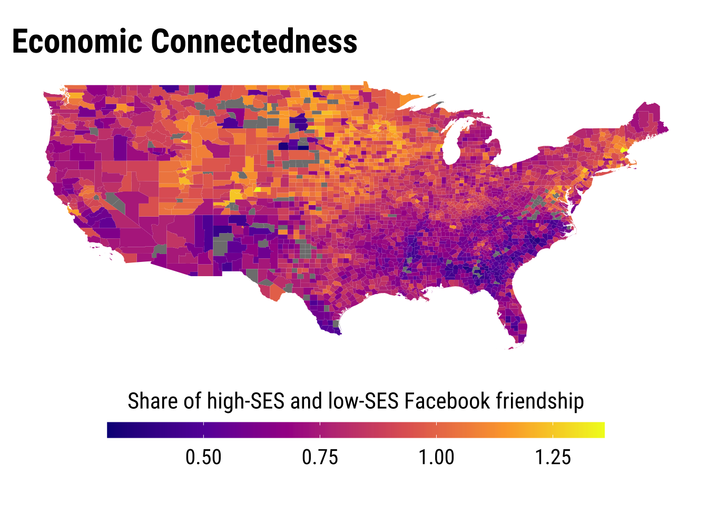
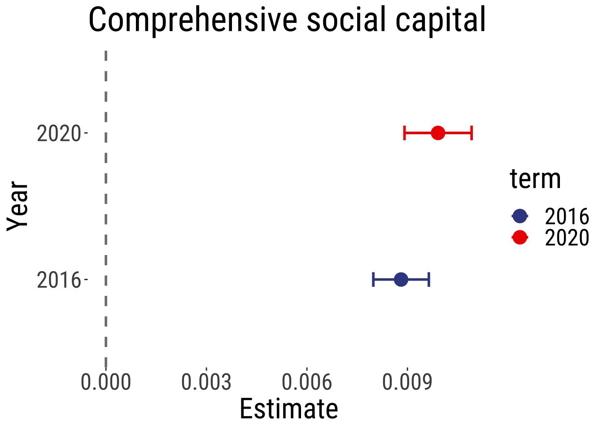

# clean workspace
rm(list=ls())
options(scipen=999, # avoid scientific notation
stringsAsFactors = FALSE, digits = 2)
options(digits = 7)
# load font
font_add_google("Roboto Condensed", "robotocondensed")
# automatically use showtext to render text
showtext_auto()SocCapUS
Set themes
Set font style
Theme for maps
theme_map <- function(...) {
theme_tufte() +
theme(
text = element_text(family = "robotocondensed", size = 30),
strip.text = element_text(size = 30),
# legend
legend.title=element_text(size=20),
legend.text=element_text(size=18),
# remove all axes
axis.text.x = element_blank(),
axis.text.y = element_blank(),
axis.ticks = element_blank(),
legend.position = "right"
)
}Theme for plots
theme_tufte2 <- function(...) {
theme_tufte() +
theme(
text = element_text(family = "robotocondensed", size = 24),
)
}Figure 1 US Presidential Elections 2016 and 2020 (county level)
png(filename = "./output/trump-margin1620.png", units="in", width=8, height=8, res=300, bg = "white")
margin_map
dev.off()quartz_off_screen
2 Figure 2 Histograms of US Presidential Elections 2016 and 2020 (county level)
Warning: The dot-dot notation (`..density..`) was deprecated in ggplot2 3.4.0.
ℹ Please use `after_stat(density)` instead.
png(filename = "./output/hist_trump-margin.png", units="in", width=10, height=8, res=300, bg = "white")
p
dev.off()quartz_off_screen
2 Nonetheless, it’s important to acknowledge that social capital is not a one-dimensional concept. The tendency to view social capital as a single construct stems from practical limitations, particularly the scarcity of detailed data available at the county level. Recently, scholars have introduced a method for measuring distinct dimensions of social capital, including civic engagement, social cohesion, and economic connectedness.
Figure 3 Civic Engagement Dimension

png(filename = "./output/civic-engagement.png", units="in", width=8, height=8, res=300, bg = "white")
map_civorg / map_vol
dev.off()quartz_off_screen
2 Figure 4 Social Cohesion Dimension
png(filename = "./output/social-cohesion.png", units="in", width=8, height=8, res=300, bg = "white")
map_sup / map_clu
dev.off()quartz_off_screen
2 Figure 5 Economic Connectedness Dimension

png(filename = "./output/economic-connectedness.png", units="in", width=8, height=6, res=300, bg = "white")
last_plot()
dev.off()quartz_off_screen
2 As evident from the data, each dimension exhibits unique territorial patterns, which can potentially influence the inclination to endorse anti-establishment narratives in distinct ways. This is the aspect we aim to investigate further.
It can be posited that dimensions linked to homogeneous networks may exhibit a positive correlation with anti-establishment perspectives. Conversely, dimensions associated with heterogeneous networks, signifying diversity, may demonstrate a negative relationship with support for anti-establishment sentiments.
First Part: Replicating Classic Models
Appendix 1 and 2 Classic models for Trump Margin 2016 and 2020
# For 2016 - To report
model16_5 <- lm(MAR_T_new ~ INC_PC_16 + GINI_16 + EMP_AVE_CGR80_19 + SC5_PCM_14 + POP_DEN_16 + UNE_16 + EDU1_16 + R_BLACK_16 + SEX_RATIO + AGE_DEP_YOUNG + MARRIED + factor(S_ID), data = data_trump)
summary(model16_5)
Call:
lm(formula = MAR_T_new ~ INC_PC_16 + GINI_16 + EMP_AVE_CGR80_19 +
SC5_PCM_14 + POP_DEN_16 + UNE_16 + EDU1_16 + R_BLACK_16 +
SEX_RATIO + AGE_DEP_YOUNG + MARRIED + factor(S_ID), data = data_trump)
Residuals:
Min 1Q Median 3Q Max
-0.32235 -0.01965 0.00095 0.02060 0.16003
Coefficients:
Estimate Std. Error t value Pr(>|t|)
(Intercept) 0.11388318709 0.01690403037 6.737 0.000000000019296 ***
INC_PC_16 -0.00000166712 0.00000008177 -20.387 < 0.0000000000000002 ***
GINI_16 -0.08095885490 0.02287540940 -3.539 0.000408 ***
EMP_AVE_CGR80_19 -0.78098987411 0.13245616506 -5.896 0.000000004133070 ***
SC5_PCM_14 0.00881058084 0.00082874490 10.631 < 0.0000000000000002 ***
POP_DEN_16 -0.00000105426 0.00000042451 -2.483 0.013066 *
UNE_16 0.00150249898 0.00056746628 2.648 0.008146 **
EDU1_16 0.00203547425 0.00015421060 13.199 < 0.0000000000000002 ***
R_BLACK_16 -0.00055735201 0.00007529107 -7.403 0.000000000000172 ***
SEX_RATIO 0.00002981684 0.00005987138 0.498 0.618510
AGE_DEP_YOUNG -0.00099261993 0.00013539216 -7.331 0.000000000000291 ***
MARRIED 0.00059092679 0.00010924808 5.409 0.000000068336584 ***
factor(S_ID)AR -0.01220535850 0.00600700926 -2.032 0.042256 *
factor(S_ID)AZ -0.11156945106 0.01061157522 -10.514 < 0.0000000000000002 ***
factor(S_ID)CA -0.04404066884 0.00679084728 -6.485 0.000000000103165 ***
factor(S_ID)CO -0.00967656214 0.00675008898 -1.434 0.151806
factor(S_ID)CT 0.03563675722 0.01345624036 2.648 0.008131 **
factor(S_ID)DC 0.01500773527 0.03592294051 0.418 0.676141
factor(S_ID)DE 0.01490860054 0.02082180707 0.716 0.474041
factor(S_ID)FL -0.00469143219 0.00623868587 -0.752 0.452116
factor(S_ID)GA -0.01237945683 0.00514475770 -2.406 0.016178 *
factor(S_ID)HI 0.02715957497 0.02094375848 1.297 0.194804
factor(S_ID)IA 0.06958807986 0.00619032256 11.241 < 0.0000000000000002 ***
factor(S_ID)ID -0.06684978790 0.00729365281 -9.165 < 0.0000000000000002 ***
factor(S_ID)IL 0.02786698538 0.00593404841 4.696 0.000002770424350 ***
factor(S_ID)IN 0.03914195060 0.00603935376 6.481 0.000000000106003 ***
factor(S_ID)KS -0.02078458715 0.00620043878 -3.352 0.000812 ***
factor(S_ID)KY 0.01613301925 0.00564432418 2.858 0.004289 **
factor(S_ID)LA 0.00227104847 0.00620971825 0.366 0.714596
factor(S_ID)MA -0.00253290860 0.01076570485 -0.235 0.814011
factor(S_ID)MD 0.00835630944 0.00855470562 0.977 0.328743
factor(S_ID)ME 0.02750576345 0.01008649210 2.727 0.006429 **
factor(S_ID)MI 0.03185317747 0.00617566990 5.158 0.000000266013422 ***
factor(S_ID)MN 0.04202251995 0.00644775566 6.517 0.000000000083592 ***
factor(S_ID)MO 0.04266149158 0.00575714175 7.410 0.000000000000163 ***
factor(S_ID)MS 0.00342180511 0.00587263413 0.583 0.560159
factor(S_ID)MT 0.00146797564 0.00703057497 0.209 0.834619
factor(S_ID)NC -0.01070766377 0.00561774221 -1.906 0.056740 .
factor(S_ID)ND 0.05167310535 0.00717721764 7.200 0.000000000000760 ***
factor(S_ID)NE 0.02254550407 0.00636437205 3.542 0.000402 ***
factor(S_ID)NH 0.00862172730 0.01222982669 0.705 0.480880
factor(S_ID)NJ 0.03420411461 0.00911950859 3.751 0.000180 ***
factor(S_ID)NM -0.03572438210 0.00795238936 -4.492 0.000007312107837 ***
factor(S_ID)NV -0.00082385286 0.00987732290 -0.083 0.933532
factor(S_ID)NY 0.08609332107 0.00666170429 12.924 < 0.0000000000000002 ***
factor(S_ID)OH 0.06133729892 0.00606536386 10.113 < 0.0000000000000002 ***
factor(S_ID)OK -0.00601574253 0.00623830664 -0.964 0.334962
factor(S_ID)OR -0.03809082331 0.00770617034 -4.943 0.000000811895914 ***
factor(S_ID)PA 0.02991918730 0.00645952522 4.632 0.000003779123598 ***
factor(S_ID)RI 0.02466857456 0.01653797550 1.492 0.135901
factor(S_ID)SC -0.00585473195 0.00682278582 -0.858 0.390898
factor(S_ID)SD 0.04195517651 0.00685250249 6.123 0.000000001040093 ***
factor(S_ID)TN 0.02232060017 0.00582212282 3.834 0.000129 ***
factor(S_ID)TX -0.02787304875 0.00519463257 -5.366 0.000000086742942 ***
factor(S_ID)UT -0.18021645280 0.00861316521 -20.923 < 0.0000000000000002 ***
factor(S_ID)VA 0.00140988431 0.00574067739 0.246 0.806012
factor(S_ID)VT -0.00560951304 0.01064728243 -0.527 0.598337
factor(S_ID)WA -0.03159726592 0.00748612430 -4.221 0.000025067449578 ***
factor(S_ID)WI 0.03376410835 0.00651984777 5.179 0.000000238216510 ***
factor(S_ID)WV 0.03664026747 0.00668249404 5.483 0.000000045276485 ***
factor(S_ID)WY -0.02107024153 0.00917662659 -2.296 0.021740 *
---
Signif. codes: 0 '***' 0.001 '**' 0.01 '*' 0.05 '.' 0.1 ' ' 1
Residual standard error: 0.03522 on 3005 degrees of freedom
(1 observation deleted due to missingness)
Multiple R-squared: 0.626, Adjusted R-squared: 0.6185
F-statistic: 83.81 on 60 and 3005 DF, p-value: < 0.00000000000000022# Tidy the model and filter to include only SC5_PCM_14 and the intercept
tidy_model_filtered <- tidy(model16_5) %>%
filter(term == "SC5_PCM_14")
tidy_model_filtered$term <- ifelse(tidy_model_filtered$term == "SC5_PCM_14", "Comprehensive Social Capital", tidy_model_filtered$term)
# Create the coefficient plot with updated term labels
ggplot(tidy_model_filtered, aes(x = term, y = estimate)) +
geom_point() +
geom_errorbar(aes(ymin = estimate - std.error, ymax = estimate + std.error), width = 0.2) +
geom_hline(yintercept = 0, linetype = "dashed", color = "red") + # Add horizontal line which becomes vertical after coord_flip
coord_flip() + # Make plot horizontal
labs(title = "Coefficient Plot for 2016 Elections", x = "Term", y = "Estimate") +
theme_minimal()
# For 2020 - To report
model20_5 <- lm(MAR_T_20_new ~ INC_PC_16 + GINI_16 + EMP_AVE_CGR80_19 + SC5_PCM_14 + POP_DEN_16 + UNE_16 + EDU1_16 + R_BLACK_16 + SEX_RATIO + AGE_DEP_YOUNG + MARRIED + factor(S_ID), data = data_trump)
summary(model20_5)
Call:
lm(formula = MAR_T_20_new ~ INC_PC_16 + GINI_16 + EMP_AVE_CGR80_19 +
SC5_PCM_14 + POP_DEN_16 + UNE_16 + EDU1_16 + R_BLACK_16 +
SEX_RATIO + AGE_DEP_YOUNG + MARRIED + factor(S_ID), data = data_trump)
Residuals:
Min 1Q Median 3Q Max
-0.202169 -0.024832 -0.000119 0.026061 0.204086
Coefficients:
Estimate Std. Error t value Pr(>|t|)
(Intercept) 0.07769108621 0.02042207962 3.804 0.000145 ***
INC_PC_16 -0.00000218410 0.00000009879 -22.108 < 0.0000000000000002 ***
GINI_16 -0.06743058666 0.02763621587 -2.440 0.014747 *
EMP_AVE_CGR80_19 -0.70448116047 0.16002280468 -4.402 0.00001108030171310 ***
SC5_PCM_14 0.00991430110 0.00100122243 9.902 < 0.0000000000000002 ***
POP_DEN_16 0.00000038655 0.00000051286 0.754 0.451082
UNE_16 0.00114875578 0.00068556677 1.676 0.093915 .
EDU1_16 0.00374913894 0.00018630475 20.124 < 0.0000000000000002 ***
R_BLACK_16 -0.00068453183 0.00009096057 -7.526 0.00000000000006894 ***
SEX_RATIO 0.00012977017 0.00007233175 1.794 0.072898 .
AGE_DEP_YOUNG -0.00084145827 0.00016356983 -5.144 0.00000028570992819 ***
MARRIED 0.00089713719 0.00013198467 6.797 0.00000000001280649 ***
factor(S_ID)AR 0.01500579105 0.00725718179 2.068 0.038752 *
factor(S_ID)AZ -0.03524976317 0.01282004525 -2.750 0.006003 **
factor(S_ID)CA -0.02866053316 0.00820415137 -3.493 0.000484 ***
factor(S_ID)CO -0.00343265106 0.00815491049 -0.421 0.673836
factor(S_ID)CT 0.03775404898 0.01625673914 2.322 0.020280 *
factor(S_ID)DC 0.04975067673 0.04339918561 1.146 0.251741
factor(S_ID)DE -0.00492737837 0.02515521995 -0.196 0.844718
factor(S_ID)FL 0.00590469817 0.00753707469 0.783 0.433442
factor(S_ID)GA -0.02087000584 0.00621547933 -3.358 0.000796 ***
factor(S_ID)HI 0.08299407373 0.02530255177 3.280 0.001050 **
factor(S_ID)IA 0.10637715656 0.00747864607 14.224 < 0.0000000000000002 ***
factor(S_ID)ID -0.00934834096 0.00881160027 -1.061 0.288815
factor(S_ID)IL 0.05560632391 0.00716903641 7.756 0.00000000000001187 ***
factor(S_ID)IN 0.05304312640 0.00729625780 7.270 0.00000000000045655 ***
factor(S_ID)KS -0.00254006103 0.00749086766 -0.339 0.734567
factor(S_ID)KY 0.01243229108 0.00681901507 1.823 0.068375 .
factor(S_ID)LA 0.00690803929 0.00750207837 0.921 0.357220
factor(S_ID)MA 0.00527031893 0.01300625217 0.405 0.685349
factor(S_ID)MD 0.00107119784 0.01033510208 0.104 0.917457
factor(S_ID)ME 0.03967837179 0.01218568237 3.256 0.001142 **
factor(S_ID)MI 0.04638841259 0.00746094391 6.217 0.00000000057503361 ***
factor(S_ID)MN 0.06986791436 0.00778965588 8.969 < 0.0000000000000002 ***
factor(S_ID)MO 0.05480567948 0.00695531211 7.880 0.00000000000000455 ***
factor(S_ID)MS -0.00474646562 0.00709484065 -0.669 0.503545
factor(S_ID)MT 0.01943976904 0.00849377094 2.289 0.022165 *
factor(S_ID)NC -0.00302987302 0.00678690089 -0.446 0.655319
factor(S_ID)ND 0.09134835918 0.00867093273 10.535 < 0.0000000000000002 ***
factor(S_ID)NE 0.04355518150 0.00768891856 5.665 0.00000001612297136 ***
factor(S_ID)NH 0.01713441287 0.01477508553 1.160 0.246270
factor(S_ID)NJ 0.04065430848 0.01101745125 3.690 0.000228 ***
factor(S_ID)NM 0.00849596975 0.00960743239 0.884 0.376598
factor(S_ID)NV 0.03033407553 0.01193298109 2.542 0.011071 *
factor(S_ID)NY 0.09226730867 0.00804813128 11.464 < 0.0000000000000002 ***
factor(S_ID)OH 0.09039079686 0.00732768110 12.336 < 0.0000000000000002 ***
factor(S_ID)OK 0.01181496390 0.00753661655 1.568 0.117062
factor(S_ID)OR -0.01737180915 0.00930997051 -1.866 0.062148 .
factor(S_ID)PA 0.03703944034 0.00780387490 4.746 0.00000216867560038 ***
factor(S_ID)RI 0.02777745541 0.01997984180 1.390 0.164549
factor(S_ID)SC 0.00161691461 0.00824273692 0.196 0.844496
factor(S_ID)SD 0.05716830700 0.00827863820 6.906 0.00000000000607898 ***
factor(S_ID)TN 0.03206388665 0.00703381698 4.559 0.00000535686717690 ***
factor(S_ID)TX -0.01659432846 0.00627573411 -2.644 0.008231 **
factor(S_ID)UT -0.07044814003 0.01040572822 -6.770 0.00000000001541211 ***
factor(S_ID)VA 0.01187231445 0.00693542121 1.712 0.087030 .
factor(S_ID)VT 0.01506288242 0.01286318380 1.171 0.241689
factor(S_ID)WA -0.02418547780 0.00904412872 -2.674 0.007532 **
factor(S_ID)WI 0.06149969209 0.00787675173 7.808 0.00000000000000798 ***
factor(S_ID)WV 0.03852916515 0.00807324777 4.772 0.00000190691401654 ***
factor(S_ID)WY 0.01354573659 0.01108645659 1.222 0.221869
---
Signif. codes: 0 '***' 0.001 '**' 0.01 '*' 0.05 '.' 0.1 ' ' 1
Residual standard error: 0.04255 on 3005 degrees of freedom
(1 observation deleted due to missingness)
Multiple R-squared: 0.5747, Adjusted R-squared: 0.5662
F-statistic: 67.68 on 60 and 3005 DF, p-value: < 0.00000000000000022# Tidy the model and filter to include only SC5_PCM_14 and the intercept
tidy_model20_filtered <- tidy(model20_5) %>%
filter(term == "SC5_PCM_14")
tidy_model20_filtered$term <- ifelse(tidy_model20_filtered$term == "SC5_PCM_14", "Comprehensive Social Capital", tidy_model20_filtered$term)
# Create the coefficient plot with updated term labels
ggplot(tidy_model20_filtered, aes(x = term, y = estimate)) +
geom_point() +
geom_errorbar(aes(ymin = estimate - std.error, ymax = estimate + std.error), width = 0.2) +
geom_hline(yintercept = 0, linetype = "dashed", color = "red") + # Add horizontal line which becomes vertical after coord_flip
coord_flip() + # Make plot horizontal
labs(title = "Coefficient Plot for 2020 Elections", x = "Term", y = "Estimate") +
theme_minimal()
Second Part: Replicating Classic Models with META Data
Figure 6 Correlation Matrix
data_trump3 <- select(data_trump2, MAR_T_new, INC_PC_16, GINI_16, EMP_AVE_CGR80_19, SC5_PCM_14,
civic_organizations_county, volunteering_rate_county, clustering_county,
support_ratio_county, ec_county, POP_DEN_16, UNE_16, EDU1_16, R_BLACK_16,
SEX_RATIO, AGE_DEP_YOUNG, MARRIED)
cormat <- cor(data_trump3, use="complete.obs", method="pearson")
# significance test
sig1 <- corrplot::cor.mtest(data_trump3, conf.level = .95)
colnames(cormat) <- c("trump margin",
"income per capita",
"inequality",
"emp. change",
"social capital community",
"civic organizations",
"volunteering",
"clustering",
"support ratio",
"economic connectedness",
"density",
"unemployment",
"education",
"black population",
"sex ratio",
"age dependency",
"married")
rownames(cormat) <- c("trump margin",
"income per capita",
"inequality",
"emp. change",
"social capital community",
"civic organizations",
"volunteering",
"clustering",
"support ratio",
"economic connectedness",
"density",
"unemployment",
"education",
"black population",
"sex ratio",
"age dependency",
"married")
# creta a correlogram
corrplot::corrplot(cormat, type="lower",
method = "circle",
order = "original",
tl.cex = 0.7,
p.mat = sig1$p, sig.level = .05,
col = viridis::viridis(100, option = "plasma"),
diag = FALSE)Warning in corrplot::corrplot(cormat, type = "lower", method = "circle", :
p.mat and corr may be not paired, their rownames and colnames are not totally
same!
png(filename = "./output/correlagram.png", units="in", width=8, height=6, res=300, bg = "white")
corrplot::corrplot(cormat, type="lower",
method = "circle",
order = "original",
tl.cex = 0.7,
p.mat = sig1$p, sig.level = .05,
col = viridis::viridis(100, option = "plasma"),
diag = FALSE)Warning in corrplot::corrplot(cormat, type = "lower", method = "circle", :
p.mat and corr may be not paired, their rownames and colnames are not totally
same!dev.off()quartz_off_screen
2 Figure 7 Scatter plot for Trump Margin and Social Capital (classic and differentiating)
Warning: The `<scale>` argument of `guides()` cannot be `FALSE`. Use "none" instead as
of ggplot2 3.3.4.Warning: Using `size` aesthetic for lines was deprecated in ggplot2 3.4.0.
ℹ Please use `linewidth` instead.`geom_smooth()` using formula = 'y ~ x'Warning: The following aesthetics were dropped during statistical transformation: size
ℹ This can happen when ggplot fails to infer the correct grouping structure in
the data.
ℹ Did you forget to specify a `group` aesthetic or to convert a numerical
variable into a factor?Warning: Removed 1 rows containing missing values (`geom_point()`).`geom_smooth()` using formula = 'y ~ x'Warning: The following aesthetics were dropped during statistical transformation: size
ℹ This can happen when ggplot fails to infer the correct grouping structure in
the data.
ℹ Did you forget to specify a `group` aesthetic or to convert a numerical
variable into a factor?
Removed 1 rows containing missing values (`geom_point()`).
`geom_smooth()` using formula = 'y ~ x'Warning: The following aesthetics were dropped during statistical transformation: size
ℹ This can happen when ggplot fails to infer the correct grouping structure in
the data.
ℹ Did you forget to specify a `group` aesthetic or to convert a numerical
variable into a factor?
Removed 1 rows containing missing values (`geom_point()`).`geom_smooth()` using formula = 'y ~ x'Warning: The following aesthetics were dropped during statistical transformation: size
ℹ This can happen when ggplot fails to infer the correct grouping structure in
the data.
ℹ Did you forget to specify a `group` aesthetic or to convert a numerical
variable into a factor?
Removed 1 rows containing missing values (`geom_point()`).`geom_smooth()` using formula = 'y ~ x'Warning: The following aesthetics were dropped during statistical transformation: size
ℹ This can happen when ggplot fails to infer the correct grouping structure in
the data.
ℹ Did you forget to specify a `group` aesthetic or to convert a numerical
variable into a factor?
Removed 1 rows containing missing values (`geom_point()`).
`geom_smooth()` using formula = 'y ~ x'Warning: Removed 66 rows containing non-finite values (`stat_smooth()`).Warning: The following aesthetics were dropped during statistical transformation: size
ℹ This can happen when ggplot fails to infer the correct grouping structure in
the data.
ℹ Did you forget to specify a `group` aesthetic or to convert a numerical
variable into a factor?Warning: Removed 67 rows containing missing values (`geom_point()`).
Note: All models consider population density (size of circles)
Table 1 Basic model for Trump Margin 2016, with META data
# Civic Engagement
modelnew16_1 <- data_trump2 %>% rename(
social_community = civic_organizations_county
) %>%
lm(MAR_T_new ~ INC_PC_16 + GINI_16 + EMP_AVE_CGR80_19 + social_community + POP_DEN_16 + UNE_16 + EDU1_16 + R_BLACK_16 + SEX_RATIO + AGE_DEP_YOUNG + MARRIED + factor(S_ID), data = .)
summary(modelnew16_1)
Call:
lm(formula = MAR_T_new ~ INC_PC_16 + GINI_16 + EMP_AVE_CGR80_19 +
social_community + POP_DEN_16 + UNE_16 + EDU1_16 + R_BLACK_16 +
SEX_RATIO + AGE_DEP_YOUNG + MARRIED + factor(S_ID), data = .)
Residuals:
Min 1Q Median 3Q Max
-0.33190 -0.01978 0.00045 0.01985 0.16487
Coefficients:
Estimate Std. Error t value Pr(>|t|)
(Intercept) 0.03331353161 0.01980910097 1.682 0.092727 .
INC_PC_16 -0.00000164757 0.00000008468 -19.456 < 0.0000000000000002 ***
GINI_16 -0.02592144349 0.02439326639 -1.063 0.288029
EMP_AVE_CGR80_19 -0.85561723762 0.13476229083 -6.349 0.0000000002498828 ***
social_community 0.42094637349 0.08006020783 5.258 0.0000001561182054 ***
POP_DEN_16 -0.00000105886 0.00000042560 -2.488 0.012904 *
UNE_16 0.00135812854 0.00057917317 2.345 0.019096 *
EDU1_16 0.00200718752 0.00016154672 12.425 < 0.0000000000000002 ***
R_BLACK_16 -0.00030041028 0.00008034855 -3.739 0.000188 ***
SEX_RATIO 0.00004260124 0.00006180316 0.689 0.490685
AGE_DEP_YOUNG -0.00109663214 0.00014398669 -7.616 0.0000000000000349 ***
MARRIED 0.00141596445 0.00016161079 8.762 < 0.0000000000000002 ***
factor(S_ID)AR -0.00927116153 0.00599992086 -1.545 0.122402
factor(S_ID)AZ -0.11119931123 0.01063357858 -10.457 < 0.0000000000000002 ***
factor(S_ID)CA -0.03862962476 0.00684569646 -5.643 0.0000000183033960 ***
factor(S_ID)CO -0.00325953036 0.00677067867 -0.481 0.630255
factor(S_ID)CT 0.04020734692 0.01347040250 2.985 0.002860 **
factor(S_ID)DC 0.04366926509 0.03585775020 1.218 0.223379
factor(S_ID)DE 0.01604185358 0.02080503373 0.771 0.440735
factor(S_ID)FL -0.00173145112 0.00624561816 -0.277 0.781626
factor(S_ID)GA -0.01174358327 0.00514066832 -2.284 0.022416 *
factor(S_ID)HI 0.02888467919 0.02094323545 1.379 0.167941
factor(S_ID)IA 0.08251906982 0.00610198584 13.523 < 0.0000000000000002 ***
factor(S_ID)ID -0.06455586560 0.00735625468 -8.776 < 0.0000000000000002 ***
factor(S_ID)IL 0.03708797735 0.00590792789 6.278 0.0000000003940835 ***
factor(S_ID)IN 0.04378675258 0.00606452969 7.220 0.0000000000006575 ***
factor(S_ID)KS -0.00831855621 0.00612499000 -1.358 0.174525
factor(S_ID)KY 0.01405461575 0.00564032668 2.492 0.012764 *
factor(S_ID)LA 0.00408295048 0.00621077083 0.657 0.510976
factor(S_ID)MA 0.00620325620 0.01081668504 0.573 0.566357
factor(S_ID)MD 0.01298640600 0.00856655632 1.516 0.129641
factor(S_ID)ME 0.03295959925 0.01009974808 3.263 0.001113 **
factor(S_ID)MI 0.03502598962 0.00619044511 5.658 0.0000000167734284 ***
factor(S_ID)MN 0.05998473111 0.00626204308 9.579 < 0.0000000000000002 ***
factor(S_ID)MO 0.04797384172 0.00576746210 8.318 < 0.0000000000000002 ***
factor(S_ID)MS 0.00429603974 0.00588355614 0.730 0.465340
factor(S_ID)MT 0.01343298961 0.00705757192 1.903 0.057093 .
factor(S_ID)NC -0.01056350120 0.00561953822 -1.880 0.060236 .
factor(S_ID)ND 0.06724057815 0.00712246536 9.441 < 0.0000000000000002 ***
factor(S_ID)NE 0.03076160123 0.00639812155 4.808 0.0000016014373939 ***
factor(S_ID)NH 0.01701504632 0.01223874149 1.390 0.164554
factor(S_ID)NJ 0.03598651710 0.00912738922 3.943 0.0000824405839839 ***
factor(S_ID)NM -0.02889703830 0.00814663589 -3.547 0.000396 ***
factor(S_ID)NV 0.00144896481 0.01012498309 0.143 0.886215
factor(S_ID)NY 0.09070781047 0.00671379457 13.511 < 0.0000000000000002 ***
factor(S_ID)OH 0.06871892540 0.00606782860 11.325 < 0.0000000000000002 ***
factor(S_ID)OK -0.00077205558 0.00624804338 -0.124 0.901666
factor(S_ID)OR -0.02645178965 0.00765104239 -3.457 0.000553 ***
factor(S_ID)PA 0.03773732355 0.00647012202 5.833 0.0000000060497036 ***
factor(S_ID)RI 0.03015510167 0.01654577316 1.823 0.068476 .
factor(S_ID)SC -0.00368925829 0.00681434593 -0.541 0.588276
factor(S_ID)SD 0.05650434313 0.00676487557 8.353 < 0.0000000000000002 ***
factor(S_ID)TN 0.01908647316 0.00580906493 3.286 0.001029 **
factor(S_ID)TX -0.02535295836 0.00522752684 -4.850 0.0000012991989597 ***
factor(S_ID)UT -0.18558250301 0.00866509349 -21.417 < 0.0000000000000002 ***
factor(S_ID)VA 0.00887853288 0.00594802549 1.493 0.135626
factor(S_ID)VT 0.00165868560 0.01067749485 0.155 0.876561
factor(S_ID)WA -0.02319020316 0.00748952863 -3.096 0.001978 **
factor(S_ID)WI 0.04431879415 0.00647856976 6.841 0.0000000000095318 ***
factor(S_ID)WV 0.03800526244 0.00669000378 5.681 0.0000000147020766 ***
factor(S_ID)WY -0.00142548336 0.00901502107 -0.158 0.874371
---
Signif. codes: 0 '***' 0.001 '**' 0.01 '*' 0.05 '.' 0.1 ' ' 1
Residual standard error: 0.03519 on 2955 degrees of freedom
(1 observation deleted due to missingness)
Multiple R-squared: 0.6275, Adjusted R-squared: 0.62
F-statistic: 82.98 on 60 and 2955 DF, p-value: < 0.00000000000000022modelnew16_2 <- data_trump2 %>% rename(
social_community = volunteering_rate_county
) %>%
lm(MAR_T_new ~ INC_PC_16 + GINI_16 + EMP_AVE_CGR80_19 + social_community + POP_DEN_16 + UNE_16 + EDU1_16 + R_BLACK_16 + SEX_RATIO + AGE_DEP_YOUNG + MARRIED + factor(S_ID), data = .)
summary(modelnew16_2)
Call:
lm(formula = MAR_T_new ~ INC_PC_16 + GINI_16 + EMP_AVE_CGR80_19 +
social_community + POP_DEN_16 + UNE_16 + EDU1_16 + R_BLACK_16 +
SEX_RATIO + AGE_DEP_YOUNG + MARRIED + factor(S_ID), data = .)
Residuals:
Min 1Q Median 3Q Max
-0.34354 -0.01924 0.00034 0.02048 0.16383
Coefficients:
Estimate Std. Error t value Pr(>|t|)
(Intercept) 0.02769674538 0.01989225158 1.392 0.163925
INC_PC_16 -0.00000163701 0.00000008483 -19.297 < 0.0000000000000002 ***
GINI_16 -0.01815668025 0.02432500608 -0.746 0.455473
EMP_AVE_CGR80_19 -0.81550341943 0.13473274690 -6.053 0.00000000160343636 ***
social_community 0.11690442094 0.02405344545 4.860 0.00000123390921812 ***
POP_DEN_16 -0.00000115477 0.00000042521 -2.716 0.006651 **
UNE_16 0.00128692872 0.00057969941 2.220 0.026495 *
EDU1_16 0.00212039233 0.00016430711 12.905 < 0.0000000000000002 ***
R_BLACK_16 -0.00023819197 0.00008131748 -2.929 0.003425 **
SEX_RATIO 0.00003125208 0.00006187619 0.505 0.613544
AGE_DEP_YOUNG -0.00122073964 0.00013956535 -8.747 < 0.0000000000000002 ***
MARRIED 0.00152046467 0.00015959318 9.527 < 0.0000000000000002 ***
factor(S_ID)AR -0.01164386547 0.00603360290 -1.930 0.053723 .
factor(S_ID)AZ -0.11019479731 0.01063660634 -10.360 < 0.0000000000000002 ***
factor(S_ID)CA -0.03892710417 0.00685735726 -5.677 0.00000001506445683 ***
factor(S_ID)CO 0.00039312055 0.00671437315 0.059 0.953315
factor(S_ID)CT 0.03969072736 0.01348060104 2.944 0.003262 **
factor(S_ID)DC 0.04869439831 0.03583801617 1.359 0.174334
factor(S_ID)DE 0.01628927271 0.02081882922 0.782 0.434025
factor(S_ID)FL -0.00216797318 0.00624988254 -0.347 0.728704
factor(S_ID)GA -0.01201371427 0.00514622152 -2.334 0.019638 *
factor(S_ID)HI 0.02738538579 0.02096531813 1.306 0.191578
factor(S_ID)IA 0.08201649891 0.00611759953 13.407 < 0.0000000000000002 ***
factor(S_ID)ID -0.06569160242 0.00738971573 -8.890 < 0.0000000000000002 ***
factor(S_ID)IL 0.03458849962 0.00595126096 5.812 0.00000000683356496 ***
factor(S_ID)IN 0.04068241253 0.00613393423 6.632 0.00000000003913694 ***
factor(S_ID)KS -0.00860943572 0.00615177724 -1.400 0.161767
factor(S_ID)KY 0.01269816956 0.00564964398 2.248 0.024675 *
factor(S_ID)LA 0.00061850101 0.00624526143 0.099 0.921117
factor(S_ID)MA 0.00645802919 0.01082325542 0.597 0.550766
factor(S_ID)MD 0.01290221115 0.00857442958 1.505 0.132500
factor(S_ID)ME 0.03335044116 0.01010467942 3.300 0.000977 ***
factor(S_ID)MI 0.02965550363 0.00636994883 4.656 0.00000337390722286 ***
factor(S_ID)MN 0.06145434018 0.00625148311 9.830 < 0.0000000000000002 ***
factor(S_ID)MO 0.04599073745 0.00582292117 7.898 0.00000000000000395 ***
factor(S_ID)MS 0.00248417113 0.00589622235 0.421 0.673555
factor(S_ID)MT 0.01579122030 0.00701837754 2.250 0.024523 *
factor(S_ID)NC -0.00951085620 0.00561653400 -1.693 0.090491 .
factor(S_ID)ND 0.06788814463 0.00712140242 9.533 < 0.0000000000000002 ***
factor(S_ID)NE 0.03117435361 0.00639939513 4.871 0.00000116614996823 ***
factor(S_ID)NH 0.01842290397 0.01224053223 1.505 0.132412
factor(S_ID)NJ 0.03490629164 0.00913557749 3.821 0.000136 ***
factor(S_ID)NM -0.02544284044 0.00811432028 -3.136 0.001732 **
factor(S_ID)NV -0.00020441250 0.01014675442 -0.020 0.983929
factor(S_ID)NY 0.09094738435 0.00671733607 13.539 < 0.0000000000000002 ***
factor(S_ID)OH 0.06634073155 0.00610458264 10.867 < 0.0000000000000002 ***
factor(S_ID)OK -0.00520451022 0.00636363826 -0.818 0.413508
factor(S_ID)OR -0.02636912429 0.00765992364 -3.442 0.000584 ***
factor(S_ID)PA 0.03737324633 0.00647717366 5.770 0.00000000874905235 ***
factor(S_ID)RI 0.02976436029 0.01655680306 1.798 0.072325 .
factor(S_ID)SC -0.00326562021 0.00681860209 -0.479 0.632025
factor(S_ID)SD 0.05811817579 0.00674616167 8.615 < 0.0000000000000002 ***
factor(S_ID)TN 0.01697251517 0.00582307608 2.915 0.003587 **
factor(S_ID)TX -0.02563116289 0.00523827287 -4.893 0.00000104603008602 ***
factor(S_ID)UT -0.18312982634 0.00864423932 -21.185 < 0.0000000000000002 ***
factor(S_ID)VA 0.00860485444 0.00596100234 1.444 0.148979
factor(S_ID)VT 0.00406647590 0.01066281788 0.381 0.702956
factor(S_ID)WA -0.02308221657 0.00749687371 -3.079 0.002097 **
factor(S_ID)WI 0.04367460866 0.00649416516 6.725 0.00000000002096796 ***
factor(S_ID)WV 0.03393392196 0.00673596742 5.038 0.00000049943640121 ***
factor(S_ID)WY -0.00007052636 0.00900187944 -0.008 0.993749
---
Signif. codes: 0 '***' 0.001 '**' 0.01 '*' 0.05 '.' 0.1 ' ' 1
Residual standard error: 0.03521 on 2955 degrees of freedom
(1 observation deleted due to missingness)
Multiple R-squared: 0.627, Adjusted R-squared: 0.6195
F-statistic: 82.8 on 60 and 2955 DF, p-value: < 0.00000000000000022# Social Cohesion
modelnew16_3 <- data_trump2 %>% rename(
social_community = clustering_county
) %>%
lm(MAR_T_new ~ INC_PC_16 + GINI_16 + EMP_AVE_CGR80_19 + social_community + POP_DEN_16 + UNE_16 + EDU1_16 + R_BLACK_16 + SEX_RATIO + AGE_DEP_YOUNG + MARRIED + factor(S_ID), data = .)
summary(modelnew16_3)
Call:
lm(formula = MAR_T_new ~ INC_PC_16 + GINI_16 + EMP_AVE_CGR80_19 +
social_community + POP_DEN_16 + UNE_16 + EDU1_16 + R_BLACK_16 +
SEX_RATIO + AGE_DEP_YOUNG + MARRIED + factor(S_ID), data = .)
Residuals:
Min 1Q Median 3Q Max
-0.32523 -0.01869 0.00100 0.01973 0.15408
Coefficients:
Estimate Std. Error t value Pr(>|t|)
(Intercept) -0.004770858708 0.018833214126 -0.253 0.800037
INC_PC_16 -0.000001379695 0.000000081278 -16.975 < 0.0000000000000002
GINI_16 -0.076103543779 0.023180204162 -3.283 0.001039
EMP_AVE_CGR80_19 -0.817093048074 0.127254345480 -6.421 0.000000000157245309
social_community 0.802171294260 0.040965740557 19.582 < 0.0000000000000002
POP_DEN_16 0.000000000636 0.000000406166 0.002 0.998751
UNE_16 0.001739388840 0.000547802697 3.175 0.001513
EDU1_16 0.000937519419 0.000161507169 5.805 0.000000007128020273
R_BLACK_16 -0.000600154568 0.000077502627 -7.744 0.000000000000013171
SEX_RATIO 0.000009358355 0.000058438592 0.160 0.872782
AGE_DEP_YOUNG -0.001100051038 0.000131202242 -8.384 < 0.0000000000000002
MARRIED 0.001097700691 0.000152392076 7.203 0.000000000000743392
factor(S_ID)AR -0.009197009672 0.005670301534 -1.622 0.104918
factor(S_ID)AZ -0.097058749915 0.010065839448 -9.642 < 0.0000000000000002
factor(S_ID)CA -0.025468997384 0.006480452546 -3.930 0.000086847550180047
factor(S_ID)CO 0.007054926957 0.006342930756 1.112 0.266121
factor(S_ID)CT 0.038383548759 0.012732691635 3.015 0.002595
factor(S_ID)DC 0.067794817740 0.033830330739 2.004 0.045165
factor(S_ID)DE 0.033926749507 0.019683910406 1.724 0.084889
factor(S_ID)FL 0.012576243316 0.005949684868 2.114 0.034619
factor(S_ID)GA -0.004671483367 0.004868451087 -0.960 0.337364
factor(S_ID)HI 0.029445872681 0.019793449490 1.488 0.136948
factor(S_ID)IA 0.070638617257 0.005798269304 12.183 < 0.0000000000000002
factor(S_ID)ID -0.057245364721 0.006933120932 -8.257 0.000000000000000223
factor(S_ID)IL 0.026318010564 0.005613630702 4.688 0.000002880599387466
factor(S_ID)IN 0.041271454841 0.005730029414 7.203 0.000000000000745941
factor(S_ID)KS -0.011497675940 0.005734833196 -2.005 0.045066
factor(S_ID)KY 0.011841043143 0.005332302022 2.221 0.026452
factor(S_ID)LA 0.002747719759 0.005870114150 0.468 0.639757
factor(S_ID)MA 0.002275372230 0.010222104773 0.223 0.823867
factor(S_ID)MD 0.019008059857 0.008092770271 2.349 0.018901
factor(S_ID)ME 0.025783714645 0.009546262135 2.701 0.006954
factor(S_ID)MI 0.030590028917 0.005848624745 5.230 0.000000181052355099
factor(S_ID)MN 0.049598930584 0.005938129516 8.353 < 0.0000000000000002
factor(S_ID)MO 0.046972123170 0.005437584857 8.638 < 0.0000000000000002
factor(S_ID)MS -0.001551778892 0.005568408658 -0.279 0.780513
factor(S_ID)MT 0.008479678147 0.006628256309 1.279 0.200884
factor(S_ID)NC -0.002158374856 0.005315906512 -0.406 0.684756
factor(S_ID)ND 0.056524785236 0.006750274335 8.374 < 0.0000000000000002
factor(S_ID)NE 0.027220539885 0.006023246492 4.519 0.000006449652603542
factor(S_ID)NH 0.015117532341 0.011562766985 1.307 0.191168
factor(S_ID)NJ 0.035691210569 0.008627287774 4.137 0.000036167098198389
factor(S_ID)NM -0.020519992444 0.007666182068 -2.677 0.007476
factor(S_ID)NV 0.005775676880 0.009568823533 0.604 0.546160
factor(S_ID)NY 0.088465267631 0.006338794548 13.956 < 0.0000000000000002
factor(S_ID)OH 0.068546819822 0.005733924857 11.955 < 0.0000000000000002
factor(S_ID)OK 0.005504129102 0.005904693487 0.932 0.351329
factor(S_ID)OR -0.018137476615 0.007205620852 -2.517 0.011884
factor(S_ID)PA 0.033541432013 0.006119238037 5.481 0.000000045774199319
factor(S_ID)RI 0.029736704699 0.015639130703 1.901 0.057343
factor(S_ID)SC 0.000835131754 0.006444167281 0.130 0.896896
factor(S_ID)SD 0.047312145117 0.006393092108 7.401 0.000000000000175905
factor(S_ID)TN 0.020860850811 0.005491441540 3.799 0.000148
factor(S_ID)TX -0.013583176919 0.004952945524 -2.742 0.006135
factor(S_ID)UT -0.182433927721 0.008160364289 -22.356 < 0.0000000000000002
factor(S_ID)VA 0.012562077365 0.005602388616 2.242 0.025018
factor(S_ID)VT -0.001802841088 0.010074406721 -0.179 0.857987
factor(S_ID)WA -0.016355254728 0.007057971869 -2.317 0.020557
factor(S_ID)WI 0.037261377210 0.006130988586 6.078 0.000000001376774936
factor(S_ID)WV 0.028667959826 0.006339376231 4.522 0.000006360764342396
factor(S_ID)WY -0.001389620628 0.008476200321 -0.164 0.869787
(Intercept)
INC_PC_16 ***
GINI_16 **
EMP_AVE_CGR80_19 ***
social_community ***
POP_DEN_16
UNE_16 **
EDU1_16 ***
R_BLACK_16 ***
SEX_RATIO
AGE_DEP_YOUNG ***
MARRIED ***
factor(S_ID)AR
factor(S_ID)AZ ***
factor(S_ID)CA ***
factor(S_ID)CO
factor(S_ID)CT **
factor(S_ID)DC *
factor(S_ID)DE .
factor(S_ID)FL *
factor(S_ID)GA
factor(S_ID)HI
factor(S_ID)IA ***
factor(S_ID)ID ***
factor(S_ID)IL ***
factor(S_ID)IN ***
factor(S_ID)KS *
factor(S_ID)KY *
factor(S_ID)LA
factor(S_ID)MA
factor(S_ID)MD *
factor(S_ID)ME **
factor(S_ID)MI ***
factor(S_ID)MN ***
factor(S_ID)MO ***
factor(S_ID)MS
factor(S_ID)MT
factor(S_ID)NC
factor(S_ID)ND ***
factor(S_ID)NE ***
factor(S_ID)NH
factor(S_ID)NJ ***
factor(S_ID)NM **
factor(S_ID)NV
factor(S_ID)NY ***
factor(S_ID)OH ***
factor(S_ID)OK
factor(S_ID)OR *
factor(S_ID)PA ***
factor(S_ID)RI .
factor(S_ID)SC
factor(S_ID)SD ***
factor(S_ID)TN ***
factor(S_ID)TX **
factor(S_ID)UT ***
factor(S_ID)VA *
factor(S_ID)VT
factor(S_ID)WA *
factor(S_ID)WI ***
factor(S_ID)WV ***
factor(S_ID)WY
---
Signif. codes: 0 '***' 0.001 '**' 0.01 '*' 0.05 '.' 0.1 ' ' 1
Residual standard error: 0.03326 on 2955 degrees of freedom
(1 observation deleted due to missingness)
Multiple R-squared: 0.6672, Adjusted R-squared: 0.6605
F-statistic: 98.76 on 60 and 2955 DF, p-value: < 0.00000000000000022modelnew16_4 <- data_trump2 %>% rename(
social_community = support_ratio_county
) %>%
lm(MAR_T_new ~ INC_PC_16 + GINI_16 + EMP_AVE_CGR80_19 + social_community + POP_DEN_16 + UNE_16 + EDU1_16 + R_BLACK_16 + SEX_RATIO + AGE_DEP_YOUNG + MARRIED + factor(S_ID), data = .)
summary(modelnew16_4)
Call:
lm(formula = MAR_T_new ~ INC_PC_16 + GINI_16 + EMP_AVE_CGR80_19 +
social_community + POP_DEN_16 + UNE_16 + EDU1_16 + R_BLACK_16 +
SEX_RATIO + AGE_DEP_YOUNG + MARRIED + factor(S_ID), data = .)
Residuals:
Min 1Q Median 3Q Max
-0.303964 -0.018566 0.000009 0.018761 0.248357
Coefficients:
Estimate Std. Error t value Pr(>|t|)
(Intercept) -0.64960055332 0.05281191533 -12.300 < 0.0000000000000002 ***
INC_PC_16 -0.00000146659 0.00000008353 -17.558 < 0.0000000000000002 ***
GINI_16 -0.06477153458 0.02391731468 -2.708 0.006805 **
EMP_AVE_CGR80_19 -0.45027314174 0.13372941262 -3.367 0.000769 ***
social_community 0.70918034796 0.05084551189 13.948 < 0.0000000000000002 ***
POP_DEN_16 0.00000006373 0.00000042312 0.151 0.880278
UNE_16 0.00192645469 0.00056513779 3.409 0.000661 ***
EDU1_16 0.00154886384 0.00016002457 9.679 < 0.0000000000000002 ***
R_BLACK_16 -0.00030420323 0.00007819024 -3.891 0.000102 ***
SEX_RATIO 0.00008457208 0.00006022391 1.404 0.160336
AGE_DEP_YOUNG -0.00123756972 0.00013473374 -9.185 < 0.0000000000000002 ***
MARRIED 0.00143702662 0.00015525289 9.256 < 0.0000000000000002 ***
factor(S_ID)AR -0.00904962923 0.00583786196 -1.550 0.121210
factor(S_ID)AZ -0.10294659838 0.01035330448 -9.943 < 0.0000000000000002 ***
factor(S_ID)CA -0.02745236601 0.00667776968 -4.111 0.000040466261811 ***
factor(S_ID)CO 0.00668035918 0.00653404695 1.022 0.306679
factor(S_ID)CT 0.03974100624 0.01310858443 3.032 0.002453 **
factor(S_ID)DC 0.06322204977 0.03482843656 1.815 0.069588 .
factor(S_ID)DE 0.01514457470 0.02024610397 0.748 0.454505
factor(S_ID)FL 0.00298297676 0.00608800847 0.490 0.624187
factor(S_ID)GA -0.00463058028 0.00502226710 -0.922 0.356599
factor(S_ID)HI 0.02772258279 0.02037933244 1.360 0.173830
factor(S_ID)IA 0.07873307030 0.00593893182 13.257 < 0.0000000000000002 ***
factor(S_ID)ID -0.05947739559 0.00713599386 -8.335 < 0.0000000000000002 ***
factor(S_ID)IL 0.03411505795 0.00575349652 5.929 0.000000003391627 ***
factor(S_ID)IN 0.04308872771 0.00589768473 7.306 0.000000000000352 ***
factor(S_ID)KS -0.00871982166 0.00590132861 -1.478 0.139621
factor(S_ID)KY 0.01534078085 0.00548974196 2.794 0.005232 **
factor(S_ID)LA 0.00239748973 0.00604405361 0.397 0.691640
factor(S_ID)MA 0.00634910316 0.01052038889 0.604 0.546219
factor(S_ID)MD 0.01468156770 0.00832911155 1.763 0.078058 .
factor(S_ID)ME 0.03303013549 0.00981621812 3.365 0.000776 ***
factor(S_ID)MI 0.03492429149 0.00601371705 5.807 0.000000007018551 ***
factor(S_ID)MN 0.06084936813 0.00607690796 10.013 < 0.0000000000000002 ***
factor(S_ID)MO 0.05160621828 0.00559620967 9.222 < 0.0000000000000002 ***
factor(S_ID)MS 0.00322203728 0.00572568825 0.563 0.573659
factor(S_ID)MT 0.01436168156 0.00681023082 2.109 0.035042 *
factor(S_ID)NC -0.00599917895 0.00546539060 -1.098 0.272439
factor(S_ID)ND 0.06399897013 0.00692706370 9.239 < 0.0000000000000002 ***
factor(S_ID)NE 0.02900997281 0.00620179544 4.678 0.000003031794855 ***
factor(S_ID)NH 0.02026457228 0.01190260106 1.703 0.088761 .
factor(S_ID)NJ 0.03597988374 0.00888223593 4.051 0.000052363296603 ***
factor(S_ID)NM -0.02374193659 0.00788996749 -3.009 0.002642 **
factor(S_ID)NV 0.01654584916 0.00990006261 1.671 0.094771 .
factor(S_ID)NY 0.08819847579 0.00653044682 13.506 < 0.0000000000000002 ***
factor(S_ID)OH 0.06764710871 0.00590463597 11.457 < 0.0000000000000002 ***
factor(S_ID)OK 0.00029872197 0.00607405233 0.049 0.960779
factor(S_ID)OR -0.01986879908 0.00741747717 -2.679 0.007433 **
factor(S_ID)PA 0.03462789846 0.00630084222 5.496 0.000000042214547 ***
factor(S_ID)RI 0.02909546234 0.01610136412 1.807 0.070861 .
factor(S_ID)SC -0.00255193816 0.00663122731 -0.385 0.700386
factor(S_ID)SD 0.05487973269 0.00655809826 8.368 < 0.0000000000000002 ***
factor(S_ID)TN 0.02123292462 0.00565552062 3.754 0.000177 ***
factor(S_ID)TX -0.02095359643 0.00507633169 -4.128 0.000037653694535 ***
factor(S_ID)UT -0.18426408967 0.00840346024 -21.927 < 0.0000000000000002 ***
factor(S_ID)VA 0.01649986019 0.00577874619 2.855 0.004330 **
factor(S_ID)VT 0.00339536380 0.01036599440 0.328 0.743276
factor(S_ID)WA -0.01618290535 0.00726913663 -2.226 0.026073 *
factor(S_ID)WI 0.04299571241 0.00629877411 6.826 0.000000000010550 ***
factor(S_ID)WV 0.03609817069 0.00651073446 5.544 0.000000032095777 ***
factor(S_ID)WY -0.00481247933 0.00874370136 -0.550 0.582091
---
Signif. codes: 0 '***' 0.001 '**' 0.01 '*' 0.05 '.' 0.1 ' ' 1
Residual standard error: 0.03424 on 2955 degrees of freedom
(1 observation deleted due to missingness)
Multiple R-squared: 0.6473, Adjusted R-squared: 0.6401
F-statistic: 90.38 on 60 and 2955 DF, p-value: < 0.00000000000000022# Economic Connectedness
modelnew16_5 <- data_trump2 %>% rename(
social_community = ec_county
) %>%
lm(MAR_T_new ~ INC_PC_16 + GINI_16 + EMP_AVE_CGR80_19 + social_community + POP_DEN_16 + UNE_16 + EDU1_16 + R_BLACK_16 + SEX_RATIO + AGE_DEP_YOUNG + MARRIED + factor(S_ID), data = .)
summary(modelnew16_5)
Call:
lm(formula = MAR_T_new ~ INC_PC_16 + GINI_16 + EMP_AVE_CGR80_19 +
social_community + POP_DEN_16 + UNE_16 + EDU1_16 + R_BLACK_16 +
SEX_RATIO + AGE_DEP_YOUNG + MARRIED + factor(S_ID), data = .)
Residuals:
Min 1Q Median 3Q Max
-0.295248 -0.019146 0.000111 0.020822 0.151276
Coefficients:
Estimate Std. Error t value Pr(>|t|)
(Intercept) 0.12471884896 0.02139333308 5.830 0.00000000616349843 ***
INC_PC_16 -0.00000144637 0.00000008576 -16.865 < 0.0000000000000002 ***
GINI_16 -0.06432516700 0.02483227096 -2.590 0.009635 **
EMP_AVE_CGR80_19 -0.73923126011 0.13345947793 -5.539 0.00000003315660479 ***
social_community -0.09551123278 0.00818902776 -11.663 < 0.0000000000000002 ***
POP_DEN_16 -0.00000094337 0.00000041530 -2.272 0.023187 *
UNE_16 -0.00005508763 0.00061928045 -0.089 0.929124
EDU1_16 0.00111883281 0.00018584534 6.020 0.00000000196150408 ***
R_BLACK_16 -0.00044381984 0.00008194100 -5.416 0.00000006583136707 ***
SEX_RATIO 0.00009204707 0.00006331997 1.454 0.146143
AGE_DEP_YOUNG -0.00172199121 0.00014186637 -12.138 < 0.0000000000000002 ***
MARRIED 0.00198719774 0.00016487041 12.053 < 0.0000000000000002 ***
factor(S_ID)AR -0.00417911333 0.00588282974 -0.710 0.477519
factor(S_ID)AZ -0.10404453929 0.01040213671 -10.002 < 0.0000000000000002 ***
factor(S_ID)CA -0.02793290086 0.00676208574 -4.131 0.00003717435641155 ***
factor(S_ID)CO 0.01381038766 0.00676063551 2.043 0.041166 *
factor(S_ID)CT 0.05422825696 0.01319514623 4.110 0.00004071754444911 ***
factor(S_ID)DC 0.08622146939 0.03498339887 2.465 0.013773 *
factor(S_ID)DE 0.02269243728 0.02029428000 1.118 0.263588
factor(S_ID)FL -0.00413747777 0.00611853022 -0.676 0.498955
factor(S_ID)GA -0.01113952494 0.00509383743 -2.187 0.028832 *
factor(S_ID)HI 0.05254108227 0.02050727210 2.562 0.010455 *
factor(S_ID)IA 0.10013503049 0.00610083149 16.413 < 0.0000000000000002 ***
factor(S_ID)ID -0.05331560712 0.00725895270 -7.345 0.00000000000026668 ***
factor(S_ID)IL 0.04551749269 0.00582403181 7.815 0.00000000000000761 ***
factor(S_ID)IN 0.05115066954 0.00596366125 8.577 < 0.0000000000000002 ***
factor(S_ID)KS 0.00986410827 0.00603377549 1.635 0.102197
factor(S_ID)KY 0.02991562525 0.00569963553 5.249 0.00000016428078515 ***
factor(S_ID)LA 0.01540289823 0.00617890448 2.493 0.012729 *
factor(S_ID)MA 0.01890291250 0.01059593183 1.784 0.074532 .
factor(S_ID)MD 0.03256422966 0.00848337496 3.839 0.000126 ***
factor(S_ID)ME 0.03830247442 0.00985893635 3.885 0.000105 ***
factor(S_ID)MI 0.04035336637 0.00607849576 6.639 0.00000000003765422 ***
factor(S_ID)MN 0.08342841106 0.00635788057 13.122 < 0.0000000000000002 ***
factor(S_ID)MO 0.06221654822 0.00573292747 10.852 < 0.0000000000000002 ***
factor(S_ID)MS 0.01542247403 0.00585861436 2.632 0.008522 **
factor(S_ID)MT 0.03087676569 0.00716518490 4.309 0.00001692602339085 ***
factor(S_ID)NC -0.01074089359 0.00550896234 -1.950 0.051307 .
factor(S_ID)ND 0.09284555835 0.00729402414 12.729 < 0.0000000000000002 ***
factor(S_ID)NE 0.04915377447 0.00639357089 7.688 0.00000000000002034 ***
factor(S_ID)NH 0.04067917432 0.01208077846 3.367 0.000769 ***
factor(S_ID)NJ 0.04785656659 0.00896840499 5.336 0.00000010230002282 ***
factor(S_ID)NM -0.03040739072 0.00817849876 -3.718 0.000205 ***
factor(S_ID)NV 0.00829628369 0.01014864432 0.817 0.413723
factor(S_ID)NY 0.10001231133 0.00659642191 15.162 < 0.0000000000000002 ***
factor(S_ID)OH 0.07454398858 0.00596411399 12.499 < 0.0000000000000002 ***
factor(S_ID)OK 0.00868104061 0.00615270981 1.411 0.158373
factor(S_ID)OR -0.02145048275 0.00753066322 -2.848 0.004425 **
factor(S_ID)PA 0.04593589968 0.00636802186 7.214 0.00000000000069336 ***
factor(S_ID)RI 0.04943143753 0.01622621881 3.046 0.002337 **
factor(S_ID)SC -0.00524077098 0.00667053524 -0.786 0.432131
factor(S_ID)SD 0.07890825579 0.00688899615 11.454 < 0.0000000000000002 ***
factor(S_ID)TN 0.01898836432 0.00568761705 3.339 0.000853 ***
factor(S_ID)TX -0.01250097836 0.00522879121 -2.391 0.016876 *
factor(S_ID)UT -0.16437111951 0.00885089216 -18.571 < 0.0000000000000002 ***
factor(S_ID)VA 0.02033325025 0.00586608991 3.466 0.000535 ***
factor(S_ID)VT 0.01588752163 0.01044241532 1.521 0.128259
factor(S_ID)WA -0.01024206177 0.00735191657 -1.393 0.163692
factor(S_ID)WI 0.05950605611 0.00643415550 9.248 < 0.0000000000000002 ***
factor(S_ID)WV 0.04500508166 0.00658254349 6.837 0.00000000000982589 ***
factor(S_ID)WY 0.01643070823 0.00882659038 1.862 0.062775 .
---
Signif. codes: 0 '***' 0.001 '**' 0.01 '*' 0.05 '.' 0.1 ' ' 1
Residual standard error: 0.0343 on 2889 degrees of freedom
(67 observations deleted due to missingness)
Multiple R-squared: 0.6516, Adjusted R-squared: 0.6444
F-statistic: 90.05 on 60 and 2889 DF, p-value: < 0.00000000000000022Table 2 Basic model for Trump Margin 2020, with META data
# Civic Engagement
modelnew20_1 <- lm(MAR_T_20_new ~ INC_PC_16 + GINI_16 + EMP_AVE_CGR80_19 + civic_organizations_county + POP_DEN_16 + UNE_16 + EDU1_16 + R_BLACK_16 + SEX_RATIO + AGE_DEP_YOUNG + MARRIED + factor(S_ID), data = data_trump2)
summary(modelnew20_1)
Call:
lm(formula = MAR_T_20_new ~ INC_PC_16 + GINI_16 + EMP_AVE_CGR80_19 +
civic_organizations_county + POP_DEN_16 + UNE_16 + EDU1_16 +
R_BLACK_16 + SEX_RATIO + AGE_DEP_YOUNG + MARRIED + factor(S_ID),
data = data_trump2)
Residuals:
Min 1Q Median 3Q Max
-0.19851 -0.02522 0.00039 0.02594 0.21187
Coefficients:
Estimate Std. Error t value
(Intercept) 0.0051649002 0.0239263567 0.216
INC_PC_16 -0.0000021575 0.0000001023 -21.094
GINI_16 -0.0113405453 0.0294633257 -0.385
EMP_AVE_CGR80_19 -0.8034926793 0.1627721848 -4.936
civic_organizations_county 0.3819710173 0.0967004557 3.950
POP_DEN_16 0.0000003277 0.0000005141 0.638
UNE_16 0.0009591249 0.0006995524 1.371
EDU1_16 0.0036922214 0.0001951237 18.922
R_BLACK_16 -0.0004473742 0.0000970487 -4.610
SEX_RATIO 0.0001116436 0.0000746487 1.496
AGE_DEP_YOUNG -0.0010411321 0.0001739138 -5.986
MARRIED 0.0017025081 0.0001952011 8.722
factor(S_ID)AR 0.0182916129 0.0072469845 2.524
factor(S_ID)AZ -0.0356895837 0.0128437325 -2.779
factor(S_ID)CA -0.0232498975 0.0082685517 -2.812
factor(S_ID)CO 0.0042703462 0.0081779417 0.522
factor(S_ID)CT 0.0414849815 0.0162701809 2.550
factor(S_ID)DC 0.0824212828 0.0433106643 1.903
factor(S_ID)DE -0.0040595269 0.0251292908 -0.162
factor(S_ID)FL 0.0085667641 0.0075437491 1.136
factor(S_ID)GA -0.0198404434 0.0062091391 -3.195
factor(S_ID)HI 0.0838166306 0.0252962173 3.313
factor(S_ID)IA 0.1210077636 0.0073702633 16.418
factor(S_ID)ID -0.0069369346 0.0088852277 -0.781
factor(S_ID)IL 0.0653320721 0.0071358710 9.155
factor(S_ID)IN 0.0577407110 0.0073250220 7.883
factor(S_ID)KS 0.0123181558 0.0073980488 1.665
factor(S_ID)KY 0.0095668164 0.0068126498 1.404
factor(S_ID)LA 0.0089814030 0.0075016589 1.197
factor(S_ID)MA 0.0137246166 0.0130648970 1.050
factor(S_ID)MD 0.0060501113 0.0103470866 0.585
factor(S_ID)ME 0.0450118193 0.0121989471 3.690
factor(S_ID)MI 0.0495223693 0.0074771085 6.623
factor(S_ID)MN 0.0901665594 0.0075635879 11.921
factor(S_ID)MO 0.0606548134 0.0069662099 8.707
factor(S_ID)MS -0.0034849756 0.0071064337 -0.490
factor(S_ID)MT 0.0337000639 0.0085244648 3.953
factor(S_ID)NC -0.0028029460 0.0067875405 -0.413
factor(S_ID)ND 0.1091966168 0.0086028461 12.693
factor(S_ID)NE 0.0537114427 0.0077279498 6.950
factor(S_ID)NH 0.0255779551 0.0147825232 1.730
factor(S_ID)NJ 0.0418054316 0.0110244867 3.792
factor(S_ID)NM 0.0156701784 0.0098398871 1.593
factor(S_ID)NV 0.0308236125 0.0122294271 2.520
factor(S_ID)NY 0.0964196591 0.0081092344 11.890
factor(S_ID)OH 0.0980073953 0.0073290066 13.373
factor(S_ID)OK 0.0176122684 0.0075466784 2.334
factor(S_ID)OR -0.0044578688 0.0092412861 -0.482
factor(S_ID)PA 0.0449074794 0.0078149154 5.746
factor(S_ID)RI 0.0322531003 0.0199847571 1.614
factor(S_ID)SC 0.0041044004 0.0082306851 0.499
factor(S_ID)SD 0.0740816457 0.0081709325 9.066
factor(S_ID)TN 0.0279117452 0.0070164598 3.978
factor(S_ID)TX -0.0142808265 0.0063140509 -2.262
factor(S_ID)UT -0.0752124452 0.0104661044 -7.186
factor(S_ID)VA 0.0178075338 0.0071843028 2.479
factor(S_ID)VT 0.0226166788 0.0128967766 1.754
factor(S_ID)WA -0.0150749644 0.0090462023 -1.666
factor(S_ID)WI 0.0730465676 0.0078251189 9.335
factor(S_ID)WV 0.0390182273 0.0080804988 4.829
factor(S_ID)WY 0.0362072379 0.0108887632 3.325
Pr(>|t|)
(Intercept) 0.829107
INC_PC_16 < 0.0000000000000002 ***
GINI_16 0.700336
EMP_AVE_CGR80_19 0.00000084035409629 ***
civic_organizations_county 0.00007996308942801 ***
POP_DEN_16 0.523834
UNE_16 0.170462
EDU1_16 < 0.0000000000000002 ***
R_BLACK_16 0.00000420173725528 ***
SEX_RATIO 0.134868
AGE_DEP_YOUNG 0.00000000240260409 ***
MARRIED < 0.0000000000000002 ***
factor(S_ID)AR 0.011654 *
factor(S_ID)AZ 0.005491 **
factor(S_ID)CA 0.004958 **
factor(S_ID)CO 0.601585
factor(S_ID)CT 0.010830 *
factor(S_ID)DC 0.057134 .
factor(S_ID)DE 0.871675
factor(S_ID)FL 0.256212
factor(S_ID)GA 0.001411 **
factor(S_ID)HI 0.000933 ***
factor(S_ID)IA < 0.0000000000000002 ***
factor(S_ID)ID 0.435026
factor(S_ID)IL < 0.0000000000000002 ***
factor(S_ID)IN 0.00000000000000447 ***
factor(S_ID)KS 0.096008 .
factor(S_ID)KY 0.160343
factor(S_ID)LA 0.231303
factor(S_ID)MA 0.293576
factor(S_ID)MD 0.558783
factor(S_ID)ME 0.000228 ***
factor(S_ID)MI 0.00000000004160231 ***
factor(S_ID)MN < 0.0000000000000002 ***
factor(S_ID)MO < 0.0000000000000002 ***
factor(S_ID)MS 0.623889
factor(S_ID)MT 0.00007887637449610 ***
factor(S_ID)NC 0.679670
factor(S_ID)ND < 0.0000000000000002 ***
factor(S_ID)NE 0.00000000000446751 ***
factor(S_ID)NH 0.083684 .
factor(S_ID)NJ 0.000152 ***
factor(S_ID)NM 0.111376
factor(S_ID)NV 0.011773 *
factor(S_ID)NY < 0.0000000000000002 ***
factor(S_ID)OH < 0.0000000000000002 ***
factor(S_ID)OK 0.019674 *
factor(S_ID)OR 0.629567
factor(S_ID)PA 0.00000001004664420 ***
factor(S_ID)RI 0.106659
factor(S_ID)SC 0.618049
factor(S_ID)SD < 0.0000000000000002 ***
factor(S_ID)TN 0.00007115454756320 ***
factor(S_ID)TX 0.023785 *
factor(S_ID)UT 0.00000000000083929 ***
factor(S_ID)VA 0.013243 *
factor(S_ID)VT 0.079591 .
factor(S_ID)WA 0.095732 .
factor(S_ID)WI < 0.0000000000000002 ***
factor(S_ID)WV 0.00000144425416772 ***
factor(S_ID)WY 0.000894 ***
---
Signif. codes: 0 '***' 0.001 '**' 0.01 '*' 0.05 '.' 0.1 ' ' 1
Residual standard error: 0.0425 on 2955 degrees of freedom
(1 observation deleted due to missingness)
Multiple R-squared: 0.5749, Adjusted R-squared: 0.5663
F-statistic: 66.61 on 60 and 2955 DF, p-value: < 0.00000000000000022modelnew20_2 <- lm(MAR_T_20_new ~ INC_PC_16 + GINI_16 + EMP_AVE_CGR80_19 + volunteering_rate_county + POP_DEN_16 + UNE_16 + EDU1_16 + R_BLACK_16 + SEX_RATIO + AGE_DEP_YOUNG + MARRIED + factor(S_ID), data = data_trump2)
summary(modelnew20_2)
Call:
lm(formula = MAR_T_20_new ~ INC_PC_16 + GINI_16 + EMP_AVE_CGR80_19 +
volunteering_rate_county + POP_DEN_16 + UNE_16 + EDU1_16 +
R_BLACK_16 + SEX_RATIO + AGE_DEP_YOUNG + MARRIED + factor(S_ID),
data = data_trump2)
Residuals:
Min 1Q Median 3Q Max
-0.198729 -0.025056 0.000403 0.025812 0.210730
Coefficients:
Estimate Std. Error t value
(Intercept) -0.0006028229 0.0240099157 -0.025
INC_PC_16 -0.0000021462 0.0000001024 -20.960
GINI_16 -0.0045779762 0.0293602433 -0.156
EMP_AVE_CGR80_19 -0.7664071692 0.1626222090 -4.713
volunteering_rate_county 0.1152800313 0.0290324700 3.971
POP_DEN_16 0.0000002435 0.0000005132 0.475
UNE_16 0.0008896778 0.0006996963 1.272
EDU1_16 0.0038064403 0.0001983184 19.194
R_BLACK_16 -0.0003862597 0.0000981501 -3.935
SEX_RATIO 0.0001005829 0.0000746845 1.347
AGE_DEP_YOUNG -0.0011470225 0.0001684552 -6.809
MARRIED 0.0017942429 0.0001926287 9.315
factor(S_ID)AR 0.0159063186 0.0072825490 2.184
factor(S_ID)AZ -0.0348379133 0.0128383668 -2.714
factor(S_ID)CA -0.0237278658 0.0082768192 -2.867
factor(S_ID)CO 0.0074811385 0.0081042376 0.923
factor(S_ID)CT 0.0409441119 0.0162710638 2.516
factor(S_ID)DC 0.0864335556 0.0432564279 1.998
factor(S_ID)DE -0.0038802642 0.0251282934 -0.154
factor(S_ID)FL 0.0081527964 0.0075435982 1.081
factor(S_ID)GA -0.0201602273 0.0062114811 -3.246
factor(S_ID)HI 0.0822020992 0.0253051053 3.248
factor(S_ID)IA 0.1203316292 0.0073839328 16.296
factor(S_ID)ID -0.0083060309 0.0089193750 -0.931
factor(S_ID)IL 0.0627940801 0.0071831624 8.742
factor(S_ID)IN 0.0545668008 0.0074036488 7.370
factor(S_ID)KS 0.0116390963 0.0074251852 1.568
factor(S_ID)KY 0.0082400389 0.0068191112 1.208
factor(S_ID)LA 0.0056004625 0.0075380205 0.743
factor(S_ID)MA 0.0138165608 0.0130636519 1.058
factor(S_ID)MD 0.0058178033 0.0103493227 0.562
factor(S_ID)ME 0.0451715427 0.0121963318 3.704
factor(S_ID)MI 0.0440612463 0.0076885180 5.731
factor(S_ID)MN 0.0914159207 0.0075455301 12.115
factor(S_ID)MO 0.0585131197 0.0070282565 8.325
factor(S_ID)MS -0.0052527454 0.0071167309 -0.738
factor(S_ID)MT 0.0356269852 0.0084711704 4.206
factor(S_ID)NC -0.0018867530 0.0067791475 -0.278
factor(S_ID)ND 0.1096299264 0.0085955213 12.754
factor(S_ID)NE 0.0538319930 0.0077240596 6.969
factor(S_ID)NH 0.0267847428 0.0147743027 1.813
factor(S_ID)NJ 0.0407509813 0.0110266273 3.696
factor(S_ID)NM 0.0187459476 0.0097939715 1.914
factor(S_ID)NV 0.0290935274 0.0122471163 2.376
factor(S_ID)NY 0.0964923574 0.0081078138 11.901
factor(S_ID)OH 0.0956018221 0.0073682214 12.975
factor(S_ID)OK 0.0131240217 0.0076809012 1.709
factor(S_ID)OR -0.0046650932 0.0092455155 -0.505
factor(S_ID)PA 0.0444844136 0.0078179382 5.690
factor(S_ID)RI 0.0318962438 0.0199840347 1.596
factor(S_ID)SC 0.0044933679 0.0082300418 0.546
factor(S_ID)SD 0.0753792638 0.0081426063 9.257
factor(S_ID)TN 0.0258591694 0.0070284435 3.679
factor(S_ID)TX -0.0147137202 0.0063225869 -2.327
factor(S_ID)UT -0.0731008328 0.0104335830 -7.006
factor(S_ID)VA 0.0173301876 0.0071949202 2.409
factor(S_ID)VT 0.0246787685 0.0128700040 1.918
factor(S_ID)WA -0.0152215325 0.0090487145 -1.682
factor(S_ID)WI 0.0722594397 0.0078384469 9.219
factor(S_ID)WV 0.0350368292 0.0081303019 4.309
factor(S_ID)WY 0.0371447320 0.0108652540 3.419
Pr(>|t|)
(Intercept) 0.979971
INC_PC_16 < 0.0000000000000002 ***
GINI_16 0.876103
EMP_AVE_CGR80_19 0.00000255626319 ***
volunteering_rate_county 0.00007336179181 ***
POP_DEN_16 0.635158
UNE_16 0.203644
EDU1_16 < 0.0000000000000002 ***
R_BLACK_16 0.00008497248147 ***
SEX_RATIO 0.178157
AGE_DEP_YOUNG 0.00000000001185 ***
MARRIED < 0.0000000000000002 ***
factor(S_ID)AR 0.029028 *
factor(S_ID)AZ 0.006695 **
factor(S_ID)CA 0.004176 **
factor(S_ID)CO 0.356023
factor(S_ID)CT 0.011909 *
factor(S_ID)DC 0.045790 *
factor(S_ID)DE 0.877291
factor(S_ID)FL 0.279893
factor(S_ID)GA 0.001185 **
factor(S_ID)HI 0.001173 **
factor(S_ID)IA < 0.0000000000000002 ***
factor(S_ID)ID 0.351808
factor(S_ID)IL < 0.0000000000000002 ***
factor(S_ID)IN 0.00000000000022 ***
factor(S_ID)KS 0.117101
factor(S_ID)KY 0.227000
factor(S_ID)LA 0.457564
factor(S_ID)MA 0.290309
factor(S_ID)MD 0.574061
factor(S_ID)ME 0.000216 ***
factor(S_ID)MI 0.00000001100436 ***
factor(S_ID)MN < 0.0000000000000002 ***
factor(S_ID)MO < 0.0000000000000002 ***
factor(S_ID)MS 0.460522
factor(S_ID)MT 0.00002680415706 ***
factor(S_ID)NC 0.780788
factor(S_ID)ND < 0.0000000000000002 ***
factor(S_ID)NE 0.00000000000391 ***
factor(S_ID)NH 0.069944 .
factor(S_ID)NJ 0.000223 ***
factor(S_ID)NM 0.055713 .
factor(S_ID)NV 0.017587 *
factor(S_ID)NY < 0.0000000000000002 ***
factor(S_ID)OH < 0.0000000000000002 ***
factor(S_ID)OK 0.087620 .
factor(S_ID)OR 0.613892
factor(S_ID)PA 0.00000001394437 ***
factor(S_ID)RI 0.110576
factor(S_ID)SC 0.585127
factor(S_ID)SD < 0.0000000000000002 ***
factor(S_ID)TN 0.000238 ***
factor(S_ID)TX 0.020024 *
factor(S_ID)UT 0.00000000000302 ***
factor(S_ID)VA 0.016072 *
factor(S_ID)VT 0.055265 .
factor(S_ID)WA 0.092640 .
factor(S_ID)WI < 0.0000000000000002 ***
factor(S_ID)WV 0.00001690331009 ***
factor(S_ID)WY 0.000638 ***
---
Signif. codes: 0 '***' 0.001 '**' 0.01 '*' 0.05 '.' 0.1 ' ' 1
Residual standard error: 0.0425 on 2955 degrees of freedom
(1 observation deleted due to missingness)
Multiple R-squared: 0.5749, Adjusted R-squared: 0.5663
F-statistic: 66.61 on 60 and 2955 DF, p-value: < 0.00000000000000022# Social Cohesion
modelnew20_3 <- lm(MAR_T_20_new ~ INC_PC_16 + GINI_16 + EMP_AVE_CGR80_19 + clustering_county + POP_DEN_16 + UNE_16 + EDU1_16 + R_BLACK_16 + SEX_RATIO + AGE_DEP_YOUNG + MARRIED + factor(S_ID), data = data_trump2)
summary(modelnew20_3)
Call:
lm(formula = MAR_T_20_new ~ INC_PC_16 + GINI_16 + EMP_AVE_CGR80_19 +
clustering_county + POP_DEN_16 + UNE_16 + EDU1_16 + R_BLACK_16 +
SEX_RATIO + AGE_DEP_YOUNG + MARRIED + factor(S_ID), data = data_trump2)
Residuals:
Min 1Q Median 3Q Max
-0.168301 -0.024172 0.000617 0.024017 0.233919
Coefficients:
Estimate Std. Error t value Pr(>|t|)
(Intercept) -0.04917508887 0.02221082013 -2.214 0.026904
INC_PC_16 -0.00000177949 0.00000009585 -18.564 < 0.0000000000000002
GINI_16 -0.08657560889 0.02733741261 -3.167 0.001556
EMP_AVE_CGR80_19 -0.76509708118 0.15007652756 -5.098 0.00000036480932600
clustering_county 1.11498816709 0.04831266130 23.079 < 0.0000000000000002
POP_DEN_16 0.00000186412 0.00000047901 3.892 0.000102
UNE_16 0.00149374349 0.00064604730 2.312 0.020839
EDU1_16 0.00222128615 0.00019047236 11.662 < 0.0000000000000002
R_BLACK_16 -0.00086547457 0.00009140218 -9.469 < 0.0000000000000002
SEX_RATIO 0.00006623905 0.00006891915 0.961 0.336574
AGE_DEP_YOUNG -0.00094475222 0.00015473245 -6.106 0.00000000115713151
MARRIED 0.00119076071 0.00017972254 6.626 0.00000000004095461
factor(S_ID)AR 0.01811531513 0.00668723069 2.709 0.006789
factor(S_ID)AZ -0.01688637123 0.01187107777 -1.422 0.154992
factor(S_ID)CA -0.00608921159 0.00764267665 -0.797 0.425667
factor(S_ID)CO 0.01620882175 0.00748049129 2.167 0.030329
factor(S_ID)CT 0.03875725231 0.01501621135 2.581 0.009898
factor(S_ID)DC 0.11017225238 0.03989756534 2.761 0.005791
factor(S_ID)DE 0.02040296078 0.02321408288 0.879 0.379525
factor(S_ID)FL 0.02855503425 0.00701671948 4.070 0.00004833361190555
factor(S_ID)GA -0.01033797352 0.00574157394 -1.801 0.071876
factor(S_ID)HI 0.08376229055 0.02334326703 3.588 0.000338
factor(S_ID)IA 0.10338727466 0.00683814859 15.119 < 0.0000000000000002
factor(S_ID)ID 0.00169667169 0.00817652797 0.208 0.835630
factor(S_ID)IL 0.04991308864 0.00662039634 7.539 0.00000000000006248
factor(S_ID)IN 0.05355343937 0.00675767035 7.925 0.00000000000000321
factor(S_ID)KS 0.00549421426 0.00676333566 0.812 0.416655
factor(S_ID)KY 0.00655638586 0.00628861331 1.043 0.297228
factor(S_ID)LA 0.00734237137 0.00692287831 1.061 0.288961
factor(S_ID)MA 0.00728825433 0.01205536819 0.605 0.545514
factor(S_ID)MD 0.01350458954 0.00954415235 1.415 0.157186
factor(S_ID)ME 0.03365370155 0.01125831787 2.989 0.002820
factor(S_ID)MI 0.04234318375 0.00689753493 6.139 0.00000000094205395
factor(S_ID)MN 0.07450535234 0.00700309176 10.639 < 0.0000000000000002
factor(S_ID)MO 0.05812103267 0.00641277789 9.063 < 0.0000000000000002
factor(S_ID)MS -0.01149719132 0.00656706403 -1.751 0.080095
factor(S_ID)MT 0.02437130854 0.00781698799 3.118 0.001840
factor(S_ID)NC 0.00813283858 0.00626927738 1.297 0.194645
factor(S_ID)ND 0.09304342759 0.00796088910 11.688 < 0.0000000000000002
factor(S_ID)NE 0.04703289919 0.00710347387 6.621 0.00000000004218485
factor(S_ID)NH 0.02182748516 0.01363646885 1.601 0.109557
factor(S_ID)NJ 0.04146097912 0.01017453185 4.075 0.00004723052822035
factor(S_ID)NM 0.02528776476 0.00904105852 2.797 0.005191
factor(S_ID)NV 0.03622633907 0.01128492550 3.210 0.001341
factor(S_ID)NY 0.09229974826 0.00747561328 12.347 < 0.0000000000000002
factor(S_ID)OH 0.09739765564 0.00676226441 14.403 < 0.0000000000000002
factor(S_ID)OK 0.02561615617 0.00696365921 3.679 0.000239
factor(S_ID)OR 0.00532817041 0.00849789885 0.627 0.530709
factor(S_ID)PA 0.03868261096 0.00721668083 5.360 0.00000008954583542
factor(S_ID)RI 0.03184603191 0.01844390006 1.727 0.084336
factor(S_ID)SC 0.01021663119 0.00759988388 1.344 0.178950
factor(S_ID)SD 0.05950332664 0.00753964873 7.892 0.00000000000000415
factor(S_ID)TN 0.03057433943 0.00647629340 4.721 0.00000245660349320
factor(S_ID)TX 0.00110648104 0.00584122187 0.189 0.849772
factor(S_ID)UT -0.07271845461 0.00962386889 -7.556 0.00000000000005507
factor(S_ID)VA 0.02165532452 0.00660713806 3.278 0.001059
factor(S_ID)VT 0.01589061955 0.01188118152 1.337 0.181175
factor(S_ID)WA -0.00712635638 0.00832377005 -0.856 0.391987
factor(S_ID)WI 0.06230561873 0.00723053876 8.617 < 0.0000000000000002
factor(S_ID)WV 0.02624435448 0.00747629928 3.510 0.000454
factor(S_ID)WY 0.03381267214 0.00999634791 3.383 0.000728
(Intercept) *
INC_PC_16 ***
GINI_16 **
EMP_AVE_CGR80_19 ***
clustering_county ***
POP_DEN_16 ***
UNE_16 *
EDU1_16 ***
R_BLACK_16 ***
SEX_RATIO
AGE_DEP_YOUNG ***
MARRIED ***
factor(S_ID)AR **
factor(S_ID)AZ
factor(S_ID)CA
factor(S_ID)CO *
factor(S_ID)CT **
factor(S_ID)DC **
factor(S_ID)DE
factor(S_ID)FL ***
factor(S_ID)GA .
factor(S_ID)HI ***
factor(S_ID)IA ***
factor(S_ID)ID
factor(S_ID)IL ***
factor(S_ID)IN ***
factor(S_ID)KS
factor(S_ID)KY
factor(S_ID)LA
factor(S_ID)MA
factor(S_ID)MD
factor(S_ID)ME **
factor(S_ID)MI ***
factor(S_ID)MN ***
factor(S_ID)MO ***
factor(S_ID)MS .
factor(S_ID)MT **
factor(S_ID)NC
factor(S_ID)ND ***
factor(S_ID)NE ***
factor(S_ID)NH
factor(S_ID)NJ ***
factor(S_ID)NM **
factor(S_ID)NV **
factor(S_ID)NY ***
factor(S_ID)OH ***
factor(S_ID)OK ***
factor(S_ID)OR
factor(S_ID)PA ***
factor(S_ID)RI .
factor(S_ID)SC
factor(S_ID)SD ***
factor(S_ID)TN ***
factor(S_ID)TX
factor(S_ID)UT ***
factor(S_ID)VA **
factor(S_ID)VT
factor(S_ID)WA
factor(S_ID)WI ***
factor(S_ID)WV ***
factor(S_ID)WY ***
---
Signif. codes: 0 '***' 0.001 '**' 0.01 '*' 0.05 '.' 0.1 ' ' 1
Residual standard error: 0.03922 on 2955 degrees of freedom
(1 observation deleted due to missingness)
Multiple R-squared: 0.6379, Adjusted R-squared: 0.6306
F-statistic: 86.77 on 60 and 2955 DF, p-value: < 0.00000000000000022modelnew20_4 <- lm(MAR_T_20_new ~ INC_PC_16 + GINI_16 + EMP_AVE_CGR80_19 + support_ratio_county + POP_DEN_16 + UNE_16 + EDU1_16 + R_BLACK_16 + SEX_RATIO + AGE_DEP_YOUNG + MARRIED + factor(S_ID), data = data_trump2)
summary(modelnew20_4)
Call:
lm(formula = MAR_T_20_new ~ INC_PC_16 + GINI_16 + EMP_AVE_CGR80_19 +
support_ratio_county + POP_DEN_16 + UNE_16 + EDU1_16 + R_BLACK_16 +
SEX_RATIO + AGE_DEP_YOUNG + MARRIED + factor(S_ID), data = data_trump2)
Residuals:
Min 1Q Median 3Q Max
-0.196113 -0.024986 -0.000471 0.024345 0.312367
Coefficients:
Estimate Std. Error t value Pr(>|t|)
(Intercept) -0.8777581633 0.0633499827 -13.856 < 0.0000000000000002
INC_PC_16 -0.0000019193 0.0000001002 -19.155 < 0.0000000000000002
GINI_16 -0.0658672675 0.0286897656 -2.296 0.021754
EMP_AVE_CGR80_19 -0.2921478532 0.1604137234 -1.821 0.068675
support_ratio_county 0.9157222716 0.0609912040 15.014 < 0.0000000000000002
POP_DEN_16 0.0000018280 0.0000005076 3.602 0.000322
UNE_16 0.0016966939 0.0006779051 2.503 0.012373
EDU1_16 0.0031130335 0.0001919558 16.217 < 0.0000000000000002
R_BLACK_16 -0.0004534387 0.0000937923 -4.834 0.00000140304358053
SEX_RATIO 0.0001664758 0.0000722410 2.304 0.021266
AGE_DEP_YOUNG -0.0011426743 0.0001616185 -7.070 0.00000000000192277
MARRIED 0.0016745243 0.0001862320 8.992 < 0.0000000000000002
factor(S_ID)AR 0.0183554520 0.0070027465 2.621 0.008808
factor(S_ID)AZ -0.0257107565 0.0124191985 -2.070 0.038516
factor(S_ID)CA -0.0097178571 0.0080102490 -1.213 0.225159
factor(S_ID)CO 0.0151975369 0.0078378479 1.939 0.052597
factor(S_ID)CT 0.0407295327 0.0157242659 2.590 0.009638
factor(S_ID)DC 0.1030690139 0.0417780882 2.467 0.013679
factor(S_ID)DE -0.0055337908 0.0242860030 -0.228 0.819771
factor(S_ID)FL 0.0147346471 0.0073028071 2.018 0.043716
factor(S_ID)GA -0.0109163340 0.0060244082 -1.812 0.070085
factor(S_ID)HI 0.0816524069 0.0244458159 3.340 0.000848
factor(S_ID)IA 0.1152385203 0.0071239838 16.176 < 0.0000000000000002
factor(S_ID)ID -0.0015945805 0.0085599071 -0.186 0.852234
factor(S_ID)IL 0.0611360721 0.0069015468 8.858 < 0.0000000000000002
factor(S_ID)IN 0.0562896796 0.0070745063 7.957 0.00000000000000249
factor(S_ID)KS 0.0098869827 0.0070788772 1.397 0.162612
factor(S_ID)KY 0.0112803427 0.0065851628 1.713 0.086819
factor(S_ID)LA 0.0069775853 0.0072500815 0.962 0.335920
factor(S_ID)MA 0.0131360171 0.0126196229 1.041 0.297998
factor(S_ID)MD 0.0075108516 0.0099910990 0.752 0.452259
factor(S_ID)ME 0.0440021171 0.0117749422 3.737 0.000190
factor(S_ID)MI 0.0485850049 0.0072136916 6.735 0.00000000001960859
factor(S_ID)MN 0.0903083646 0.0072894916 12.389 < 0.0000000000000002
factor(S_ID)MO 0.0644371730 0.0067128750 9.599 < 0.0000000000000002
factor(S_ID)MS -0.0047794756 0.0068681897 -0.696 0.486555
factor(S_ID)MT 0.0329553603 0.0081691414 4.034 0.00005619374049413
factor(S_ID)NC 0.0024964932 0.0065559523 0.381 0.703381
factor(S_ID)ND 0.1040097814 0.0083092871 12.517 < 0.0000000000000002
factor(S_ID)NE 0.0500524408 0.0074392991 6.728 0.00000000002055989
factor(S_ID)NH 0.0288885786 0.0142776411 2.023 0.043128
factor(S_ID)NJ 0.0418493738 0.0106545936 3.928 0.00008767836569216
factor(S_ID)NM 0.0207149852 0.0094643283 2.189 0.028694
factor(S_ID)NV 0.0498311268 0.0118755169 4.196 0.00002795231155332
factor(S_ID)NY 0.0923818137 0.0078335294 11.793 < 0.0000000000000002
factor(S_ID)OH 0.0963287052 0.0070828445 13.600 < 0.0000000000000002
factor(S_ID)OK 0.0184223789 0.0072860662 2.528 0.011509
factor(S_ID)OR 0.0026340332 0.0088975574 0.296 0.767220
factor(S_ID)PA 0.0405800758 0.0075581096 5.369 0.00000008527337091
factor(S_ID)RI 0.0310236417 0.0193142235 1.606 0.108324
factor(S_ID)SC 0.0054325610 0.0079544196 0.683 0.494685
factor(S_ID)SD 0.0705509351 0.0078666984 8.968 < 0.0000000000000002
factor(S_ID)TN 0.0308394507 0.0067840208 4.546 0.00000568996097833
factor(S_ID)TX -0.0093735361 0.0060892608 -1.539 0.123825
factor(S_ID)UT -0.0750073577 0.0100802832 -7.441 0.00000000000013030
factor(S_ID)VA 0.0266365714 0.0069318348 3.843 0.000124
factor(S_ID)VT 0.0233361908 0.0124344206 1.877 0.060652
factor(S_ID)WA -0.0072611185 0.0087196171 -0.833 0.405062
factor(S_ID)WI 0.0705972982 0.0075556289 9.344 < 0.0000000000000002
factor(S_ID)WV 0.0367184791 0.0078098837 4.702 0.00000270036749491
factor(S_ID)WY 0.0298894855 0.0104884159 2.850 0.004405
(Intercept) ***
INC_PC_16 ***
GINI_16 *
EMP_AVE_CGR80_19 .
support_ratio_county ***
POP_DEN_16 ***
UNE_16 *
EDU1_16 ***
R_BLACK_16 ***
SEX_RATIO *
AGE_DEP_YOUNG ***
MARRIED ***
factor(S_ID)AR **
factor(S_ID)AZ *
factor(S_ID)CA
factor(S_ID)CO .
factor(S_ID)CT **
factor(S_ID)DC *
factor(S_ID)DE
factor(S_ID)FL *
factor(S_ID)GA .
factor(S_ID)HI ***
factor(S_ID)IA ***
factor(S_ID)ID
factor(S_ID)IL ***
factor(S_ID)IN ***
factor(S_ID)KS
factor(S_ID)KY .
factor(S_ID)LA
factor(S_ID)MA
factor(S_ID)MD
factor(S_ID)ME ***
factor(S_ID)MI ***
factor(S_ID)MN ***
factor(S_ID)MO ***
factor(S_ID)MS
factor(S_ID)MT ***
factor(S_ID)NC
factor(S_ID)ND ***
factor(S_ID)NE ***
factor(S_ID)NH *
factor(S_ID)NJ ***
factor(S_ID)NM *
factor(S_ID)NV ***
factor(S_ID)NY ***
factor(S_ID)OH ***
factor(S_ID)OK *
factor(S_ID)OR
factor(S_ID)PA ***
factor(S_ID)RI
factor(S_ID)SC
factor(S_ID)SD ***
factor(S_ID)TN ***
factor(S_ID)TX
factor(S_ID)UT ***
factor(S_ID)VA ***
factor(S_ID)VT .
factor(S_ID)WA
factor(S_ID)WI ***
factor(S_ID)WV ***
factor(S_ID)WY **
---
Signif. codes: 0 '***' 0.001 '**' 0.01 '*' 0.05 '.' 0.1 ' ' 1
Residual standard error: 0.04107 on 2955 degrees of freedom
(1 observation deleted due to missingness)
Multiple R-squared: 0.603, Adjusted R-squared: 0.5949
F-statistic: 74.79 on 60 and 2955 DF, p-value: < 0.00000000000000022# Economic Connectedness
modelnew20_5 <- lm(MAR_T_20_new ~ INC_PC_16 + GINI_16 + EMP_AVE_CGR80_19 + ec_county + POP_DEN_16 + UNE_16 + EDU1_16 + R_BLACK_16 + SEX_RATIO + AGE_DEP_YOUNG + MARRIED + factor(S_ID), data = data_trump2)
summary(modelnew20_5)
Call:
lm(formula = MAR_T_20_new ~ INC_PC_16 + GINI_16 + EMP_AVE_CGR80_19 +
ec_county + POP_DEN_16 + UNE_16 + EDU1_16 + R_BLACK_16 +
SEX_RATIO + AGE_DEP_YOUNG + MARRIED + factor(S_ID), data = data_trump2)
Residuals:
Min 1Q Median 3Q Max
-0.199171 -0.024898 0.000495 0.025454 0.205384
Coefficients:
Estimate Std. Error t value Pr(>|t|)
(Intercept) 0.0617513390 0.0263065542 2.347 0.018973 *
INC_PC_16 -0.0000020422 0.0000001055 -19.366 < 0.0000000000000002 ***
GINI_16 -0.0279222264 0.0305352831 -0.914 0.360570
EMP_AVE_CGR80_19 -0.7357436292 0.1641099580 -4.483 0.000007638262449 ***
ec_county -0.0614284731 0.0100697307 -6.100 0.000000001199767 ***
POP_DEN_16 0.0000003817 0.0000005107 0.747 0.454875
UNE_16 0.0002944878 0.0007615052 0.387 0.698993
EDU1_16 0.0031714962 0.0002285268 13.878 < 0.0000000000000002 ***
R_BLACK_16 -0.0005770083 0.0001007597 -5.727 0.000000011301992 ***
SEX_RATIO 0.0001621152 0.0000778621 2.082 0.037423 *
AGE_DEP_YOUNG -0.0015293898 0.0001744476 -8.767 < 0.0000000000000002 ***
MARRIED 0.0020914460 0.0002027348 10.316 < 0.0000000000000002 ***
factor(S_ID)AR 0.0216149922 0.0072338882 2.988 0.002832 **
factor(S_ID)AZ -0.0314711440 0.0127911052 -2.460 0.013937 *
factor(S_ID)CA -0.0167296204 0.0083150753 -2.012 0.044317 *
factor(S_ID)CO 0.0155155857 0.0083132920 1.866 0.062092 .
factor(S_ID)CT 0.0506242050 0.0162255610 3.120 0.001826 **
factor(S_ID)DC 0.1134571843 0.0430177325 2.637 0.008398 **
factor(S_ID)DE 0.0010243043 0.0249550912 0.041 0.967262
factor(S_ID)FL 0.0065613072 0.0075237200 0.872 0.383236
factor(S_ID)GA -0.0194850711 0.0062636949 -3.111 0.001884 **
factor(S_ID)HI 0.0995893515 0.0252169993 3.949 0.000080254637852 ***
factor(S_ID)IA 0.1335058032 0.0075019565 17.796 < 0.0000000000000002 ***
factor(S_ID)ID 0.0028384261 0.0089260534 0.318 0.750513
factor(S_ID)IL 0.0709411607 0.0071615866 9.906 < 0.0000000000000002 ***
factor(S_ID)IN 0.0629578165 0.0073332836 8.585 < 0.0000000000000002 ***
factor(S_ID)KS 0.0258382229 0.0074195003 3.482 0.000504 ***
factor(S_ID)KY 0.0189880674 0.0070086214 2.709 0.006783 **
factor(S_ID)LA 0.0163226043 0.0075979599 2.148 0.031774 *
factor(S_ID)MA 0.0225582276 0.0130294075 1.731 0.083499 .
factor(S_ID)MD 0.0198887498 0.0104316781 1.907 0.056675 .
factor(S_ID)ME 0.0491484617 0.0121231527 4.054 0.000051657017742 ***
factor(S_ID)MI 0.0536552188 0.0074744911 7.178 0.000000000000893 ***
factor(S_ID)MN 0.1064713395 0.0078180398 13.619 < 0.0000000000000002 ***
factor(S_ID)MO 0.0704675545 0.0070495592 9.996 < 0.0000000000000002 ***
factor(S_ID)MS 0.0036500783 0.0072041115 0.507 0.612428
factor(S_ID)MT 0.0466730005 0.0088107507 5.297 0.000000126375592 ***
factor(S_ID)NC -0.0023429189 0.0067741579 -0.346 0.729472
factor(S_ID)ND 0.1275874635 0.0089691794 14.225 < 0.0000000000000002 ***
factor(S_ID)NE 0.0667105439 0.0078619268 8.485 < 0.0000000000000002 ***
factor(S_ID)NH 0.0415921263 0.0148552660 2.800 0.005147 **
factor(S_ID)NJ 0.0495753218 0.0110281007 4.495 0.000007218431674 ***
factor(S_ID)NM 0.0127030598 0.0100567836 1.263 0.206643
factor(S_ID)NV 0.0351710318 0.0124793954 2.818 0.004860 **
factor(S_ID)NY 0.1027725704 0.0081113649 12.670 < 0.0000000000000002 ***
factor(S_ID)OH 0.1019995753 0.0073338403 13.908 < 0.0000000000000002 ***
factor(S_ID)OK 0.0239756071 0.0075657493 3.169 0.001546 **
factor(S_ID)OR -0.0013280398 0.0092601653 -0.143 0.885973
factor(S_ID)PA 0.0502816952 0.0078305102 6.421 0.000000000157461 ***
factor(S_ID)RI 0.0445243016 0.0199527537 2.231 0.025725 *
factor(S_ID)SC 0.0034555414 0.0082024992 0.421 0.673583
factor(S_ID)SD 0.0929898823 0.0084711321 10.977 < 0.0000000000000002 ***
factor(S_ID)TN 0.0271957197 0.0069938427 3.889 0.000103 ***
factor(S_ID)TX -0.0057262204 0.0064296423 -0.891 0.373220
factor(S_ID)UT -0.0583632553 0.0108835997 -5.362 0.000000088558736 ***
factor(S_ID)VA 0.0262825366 0.0072133039 3.644 0.000274 ***
factor(S_ID)VT 0.0329451562 0.0128406342 2.566 0.010347 *
factor(S_ID)WA -0.0060607329 0.0090403674 -0.670 0.502651
factor(S_ID)WI 0.0836369014 0.0079118322 10.571 < 0.0000000000000002 ***
factor(S_ID)WV 0.0426968039 0.0080942991 5.275 0.000000142626539 ***
factor(S_ID)WY 0.0494999523 0.0108537168 4.561 0.000005311943998 ***
---
Signif. codes: 0 '***' 0.001 '**' 0.01 '*' 0.05 '.' 0.1 ' ' 1
Residual standard error: 0.04218 on 2889 degrees of freedom
(67 observations deleted due to missingness)
Multiple R-squared: 0.5875, Adjusted R-squared: 0.5789
F-statistic: 68.57 on 60 and 2889 DF, p-value: < 0.00000000000000022Third Part: Intractions Models with META Data
Table 3 Interactions between social capital and economic change, 2016 elections.
# For 2016 Employment Change
# Civic Engagement
modelint16_1 <- lm(MAR_T_new ~ INC_PC_16 + GINI_16 + EMP_AVE_CGR80_19 + civic_organizations_county + POP_DEN_16 + UNE_16 + EDU1_16 + R_BLACK_16 + SEX_RATIO + AGE_DEP_YOUNG + MARRIED + EMP_AVE_CGR80_19*civic_organizations_county + factor(S_ID), data = data_trump2)
summary(modelint16_1)
Call:
lm(formula = MAR_T_new ~ INC_PC_16 + GINI_16 + EMP_AVE_CGR80_19 +
civic_organizations_county + POP_DEN_16 + UNE_16 + EDU1_16 +
R_BLACK_16 + SEX_RATIO + AGE_DEP_YOUNG + MARRIED + EMP_AVE_CGR80_19 *
civic_organizations_county + factor(S_ID), data = data_trump2)
Residuals:
Min 1Q Median 3Q Max
-0.33135 -0.01946 0.00071 0.02010 0.16470
Coefficients:
Estimate Std. Error
(Intercept) 0.03623497860 0.01986387190
INC_PC_16 -0.00000166175 0.00000008499
GINI_16 -0.02570898181 0.02438354717
EMP_AVE_CGR80_19 -1.27922907343 0.26568454833
civic_organizations_county 0.26953037540 0.11447534835
POP_DEN_16 -0.00000098442 0.00000042733
UNE_16 0.00133766149 0.00057904170
EDU1_16 0.00198487153 0.00016193057
R_BLACK_16 -0.00029638735 0.00008034508
SEX_RATIO 0.00004272483 0.00006177789
AGE_DEP_YOUNG -0.00109920864 0.00014393446
MARRIED 0.00142787840 0.00016167295
factor(S_ID)AR -0.00925346518 0.00599747135
factor(S_ID)AZ -0.11134026991 0.01062949697
factor(S_ID)CA -0.03869354958 0.00684298022
factor(S_ID)CO -0.00349210873 0.00676907366
factor(S_ID)CT 0.04059740033 0.01346653694
factor(S_ID)DC 0.04476611644 0.03584796972
factor(S_ID)DE 0.01619147947 0.02079667078
factor(S_ID)FL -0.00174775825 0.00624306663
factor(S_ID)GA -0.01189255152 0.00513919408
factor(S_ID)HI 0.02902204111 0.02093479030
factor(S_ID)IA 0.08268569940 0.00610015203
factor(S_ID)ID -0.06444835739 0.00735347176
factor(S_ID)IL 0.03724457206 0.00590611515
factor(S_ID)IN 0.04402659163 0.00606343249
factor(S_ID)KS -0.00797963876 0.00612522245
factor(S_ID)KY 0.01423870898 0.00563889508
factor(S_ID)LA 0.00433634548 0.00620973844
factor(S_ID)MA 0.00619432957 0.01081225637
factor(S_ID)MD 0.01346477560 0.00856695212
factor(S_ID)ME 0.03312379401 0.01009600215
factor(S_ID)MI 0.03486901655 0.00618849179
factor(S_ID)MN 0.06008556109 0.00625971592
factor(S_ID)MO 0.04854819574 0.00577345529
factor(S_ID)MS 0.00428598308 0.00588114917
factor(S_ID)MT 0.01344741429 0.00705468595
factor(S_ID)NC -0.01054862357 0.00561724262
factor(S_ID)ND 0.06710941691 0.00711990158
factor(S_ID)NE 0.03093604677 0.00639619658
factor(S_ID)NH 0.01728161995 0.01223457812
factor(S_ID)NJ 0.03619691442 0.00912436024
factor(S_ID)NM -0.02844424168 0.00814697771
factor(S_ID)NV 0.00118221305 0.01012186391
factor(S_ID)NY 0.09084958291 0.00671148269
factor(S_ID)OH 0.06888127857 0.00606597863
factor(S_ID)OK -0.00044170689 0.00624803737
factor(S_ID)OR -0.02623547293 0.00764880305
factor(S_ID)PA 0.03806423481 0.00646988644
factor(S_ID)RI 0.03042646102 0.01653964775
factor(S_ID)SC -0.00377749001 0.00681172226
factor(S_ID)SD 0.05663775670 0.00676248977
factor(S_ID)TN 0.01901311010 0.00580682139
factor(S_ID)TX -0.02495315343 0.00522985396
factor(S_ID)UT -0.18587106407 0.00866294951
factor(S_ID)VA 0.00914431251 0.00594732541
factor(S_ID)VT 0.00156128167 0.01067325201
factor(S_ID)WA -0.02230617170 0.00750169962
factor(S_ID)WI 0.04436702209 0.00647596908
factor(S_ID)WV 0.03793009665 0.00668738749
factor(S_ID)WY -0.00121094306 0.00901207549
EMP_AVE_CGR80_19:civic_organizations_county 22.09850426115 11.94635893357
t value Pr(>|t|)
(Intercept) 1.824 0.068228 .
INC_PC_16 -19.552 < 0.0000000000000002 ***
GINI_16 -1.054 0.291805
EMP_AVE_CGR80_19 -4.815 0.0000015472926561 ***
civic_organizations_county 2.354 0.018614 *
POP_DEN_16 -2.304 0.021309 *
UNE_16 2.310 0.020950 *
EDU1_16 12.258 < 0.0000000000000002 ***
R_BLACK_16 -3.689 0.000229 ***
SEX_RATIO 0.692 0.489251
AGE_DEP_YOUNG -7.637 0.0000000000000299 ***
MARRIED 8.832 < 0.0000000000000002 ***
factor(S_ID)AR -1.543 0.122964
factor(S_ID)AZ -10.475 < 0.0000000000000002 ***
factor(S_ID)CA -5.654 0.0000000171239657 ***
factor(S_ID)CO -0.516 0.605969
factor(S_ID)CT 3.015 0.002594 **
factor(S_ID)DC 1.249 0.211846
factor(S_ID)DE 0.779 0.436301
factor(S_ID)FL -0.280 0.779534
factor(S_ID)GA -2.314 0.020731 *
factor(S_ID)HI 1.386 0.165758
factor(S_ID)IA 13.555 < 0.0000000000000002 ***
factor(S_ID)ID -8.764 < 0.0000000000000002 ***
factor(S_ID)IL 6.306 0.0000000003289062 ***
factor(S_ID)IN 7.261 0.0000000000004891 ***
factor(S_ID)KS -1.303 0.192761
factor(S_ID)KY 2.525 0.011619 *
factor(S_ID)LA 0.698 0.485036
factor(S_ID)MA 0.573 0.566757
factor(S_ID)MD 1.572 0.116125
factor(S_ID)ME 3.281 0.001047 **
factor(S_ID)MI 5.634 0.0000000192102609 ***
factor(S_ID)MN 9.599 < 0.0000000000000002 ***
factor(S_ID)MO 8.409 < 0.0000000000000002 ***
factor(S_ID)MS 0.729 0.466202
factor(S_ID)MT 1.906 0.056725 .
factor(S_ID)NC -1.878 0.060493 .
factor(S_ID)ND 9.426 < 0.0000000000000002 ***
factor(S_ID)NE 4.837 0.0000013882176701 ***
factor(S_ID)NH 1.413 0.157901
factor(S_ID)NJ 3.967 0.0000744929697902 ***
factor(S_ID)NM -3.491 0.000488 ***
factor(S_ID)NV 0.117 0.907028
factor(S_ID)NY 13.536 < 0.0000000000000002 ***
factor(S_ID)OH 11.355 < 0.0000000000000002 ***
factor(S_ID)OK -0.071 0.943645
factor(S_ID)OR -3.430 0.000612 ***
factor(S_ID)PA 5.883 0.0000000044732012 ***
factor(S_ID)RI 1.840 0.065926 .
factor(S_ID)SC -0.555 0.579240
factor(S_ID)SD 8.375 < 0.0000000000000002 ***
factor(S_ID)TN 3.274 0.001072 **
factor(S_ID)TX -4.771 0.0000019193702029 ***
factor(S_ID)UT -21.456 < 0.0000000000000002 ***
factor(S_ID)VA 1.538 0.124266
factor(S_ID)VT 0.146 0.883710
factor(S_ID)WA -2.973 0.002968 **
factor(S_ID)WI 6.851 0.0000000000088870 ***
factor(S_ID)WV 5.672 0.0000000154891448 ***
factor(S_ID)WY -0.134 0.893120
EMP_AVE_CGR80_19:civic_organizations_county 1.850 0.064441 .
---
Signif. codes: 0 '***' 0.001 '**' 0.01 '*' 0.05 '.' 0.1 ' ' 1
Residual standard error: 0.03517 on 2954 degrees of freedom
(1 observation deleted due to missingness)
Multiple R-squared: 0.628, Adjusted R-squared: 0.6203
F-statistic: 81.74 on 61 and 2954 DF, p-value: < 0.00000000000000022modelint16_2 <- lm(MAR_T_new ~ INC_PC_16 + GINI_16 + EMP_AVE_CGR80_19 + volunteering_rate_county + POP_DEN_16 + UNE_16 + EDU1_16 + R_BLACK_16 + SEX_RATIO + AGE_DEP_YOUNG + MARRIED + EMP_AVE_CGR80_19*volunteering_rate_county + factor(S_ID), data = data_trump2)
summary(modelint16_2)
Call:
lm(formula = MAR_T_new ~ INC_PC_16 + GINI_16 + EMP_AVE_CGR80_19 +
volunteering_rate_county + POP_DEN_16 + UNE_16 + EDU1_16 +
R_BLACK_16 + SEX_RATIO + AGE_DEP_YOUNG + MARRIED + EMP_AVE_CGR80_19 *
volunteering_rate_county + factor(S_ID), data = data_trump2)
Residuals:
Min 1Q Median 3Q Max
-0.34005 -0.01932 0.00035 0.02023 0.16430
Coefficients:
Estimate Std. Error t value
(Intercept) 0.02363056139 0.01995672246 1.184
INC_PC_16 -0.00000162896 0.00000008484 -19.199
GINI_16 -0.01650940221 0.02431806203 -0.679
EMP_AVE_CGR80_19 -0.15980379202 0.31585959272 -0.506
volunteering_rate_county 0.16358211590 0.03148748994 5.195
POP_DEN_16 -0.00000121540 0.00000042572 -2.855
UNE_16 0.00126541871 0.00057935722 2.184
EDU1_16 0.00213861242 0.00016438048 13.010
R_BLACK_16 -0.00023831480 0.00008125886 -2.933
SEX_RATIO 0.00002959969 0.00006183577 0.479
AGE_DEP_YOUNG -0.00123662035 0.00013963629 -8.856
MARRIED 0.00153030717 0.00015953576 9.592
factor(S_ID)AR -0.01204894145 0.00603183545 -1.998
factor(S_ID)AZ -0.10992610342 0.01062958123 -10.342
factor(S_ID)CA -0.03895334329 0.00685242200 -5.685
factor(S_ID)CO 0.00022462905 0.00670993317 0.033
factor(S_ID)CT 0.03934409268 0.01347172709 2.920
factor(S_ID)DC 0.04851070254 0.03581226305 1.355
factor(S_ID)DE 0.01613373816 0.02080392729 0.776
factor(S_ID)FL -0.00233916161 0.00624582128 -0.375
factor(S_ID)GA -0.01192123170 0.00514266852 -2.318
factor(S_ID)HI 0.02694603032 0.02095107494 1.286
factor(S_ID)IA 0.08179207131 0.00611397037 13.378
factor(S_ID)ID -0.06603446612 0.00738589835 -8.941
factor(S_ID)IL 0.03403673320 0.00595182806 5.719
factor(S_ID)IN 0.04046484459 0.00613024425 6.601
factor(S_ID)KS -0.00888378465 0.00614850360 -1.445
factor(S_ID)KY 0.01232493698 0.00564791227 2.182
factor(S_ID)LA -0.00010074427 0.00624862320 -0.016
factor(S_ID)MA 0.00629538674 0.01081568304 0.582
factor(S_ID)MD 0.01267547112 0.00856881627 1.479
factor(S_ID)ME 0.03343104288 0.01009745408 3.311
factor(S_ID)MI 0.03031240736 0.00637178870 4.757
factor(S_ID)MN 0.06121755421 0.00624782728 9.798
factor(S_ID)MO 0.04539432578 0.00582452345 7.794
factor(S_ID)MS 0.00238193623 0.00589213904 0.404
factor(S_ID)MT 0.01561648525 0.00701372995 2.227
factor(S_ID)NC -0.00890744152 0.00561864003 -1.585
factor(S_ID)ND 0.06770984003 0.00711669138 9.514
factor(S_ID)NE 0.03084928862 0.00639634922 4.823
factor(S_ID)NH 0.01806282061 0.01223271205 1.477
factor(S_ID)NJ 0.03475336130 0.00912923311 3.807
factor(S_ID)NM -0.02559730284 0.00810874846 -3.157
factor(S_ID)NV -0.00121317126 0.01014896173 -0.120
factor(S_ID)NY 0.09061515748 0.00671405324 13.496
factor(S_ID)OH 0.06598048343 0.00610220022 10.813
factor(S_ID)OK -0.00498585964 0.00635976323 -0.784
factor(S_ID)OR -0.02680975825 0.00765680804 -3.501
factor(S_ID)PA 0.03703074238 0.00647422356 5.720
factor(S_ID)RI 0.02916395152 0.01654693261 1.762
factor(S_ID)SC -0.00235183263 0.00682531053 -0.345
factor(S_ID)SD 0.05802031534 0.00674143193 8.607
factor(S_ID)TN 0.01660838331 0.00582104013 2.853
factor(S_ID)TX -0.02611039637 0.00523865960 -4.984
factor(S_ID)UT -0.18282288595 0.00863904147 -21.162
factor(S_ID)VA 0.00830659756 0.00595812161 1.394
factor(S_ID)VT 0.00399408552 0.01065517567 0.375
factor(S_ID)WA -0.02361931286 0.00749512285 -3.151
factor(S_ID)WI 0.04354045917 0.00648974554 6.709
factor(S_ID)WV 0.03368905045 0.00673195588 5.004
factor(S_ID)WY -0.00024161120 0.00899569717 -0.027
EMP_AVE_CGR80_19:volunteering_rate_county -8.86502219531 3.86302771462 -2.295
Pr(>|t|)
(Intercept) 0.236473
INC_PC_16 < 0.0000000000000002 ***
GINI_16 0.497258
EMP_AVE_CGR80_19 0.612941
volunteering_rate_county 0.00000021846240188 ***
POP_DEN_16 0.004335 **
UNE_16 0.029028 *
EDU1_16 < 0.0000000000000002 ***
R_BLACK_16 0.003385 **
SEX_RATIO 0.632200
AGE_DEP_YOUNG < 0.0000000000000002 ***
MARRIED < 0.0000000000000002 ***
factor(S_ID)AR 0.045856 *
factor(S_ID)AZ < 0.0000000000000002 ***
factor(S_ID)CA 0.00000001439058952 ***
factor(S_ID)CO 0.973296
factor(S_ID)CT 0.003521 **
factor(S_ID)DC 0.175654
factor(S_ID)DE 0.438098
factor(S_ID)FL 0.708047
factor(S_ID)GA 0.020512 *
factor(S_ID)HI 0.198495
factor(S_ID)IA < 0.0000000000000002 ***
factor(S_ID)ID < 0.0000000000000002 ***
factor(S_ID)IL 0.00000001180722345 ***
factor(S_ID)IN 0.00000000004827865 ***
factor(S_ID)KS 0.148601
factor(S_ID)KY 0.029172 *
factor(S_ID)LA 0.987138
factor(S_ID)MA 0.560570
factor(S_ID)MD 0.139179
factor(S_ID)ME 0.000941 ***
factor(S_ID)MI 0.00000205633078130 ***
factor(S_ID)MN < 0.0000000000000002 ***
factor(S_ID)MO 0.00000000000000895 ***
factor(S_ID)MS 0.686053
factor(S_ID)MT 0.026052 *
factor(S_ID)NC 0.112997
factor(S_ID)ND < 0.0000000000000002 ***
factor(S_ID)NE 0.00000148613353363 ***
factor(S_ID)NH 0.139890
factor(S_ID)NJ 0.000144 ***
factor(S_ID)NM 0.001611 **
factor(S_ID)NV 0.904858
factor(S_ID)NY < 0.0000000000000002 ***
factor(S_ID)OH < 0.0000000000000002 ***
factor(S_ID)OK 0.433121
factor(S_ID)OR 0.000470 ***
factor(S_ID)PA 0.00000001173753634 ***
factor(S_ID)RI 0.078088 .
factor(S_ID)SC 0.730438
factor(S_ID)SD < 0.0000000000000002 ***
factor(S_ID)TN 0.004359 **
factor(S_ID)TX 0.00000065814823778 ***
factor(S_ID)UT < 0.0000000000000002 ***
factor(S_ID)VA 0.163373
factor(S_ID)VT 0.707799
factor(S_ID)WA 0.001642 **
factor(S_ID)WI 0.00000000002337762 ***
factor(S_ID)WV 0.00000059335438495 ***
factor(S_ID)WY 0.978574
EMP_AVE_CGR80_19:volunteering_rate_county 0.021812 *
---
Signif. codes: 0 '***' 0.001 '**' 0.01 '*' 0.05 '.' 0.1 ' ' 1
Residual standard error: 0.03518 on 2954 degrees of freedom
(1 observation deleted due to missingness)
Multiple R-squared: 0.6277, Adjusted R-squared: 0.62
F-statistic: 81.65 on 61 and 2954 DF, p-value: < 0.00000000000000022# Social Cohesion
modelint16_3 <- lm(MAR_T_new ~ INC_PC_16 + GINI_16 + EMP_AVE_CGR80_19 + clustering_county + POP_DEN_16 + UNE_16 + EDU1_16 + R_BLACK_16 + SEX_RATIO + AGE_DEP_YOUNG + MARRIED + EMP_AVE_CGR80_19*clustering_county + factor(S_ID), data = data_trump2)
summary(modelint16_3)
Call:
lm(formula = MAR_T_new ~ INC_PC_16 + GINI_16 + EMP_AVE_CGR80_19 +
clustering_county + POP_DEN_16 + UNE_16 + EDU1_16 + R_BLACK_16 +
SEX_RATIO + AGE_DEP_YOUNG + MARRIED + EMP_AVE_CGR80_19 *
clustering_county + factor(S_ID), data = data_trump2)
Residuals:
Min 1Q Median 3Q Max
-0.32269 -0.01870 0.00079 0.01978 0.15353
Coefficients:
Estimate Std. Error t value
(Intercept) 0.0062627084 0.0191535770 0.327
INC_PC_16 -0.0000013653 0.0000000813 -16.793
GINI_16 -0.0780666131 0.0231568981 -3.371
EMP_AVE_CGR80_19 -2.7814199293 0.6581609360 -4.226
clustering_county 0.7130405435 0.0503201795 14.170
POP_DEN_16 0.0000000599 0.0000004061 0.148
UNE_16 0.0017683385 0.0005471221 3.232
EDU1_16 0.0009115650 0.0001615077 5.644
R_BLACK_16 -0.0005981903 0.0000773973 -7.729
SEX_RATIO 0.0000176928 0.0000584214 0.303
AGE_DEP_YOUNG -0.0011039783 0.0001310258 -8.426
MARRIED 0.0010899880 0.0001522009 7.162
factor(S_ID)AR -0.0096408900 0.0056642802 -1.702
factor(S_ID)AZ -0.0985525078 0.0100638016 -9.793
factor(S_ID)CA -0.0264416074 0.0064793167 -4.081
factor(S_ID)CO 0.0066960876 0.0063351906 1.057
factor(S_ID)CT 0.0372166027 0.0127207354 2.926
factor(S_ID)DC 0.0656087038 0.0337908333 1.942
factor(S_ID)DE 0.0328217953 0.0196598379 1.669
factor(S_ID)FL 0.0122773943 0.0059422065 2.066
factor(S_ID)GA -0.0042553940 0.0048635911 -0.875
factor(S_ID)HI 0.0280331567 0.0197713237 1.418
factor(S_ID)IA 0.0695805289 0.0058006288 11.995
factor(S_ID)ID -0.0581871225 0.0069303789 -8.396
factor(S_ID)IL 0.0258112180 0.0056082837 4.602
factor(S_ID)IN 0.0406921853 0.0057252129 7.108
factor(S_ID)KS -0.0124567782 0.0057355154 -2.172
factor(S_ID)KY 0.0117714847 0.0053249208 2.211
factor(S_ID)LA 0.0023220163 0.0058636048 0.396
factor(S_ID)MA 0.0011763879 0.0102142524 0.115
factor(S_ID)MD 0.0187942368 0.0080817990 2.326
factor(S_ID)ME 0.0249599739 0.0095368055 2.617
factor(S_ID)MI 0.0296581256 0.0058485047 5.071
factor(S_ID)MN 0.0485004280 0.0059408416 8.164
factor(S_ID)MO 0.0465699053 0.0054316176 8.574
factor(S_ID)MS -0.0015137553 0.0055606634 -0.272
factor(S_ID)MT 0.0081953825 0.0066196799 1.238
factor(S_ID)NC -0.0026166469 0.0053106365 -0.493
factor(S_ID)ND 0.0549273602 0.0067612937 8.124
factor(S_ID)NE 0.0262526701 0.0060232637 4.359
factor(S_ID)NH 0.0142474844 0.0115501969 1.234
factor(S_ID)NJ 0.0348389192 0.0086198211 4.042
factor(S_ID)NM -0.0211795547 0.0076585697 -2.765
factor(S_ID)NV 0.0052037688 0.0095573393 0.544
factor(S_ID)NY 0.0880405576 0.0063315014 13.905
factor(S_ID)OH 0.0681208803 0.0057276468 11.893
factor(S_ID)OK 0.0048948680 0.0058998665 0.830
factor(S_ID)OR -0.0189033943 0.0071999844 -2.625
factor(S_ID)PA 0.0325050963 0.0061202014 5.311
factor(S_ID)RI 0.0291464820 0.0156185436 1.866
factor(S_ID)SC 0.0014371746 0.0064382306 0.223
factor(S_ID)SD 0.0461172980 0.0063962566 7.210
factor(S_ID)TN 0.0210976631 0.0054843421 3.847
factor(S_ID)TX -0.0140468706 0.0049483924 -2.839
factor(S_ID)UT -0.1826139566 0.0081492081 -22.409
factor(S_ID)VA 0.0124103924 0.0055948042 2.218
factor(S_ID)VT -0.0024765808 0.0100628064 -0.246
factor(S_ID)WA -0.0173456977 0.0070556542 -2.458
factor(S_ID)WI 0.0361454536 0.0061334268 5.893
factor(S_ID)WV 0.0285329874 0.0063306981 4.507
factor(S_ID)WY -0.0023207929 0.0084699230 -0.274
EMP_AVE_CGR80_19:clustering_county 17.3716896974 5.7109784241 3.042
Pr(>|t|)
(Intercept) 0.743711
INC_PC_16 < 0.0000000000000002 ***
GINI_16 0.000758 ***
EMP_AVE_CGR80_19 0.000024503513911133 ***
clustering_county < 0.0000000000000002 ***
POP_DEN_16 0.882742
UNE_16 0.001242 **
EDU1_16 0.000000018179027060 ***
R_BLACK_16 0.000000000000014768 ***
SEX_RATIO 0.762028
AGE_DEP_YOUNG < 0.0000000000000002 ***
MARRIED 0.000000000001002867 ***
factor(S_ID)AR 0.088851 .
factor(S_ID)AZ < 0.0000000000000002 ***
factor(S_ID)CA 0.000046044758740960 ***
factor(S_ID)CO 0.290613
factor(S_ID)CT 0.003463 **
factor(S_ID)DC 0.052279 .
factor(S_ID)DE 0.095127 .
factor(S_ID)FL 0.038903 *
factor(S_ID)GA 0.381673
factor(S_ID)HI 0.156334
factor(S_ID)IA < 0.0000000000000002 ***
factor(S_ID)ID < 0.0000000000000002 ***
factor(S_ID)IL 0.000004353899570749 ***
factor(S_ID)IN 0.000000000001474849 ***
factor(S_ID)KS 0.029945 *
factor(S_ID)KY 0.027137 *
factor(S_ID)LA 0.692130
factor(S_ID)MA 0.908317
factor(S_ID)MD 0.020113 *
factor(S_ID)ME 0.008910 **
factor(S_ID)MI 0.000000420029547684 ***
factor(S_ID)MN 0.000000000000000475 ***
factor(S_ID)MO < 0.0000000000000002 ***
factor(S_ID)MS 0.785468
factor(S_ID)MT 0.215802
factor(S_ID)NC 0.622248
factor(S_ID)ND 0.000000000000000657 ***
factor(S_ID)NE 0.000013539780474957 ***
factor(S_ID)NH 0.217477
factor(S_ID)NJ 0.000054414366499316 ***
factor(S_ID)NM 0.005719 **
factor(S_ID)NV 0.586153
factor(S_ID)NY < 0.0000000000000002 ***
factor(S_ID)OH < 0.0000000000000002 ***
factor(S_ID)OK 0.406800
factor(S_ID)OR 0.008697 **
factor(S_ID)PA 0.000000117043660370 ***
factor(S_ID)RI 0.062120 .
factor(S_ID)SC 0.823376
factor(S_ID)SD 0.000000000000707301 ***
factor(S_ID)TN 0.000122 ***
factor(S_ID)TX 0.004561 **
factor(S_ID)UT < 0.0000000000000002 ***
factor(S_ID)VA 0.026617 *
factor(S_ID)VT 0.805612
factor(S_ID)WA 0.014012 *
factor(S_ID)WI 0.000000004216147568 ***
factor(S_ID)WV 0.000006827912405793 ***
factor(S_ID)WY 0.784101
EMP_AVE_CGR80_19:clustering_county 0.002372 **
---
Signif. codes: 0 '***' 0.001 '**' 0.01 '*' 0.05 '.' 0.1 ' ' 1
Residual standard error: 0.03321 on 2954 degrees of freedom
(1 observation deleted due to missingness)
Multiple R-squared: 0.6683, Adjusted R-squared: 0.6614
F-statistic: 97.56 on 61 and 2954 DF, p-value: < 0.00000000000000022modelint16_4 <- lm(MAR_T_new ~ INC_PC_16 + GINI_16 + EMP_AVE_CGR80_19 + support_ratio_county + POP_DEN_16 + UNE_16 + EDU1_16 + R_BLACK_16 + SEX_RATIO + AGE_DEP_YOUNG + MARRIED + EMP_AVE_CGR80_19*support_ratio_county + factor(S_ID), data = data_trump2)
summary(modelint16_4)
Call:
lm(formula = MAR_T_new ~ INC_PC_16 + GINI_16 + EMP_AVE_CGR80_19 +
support_ratio_county + POP_DEN_16 + UNE_16 + EDU1_16 + R_BLACK_16 +
SEX_RATIO + AGE_DEP_YOUNG + MARRIED + EMP_AVE_CGR80_19 *
support_ratio_county + factor(S_ID), data = data_trump2)
Residuals:
Min 1Q Median 3Q Max
-0.296951 -0.018565 -0.000286 0.019097 0.213157
Coefficients:
Estimate Std. Error t value
(Intercept) -0.9537274779 0.0643573063 -14.819
INC_PC_16 -0.0000013814 0.0000000833 -16.584
GINI_16 -0.0701876388 0.0236699894 -2.965
EMP_AVE_CGR80_19 18.6918795043 2.3690962624 7.890
support_ratio_county 1.0160062432 0.0629885916 16.130
POP_DEN_16 0.0000003261 0.0000004198 0.777
UNE_16 0.0020644341 0.0005593301 3.691
EDU1_16 0.0014437480 0.0001588385 9.089
R_BLACK_16 -0.0003107727 0.0000773550 -4.017
SEX_RATIO 0.0000910804 0.0000595827 1.529
AGE_DEP_YOUNG -0.0011791194 0.0001334827 -8.833
MARRIED 0.0014087161 0.0001536258 9.170
factor(S_ID)AR -0.0089117666 0.0057752087 -1.543
factor(S_ID)AZ -0.1007712777 0.0102456727 -9.835
factor(S_ID)CA -0.0260584156 0.0066083189 -3.943
factor(S_ID)CO 0.0077223556 0.0064651763 1.194
factor(S_ID)CT 0.0394897992 0.0129678809 3.045
factor(S_ID)DC 0.0660159367 0.0344562296 1.916
factor(S_ID)DE 0.0147578915 0.0200287880 0.737
factor(S_ID)FL 0.0043945473 0.0060251697 0.729
factor(S_ID)GA -0.0038952921 0.0049691761 -0.784
factor(S_ID)HI 0.0270116579 0.0201607205 1.340
factor(S_ID)IA 0.0779111115 0.0058760462 13.259
factor(S_ID)ID -0.0585612149 0.0070602858 -8.294
factor(S_ID)IL 0.0331877053 0.0056928774 5.830
factor(S_ID)IN 0.0430023144 0.0058343738 7.371
factor(S_ID)KS -0.0098529217 0.0058396476 -1.687
factor(S_ID)KY 0.0156258138 0.0054309154 2.877
factor(S_ID)LA 0.0027003077 0.0059792785 0.452
factor(S_ID)MA 0.0064926207 0.0104074515 0.624
factor(S_ID)MD 0.0154238973 0.0082401964 1.872
factor(S_ID)ME 0.0332153613 0.0097108530 3.420
factor(S_ID)MI 0.0357013314 0.0059499254 6.000
factor(S_ID)MN 0.0612474354 0.0060118643 10.188
factor(S_ID)MO 0.0522565958 0.0055367091 9.438
factor(S_ID)MS 0.0030617572 0.0056642489 0.541
factor(S_ID)MT 0.0139611674 0.0067372943 2.072
factor(S_ID)NC -0.0059842243 0.0054067116 -1.107
factor(S_ID)ND 0.0641724323 0.0068527246 9.365
factor(S_ID)NE 0.0283220659 0.0061357985 4.616
factor(S_ID)NH 0.0210590624 0.0117752177 1.788
factor(S_ID)NJ 0.0363641165 0.0087869998 4.138
factor(S_ID)NM -0.0234703882 0.0078053287 -3.007
factor(S_ID)NV 0.0014579077 0.0099696539 0.146
factor(S_ID)NY 0.0877324531 0.0064605891 13.580
factor(S_ID)OH 0.0675443490 0.0058412545 11.563
factor(S_ID)OK 0.0009180316 0.0060093254 0.153
factor(S_ID)OR -0.0188545562 0.0073389094 -2.569
factor(S_ID)PA 0.0347948160 0.0062332272 5.582
factor(S_ID)RI 0.0297865737 0.0159287203 1.870
factor(S_ID)SC -0.0035173217 0.0065611155 -0.536
factor(S_ID)SD 0.0546715337 0.0064877380 8.427
factor(S_ID)TN 0.0211603282 0.0055948071 3.782
factor(S_ID)TX -0.0202148425 0.0050226591 -4.025
factor(S_ID)UT -0.1838034778 0.0083134311 -22.109
factor(S_ID)VA 0.0181811484 0.0057204764 3.178
factor(S_ID)VT 0.0043674070 0.0102554030 0.426
factor(S_ID)WA -0.0157503396 0.0071912900 -2.190
factor(S_ID)WI 0.0430869471 0.0062311573 6.915
factor(S_ID)WV 0.0361685063 0.0064408376 5.615
factor(S_ID)WY -0.0069257455 0.0086537653 -0.800
EMP_AVE_CGR80_19:support_ratio_county -19.6130894813 2.4235934081 -8.093
Pr(>|t|)
(Intercept) < 0.0000000000000002 ***
INC_PC_16 < 0.0000000000000002 ***
GINI_16 0.003048 **
EMP_AVE_CGR80_19 0.000000000000004223 ***
support_ratio_county < 0.0000000000000002 ***
POP_DEN_16 0.437373
UNE_16 0.000227 ***
EDU1_16 < 0.0000000000000002 ***
R_BLACK_16 0.000060289442021081 ***
SEX_RATIO 0.126461
AGE_DEP_YOUNG < 0.0000000000000002 ***
MARRIED < 0.0000000000000002 ***
factor(S_ID)AR 0.122912
factor(S_ID)AZ < 0.0000000000000002 ***
factor(S_ID)CA 0.000082243414483841 ***
factor(S_ID)CO 0.232396
factor(S_ID)CT 0.002346 **
factor(S_ID)DC 0.055470 .
factor(S_ID)DE 0.461282
factor(S_ID)FL 0.465836
factor(S_ID)GA 0.433167
factor(S_ID)HI 0.180408
factor(S_ID)IA < 0.0000000000000002 ***
factor(S_ID)ID < 0.0000000000000002 ***
factor(S_ID)IL 0.000000006153420519 ***
factor(S_ID)IN 0.000000000000219517 ***
factor(S_ID)KS 0.091662 .
factor(S_ID)KY 0.004041 **
factor(S_ID)LA 0.651582
factor(S_ID)MA 0.532779
factor(S_ID)MD 0.061335 .
factor(S_ID)ME 0.000634 ***
factor(S_ID)MI 0.000000002209157292 ***
factor(S_ID)MN < 0.0000000000000002 ***
factor(S_ID)MO < 0.0000000000000002 ***
factor(S_ID)MS 0.588865
factor(S_ID)MT 0.038331 *
factor(S_ID)NC 0.268464
factor(S_ID)ND < 0.0000000000000002 ***
factor(S_ID)NE 0.000004081424816359 ***
factor(S_ID)NH 0.073810 .
factor(S_ID)NJ 0.000035951004915209 ***
factor(S_ID)NM 0.002661 **
factor(S_ID)NV 0.883746
factor(S_ID)NY < 0.0000000000000002 ***
factor(S_ID)OH < 0.0000000000000002 ***
factor(S_ID)OK 0.878592
factor(S_ID)OR 0.010244 *
factor(S_ID)PA 0.000000025909849127 ***
factor(S_ID)RI 0.061584 .
factor(S_ID)SC 0.591940
factor(S_ID)SD < 0.0000000000000002 ***
factor(S_ID)TN 0.000159 ***
factor(S_ID)TX 0.000058473457884687 ***
factor(S_ID)UT < 0.0000000000000002 ***
factor(S_ID)VA 0.001497 **
factor(S_ID)VT 0.670238
factor(S_ID)WA 0.028588 *
factor(S_ID)WI 0.000000000005720662 ***
factor(S_ID)WV 0.000000021419913701 ***
factor(S_ID)WY 0.423592
EMP_AVE_CGR80_19:support_ratio_county 0.000000000000000845 ***
---
Signif. codes: 0 '***' 0.001 '**' 0.01 '*' 0.05 '.' 0.1 ' ' 1
Residual standard error: 0.03387 on 2954 degrees of freedom
(1 observation deleted due to missingness)
Multiple R-squared: 0.6549, Adjusted R-squared: 0.6478
F-statistic: 91.91 on 61 and 2954 DF, p-value: < 0.00000000000000022# Economic Connectedness
modelint16_5 <- lm(MAR_T_new ~ INC_PC_16 + GINI_16 + EMP_AVE_CGR80_19 + ec_county + POP_DEN_16 + UNE_16 + EDU1_16 + R_BLACK_16 + SEX_RATIO + AGE_DEP_YOUNG + MARRIED + EMP_AVE_CGR80_19*ec_county + factor(S_ID), data = data_trump2)
summary(modelint16_5)
Call:
lm(formula = MAR_T_new ~ INC_PC_16 + GINI_16 + EMP_AVE_CGR80_19 +
ec_county + POP_DEN_16 + UNE_16 + EDU1_16 + R_BLACK_16 +
SEX_RATIO + AGE_DEP_YOUNG + MARRIED + EMP_AVE_CGR80_19 *
ec_county + factor(S_ID), data = data_trump2)
Residuals:
Min 1Q Median 3Q Max
-0.291610 -0.019128 0.000196 0.020593 0.150421
Coefficients:
Estimate Std. Error t value
(Intercept) 0.11131694538 0.02196906390 5.067
INC_PC_16 -0.00000142364 0.00000008611 -16.534
GINI_16 -0.06206768787 0.02482161714 -2.501
EMP_AVE_CGR80_19 0.77906417852 0.59180229053 1.316
ec_county -0.08348086751 0.00936991919 -8.909
POP_DEN_16 -0.00000102841 0.00000041613 -2.471
UNE_16 -0.00007571173 0.00061869501 -0.122
EDU1_16 0.00116609610 0.00018652038 6.252
R_BLACK_16 -0.00043264964 0.00008196681 -5.278
SEX_RATIO 0.00010357517 0.00006340636 1.634
AGE_DEP_YOUNG -0.00172315283 0.00014172159 -12.159
MARRIED 0.00200121661 0.00016478737 12.144
factor(S_ID)AR -0.00459516034 0.00587892095 -0.782
factor(S_ID)AZ -0.10389565432 0.01039162410 -9.998
factor(S_ID)CA -0.02822553430 0.00675606590 -4.178
factor(S_ID)CO 0.01388777371 0.00675376704 2.056
factor(S_ID)CT 0.05355852899 0.01318406928 4.062
factor(S_ID)DC 0.08490296283 0.03495111348 2.429
factor(S_ID)DE 0.02217521471 0.02027442158 1.094
factor(S_ID)FL -0.00389932135 0.00611292533 -0.638
factor(S_ID)GA -0.01038664049 0.00509664028 -2.038
factor(S_ID)HI 0.05100572215 0.02049453962 2.489
factor(S_ID)IA 0.09980923055 0.00609583140 16.373
factor(S_ID)ID -0.05357090784 0.00725215742 -7.387
factor(S_ID)IL 0.04495344548 0.00582200161 7.721
factor(S_ID)IN 0.05091859021 0.00595819795 8.546
factor(S_ID)KS 0.00919649469 0.00603291813 1.524
factor(S_ID)KY 0.02897835938 0.00570490560 5.080
factor(S_ID)LA 0.01427112624 0.00618751430 2.306
factor(S_ID)MA 0.01890958246 0.01058506698 1.786
factor(S_ID)MD 0.03311156967 0.00847722472 3.906
factor(S_ID)ME 0.03810977711 0.00984909878 3.869
factor(S_ID)MI 0.04021536254 0.00607248898 6.623
factor(S_ID)MN 0.08291317565 0.00635437437 13.048
factor(S_ID)MO 0.06155166088 0.00573261233 10.737
factor(S_ID)MS 0.01492456999 0.00585566054 2.549
factor(S_ID)MT 0.03151212392 0.00716190324 4.400
factor(S_ID)NC -0.00947534502 0.00552425926 -1.715
factor(S_ID)ND 0.09352197480 0.00729107128 12.827
factor(S_ID)NE 0.04879858004 0.00638843909 7.639
factor(S_ID)NH 0.04031720779 0.01206917356 3.341
factor(S_ID)NJ 0.04832691506 0.00896098912 5.393
factor(S_ID)NM -0.03055638013 0.00817030838 -3.740
factor(S_ID)NV 0.00740641775 0.01014386844 0.730
factor(S_ID)NY 0.09991991012 0.00658975132 15.163
factor(S_ID)OH 0.07453329843 0.00595799972 12.510
factor(S_ID)OK 0.00819100626 0.00614921736 1.332
factor(S_ID)OR -0.02145556602 0.00752294146 -2.852
factor(S_ID)PA 0.04544390444 0.00636423525 7.141
factor(S_ID)RI 0.05034938078 0.01621332832 3.105
factor(S_ID)SC -0.00377426050 0.00668692736 -0.564
factor(S_ID)SD 0.07935474681 0.00688402064 11.527
factor(S_ID)TN 0.01944813148 0.00568446705 3.421
factor(S_ID)TX -0.01338320079 0.00523416315 -2.557
factor(S_ID)UT -0.16388769142 0.00884372213 -18.532
factor(S_ID)VA 0.01995598741 0.00586182587 3.404
factor(S_ID)VT 0.01586055001 0.01043171262 1.520
factor(S_ID)WA -0.01085500463 0.00734806564 -1.477
factor(S_ID)WI 0.05898847438 0.00643056256 9.173
factor(S_ID)WV 0.04458627081 0.00657771685 6.778
factor(S_ID)WY 0.01548265207 0.00882488686 1.754
EMP_AVE_CGR80_19:ec_county -1.88224304451 0.71480217694 -2.633
Pr(>|t|)
(Intercept) 0.0000004296213403 ***
INC_PC_16 < 0.0000000000000002 ***
GINI_16 0.012455 *
EMP_AVE_CGR80_19 0.188135
ec_county < 0.0000000000000002 ***
POP_DEN_16 0.013516 *
UNE_16 0.902612
EDU1_16 0.0000000004655277 ***
R_BLACK_16 0.0000001400126705 ***
SEX_RATIO 0.102470
AGE_DEP_YOUNG < 0.0000000000000002 ***
MARRIED < 0.0000000000000002 ***
factor(S_ID)AR 0.434494
factor(S_ID)AZ < 0.0000000000000002 ***
factor(S_ID)CA 0.0000303061469160 ***
factor(S_ID)CO 0.039843 *
factor(S_ID)CT 0.0000498710186049 ***
factor(S_ID)DC 0.015193 *
factor(S_ID)DE 0.274154
factor(S_ID)FL 0.523601
factor(S_ID)GA 0.041647 *
factor(S_ID)HI 0.012875 *
factor(S_ID)IA < 0.0000000000000002 ***
factor(S_ID)ID 0.0000000000001957 ***
factor(S_ID)IL 0.0000000000000158 ***
factor(S_ID)IN < 0.0000000000000002 ***
factor(S_ID)KS 0.127522
factor(S_ID)KY 0.0000004023936624 ***
factor(S_ID)LA 0.021157 *
factor(S_ID)MA 0.074133 .
factor(S_ID)MD 0.0000960087910699 ***
factor(S_ID)ME 0.000112 ***
factor(S_ID)MI 0.0000000000419444 ***
factor(S_ID)MN < 0.0000000000000002 ***
factor(S_ID)MO < 0.0000000000000002 ***
factor(S_ID)MS 0.010863 *
factor(S_ID)MT 0.0000112189841641 ***
factor(S_ID)NC 0.086411 .
factor(S_ID)ND < 0.0000000000000002 ***
factor(S_ID)NE 0.0000000000000297 ***
factor(S_ID)NH 0.000847 ***
factor(S_ID)NJ 0.0000000748742299 ***
factor(S_ID)NM 0.000188 ***
factor(S_ID)NV 0.465365
factor(S_ID)NY < 0.0000000000000002 ***
factor(S_ID)OH < 0.0000000000000002 ***
factor(S_ID)OK 0.182952
factor(S_ID)OR 0.004375 **
factor(S_ID)PA 0.0000000000011716 ***
factor(S_ID)RI 0.001918 **
factor(S_ID)SC 0.572510
factor(S_ID)SD < 0.0000000000000002 ***
factor(S_ID)TN 0.000632 ***
factor(S_ID)TX 0.010612 *
factor(S_ID)UT < 0.0000000000000002 ***
factor(S_ID)VA 0.000672 ***
factor(S_ID)VT 0.128516
factor(S_ID)WA 0.139715
factor(S_ID)WI < 0.0000000000000002 ***
factor(S_ID)WV 0.0000000000146762 ***
factor(S_ID)WY 0.079463 .
EMP_AVE_CGR80_19:ec_county 0.008503 **
---
Signif. codes: 0 '***' 0.001 '**' 0.01 '*' 0.05 '.' 0.1 ' ' 1
Residual standard error: 0.03427 on 2888 degrees of freedom
(67 observations deleted due to missingness)
Multiple R-squared: 0.6524, Adjusted R-squared: 0.6451
F-statistic: 88.87 on 61 and 2888 DF, p-value: < 0.00000000000000022# For 2016 Population Change
# Civic Engagement
modelint16_1pop <- lm(MAR_T_new ~ INC_PC_16 + GINI_16 + POP_CGR80_19 + civic_organizations_county + POP_DEN_16 + UNE_16 + EDU1_16 + R_BLACK_16 + SEX_RATIO + AGE_DEP_YOUNG + MARRIED + POP_CGR80_19*civic_organizations_county + factor(S_ID), data = data_trump2)
summary(modelint16_1pop)
Call:
lm(formula = MAR_T_new ~ INC_PC_16 + GINI_16 + POP_CGR80_19 +
civic_organizations_county + POP_DEN_16 + UNE_16 + EDU1_16 +
R_BLACK_16 + SEX_RATIO + AGE_DEP_YOUNG + MARRIED + POP_CGR80_19 *
civic_organizations_county + factor(S_ID), data = data_trump2)
Residuals:
Min 1Q Median 3Q Max
-0.32268 -0.01858 0.00012 0.01893 0.16735
Coefficients:
Estimate Std. Error t value
(Intercept) 0.09100910485 0.01872977278 4.859
INC_PC_16 -0.00000148336 0.00000007903 -18.770
GINI_16 -0.11762599899 0.02315043725 -5.081
POP_CGR80_19 -1.88312432633 0.13255686242 -14.206
civic_organizations_county -0.05358933170 0.07930650141 -0.676
POP_DEN_16 -0.00000076579 0.00000039950 -1.917
UNE_16 0.00242464351 0.00054381243 4.459
EDU1_16 0.00118918880 0.00015676128 7.586
R_BLACK_16 -0.00065036235 0.00007710201 -8.435
SEX_RATIO 0.00014201959 0.00005808278 2.445
AGE_DEP_YOUNG -0.00089954140 0.00013696003 -6.568
MARRIED 0.00123719806 0.00015166471 8.157
factor(S_ID)AR -0.01606244385 0.00563565731 -2.850
factor(S_ID)AZ -0.09706565412 0.00998547955 -9.721
factor(S_ID)CA -0.03445421444 0.00641415182 -5.372
factor(S_ID)CO -0.00541812844 0.00636862515 -0.851
factor(S_ID)CT 0.02270042585 0.01266106809 1.793
factor(S_ID)DC 0.04793165455 0.03361528962 1.426
factor(S_ID)DE 0.02778874806 0.01951109596 1.424
factor(S_ID)FL 0.02060453407 0.00594892969 3.464
factor(S_ID)GA 0.00278362826 0.00486730976 0.572
factor(S_ID)HI 0.02815904507 0.01963716720 1.434
factor(S_ID)IA 0.05480085470 0.00587618360 9.326
factor(S_ID)ID -0.07058245169 0.00691072892 -10.213
factor(S_ID)IL 0.01472240312 0.00564790616 2.607
factor(S_ID)IN 0.02681335433 0.00574085798 4.671
factor(S_ID)KS -0.03171690092 0.00586998748 -5.403
factor(S_ID)KY 0.00750876677 0.00529723320 1.417
factor(S_ID)LA -0.00140808295 0.00582274313 -0.242
factor(S_ID)MA -0.00910748359 0.01017011979 -0.896
factor(S_ID)MD 0.01130039593 0.00803212459 1.407
factor(S_ID)ME 0.01837266898 0.00949620871 1.935
factor(S_ID)MI 0.01820485944 0.00584387606 3.115
factor(S_ID)MN 0.04010790538 0.00595112583 6.740
factor(S_ID)MO 0.03790966972 0.00543096028 6.980
factor(S_ID)MS 0.00510999893 0.00551738062 0.926
factor(S_ID)MT -0.00328780681 0.00666864367 -0.493
factor(S_ID)NC -0.00022327698 0.00526646184 -0.042
factor(S_ID)ND 0.03766706734 0.00685394404 5.496
factor(S_ID)NE 0.00335944191 0.00615437408 0.546
factor(S_ID)NH 0.00681311286 0.01148857813 0.593
factor(S_ID)NJ 0.02025206037 0.00859232411 2.357
factor(S_ID)NM -0.03341434412 0.00764150484 -4.373
factor(S_ID)NV 0.01028213942 0.00949992328 1.082
factor(S_ID)NY 0.07082029508 0.00635731673 11.140
factor(S_ID)OH 0.05061053551 0.00575222286 8.798
factor(S_ID)OK -0.01625979787 0.00589900317 -2.756
factor(S_ID)OR -0.03181929943 0.00717886906 -4.432
factor(S_ID)PA 0.01821181424 0.00613264886 2.970
factor(S_ID)RI 0.00887896394 0.01554600359 0.571
factor(S_ID)SC 0.00783091709 0.00639550767 1.224
factor(S_ID)SD 0.03033787659 0.00645401370 4.701
factor(S_ID)TN 0.02204028235 0.00544347284 4.049
factor(S_ID)TX -0.02593281461 0.00490089147 -5.291
factor(S_ID)UT -0.18851725170 0.00812614036 -23.199
factor(S_ID)VA 0.01112907628 0.00557723134 1.995
factor(S_ID)VT -0.01216634783 0.01003247918 -1.213
factor(S_ID)WA -0.02099683200 0.00700505239 -2.997
factor(S_ID)WI 0.02757980811 0.00612844700 4.500
factor(S_ID)WV 0.01816765771 0.00633809904 2.866
factor(S_ID)WY -0.01913815325 0.00849933568 -2.252
POP_CGR80_19:civic_organizations_county 20.81704246060 6.10581692515 3.409
Pr(>|t|)
(Intercept) 0.0000012409591082 ***
INC_PC_16 < 0.0000000000000002 ***
GINI_16 0.0000003989392318 ***
POP_CGR80_19 < 0.0000000000000002 ***
civic_organizations_county 0.499269
POP_DEN_16 0.055350 .
UNE_16 0.0000085570038126 ***
EDU1_16 0.0000000000000439 ***
R_BLACK_16 < 0.0000000000000002 ***
SEX_RATIO 0.014538 *
AGE_DEP_YOUNG 0.0000000000600678 ***
MARRIED 0.0000000000000005 ***
factor(S_ID)AR 0.004400 **
factor(S_ID)AZ < 0.0000000000000002 ***
factor(S_ID)CA 0.0000000841054469 ***
factor(S_ID)CO 0.394975
factor(S_ID)CT 0.073086 .
factor(S_ID)DC 0.154006
factor(S_ID)DE 0.154479
factor(S_ID)FL 0.000541 ***
factor(S_ID)GA 0.567431
factor(S_ID)HI 0.151688
factor(S_ID)IA < 0.0000000000000002 ***
factor(S_ID)ID < 0.0000000000000002 ***
factor(S_ID)IL 0.009188 **
factor(S_ID)IN 0.0000031370704337 ***
factor(S_ID)KS 0.0000000706553941 ***
factor(S_ID)KY 0.156446
factor(S_ID)LA 0.808933
factor(S_ID)MA 0.370585
factor(S_ID)MD 0.159562
factor(S_ID)ME 0.053118 .
factor(S_ID)MI 0.001856 **
factor(S_ID)MN 0.0000000000190287 ***
factor(S_ID)MO 0.0000000000036227 ***
factor(S_ID)MS 0.354436
factor(S_ID)MT 0.622032
factor(S_ID)NC 0.966186
factor(S_ID)ND 0.0000000422345201 ***
factor(S_ID)NE 0.585202
factor(S_ID)NH 0.553204
factor(S_ID)NJ 0.018488 *
factor(S_ID)NM 0.0000126934853330 ***
factor(S_ID)NV 0.279190
factor(S_ID)NY < 0.0000000000000002 ***
factor(S_ID)OH < 0.0000000000000002 ***
factor(S_ID)OK 0.005881 **
factor(S_ID)OR 0.0000096604049476 ***
factor(S_ID)PA 0.003005 **
factor(S_ID)RI 0.567947
factor(S_ID)SC 0.220884
factor(S_ID)SD 0.0000027124885067 ***
factor(S_ID)TN 0.0000527727759709 ***
factor(S_ID)TX 0.0000001302262554 ***
factor(S_ID)UT < 0.0000000000000002 ***
factor(S_ID)VA 0.046086 *
factor(S_ID)VT 0.225343
factor(S_ID)WA 0.002746 **
factor(S_ID)WI 0.0000070481846091 ***
factor(S_ID)WV 0.004181 **
factor(S_ID)WY 0.024413 *
POP_CGR80_19:civic_organizations_county 0.000660 ***
---
Signif. codes: 0 '***' 0.001 '**' 0.01 '*' 0.05 '.' 0.1 ' ' 1
Residual standard error: 0.03299 on 2954 degrees of freedom
(1 observation deleted due to missingness)
Multiple R-squared: 0.6727, Adjusted R-squared: 0.6659
F-statistic: 99.51 on 61 and 2954 DF, p-value: < 0.00000000000000022modelint16_2pop <- lm(MAR_T_new ~ INC_PC_16 + GINI_16 + POP_CGR80_19 + volunteering_rate_county + POP_DEN_16 + UNE_16 + EDU1_16 + R_BLACK_16 + SEX_RATIO + AGE_DEP_YOUNG + MARRIED + POP_CGR80_19*volunteering_rate_county + factor(S_ID), data = data_trump2)
summary(modelint16_2pop)
Call:
lm(formula = MAR_T_new ~ INC_PC_16 + GINI_16 + POP_CGR80_19 +
volunteering_rate_county + POP_DEN_16 + UNE_16 + EDU1_16 +
R_BLACK_16 + SEX_RATIO + AGE_DEP_YOUNG + MARRIED + POP_CGR80_19 *
volunteering_rate_county + factor(S_ID), data = data_trump2)
Residuals:
Min 1Q Median 3Q Max
-0.33038 -0.01815 0.00039 0.01909 0.16847
Coefficients:
Estimate Std. Error t value
(Intercept) 0.08208716552 0.01877611621 4.372
INC_PC_16 -0.00000146405 0.00000007913 -18.502
GINI_16 -0.11116602007 0.02302119967 -4.829
POP_CGR80_19 -1.53115467902 0.15553083585 -9.845
volunteering_rate_county 0.07598541788 0.02262717780 3.358
POP_DEN_16 -0.00000080722 0.00000039911 -2.023
UNE_16 0.00239477724 0.00054422271 4.400
EDU1_16 0.00133431419 0.00015864972 8.410
R_BLACK_16 -0.00060847390 0.00007829505 -7.772
SEX_RATIO 0.00013008439 0.00005814104 2.237
AGE_DEP_YOUNG -0.00092529243 0.00013206839 -7.006
MARRIED 0.00122184794 0.00015001675 8.145
factor(S_ID)AR -0.01747487446 0.00567222275 -3.081
factor(S_ID)AZ -0.09797939359 0.00998191371 -9.816
factor(S_ID)CA -0.03678957004 0.00641900564 -5.731
factor(S_ID)CO -0.00448598765 0.00630132873 -0.712
factor(S_ID)CT 0.02235344244 0.01266075088 1.766
factor(S_ID)DC 0.04295298096 0.03357992367 1.279
factor(S_ID)DE 0.02764092722 0.01951758176 1.416
factor(S_ID)FL 0.01914672623 0.00596446796 3.210
factor(S_ID)GA 0.00182966179 0.00487486301 0.375
factor(S_ID)HI 0.02719145535 0.01966602411 1.383
factor(S_ID)IA 0.05369331601 0.00589116571 9.114
factor(S_ID)ID -0.07228792591 0.00697785919 -10.360
factor(S_ID)IL 0.01315522335 0.00567434777 2.318
factor(S_ID)IN 0.02468890859 0.00580076492 4.256
factor(S_ID)KS -0.03523922049 0.00591440939 -5.958
factor(S_ID)KY 0.00696445431 0.00530398841 1.313
factor(S_ID)LA -0.00314961467 0.00585085850 -0.538
factor(S_ID)MA -0.00925543127 0.01017048370 -0.910
factor(S_ID)MD 0.01036405413 0.00803404782 1.290
factor(S_ID)ME 0.01729125871 0.00950500080 1.819
factor(S_ID)MI 0.01397043465 0.00601568241 2.322
factor(S_ID)MN 0.03972977800 0.00595605772 6.670
factor(S_ID)MO 0.03566754809 0.00549345100 6.493
factor(S_ID)MS 0.00443964464 0.00552559411 0.803
factor(S_ID)MT -0.00475460314 0.00665163846 -0.715
factor(S_ID)NC -0.00047402520 0.00525986766 -0.090
factor(S_ID)ND 0.03511734397 0.00683881163 5.135
factor(S_ID)NE 0.00131690380 0.00616654422 0.214
factor(S_ID)NH 0.00737765977 0.01148379165 0.642
factor(S_ID)NJ 0.01992772029 0.00859085272 2.320
factor(S_ID)NM -0.03333219368 0.00761102403 -4.379
factor(S_ID)NV 0.00807098454 0.00952051533 0.848
factor(S_ID)NY 0.07000523945 0.00636261065 11.003
factor(S_ID)OH 0.04939377385 0.00578050863 8.545
factor(S_ID)OK -0.01966941493 0.00600033602 -3.278
factor(S_ID)OR -0.03422065377 0.00720211334 -4.751
factor(S_ID)PA 0.01806096140 0.00613357950 2.945
factor(S_ID)RI 0.00897877210 0.01554388368 0.578
factor(S_ID)SC 0.00751445160 0.00640360944 1.173
factor(S_ID)SD 0.02952080730 0.00645375439 4.574
factor(S_ID)TN 0.02057105946 0.00545552324 3.771
factor(S_ID)TX -0.02741333985 0.00490824194 -5.585
factor(S_ID)UT -0.18872619814 0.00810986191 -23.271
factor(S_ID)VA 0.00919495336 0.00558696490 1.646
factor(S_ID)VT -0.01232420592 0.01002060451 -1.230
factor(S_ID)WA -0.02219469201 0.00702707035 -3.158
factor(S_ID)WI 0.02672714899 0.00614424912 4.350
factor(S_ID)WV 0.01634452404 0.00636444610 2.568
factor(S_ID)WY -0.02018959994 0.00849414749 -2.377
POP_CGR80_19:volunteering_rate_county 0.65057272973 1.89540956744 0.343
Pr(>|t|)
(Intercept) 0.000012742768272160 ***
INC_PC_16 < 0.0000000000000002 ***
GINI_16 0.000001443099456205 ***
POP_CGR80_19 < 0.0000000000000002 ***
volunteering_rate_county 0.000795 ***
POP_DEN_16 0.043208 *
UNE_16 0.000011189725327964 ***
EDU1_16 < 0.0000000000000002 ***
R_BLACK_16 0.000000000000010620 ***
SEX_RATIO 0.025335 *
AGE_DEP_YOUNG 0.000000000003021393 ***
MARRIED 0.000000000000000555 ***
factor(S_ID)AR 0.002084 **
factor(S_ID)AZ < 0.0000000000000002 ***
factor(S_ID)CA 0.000000010968516574 ***
factor(S_ID)CO 0.476576
factor(S_ID)CT 0.077571 .
factor(S_ID)DC 0.200953
factor(S_ID)DE 0.156820
factor(S_ID)FL 0.001341 **
factor(S_ID)GA 0.707445
factor(S_ID)HI 0.166873
factor(S_ID)IA < 0.0000000000000002 ***
factor(S_ID)ID < 0.0000000000000002 ***
factor(S_ID)IL 0.020497 *
factor(S_ID)IN 0.000021445468149546 ***
factor(S_ID)KS 0.000000002851782359 ***
factor(S_ID)KY 0.189265
factor(S_ID)LA 0.590399
factor(S_ID)MA 0.362882
factor(S_ID)MD 0.197146
factor(S_ID)ME 0.068986 .
factor(S_ID)MI 0.020283 *
factor(S_ID)MN 0.000000000030320755 ***
factor(S_ID)MO 0.000000000098519010 ***
factor(S_ID)MS 0.421768
factor(S_ID)MT 0.474788
factor(S_ID)NC 0.928197
factor(S_ID)ND 0.000000300442192018 ***
factor(S_ID)NE 0.830908
factor(S_ID)NH 0.520637
factor(S_ID)NJ 0.020428 *
factor(S_ID)NM 0.000012310858824146 ***
factor(S_ID)NV 0.396648
factor(S_ID)NY < 0.0000000000000002 ***
factor(S_ID)OH < 0.0000000000000002 ***
factor(S_ID)OK 0.001057 **
factor(S_ID)OR 0.000002115854778699 ***
factor(S_ID)PA 0.003259 **
factor(S_ID)RI 0.563551
factor(S_ID)SC 0.240701
factor(S_ID)SD 0.000004977076057122 ***
factor(S_ID)TN 0.000166 ***
factor(S_ID)TX 0.000000025469147476 ***
factor(S_ID)UT < 0.0000000000000002 ***
factor(S_ID)VA 0.099914 .
factor(S_ID)VT 0.218838
factor(S_ID)WA 0.001602 **
factor(S_ID)WI 0.000014078309138559 ***
factor(S_ID)WV 0.010275 *
factor(S_ID)WY 0.017523 *
POP_CGR80_19:volunteering_rate_county 0.731445
---
Signif. codes: 0 '***' 0.001 '**' 0.01 '*' 0.05 '.' 0.1 ' ' 1
Residual standard error: 0.03299 on 2954 degrees of freedom
(1 observation deleted due to missingness)
Multiple R-squared: 0.6726, Adjusted R-squared: 0.6659
F-statistic: 99.5 on 61 and 2954 DF, p-value: < 0.00000000000000022# Social Cohesion
modelint16_3pop <- lm(MAR_T_new ~ INC_PC_16 + GINI_16 + POP_CGR80_19 + clustering_county + POP_DEN_16 + UNE_16 + EDU1_16 + R_BLACK_16 + SEX_RATIO + AGE_DEP_YOUNG + MARRIED + POP_CGR80_19*clustering_county + factor(S_ID), data = data_trump2)
summary(modelint16_3pop)
Call:
lm(formula = MAR_T_new ~ INC_PC_16 + GINI_16 + POP_CGR80_19 +
clustering_county + POP_DEN_16 + UNE_16 + EDU1_16 + R_BLACK_16 +
SEX_RATIO + AGE_DEP_YOUNG + MARRIED + POP_CGR80_19 * clustering_county +
factor(S_ID), data = data_trump2)
Residuals:
Min 1Q Median 3Q Max
-0.32060 -0.01824 0.00037 0.01883 0.16148
Coefficients:
Estimate Std. Error t value
(Intercept) 0.04907201500 0.01865914383 2.630
INC_PC_16 -0.00000135152 0.00000007853 -17.209
GINI_16 -0.12707656703 0.02262857586 -5.616
POP_CGR80_19 -1.91603131037 0.31464730392 -6.089
clustering_county 0.50425123506 0.04535235753 11.119
POP_DEN_16 -0.00000019442 0.00000039556 -0.491
UNE_16 0.00248336381 0.00053346173 4.655
EDU1_16 0.00079935175 0.00015708706 5.089
R_BLACK_16 -0.00069675544 0.00007811566 -8.920
SEX_RATIO 0.00007746447 0.00005748616 1.348
AGE_DEP_YOUNG -0.00094374742 0.00012824809 -7.359
MARRIED 0.00105032078 0.00014838606 7.078
factor(S_ID)AR -0.01312400096 0.00553842430 -2.370
factor(S_ID)AZ -0.09041011632 0.00982978643 -9.198
factor(S_ID)CA -0.02679719503 0.00632903234 -4.234
factor(S_ID)CO 0.00304088287 0.00622784207 0.488
factor(S_ID)CT 0.02630356320 0.01242541202 2.117
factor(S_ID)DC 0.05668879572 0.03293415957 1.721
factor(S_ID)DE 0.03660096067 0.01915368050 1.911
factor(S_ID)FL 0.02412440293 0.00585132312 4.123
factor(S_ID)GA 0.00215851314 0.00477394463 0.452
factor(S_ID)HI 0.02981023185 0.01925782596 1.548
factor(S_ID)IA 0.05544003774 0.00577525468 9.600
factor(S_ID)ID -0.06333079387 0.00678168413 -9.339
factor(S_ID)IL 0.01529767685 0.00555132381 2.756
factor(S_ID)IN 0.03004723874 0.00563297537 5.334
factor(S_ID)KS -0.02816613837 0.00575030712 -4.898
factor(S_ID)KY 0.00860760712 0.00519913434 1.656
factor(S_ID)LA -0.00071531171 0.00571080645 -0.125
factor(S_ID)MA -0.00825493613 0.00997796145 -0.827
factor(S_ID)MD 0.01433194378 0.00788008451 1.819
factor(S_ID)ME 0.01750136666 0.00931129980 1.880
factor(S_ID)MI 0.01944566541 0.00572823440 3.395
factor(S_ID)MN 0.03891303598 0.00584148302 6.661
factor(S_ID)MO 0.04043450487 0.00532634614 7.591
factor(S_ID)MS 0.00107408643 0.00542557637 0.198
factor(S_ID)MT -0.00234520633 0.00652314503 -0.360
factor(S_ID)NC 0.00194264946 0.00516395069 0.376
factor(S_ID)ND 0.03860743814 0.00674847243 5.721
factor(S_ID)NE 0.00805580106 0.00605099082 1.331
factor(S_ID)NH 0.00883442643 0.01126372831 0.784
factor(S_ID)NJ 0.02390921897 0.00843772687 2.834
factor(S_ID)NM -0.02668475999 0.00750096862 -3.558
factor(S_ID)NV 0.01189187456 0.00933335416 1.274
factor(S_ID)NY 0.07414286326 0.00624113961 11.880
factor(S_ID)OH 0.05584840213 0.00565351581 9.879
factor(S_ID)OK -0.00774985769 0.00583424069 -1.328
factor(S_ID)OR -0.02548557546 0.00704632145 -3.617
factor(S_ID)PA 0.02125773684 0.00602137392 3.530
factor(S_ID)RI 0.01412994632 0.01525567768 0.926
factor(S_ID)SC 0.00665911641 0.00628438724 1.060
factor(S_ID)SD 0.03138417455 0.00633561767 4.954
factor(S_ID)TN 0.02245041382 0.00534025147 4.204
factor(S_ID)TX -0.01825558808 0.00485002242 -3.764
factor(S_ID)UT -0.18579433624 0.00795289173 -23.362
factor(S_ID)VA 0.01176000254 0.00545257509 2.157
factor(S_ID)VT -0.01172172287 0.00982585976 -1.193
factor(S_ID)WA -0.01615695513 0.00685795595 -2.356
factor(S_ID)WI 0.02757627840 0.00600774369 4.590
factor(S_ID)WV 0.01963246197 0.00624125157 3.146
factor(S_ID)WY -0.01440441619 0.00831520651 -1.732
POP_CGR80_19:clustering_county 8.03686161886 3.00953645808 2.670
Pr(>|t|)
(Intercept) 0.008585 **
INC_PC_16 < 0.0000000000000002 ***
GINI_16 0.0000000213881925 ***
POP_CGR80_19 0.0000000012793995 ***
clustering_county < 0.0000000000000002 ***
POP_DEN_16 0.623114
UNE_16 0.0000033795862080 ***
EDU1_16 0.0000003833144877 ***
R_BLACK_16 < 0.0000000000000002 ***
SEX_RATIO 0.177912
AGE_DEP_YOUNG 0.0000000000002393 ***
MARRIED 0.0000000000018156 ***
factor(S_ID)AR 0.017870 *
factor(S_ID)AZ < 0.0000000000000002 ***
factor(S_ID)CA 0.0000236563595754 ***
factor(S_ID)CO 0.625393
factor(S_ID)CT 0.034350 *
factor(S_ID)DC 0.085305 .
factor(S_ID)DE 0.056113 .
factor(S_ID)FL 0.0000384442323214 ***
factor(S_ID)GA 0.651198
factor(S_ID)HI 0.121740
factor(S_ID)IA < 0.0000000000000002 ***
factor(S_ID)ID < 0.0000000000000002 ***
factor(S_ID)IL 0.005893 **
factor(S_ID)IN 0.0000001032324156 ***
factor(S_ID)KS 0.0000010192681373 ***
factor(S_ID)KY 0.097912 .
factor(S_ID)LA 0.900330
factor(S_ID)MA 0.408124
factor(S_ID)MD 0.069050 .
factor(S_ID)ME 0.060263 .
factor(S_ID)MI 0.000696 ***
factor(S_ID)MN 0.0000000000322042 ***
factor(S_ID)MO 0.0000000000000422 ***
factor(S_ID)MS 0.843084
factor(S_ID)MT 0.719231
factor(S_ID)NC 0.706799
factor(S_ID)ND 0.0000000116561217 ***
factor(S_ID)NE 0.183187
factor(S_ID)NH 0.432912
factor(S_ID)NJ 0.004634 **
factor(S_ID)NM 0.000380 ***
factor(S_ID)NV 0.202719
factor(S_ID)NY < 0.0000000000000002 ***
factor(S_ID)OH < 0.0000000000000002 ***
factor(S_ID)OK 0.184168
factor(S_ID)OR 0.000303 ***
factor(S_ID)PA 0.000421 ***
factor(S_ID)RI 0.354413
factor(S_ID)SC 0.289400
factor(S_ID)SD 0.0000007694917540 ***
factor(S_ID)TN 0.0000270024784595 ***
factor(S_ID)TX 0.000170 ***
factor(S_ID)UT < 0.0000000000000002 ***
factor(S_ID)VA 0.031103 *
factor(S_ID)VT 0.232986
factor(S_ID)WA 0.018541 *
factor(S_ID)WI 0.0000046147253703 ***
factor(S_ID)WV 0.001674 **
factor(S_ID)WY 0.083325 .
POP_CGR80_19:clustering_county 0.007616 **
---
Signif. codes: 0 '***' 0.001 '**' 0.01 '*' 0.05 '.' 0.1 ' ' 1
Residual standard error: 0.03236 on 2954 degrees of freedom
(1 observation deleted due to missingness)
Multiple R-squared: 0.685, Adjusted R-squared: 0.6785
F-statistic: 105.3 on 61 and 2954 DF, p-value: < 0.00000000000000022modelint16_4pop <- lm(MAR_T_new ~ INC_PC_16 + GINI_16 + POP_CGR80_19 + support_ratio_county + POP_DEN_16 + UNE_16 + EDU1_16 + R_BLACK_16 + SEX_RATIO + AGE_DEP_YOUNG + MARRIED + POP_CGR80_19*support_ratio_county + factor(S_ID), data = data_trump2)
summary(modelint16_4pop)
Call:
lm(formula = MAR_T_new ~ INC_PC_16 + GINI_16 + POP_CGR80_19 +
support_ratio_county + POP_DEN_16 + UNE_16 + EDU1_16 + R_BLACK_16 +
SEX_RATIO + AGE_DEP_YOUNG + MARRIED + POP_CGR80_19 * support_ratio_county +
factor(S_ID), data = data_trump2)
Residuals:
Min 1Q Median 3Q Max
-0.310486 -0.018512 -0.000152 0.018668 0.162027
Coefficients:
Estimate Std. Error t value
(Intercept) -0.40958604450 0.06622492967 -6.185
INC_PC_16 -0.00000138276 0.00000007915 -17.470
GINI_16 -0.12122676083 0.02286922341 -5.301
POP_CGR80_19 6.62142763224 2.50883533359 2.639
support_ratio_county 0.50398731750 0.06437043915 7.829
POP_DEN_16 -0.00000006274 0.00000040659 -0.154
UNE_16 0.00264101407 0.00053951576 4.895
EDU1_16 0.00107820116 0.00015516087 6.949
R_BLACK_16 -0.00063626997 0.00007749242 -8.211
SEX_RATIO 0.00016579464 0.00005789768 2.864
AGE_DEP_YOUNG -0.00099550256 0.00012956286 -7.684
MARRIED 0.00118606166 0.00014910662 7.954
factor(S_ID)AR -0.01512710762 0.00558676031 -2.708
factor(S_ID)AZ -0.09616143225 0.00989027700 -9.723
factor(S_ID)CA -0.03045399360 0.00637038061 -4.781
factor(S_ID)CO -0.00162259198 0.00627189472 -0.259
factor(S_ID)CT 0.02507474103 0.01255197644 1.998
factor(S_ID)DC 0.05473433487 0.03327380460 1.645
factor(S_ID)DE 0.02656933018 0.01934645094 1.373
factor(S_ID)FL 0.01886017352 0.00588287437 3.206
factor(S_ID)GA 0.00433438530 0.00482122194 0.899
factor(S_ID)HI 0.02857030346 0.01946081142 1.468
factor(S_ID)IA 0.05507558000 0.00583676241 9.436
factor(S_ID)ID -0.06704586757 0.00683093568 -9.815
factor(S_ID)IL 0.01511677525 0.00561020065 2.695
factor(S_ID)IN 0.02866497390 0.00569154475 5.036
factor(S_ID)KS -0.03216938729 0.00580343708 -5.543
factor(S_ID)KY 0.00891349426 0.00525720297 1.695
factor(S_ID)LA -0.00120381267 0.00577044126 -0.209
factor(S_ID)MA -0.00635709576 0.01008037837 -0.631
factor(S_ID)MD 0.01260368375 0.00795653841 1.584
factor(S_ID)ME 0.01941674060 0.00940821346 2.064
factor(S_ID)MI 0.02017326783 0.00579234613 3.483
factor(S_ID)MN 0.04197371153 0.00590759883 7.105
factor(S_ID)MO 0.04054589147 0.00538440728 7.530
factor(S_ID)MS 0.00496676224 0.00546814984 0.908
factor(S_ID)MT -0.00327656159 0.00658553341 -0.498
factor(S_ID)NC 0.00036744991 0.00521091394 0.071
factor(S_ID)ND 0.03643920207 0.00679601535 5.362
factor(S_ID)NE 0.00366889313 0.00610462616 0.601
factor(S_ID)NH 0.01012873227 0.01138431409 0.890
factor(S_ID)NJ 0.02337407981 0.00852294720 2.742
factor(S_ID)NM -0.03201834652 0.00755193037 -4.240
factor(S_ID)NV 0.01405843629 0.00948138035 1.483
factor(S_ID)NY 0.07126815915 0.00630324630 11.307
factor(S_ID)OH 0.05254977193 0.00570480429 9.211
factor(S_ID)OK -0.01434671227 0.00585889368 -2.449
factor(S_ID)OR -0.02924605808 0.00710545900 -4.116
factor(S_ID)PA 0.01879319131 0.00608256683 3.090
factor(S_ID)RI 0.01193508373 0.01541150009 0.774
factor(S_ID)SC 0.00673898569 0.00634300586 1.062
factor(S_ID)SD 0.03104190028 0.00640146105 4.849
factor(S_ID)TN 0.02262992051 0.00539570705 4.194
factor(S_ID)TX -0.02493467713 0.00485679439 -5.134
factor(S_ID)UT -0.18781671468 0.00802495730 -23.404
factor(S_ID)VA 0.01397936573 0.00552073460 2.532
factor(S_ID)VT -0.01007130300 0.00992991300 -1.014
factor(S_ID)WA -0.01810587667 0.00692270349 -2.615
factor(S_ID)WI 0.02900401915 0.00607138712 4.777
factor(S_ID)WV 0.01924902859 0.00629633497 3.057
factor(S_ID)WY -0.02022395807 0.00840025857 -2.408
POP_CGR80_19:support_ratio_county -8.04580630651 2.55405801890 -3.150
Pr(>|t|)
(Intercept) 0.000000000707653392 ***
INC_PC_16 < 0.0000000000000002 ***
GINI_16 0.000000123741640374 ***
POP_CGR80_19 0.008353 **
support_ratio_county 0.000000000000006773 ***
POP_DEN_16 0.877372
UNE_16 0.000001035026627871 ***
EDU1_16 0.000000000004510366 ***
R_BLACK_16 0.000000000000000325 ***
SEX_RATIO 0.004218 **
AGE_DEP_YOUNG 0.000000000000020907 ***
MARRIED 0.000000000000002539 ***
factor(S_ID)AR 0.006815 **
factor(S_ID)AZ < 0.0000000000000002 ***
factor(S_ID)CA 0.000001833592062115 ***
factor(S_ID)CO 0.795878
factor(S_ID)CT 0.045844 *
factor(S_ID)DC 0.100083
factor(S_ID)DE 0.169750
factor(S_ID)FL 0.001361 **
factor(S_ID)GA 0.368714
factor(S_ID)HI 0.142185
factor(S_ID)IA < 0.0000000000000002 ***
factor(S_ID)ID < 0.0000000000000002 ***
factor(S_ID)IL 0.007089 **
factor(S_ID)IN 0.000000502837415892 ***
factor(S_ID)KS 0.000000032323860922 ***
factor(S_ID)KY 0.090089 .
factor(S_ID)LA 0.834762
factor(S_ID)MA 0.528324
factor(S_ID)MD 0.113286
factor(S_ID)ME 0.039123 *
factor(S_ID)MI 0.000504 ***
factor(S_ID)MN 0.000000000001501373 ***
factor(S_ID)MO 0.000000000000066886 ***
factor(S_ID)MS 0.363790
factor(S_ID)MT 0.618846
factor(S_ID)NC 0.943788
factor(S_ID)ND 0.000000088726224455 ***
factor(S_ID)NE 0.547885
factor(S_ID)NH 0.373694
factor(S_ID)NJ 0.006134 **
factor(S_ID)NM 0.000023062549144880 ***
factor(S_ID)NV 0.138250
factor(S_ID)NY < 0.0000000000000002 ***
factor(S_ID)OH < 0.0000000000000002 ***
factor(S_ID)OK 0.014395 *
factor(S_ID)OR 0.000039605746383708 ***
factor(S_ID)PA 0.002022 **
factor(S_ID)RI 0.438740
factor(S_ID)SC 0.288128
factor(S_ID)SD 0.000001303813162388 ***
factor(S_ID)TN 0.000028206575063410 ***
factor(S_ID)TX 0.000000302074823930 ***
factor(S_ID)UT < 0.0000000000000002 ***
factor(S_ID)VA 0.011388 *
factor(S_ID)VT 0.310552
factor(S_ID)WA 0.008957 **
factor(S_ID)WI 0.000001864577231525 ***
factor(S_ID)WV 0.002254 **
factor(S_ID)WY 0.016121 *
POP_CGR80_19:support_ratio_county 0.001648 **
---
Signif. codes: 0 '***' 0.001 '**' 0.01 '*' 0.05 '.' 0.1 ' ' 1
Residual standard error: 0.0327 on 2954 degrees of freedom
(1 observation deleted due to missingness)
Multiple R-squared: 0.6784, Adjusted R-squared: 0.6718
F-statistic: 102.2 on 61 and 2954 DF, p-value: < 0.00000000000000022# Economic Connectedness
modelint16_5pop <- lm(MAR_T_new ~ INC_PC_16 + GINI_16 + POP_CGR80_19 + ec_county + POP_DEN_16 + UNE_16 + EDU1_16 + R_BLACK_16 + SEX_RATIO + AGE_DEP_YOUNG + MARRIED + POP_CGR80_19*ec_county + factor(S_ID), data = data_trump2)
summary(modelint16_5pop)
Call:
lm(formula = MAR_T_new ~ INC_PC_16 + GINI_16 + POP_CGR80_19 +
ec_county + POP_DEN_16 + UNE_16 + EDU1_16 + R_BLACK_16 +
SEX_RATIO + AGE_DEP_YOUNG + MARRIED + POP_CGR80_19 * ec_county +
factor(S_ID), data = data_trump2)
Residuals:
Min 1Q Median 3Q Max
-0.284052 -0.018618 0.000165 0.019190 0.155780
Coefficients:
Estimate Std. Error t value
(Intercept) 0.15072315125 0.02016571742 7.474
INC_PC_16 -0.00000125341 0.00000008136 -15.405
GINI_16 -0.14766008807 0.02348792570 -6.287
POP_CGR80_19 -0.51129935669 0.29806259426 -1.715
ec_county -0.07649861294 0.00789197226 -9.693
POP_DEN_16 -0.00000076370 0.00000039204 -1.948
UNE_16 0.00169502807 0.00058753912 2.885
EDU1_16 0.00051692978 0.00017770035 2.909
R_BLACK_16 -0.00069336290 0.00007985484 -8.683
SEX_RATIO 0.00018482988 0.00005961181 3.101
AGE_DEP_YOUNG -0.00138448150 0.00013457569 -10.288
MARRIED 0.00167483926 0.00015584128 10.747
factor(S_ID)AR -0.01025133189 0.00555062560 -1.847
factor(S_ID)AZ -0.09583787528 0.00981478308 -9.765
factor(S_ID)CA -0.02895671371 0.00635886729 -4.554
factor(S_ID)CO 0.01039586769 0.00639734173 1.625
factor(S_ID)CT 0.03386823429 0.01244973268 2.720
factor(S_ID)DC 0.07013343964 0.03291173132 2.131
factor(S_ID)DE 0.02957843473 0.01909762959 1.549
factor(S_ID)FL 0.01260241362 0.00594923167 2.118
factor(S_ID)GA 0.00006627075 0.00486199543 0.014
factor(S_ID)HI 0.04959348564 0.01927923156 2.572
factor(S_ID)IA 0.06947927879 0.00594260846 11.692
factor(S_ID)ID -0.06156464259 0.00684863126 -8.989
factor(S_ID)IL 0.02305173797 0.00560675430 4.111
factor(S_ID)IN 0.03431637031 0.00567799326 6.044
factor(S_ID)KS -0.01964027335 0.00587093025 -3.345
factor(S_ID)KY 0.02259466712 0.00538061847 4.199
factor(S_ID)LA 0.00937650672 0.00581302501 1.613
factor(S_ID)MA 0.00038912970 0.01000907325 0.039
factor(S_ID)MD 0.02696185996 0.00798199506 3.378
factor(S_ID)ME 0.02230138028 0.00930951918 2.396
factor(S_ID)MI 0.02279865658 0.00577180464 3.950
factor(S_ID)MN 0.05941121111 0.00610565690 9.731
factor(S_ID)MO 0.04990243095 0.00543437607 9.183
factor(S_ID)MS 0.01479681889 0.00550905655 2.686
factor(S_ID)MT 0.01029105191 0.00682228517 1.508
factor(S_ID)NC -0.00377164118 0.00519379671 -0.726
factor(S_ID)ND 0.05622079679 0.00711362023 7.903
factor(S_ID)NE 0.01677290153 0.00623069210 2.692
factor(S_ID)NH 0.02778642373 0.01138766734 2.440
factor(S_ID)NJ 0.03025271302 0.00847941505 3.568
factor(S_ID)NM -0.03621965387 0.00769496202 -4.707
factor(S_ID)NV 0.01600610534 0.00955479840 1.675
factor(S_ID)NY 0.07852307532 0.00628825453 12.487
factor(S_ID)OH 0.05727276313 0.00568211549 10.079
factor(S_ID)OK -0.00731541141 0.00584445883 -1.252
factor(S_ID)OR -0.03027655382 0.00709524533 -4.267
factor(S_ID)PA 0.02632771376 0.00606977213 4.338
factor(S_ID)RI 0.02568856120 0.01530171999 1.679
factor(S_ID)SC 0.00314559389 0.00630420640 0.499
factor(S_ID)SD 0.04886950737 0.00664229845 7.357
factor(S_ID)TN 0.02138794605 0.00534446558 4.002
factor(S_ID)TX -0.01506286775 0.00491800773 -3.063
factor(S_ID)UT -0.16875422041 0.00840820043 -20.070
factor(S_ID)VA 0.01921942977 0.00551654387 3.484
factor(S_ID)VT -0.00145621832 0.00985739508 -0.148
factor(S_ID)WA -0.01163856531 0.00689156411 -1.689
factor(S_ID)WI 0.04091792983 0.00613000229 6.675
factor(S_ID)WV 0.02739375677 0.00627837688 4.363
factor(S_ID)WY -0.00577333172 0.00838194903 -0.689
POP_CGR80_19:ec_county -1.03810739836 0.33200022023 -3.127
Pr(>|t|)
(Intercept) 0.00000000000010237 ***
INC_PC_16 < 0.0000000000000002 ***
GINI_16 0.00000000037343258 ***
POP_CGR80_19 0.086377 .
ec_county < 0.0000000000000002 ***
POP_DEN_16 0.051514 .
UNE_16 0.003944 **
EDU1_16 0.003654 **
R_BLACK_16 < 0.0000000000000002 ***
SEX_RATIO 0.001950 **
AGE_DEP_YOUNG < 0.0000000000000002 ***
MARRIED < 0.0000000000000002 ***
factor(S_ID)AR 0.064867 .
factor(S_ID)AZ < 0.0000000000000002 ***
factor(S_ID)CA 0.00000548785532084 ***
factor(S_ID)CO 0.104265
factor(S_ID)CT 0.006559 **
factor(S_ID)DC 0.033177 *
factor(S_ID)DE 0.121539
factor(S_ID)FL 0.034233 *
factor(S_ID)GA 0.989126
factor(S_ID)HI 0.010150 *
factor(S_ID)IA < 0.0000000000000002 ***
factor(S_ID)ID < 0.0000000000000002 ***
factor(S_ID)IL 0.00004041915443878 ***
factor(S_ID)IN 0.00000000169897129 ***
factor(S_ID)KS 0.000832 ***
factor(S_ID)KY 0.00002758754491724 ***
factor(S_ID)LA 0.106850
factor(S_ID)MA 0.968991
factor(S_ID)MD 0.000740 ***
factor(S_ID)ME 0.016659 *
factor(S_ID)MI 0.00008001867903968 ***
factor(S_ID)MN < 0.0000000000000002 ***
factor(S_ID)MO < 0.0000000000000002 ***
factor(S_ID)MS 0.007275 **
factor(S_ID)MT 0.131550
factor(S_ID)NC 0.467786
factor(S_ID)ND 0.00000000000000383 ***
factor(S_ID)NE 0.007144 **
factor(S_ID)NH 0.014745 *
factor(S_ID)NJ 0.000366 ***
factor(S_ID)NM 0.00000263320760254 ***
factor(S_ID)NV 0.094005 .
factor(S_ID)NY < 0.0000000000000002 ***
factor(S_ID)OH < 0.0000000000000002 ***
factor(S_ID)OK 0.210787
factor(S_ID)OR 0.00002043453538423 ***
factor(S_ID)PA 0.00001490425627089 ***
factor(S_ID)RI 0.093299 .
factor(S_ID)SC 0.617840
factor(S_ID)SD 0.00000000000024329 ***
factor(S_ID)TN 0.00006441912671161 ***
factor(S_ID)TX 0.002213 **
factor(S_ID)UT < 0.0000000000000002 ***
factor(S_ID)VA 0.000501 ***
factor(S_ID)VT 0.882567
factor(S_ID)WA 0.091363 .
factor(S_ID)WI 0.00000000002952526 ***
factor(S_ID)WV 0.00001326731416044 ***
factor(S_ID)WY 0.491016
POP_CGR80_19:ec_county 0.001785 **
---
Signif. codes: 0 '***' 0.001 '**' 0.01 '*' 0.05 '.' 0.1 ' ' 1
Residual standard error: 0.03225 on 2888 degrees of freedom
(67 observations deleted due to missingness)
Multiple R-squared: 0.6921, Adjusted R-squared: 0.6856
F-statistic: 106.4 on 61 and 2888 DF, p-value: < 0.00000000000000022# For 2016 Average Earnings per Job Change
# Civic Engagement
modelint16_1ear <- lm(MAR_T_new ~ INC_PC_16 + GINI_16 + EAR_AVE_JOB_CGR80_19 + civic_organizations_county + POP_DEN_16 + UNE_16 + EDU1_16 + R_BLACK_16 + SEX_RATIO + AGE_DEP_YOUNG + MARRIED + EAR_AVE_JOB_CGR80_19*civic_organizations_county + factor(S_ID), data = data_trump2)
summary(modelint16_1ear)
Call:
lm(formula = MAR_T_new ~ INC_PC_16 + GINI_16 + EAR_AVE_JOB_CGR80_19 +
civic_organizations_county + POP_DEN_16 + UNE_16 + EDU1_16 +
R_BLACK_16 + SEX_RATIO + AGE_DEP_YOUNG + MARRIED + EAR_AVE_JOB_CGR80_19 *
civic_organizations_county + factor(S_ID), data = data_trump2)
Residuals:
Min 1Q Median 3Q Max
-0.33666 -0.01948 0.00131 0.02027 0.17766
Coefficients:
Estimate Std. Error
(Intercept) 0.02932511046 0.02114830506
INC_PC_16 -0.00000177848 0.00000008595
GINI_16 -0.03808148874 0.02449501497
EAR_AVE_JOB_CGR80_19 0.31274893404 0.20299522363
civic_organizations_county 0.69905271702 0.29838792630
POP_DEN_16 -0.00000098688 0.00000042845
UNE_16 0.00166101302 0.00058573321
EDU1_16 0.00211476293 0.00016265932
R_BLACK_16 -0.00031209844 0.00008114282
SEX_RATIO 0.00004106703 0.00006268326
AGE_DEP_YOUNG -0.00116574046 0.00014574935
MARRIED 0.00139338474 0.00016305608
factor(S_ID)AR -0.00947056260 0.00604038148
factor(S_ID)AZ -0.10923709724 0.01070503349
factor(S_ID)CA -0.03672094864 0.00688471722
factor(S_ID)CO -0.00335636407 0.00683589556
factor(S_ID)CT 0.04206631594 0.01355974542
factor(S_ID)DC 0.04905377606 0.03611230713
factor(S_ID)DE 0.01782921987 0.02094238677
factor(S_ID)FL -0.00106528094 0.00628859048
factor(S_ID)GA -0.01222888837 0.00518958548
factor(S_ID)HI 0.03187941252 0.02107816046
factor(S_ID)IA 0.08253379019 0.00617180366
factor(S_ID)ID -0.06342705418 0.00741155200
factor(S_ID)IL 0.03807779991 0.00595166217
factor(S_ID)IN 0.04332199794 0.00610710787
factor(S_ID)KS -0.00711063711 0.00620683098
factor(S_ID)KY 0.01390871043 0.00567818204
factor(S_ID)LA 0.00300143245 0.00625294914
factor(S_ID)MA 0.00630223789 0.01090124414
factor(S_ID)MD 0.01184126384 0.00862757581
factor(S_ID)ME 0.03301780281 0.01017128459
factor(S_ID)MI 0.03357308888 0.00622765918
factor(S_ID)MN 0.06021847979 0.00631019734
factor(S_ID)MO 0.04802408504 0.00582243729
factor(S_ID)MS 0.00325268086 0.00592241412
factor(S_ID)MT 0.01406895844 0.00710472502
factor(S_ID)NC -0.00830477567 0.00564864329
factor(S_ID)ND 0.06420514620 0.00759211808
factor(S_ID)NE 0.03078047060 0.00651179308
factor(S_ID)NH 0.01785871871 0.01233156629
factor(S_ID)NJ 0.03617954702 0.00918985597
factor(S_ID)NM -0.02937435576 0.00820358047
factor(S_ID)NV 0.00222186417 0.01019268417
factor(S_ID)NY 0.08937440619 0.00676470161
factor(S_ID)OH 0.06874179938 0.00610909848
factor(S_ID)OK -0.00144940810 0.00628904671
factor(S_ID)OR -0.02544506440 0.00771328862
factor(S_ID)PA 0.03718926389 0.00651403975
factor(S_ID)RI 0.02915957281 0.01665953936
factor(S_ID)SC -0.00199904967 0.00686004377
factor(S_ID)SD 0.05463380851 0.00685220034
factor(S_ID)TN 0.01980472298 0.00586190761
factor(S_ID)TX -0.02599694679 0.00526414865
factor(S_ID)UT -0.18619799234 0.00873177331
factor(S_ID)VA 0.00926983753 0.00598940569
factor(S_ID)VT 0.00115228452 0.01075572393
factor(S_ID)WA -0.01929520855 0.00751894079
factor(S_ID)WI 0.04461427322 0.00652426231
factor(S_ID)WV 0.03778672060 0.00673667837
factor(S_ID)WY 0.00170818903 0.00908246009
EAR_AVE_JOB_CGR80_19:civic_organizations_county -7.96690807363 7.59586536389
t value Pr(>|t|)
(Intercept) 1.387 0.165656
INC_PC_16 -20.692 < 0.0000000000000002
GINI_16 -1.555 0.120134
EAR_AVE_JOB_CGR80_19 1.541 0.123504
civic_organizations_county 2.343 0.019208
POP_DEN_16 -2.303 0.021328
UNE_16 2.836 0.004602
EDU1_16 13.001 < 0.0000000000000002
R_BLACK_16 -3.846 0.000122
SEX_RATIO 0.655 0.512421
AGE_DEP_YOUNG -7.998 0.000000000000001795
MARRIED 8.545 < 0.0000000000000002
factor(S_ID)AR -1.568 0.117017
factor(S_ID)AZ -10.204 < 0.0000000000000002
factor(S_ID)CA -5.334 0.000000103504673705
factor(S_ID)CO -0.491 0.623469
factor(S_ID)CT 3.102 0.001938
factor(S_ID)DC 1.358 0.174451
factor(S_ID)DE 0.851 0.394646
factor(S_ID)FL -0.169 0.865494
factor(S_ID)GA -2.356 0.018517
factor(S_ID)HI 1.512 0.130529
factor(S_ID)IA 13.373 < 0.0000000000000002
factor(S_ID)ID -8.558 < 0.0000000000000002
factor(S_ID)IL 6.398 0.000000000182607349
factor(S_ID)IN 7.094 0.000000000001627585
factor(S_ID)KS -1.146 0.252047
factor(S_ID)KY 2.450 0.014363
factor(S_ID)LA 0.480 0.631261
factor(S_ID)MA 0.578 0.563227
factor(S_ID)MD 1.372 0.170015
factor(S_ID)ME 3.246 0.001183
factor(S_ID)MI 5.391 0.000000075604536529
factor(S_ID)MN 9.543 < 0.0000000000000002
factor(S_ID)MO 8.248 0.000000000000000239
factor(S_ID)MS 0.549 0.582899
factor(S_ID)MT 1.980 0.047771
factor(S_ID)NC -1.470 0.141607
factor(S_ID)ND 8.457 < 0.0000000000000002
factor(S_ID)NE 4.727 0.000002386701425316
factor(S_ID)NH 1.448 0.147664
factor(S_ID)NJ 3.937 0.000084446847510282
factor(S_ID)NM -3.581 0.000348
factor(S_ID)NV 0.218 0.827455
factor(S_ID)NY 13.212 < 0.0000000000000002
factor(S_ID)OH 11.252 < 0.0000000000000002
factor(S_ID)OK -0.230 0.817746
factor(S_ID)OR -3.299 0.000982
factor(S_ID)PA 5.709 0.000000012486135328
factor(S_ID)RI 1.750 0.080166
factor(S_ID)SC -0.291 0.770762
factor(S_ID)SD 7.973 0.000000000000002190
factor(S_ID)TN 3.379 0.000738
factor(S_ID)TX -4.938 0.000000831087815826
factor(S_ID)UT -21.324 < 0.0000000000000002
factor(S_ID)VA 1.548 0.121800
factor(S_ID)VT 0.107 0.914691
factor(S_ID)WA -2.566 0.010330
factor(S_ID)WI 6.838 0.000000000009706253
factor(S_ID)WV 5.609 0.000000022218499592
factor(S_ID)WY 0.188 0.850830
EAR_AVE_JOB_CGR80_19:civic_organizations_county -1.049 0.294334
(Intercept)
INC_PC_16 ***
GINI_16
EAR_AVE_JOB_CGR80_19
civic_organizations_county *
POP_DEN_16 *
UNE_16 **
EDU1_16 ***
R_BLACK_16 ***
SEX_RATIO
AGE_DEP_YOUNG ***
MARRIED ***
factor(S_ID)AR
factor(S_ID)AZ ***
factor(S_ID)CA ***
factor(S_ID)CO
factor(S_ID)CT **
factor(S_ID)DC
factor(S_ID)DE
factor(S_ID)FL
factor(S_ID)GA *
factor(S_ID)HI
factor(S_ID)IA ***
factor(S_ID)ID ***
factor(S_ID)IL ***
factor(S_ID)IN ***
factor(S_ID)KS
factor(S_ID)KY *
factor(S_ID)LA
factor(S_ID)MA
factor(S_ID)MD
factor(S_ID)ME **
factor(S_ID)MI ***
factor(S_ID)MN ***
factor(S_ID)MO ***
factor(S_ID)MS
factor(S_ID)MT *
factor(S_ID)NC
factor(S_ID)ND ***
factor(S_ID)NE ***
factor(S_ID)NH
factor(S_ID)NJ ***
factor(S_ID)NM ***
factor(S_ID)NV
factor(S_ID)NY ***
factor(S_ID)OH ***
factor(S_ID)OK
factor(S_ID)OR ***
factor(S_ID)PA ***
factor(S_ID)RI .
factor(S_ID)SC
factor(S_ID)SD ***
factor(S_ID)TN ***
factor(S_ID)TX ***
factor(S_ID)UT ***
factor(S_ID)VA
factor(S_ID)VT
factor(S_ID)WA *
factor(S_ID)WI ***
factor(S_ID)WV ***
factor(S_ID)WY
EAR_AVE_JOB_CGR80_19:civic_organizations_county
---
Signif. codes: 0 '***' 0.001 '**' 0.01 '*' 0.05 '.' 0.1 ' ' 1
Residual standard error: 0.03542 on 2953 degrees of freedom
(2 observations deleted due to missingness)
Multiple R-squared: 0.6228, Adjusted R-squared: 0.615
F-statistic: 79.93 on 61 and 2953 DF, p-value: < 0.00000000000000022modelint16_2ear <- lm(MAR_T_new ~ INC_PC_16 + GINI_16 + EAR_AVE_JOB_CGR80_19 + volunteering_rate_county + POP_DEN_16 + UNE_16 + EDU1_16 + R_BLACK_16 + SEX_RATIO + AGE_DEP_YOUNG + MARRIED + EAR_AVE_JOB_CGR80_19*volunteering_rate_county + factor(S_ID), data = data_trump2)
summary(modelint16_2ear)
Call:
lm(formula = MAR_T_new ~ INC_PC_16 + GINI_16 + EAR_AVE_JOB_CGR80_19 +
volunteering_rate_county + POP_DEN_16 + UNE_16 + EDU1_16 +
R_BLACK_16 + SEX_RATIO + AGE_DEP_YOUNG + MARRIED + EAR_AVE_JOB_CGR80_19 *
volunteering_rate_county + factor(S_ID), data = data_trump2)
Residuals:
Min 1Q Median 3Q Max
-0.34941 -0.01923 0.00116 0.02000 0.17585
Coefficients:
Estimate Std. Error
(Intercept) 0.0241575487 0.0213059067
INC_PC_16 -0.0000017617 0.0000000861
GINI_16 -0.0309296988 0.0243932880
EAR_AVE_JOB_CGR80_19 0.2921684561 0.2130460839
volunteering_rate_county 0.2002192865 0.0956781728
POP_DEN_16 -0.0000010777 0.0000004278
UNE_16 0.0015722919 0.0005859007
EDU1_16 0.0022260140 0.0001652972
R_BLACK_16 -0.0002505562 0.0000820883
SEX_RATIO 0.0000295513 0.0000627321
AGE_DEP_YOUNG -0.0012703330 0.0001412690
MARRIED 0.0014844791 0.0001606919
factor(S_ID)AR -0.0120892934 0.0060760207
factor(S_ID)AZ -0.1086130355 0.0107012103
factor(S_ID)CA -0.0373696788 0.0068971481
factor(S_ID)CO 0.0003590767 0.0067595071
factor(S_ID)CT 0.0413818605 0.0135636720
factor(S_ID)DC 0.0520492237 0.0360565906
factor(S_ID)DE 0.0179019262 0.0209451970
factor(S_ID)FL -0.0015663876 0.0062890280
factor(S_ID)GA -0.0125447412 0.0051942116
factor(S_ID)HI 0.0297600519 0.0210941188
factor(S_ID)IA 0.0817705913 0.0061849400
factor(S_ID)ID -0.0651035637 0.0074564549
factor(S_ID)IL 0.0353764191 0.0059931665
factor(S_ID)IN 0.0399009132 0.0061781416
factor(S_ID)KS -0.0078592213 0.0062314900
factor(S_ID)KY 0.0124309151 0.0056852707
factor(S_ID)LA -0.0005808639 0.0062843209
factor(S_ID)MA 0.0061088090 0.0109063262
factor(S_ID)MD 0.0115768842 0.0086319566
factor(S_ID)ME 0.0331260531 0.0101721206
factor(S_ID)MI 0.0273199955 0.0064579100
factor(S_ID)MN 0.0614258475 0.0062991973
factor(S_ID)MO 0.0457718603 0.0058766092
factor(S_ID)MS 0.0015083518 0.0059314945
factor(S_ID)MT 0.0159589970 0.0070666655
factor(S_ID)NC -0.0074759202 0.0056448529
factor(S_ID)ND 0.0641779580 0.0075645979
factor(S_ID)NE 0.0306095460 0.0065120215
factor(S_ID)NH 0.0189087200 0.0123281656
factor(S_ID)NJ 0.0350748163 0.0091934700
factor(S_ID)NM -0.0260839572 0.0081656413
factor(S_ID)NV 0.0004090351 0.0102091728
factor(S_ID)NY 0.0894006393 0.0067654728
factor(S_ID)OH 0.0659852613 0.0061478178
factor(S_ID)OK -0.0063311071 0.0064115730
factor(S_ID)OR -0.0255942855 0.0077189912
factor(S_ID)PA 0.0366691127 0.0065188235
factor(S_ID)RI 0.0287737624 0.0166623532
factor(S_ID)SC -0.0016849348 0.0068617027
factor(S_ID)SD 0.0558576746 0.0068370894
factor(S_ID)TN 0.0176836963 0.0058718490
factor(S_ID)TX -0.0264734622 0.0052765883
factor(S_ID)UT -0.1840087654 0.0087057983
factor(S_ID)VA 0.0085969590 0.0060015238
factor(S_ID)VT 0.0030650169 0.0107352780
factor(S_ID)WA -0.0196515443 0.0075285109
factor(S_ID)WI 0.0436616551 0.0065391100
factor(S_ID)WV 0.0333381900 0.0067815261
factor(S_ID)WY 0.0025410151 0.0090686708
EAR_AVE_JOB_CGR80_19:volunteering_rate_county -2.0534279245 2.3252398744
t value Pr(>|t|)
(Intercept) 1.134 0.256953
INC_PC_16 -20.463 < 0.0000000000000002 ***
GINI_16 -1.268 0.204912
EAR_AVE_JOB_CGR80_19 1.371 0.170359
volunteering_rate_county 2.093 0.036467 *
POP_DEN_16 -2.519 0.011812 *
UNE_16 2.684 0.007325 **
EDU1_16 13.467 < 0.0000000000000002 ***
R_BLACK_16 -3.052 0.002291 **
SEX_RATIO 0.471 0.637624
AGE_DEP_YOUNG -8.992 < 0.0000000000000002 ***
MARRIED 9.238 < 0.0000000000000002 ***
factor(S_ID)AR -1.990 0.046719 *
factor(S_ID)AZ -10.150 < 0.0000000000000002 ***
factor(S_ID)CA -5.418 0.000000065067740052 ***
factor(S_ID)CO 0.053 0.957639
factor(S_ID)CT 3.051 0.002302 **
factor(S_ID)DC 1.444 0.148974
factor(S_ID)DE 0.855 0.392785
factor(S_ID)FL -0.249 0.803326
factor(S_ID)GA -2.415 0.015790 *
factor(S_ID)HI 1.411 0.158402
factor(S_ID)IA 13.221 < 0.0000000000000002 ***
factor(S_ID)ID -8.731 < 0.0000000000000002 ***
factor(S_ID)IL 5.903 0.000000003980701498 ***
factor(S_ID)IN 6.458 0.000000000123292135 ***
factor(S_ID)KS -1.261 0.207333
factor(S_ID)KY 2.187 0.028856 *
factor(S_ID)LA -0.092 0.926362
factor(S_ID)MA 0.560 0.575443
factor(S_ID)MD 1.341 0.179970
factor(S_ID)ME 3.257 0.001140 **
factor(S_ID)MI 4.230 0.000024029838431184 ***
factor(S_ID)MN 9.751 < 0.0000000000000002 ***
factor(S_ID)MO 7.789 0.000000000000009291 ***
factor(S_ID)MS 0.254 0.799285
factor(S_ID)MT 2.258 0.023997 *
factor(S_ID)NC -1.324 0.185480
factor(S_ID)ND 8.484 < 0.0000000000000002 ***
factor(S_ID)NE 4.700 0.000002714561420292 ***
factor(S_ID)NH 1.534 0.125190
factor(S_ID)NJ 3.815 0.000139 ***
factor(S_ID)NM -3.194 0.001416 **
factor(S_ID)NV 0.040 0.968044
factor(S_ID)NY 13.214 < 0.0000000000000002 ***
factor(S_ID)OH 10.733 < 0.0000000000000002 ***
factor(S_ID)OK -0.987 0.323503
factor(S_ID)OR -3.316 0.000925 ***
factor(S_ID)PA 5.625 0.000000020272930035 ***
factor(S_ID)RI 1.727 0.084295 .
factor(S_ID)SC -0.246 0.806043
factor(S_ID)SD 8.170 0.000000000000000453 ***
factor(S_ID)TN 3.012 0.002621 **
factor(S_ID)TX -5.017 0.000000555471115466 ***
factor(S_ID)UT -21.136 < 0.0000000000000002 ***
factor(S_ID)VA 1.432 0.152117
factor(S_ID)VT 0.286 0.775274
factor(S_ID)WA -2.610 0.009092 **
factor(S_ID)WI 6.677 0.000000000029023315 ***
factor(S_ID)WV 4.916 0.000000931413660916 ***
factor(S_ID)WY 0.280 0.779346
EAR_AVE_JOB_CGR80_19:volunteering_rate_county -0.883 0.377252
---
Signif. codes: 0 '***' 0.001 '**' 0.01 '*' 0.05 '.' 0.1 ' ' 1
Residual standard error: 0.03543 on 2953 degrees of freedom
(2 observations deleted due to missingness)
Multiple R-squared: 0.6227, Adjusted R-squared: 0.6149
F-statistic: 79.89 on 61 and 2953 DF, p-value: < 0.00000000000000022# Social Cohesion
modelint16_3ear <- lm(MAR_T_new ~ INC_PC_16 + GINI_16 + EAR_AVE_JOB_CGR80_19 + clustering_county + POP_DEN_16 + UNE_16 + EDU1_16 + R_BLACK_16 + SEX_RATIO + AGE_DEP_YOUNG + MARRIED + EAR_AVE_JOB_CGR80_19*clustering_county + factor(S_ID), data = data_trump2)
summary(modelint16_3ear)
Call:
lm(formula = MAR_T_new ~ INC_PC_16 + GINI_16 + EAR_AVE_JOB_CGR80_19 +
clustering_county + POP_DEN_16 + UNE_16 + EDU1_16 + R_BLACK_16 +
SEX_RATIO + AGE_DEP_YOUNG + MARRIED + EAR_AVE_JOB_CGR80_19 *
clustering_county + factor(S_ID), data = data_trump2)
Residuals:
Min 1Q Median 3Q Max
-0.33113 -0.01924 0.00114 0.02013 0.15406
Coefficients:
Estimate Std. Error t value
(Intercept) 0.04342957052 0.03022978304 1.437
INC_PC_16 -0.00000145884 0.00000008406 -17.355
GINI_16 -0.09004656899 0.02326067286 -3.871
EAR_AVE_JOB_CGR80_19 -1.11322266782 0.62288783359 -1.787
clustering_county 0.43502557683 0.19962075884 2.179
POP_DEN_16 0.00000010678 0.00000040920 0.261
UNE_16 0.00196239635 0.00055385268 3.543
EDU1_16 0.00107900385 0.00016266752 6.633
R_BLACK_16 -0.00061674619 0.00007837495 -7.869
SEX_RATIO 0.00002006227 0.00005924322 0.339
AGE_DEP_YOUNG -0.00114335561 0.00013290833 -8.603
MARRIED 0.00106187327 0.00015347787 6.919
factor(S_ID)AR -0.00946872739 0.00570863192 -1.659
factor(S_ID)AZ -0.09683476629 0.01015361779 -9.537
factor(S_ID)CA -0.02374463801 0.00651840190 -3.643
factor(S_ID)CO 0.00639246139 0.00639737182 0.999
factor(S_ID)CT 0.04030907198 0.01281619453 3.145
factor(S_ID)DC 0.07340086830 0.03406783595 2.155
factor(S_ID)DE 0.03560839170 0.01981363528 1.797
factor(S_ID)FL 0.01235909645 0.00600065722 2.060
factor(S_ID)GA -0.00497739970 0.00491307762 -1.013
factor(S_ID)HI 0.03149905611 0.01992424664 1.581
factor(S_ID)IA 0.07038087367 0.00587114991 11.988
factor(S_ID)ID -0.05706187459 0.00699215777 -8.161
factor(S_ID)IL 0.02703709381 0.00565939379 4.777
factor(S_ID)IN 0.04048002130 0.00577408025 7.011
factor(S_ID)KS -0.01061112337 0.00580509035 -1.828
factor(S_ID)KY 0.01182313566 0.00536813681 2.202
factor(S_ID)LA 0.00132629494 0.00590996136 0.224
factor(S_ID)MA 0.00255058961 0.01030140320 0.248
factor(S_ID)MD 0.01809311516 0.00815012784 2.220
factor(S_ID)ME 0.02589431504 0.00961301854 2.694
factor(S_ID)MI 0.02860528284 0.00588684829 4.859
factor(S_ID)MN 0.04968615544 0.00598445791 8.303
factor(S_ID)MO 0.04706117220 0.00549059128 8.571
factor(S_ID)MS -0.00216704661 0.00560533569 -0.387
factor(S_ID)MT 0.00893187137 0.00667210657 1.339
factor(S_ID)NC 0.00025435302 0.00534352620 0.048
factor(S_ID)ND 0.05334064286 0.00721439015 7.394
factor(S_ID)NE 0.02764578124 0.00612840889 4.511
factor(S_ID)NH 0.01647657413 0.01165089761 1.414
factor(S_ID)NJ 0.03560509078 0.00868863152 4.098
factor(S_ID)NM -0.02168489636 0.00772441288 -2.807
factor(S_ID)NV 0.00593490167 0.00963826615 0.616
factor(S_ID)NY 0.08690270446 0.00638997179 13.600
factor(S_ID)OH 0.06799897019 0.00577648267 11.772
factor(S_ID)OK 0.00429691593 0.00594898145 0.722
factor(S_ID)OR -0.01802062550 0.00727035175 -2.479
factor(S_ID)PA 0.03273432326 0.00616271591 5.312
factor(S_ID)RI 0.02883157827 0.01574646606 1.831
factor(S_ID)SC 0.00275445822 0.00648523487 0.425
factor(S_ID)SD 0.04554387533 0.00647624756 7.032
factor(S_ID)TN 0.02194753191 0.00553802705 3.963
factor(S_ID)TX -0.01461522651 0.00499001395 -2.929
factor(S_ID)UT -0.18448161069 0.00823755077 -22.395
factor(S_ID)VA 0.01283895459 0.00564141868 2.276
factor(S_ID)VT -0.00259230453 0.01014734741 -0.255
factor(S_ID)WA -0.01348702686 0.00709542958 -1.901
factor(S_ID)WI 0.03721009506 0.00617717349 6.024
factor(S_ID)WV 0.02857252577 0.00638421561 4.475
factor(S_ID)WY -0.00007222957 0.00856111649 -0.008
EAR_AVE_JOB_CGR80_19:clustering_county 9.45298795319 5.02772718070 1.880
Pr(>|t|)
(Intercept) 0.150924
INC_PC_16 < 0.0000000000000002 ***
GINI_16 0.000111 ***
EAR_AVE_JOB_CGR80_19 0.074008 .
clustering_county 0.029391 *
POP_DEN_16 0.794155
UNE_16 0.000401 ***
EDU1_16 0.000000000038924165 ***
R_BLACK_16 0.000000000000004968 ***
SEX_RATIO 0.734903
AGE_DEP_YOUNG < 0.0000000000000002 ***
MARRIED 0.000000000005565105 ***
factor(S_ID)AR 0.097289 .
factor(S_ID)AZ < 0.0000000000000002 ***
factor(S_ID)CA 0.000274 ***
factor(S_ID)CO 0.317764
factor(S_ID)CT 0.001676 **
factor(S_ID)DC 0.031278 *
factor(S_ID)DE 0.072411 .
factor(S_ID)FL 0.039522 *
factor(S_ID)GA 0.311099
factor(S_ID)HI 0.113999
factor(S_ID)IA < 0.0000000000000002 ***
factor(S_ID)ID 0.000000000000000487 ***
factor(S_ID)IL 0.000001862601217148 ***
factor(S_ID)IN 0.000000000002927882 ***
factor(S_ID)KS 0.067665 .
factor(S_ID)KY 0.027709 *
factor(S_ID)LA 0.822448
factor(S_ID)MA 0.804464
factor(S_ID)MD 0.026496 *
factor(S_ID)ME 0.007107 **
factor(S_ID)MI 0.000001240210623219 ***
factor(S_ID)MN < 0.0000000000000002 ***
factor(S_ID)MO < 0.0000000000000002 ***
factor(S_ID)MS 0.699077
factor(S_ID)MT 0.180775
factor(S_ID)NC 0.962038
factor(S_ID)ND 0.000000000000185093 ***
factor(S_ID)NE 0.000006701275391830 ***
factor(S_ID)NH 0.157412
factor(S_ID)NJ 0.000042814897668662 ***
factor(S_ID)NM 0.005028 **
factor(S_ID)NV 0.538097
factor(S_ID)NY < 0.0000000000000002 ***
factor(S_ID)OH < 0.0000000000000002 ***
factor(S_ID)OK 0.470171
factor(S_ID)OR 0.013244 *
factor(S_ID)PA 0.000000116693128735 ***
factor(S_ID)RI 0.067203 .
factor(S_ID)SC 0.671066
factor(S_ID)SD 0.000000000002511186 ***
factor(S_ID)TN 0.000075747654781101 ***
factor(S_ID)TX 0.003428 **
factor(S_ID)UT < 0.0000000000000002 ***
factor(S_ID)VA 0.022927 *
factor(S_ID)VT 0.798381
factor(S_ID)WA 0.057425 .
factor(S_ID)WI 0.000000001914317918 ***
factor(S_ID)WV 0.000007911845798714 ***
factor(S_ID)WY 0.993269
EAR_AVE_JOB_CGR80_19:clustering_county 0.060183 .
---
Signif. codes: 0 '***' 0.001 '**' 0.01 '*' 0.05 '.' 0.1 ' ' 1
Residual standard error: 0.03348 on 2953 degrees of freedom
(2 observations deleted due to missingness)
Multiple R-squared: 0.663, Adjusted R-squared: 0.6561
F-statistic: 95.24 on 61 and 2953 DF, p-value: < 0.00000000000000022modelint16_4ear <- lm(MAR_T_new ~ INC_PC_16 + GINI_16 + EAR_AVE_JOB_CGR80_19 + support_ratio_county + POP_DEN_16 + UNE_16 + EDU1_16 + R_BLACK_16 + SEX_RATIO + AGE_DEP_YOUNG + MARRIED + EAR_AVE_JOB_CGR80_19*support_ratio_county + factor(S_ID), data = data_trump2)
summary(modelint16_4ear)
Call:
lm(formula = MAR_T_new ~ INC_PC_16 + GINI_16 + EAR_AVE_JOB_CGR80_19 +
support_ratio_county + POP_DEN_16 + UNE_16 + EDU1_16 + R_BLACK_16 +
SEX_RATIO + AGE_DEP_YOUNG + MARRIED + EAR_AVE_JOB_CGR80_19 *
support_ratio_county + factor(S_ID), data = data_trump2)
Residuals:
Min 1Q Median 3Q Max
-0.285240 -0.018798 -0.000023 0.019030 0.198860
Coefficients:
Estimate Std. Error
(Intercept) -2.46558831604 0.33611726807
INC_PC_16 -0.00000162229 0.00000008575
GINI_16 -0.07815708119 0.02370788334
EAR_AVE_JOB_CGR80_19 44.39982770125 8.24708487076
support_ratio_county 2.54235494802 0.33867310403
POP_DEN_16 -0.00000009364 0.00000042408
UNE_16 0.00222194564 0.00056559998
EDU1_16 0.00150761866 0.00016063917
R_BLACK_16 -0.00028793293 0.00007837788
SEX_RATIO 0.00007519781 0.00006042318
AGE_DEP_YOUNG -0.00123642619 0.00013534180
MARRIED 0.00143594050 0.00015491690
factor(S_ID)AR -0.00897740038 0.00582032711
factor(S_ID)AZ -0.09761536599 0.01034508427
factor(S_ID)CA -0.02568360011 0.00664466412
factor(S_ID)CO 0.00820864797 0.00651784849
factor(S_ID)CT 0.04249216228 0.01307319686
factor(S_ID)DC 0.06154018039 0.03472359880
factor(S_ID)DE 0.01734597133 0.02018482046
factor(S_ID)FL 0.00632260316 0.00608944668
factor(S_ID)GA -0.00374834372 0.00501773436
factor(S_ID)HI 0.03061692533 0.02031518745
factor(S_ID)IA 0.07909218834 0.00595641869
factor(S_ID)ID -0.05685713080 0.00712520964
factor(S_ID)IL 0.03551246010 0.00574834692
factor(S_ID)IN 0.04365450153 0.00588482472
factor(S_ID)KS -0.00754789136 0.00593049870
factor(S_ID)KY 0.01548968223 0.00547314842
factor(S_ID)LA 0.00218671393 0.00602534607
factor(S_ID)MA 0.00647607107 0.01050165211
factor(S_ID)MD 0.01478071261 0.00830891355
factor(S_ID)ME 0.03385944332 0.00979318789
factor(S_ID)MI 0.03584368191 0.00599793360
factor(S_ID)MN 0.06166408159 0.00606823443
factor(S_ID)MO 0.05269047196 0.00560124087
factor(S_ID)MS 0.00226825535 0.00570715842
factor(S_ID)MT 0.01495035010 0.00679015503
factor(S_ID)NC -0.00451801490 0.00543771071
factor(S_ID)ND 0.06352862698 0.00732782692
factor(S_ID)NE 0.02942550293 0.00626336807
factor(S_ID)NH 0.02001430998 0.01187709134
factor(S_ID)NJ 0.03814359141 0.00886373032
factor(S_ID)NM -0.02192000762 0.00787446800
factor(S_ID)NV 0.01652814163 0.00986653188
factor(S_ID)NY 0.08914826845 0.00652781125
factor(S_ID)OH 0.06831491580 0.00588827028
factor(S_ID)OK 0.00133416460 0.00606043404
factor(S_ID)OR -0.01723162442 0.00740114011
factor(S_ID)PA 0.03519986102 0.00628530452
factor(S_ID)RI 0.03130220380 0.01606372946
factor(S_ID)SC -0.00142834002 0.00660867149
factor(S_ID)SD 0.05422638915 0.00658197131
factor(S_ID)TN 0.02205944009 0.00564688304
factor(S_ID)TX -0.01987151469 0.00506572153
factor(S_ID)UT -0.18373652260 0.00838499192
factor(S_ID)VA 0.01670749638 0.00576143885
factor(S_ID)VT 0.00432650448 0.01034571869
factor(S_ID)WA -0.01151118632 0.00723690637
factor(S_ID)WI 0.04415181775 0.00628816063
factor(S_ID)WV 0.03587540838 0.00649070285
factor(S_ID)WY -0.00204008718 0.00873081146
EAR_AVE_JOB_CGR80_19:support_ratio_county -44.58006591811 8.31173012767
t value Pr(>|t|)
(Intercept) -7.336 0.000000000000283960 ***
INC_PC_16 -18.918 < 0.0000000000000002 ***
GINI_16 -3.297 0.000990 ***
EAR_AVE_JOB_CGR80_19 5.384 0.000000078690976536 ***
support_ratio_county 7.507 0.000000000000079750 ***
POP_DEN_16 -0.221 0.825265
UNE_16 3.928 0.000087443993508293 ***
EDU1_16 9.385 < 0.0000000000000002 ***
R_BLACK_16 -3.674 0.000243 ***
SEX_RATIO 1.245 0.213407
AGE_DEP_YOUNG -9.136 < 0.0000000000000002 ***
MARRIED 9.269 < 0.0000000000000002 ***
factor(S_ID)AR -1.542 0.123078
factor(S_ID)AZ -9.436 < 0.0000000000000002 ***
factor(S_ID)CA -3.865 0.000113 ***
factor(S_ID)CO 1.259 0.207982
factor(S_ID)CT 3.250 0.001166 **
factor(S_ID)DC 1.772 0.076450 .
factor(S_ID)DE 0.859 0.390213
factor(S_ID)FL 1.038 0.299221
factor(S_ID)GA -0.747 0.455111
factor(S_ID)HI 1.507 0.131893
factor(S_ID)IA 13.278 < 0.0000000000000002 ***
factor(S_ID)ID -7.980 0.000000000000002079 ***
factor(S_ID)IL 6.178 0.000000000738963973 ***
factor(S_ID)IN 7.418 0.000000000000154403 ***
factor(S_ID)KS -1.273 0.203216
factor(S_ID)KY 2.830 0.004684 **
factor(S_ID)LA 0.363 0.716691
factor(S_ID)MA 0.617 0.537499
factor(S_ID)MD 1.779 0.075359 .
factor(S_ID)ME 3.457 0.000553 ***
factor(S_ID)MI 5.976 0.000000002560463405 ***
factor(S_ID)MN 10.162 < 0.0000000000000002 ***
factor(S_ID)MO 9.407 < 0.0000000000000002 ***
factor(S_ID)MS 0.397 0.691071
factor(S_ID)MT 2.202 0.027759 *
factor(S_ID)NC -0.831 0.406116
factor(S_ID)ND 8.670 < 0.0000000000000002 ***
factor(S_ID)NE 4.698 0.000002746883854889 ***
factor(S_ID)NH 1.685 0.092071 .
factor(S_ID)NJ 4.303 0.000017371441270144 ***
factor(S_ID)NM -2.784 0.005409 **
factor(S_ID)NV 1.675 0.094006 .
factor(S_ID)NY 13.657 < 0.0000000000000002 ***
factor(S_ID)OH 11.602 < 0.0000000000000002 ***
factor(S_ID)OK 0.220 0.825775
factor(S_ID)OR -2.328 0.019967 *
factor(S_ID)PA 5.600 0.000000023358572126 ***
factor(S_ID)RI 1.949 0.051435 .
factor(S_ID)SC -0.216 0.828900
factor(S_ID)SD 8.239 0.000000000000000259 ***
factor(S_ID)TN 3.906 0.000095749571991571 ***
factor(S_ID)TX -3.923 0.000089541159532318 ***
factor(S_ID)UT -21.913 < 0.0000000000000002 ***
factor(S_ID)VA 2.900 0.003761 **
factor(S_ID)VT 0.418 0.675837
factor(S_ID)WA -1.591 0.111802
factor(S_ID)WI 7.021 0.000000000002714098 ***
factor(S_ID)WV 5.527 0.000000035373738833 ***
factor(S_ID)WY -0.234 0.815261
EAR_AVE_JOB_CGR80_19:support_ratio_county -5.364 0.000000087922333205 ***
---
Signif. codes: 0 '***' 0.001 '**' 0.01 '*' 0.05 '.' 0.1 ' ' 1
Residual standard error: 0.03414 on 2953 degrees of freedom
(2 observations deleted due to missingness)
Multiple R-squared: 0.6497, Adjusted R-squared: 0.6424
F-statistic: 89.77 on 61 and 2953 DF, p-value: < 0.00000000000000022# Economic Connectedness
modelint16_5ear <- lm(MAR_T_new ~ INC_PC_16 + GINI_16 + EAR_AVE_JOB_CGR80_19 + ec_county + POP_DEN_16 + UNE_16 + EDU1_16 + R_BLACK_16 + SEX_RATIO + AGE_DEP_YOUNG + MARRIED + EAR_AVE_JOB_CGR80_19*ec_county + factor(S_ID), data = data_trump2)
summary(modelint16_5ear)
Call:
lm(formula = MAR_T_new ~ INC_PC_16 + GINI_16 + EAR_AVE_JOB_CGR80_19 +
ec_county + POP_DEN_16 + UNE_16 + EDU1_16 + R_BLACK_16 +
SEX_RATIO + AGE_DEP_YOUNG + MARRIED + EAR_AVE_JOB_CGR80_19 *
ec_county + factor(S_ID), data = data_trump2)
Residuals:
Min 1Q Median 3Q Max
-0.286537 -0.019620 0.000539 0.020152 0.150131
Coefficients:
Estimate Std. Error t value
(Intercept) 0.21550743905 0.02696246828 7.993
INC_PC_16 -0.00000156418 0.00000008606 -18.176
GINI_16 -0.08589197808 0.02472304683 -3.474
EAR_AVE_JOB_CGR80_19 -1.61594967511 0.39959506022 -4.044
ec_county -0.19939556780 0.02026745338 -9.838
POP_DEN_16 -0.00000087904 0.00000041485 -2.119
UNE_16 0.00023601469 0.00062013746 0.381
EDU1_16 0.00101391344 0.00018833012 5.384
R_BLACK_16 -0.00049714563 0.00008229394 -6.041
SEX_RATIO 0.00010637485 0.00006358275 1.673
AGE_DEP_YOUNG -0.00179667139 0.00014320494 -12.546
MARRIED 0.00189663561 0.00016543248 11.465
factor(S_ID)AR -0.00312064373 0.00587927772 -0.531
factor(S_ID)AZ -0.10305669313 0.01039308323 -9.916
factor(S_ID)CA -0.02500813723 0.00674308681 -3.709
factor(S_ID)CO 0.01761244848 0.00677115357 2.601
factor(S_ID)CT 0.05849946362 0.01318134783 4.438
factor(S_ID)DC 0.09099553865 0.03493451300 2.605
factor(S_ID)DE 0.02622999719 0.02027214719 1.294
factor(S_ID)FL -0.00423997215 0.00611288916 -0.694
factor(S_ID)GA -0.00973958828 0.00511478536 -1.904
factor(S_ID)HI 0.06002304803 0.02048533999 2.930
factor(S_ID)IA 0.10076527369 0.00610786717 16.498
factor(S_ID)ID -0.04876637879 0.00727496233 -6.703
factor(S_ID)IL 0.04778044469 0.00582438740 8.204
factor(S_ID)IN 0.05228526651 0.00596434224 8.766
factor(S_ID)KS 0.01107356011 0.00604811340 1.831
factor(S_ID)KY 0.03289491586 0.00570517943 5.766
factor(S_ID)LA 0.01640900337 0.00618287717 2.654
factor(S_ID)MA 0.02008141406 0.01059736734 1.895
factor(S_ID)MD 0.03455214417 0.00848626721 4.072
factor(S_ID)ME 0.03941337978 0.00985560254 3.999
factor(S_ID)MI 0.04032646693 0.00607058213 6.643
factor(S_ID)MN 0.08704018992 0.00636298907 13.679
factor(S_ID)MO 0.06403382174 0.00574371201 11.149
factor(S_ID)MS 0.01655255918 0.00585705788 2.826
factor(S_ID)MT 0.03379900783 0.00716605478 4.717
factor(S_ID)NC -0.00841107526 0.00550224152 -1.529
factor(S_ID)ND 0.07893194330 0.00768437701 10.272
factor(S_ID)NE 0.04695137088 0.00643700359 7.294
factor(S_ID)NH 0.04268005998 0.01206693466 3.537
factor(S_ID)NJ 0.05064215167 0.00896473333 5.649
factor(S_ID)NM -0.03251634683 0.00817776200 -3.976
factor(S_ID)NV 0.01034049237 0.01013860703 1.020
factor(S_ID)NY 0.10018501294 0.00659994298 15.180
factor(S_ID)OH 0.07570970021 0.00596015864 12.703
factor(S_ID)OK 0.01014938332 0.00615271669 1.650
factor(S_ID)OR -0.01907270769 0.00752334101 -2.535
factor(S_ID)PA 0.04723261709 0.00636747520 7.418
factor(S_ID)RI 0.05236713318 0.01621639455 3.229
factor(S_ID)SC -0.00282072106 0.00667558362 -0.423
factor(S_ID)SD 0.07654297466 0.00690843520 11.080
factor(S_ID)TN 0.02084197110 0.00570477297 3.653
factor(S_ID)TX -0.00998833731 0.00523861155 -1.907
factor(S_ID)UT -0.15841387949 0.00889980082 -17.800
factor(S_ID)VA 0.02263661505 0.00586968157 3.857
factor(S_ID)VT 0.01715045921 0.01044060329 1.643
factor(S_ID)WA -0.00404285868 0.00732849157 -0.552
factor(S_ID)WI 0.06288437387 0.00644379938 9.759
factor(S_ID)WV 0.04635630492 0.00657937577 7.046
factor(S_ID)WY 0.02474267218 0.00885779978 2.793
EAR_AVE_JOB_CGR80_19:ec_county 2.26723332196 0.43925216304 5.162
Pr(>|t|)
(Intercept) 0.000000000000001888 ***
INC_PC_16 < 0.0000000000000002 ***
GINI_16 0.000520 ***
EAR_AVE_JOB_CGR80_19 0.000053929230616618 ***
ec_county < 0.0000000000000002 ***
POP_DEN_16 0.034180 *
UNE_16 0.703540
EDU1_16 0.000000078822435899 ***
R_BLACK_16 0.000000001726795139 ***
SEX_RATIO 0.094433 .
AGE_DEP_YOUNG < 0.0000000000000002 ***
MARRIED < 0.0000000000000002 ***
factor(S_ID)AR 0.595607
factor(S_ID)AZ < 0.0000000000000002 ***
factor(S_ID)CA 0.000212 ***
factor(S_ID)CO 0.009340 **
factor(S_ID)CT 0.000009417790851473 ***
factor(S_ID)DC 0.009241 **
factor(S_ID)DE 0.195806
factor(S_ID)FL 0.487981
factor(S_ID)GA 0.056983 .
factor(S_ID)HI 0.003416 **
factor(S_ID)IA < 0.0000000000000002 ***
factor(S_ID)ID 0.000000000024407772 ***
factor(S_ID)IL 0.000000000000000347 ***
factor(S_ID)IN < 0.0000000000000002 ***
factor(S_ID)KS 0.067217 .
factor(S_ID)KY 0.000000008987307174 ***
factor(S_ID)LA 0.007999 **
factor(S_ID)MA 0.058200 .
factor(S_ID)MD 0.000047958422111794 ***
factor(S_ID)ME 0.000065182483231729 ***
factor(S_ID)MI 0.000000000036608527 ***
factor(S_ID)MN < 0.0000000000000002 ***
factor(S_ID)MO < 0.0000000000000002 ***
factor(S_ID)MS 0.004744 **
factor(S_ID)MT 0.000002512766147975 ***
factor(S_ID)NC 0.126457
factor(S_ID)ND < 0.0000000000000002 ***
factor(S_ID)NE 0.000000000000386831 ***
factor(S_ID)NH 0.000411 ***
factor(S_ID)NJ 0.000000017705830820 ***
factor(S_ID)NM 0.000071745418190917 ***
factor(S_ID)NV 0.307855
factor(S_ID)NY < 0.0000000000000002 ***
factor(S_ID)OH < 0.0000000000000002 ***
factor(S_ID)OK 0.099138 .
factor(S_ID)OR 0.011293 *
factor(S_ID)PA 0.000000000000155714 ***
factor(S_ID)RI 0.001255 **
factor(S_ID)SC 0.672660
factor(S_ID)SD < 0.0000000000000002 ***
factor(S_ID)TN 0.000263 ***
factor(S_ID)TX 0.056662 .
factor(S_ID)UT < 0.0000000000000002 ***
factor(S_ID)VA 0.000118 ***
factor(S_ID)VT 0.100560
factor(S_ID)WA 0.581222
factor(S_ID)WI < 0.0000000000000002 ***
factor(S_ID)WV 0.000000000002297934 ***
factor(S_ID)WY 0.005251 **
EAR_AVE_JOB_CGR80_19:ec_county 0.000000261480547957 ***
---
Signif. codes: 0 '***' 0.001 '**' 0.01 '*' 0.05 '.' 0.1 ' ' 1
Residual standard error: 0.03426 on 2888 degrees of freedom
(67 observations deleted due to missingness)
Multiple R-squared: 0.6525, Adjusted R-squared: 0.6452
F-statistic: 88.9 on 61 and 2888 DF, p-value: < 0.00000000000000022# For 2016 wages and salaries Change
# Civic Engagement
modelint16_1sal <- lm(MAR_T_new ~ INC_PC_16 + GINI_16 + WA_SA_MEA_CGR80_19 + civic_organizations_county + POP_DEN_16 + UNE_16 + EDU1_16 + R_BLACK_16 + SEX_RATIO + AGE_DEP_YOUNG + MARRIED + WA_SA_MEA_CGR80_19*civic_organizations_county + factor(S_ID), data = data_trump2)
summary(modelint16_1sal)
Call:
lm(formula = MAR_T_new ~ INC_PC_16 + GINI_16 + WA_SA_MEA_CGR80_19 +
civic_organizations_county + POP_DEN_16 + UNE_16 + EDU1_16 +
R_BLACK_16 + SEX_RATIO + AGE_DEP_YOUNG + MARRIED + WA_SA_MEA_CGR80_19 *
civic_organizations_county + factor(S_ID), data = data_trump2)
Residuals:
Min 1Q Median 3Q Max
-0.33654 -0.01934 0.00117 0.02021 0.16755
Coefficients:
Estimate Std. Error
(Intercept) 0.05210432502 0.02317786533
INC_PC_16 -0.00000166354 0.00000008685
GINI_16 -0.03799675281 0.02449026360
WA_SA_MEA_CGR80_19 -0.64348875317 0.30699809541
civic_organizations_county 0.39072015541 0.50050450865
POP_DEN_16 -0.00000094545 0.00000042773
UNE_16 0.00148363978 0.00058132527
EDU1_16 0.00214901957 0.00016102962
R_BLACK_16 -0.00027577359 0.00008109479
SEX_RATIO 0.00009090386 0.00006288867
AGE_DEP_YOUNG -0.00108554738 0.00014539375
MARRIED 0.00141304038 0.00016248798
factor(S_ID)AR -0.00918390744 0.00602773120
factor(S_ID)AZ -0.11063996755 0.01068280244
factor(S_ID)CA -0.03619080121 0.00687217780
factor(S_ID)CO -0.00329371643 0.00680303905
factor(S_ID)CT 0.04307754090 0.01352821171
factor(S_ID)DC 0.05011940098 0.03608715465
factor(S_ID)DE 0.01738442707 0.02089869736
factor(S_ID)FL -0.00076998689 0.00627568920
factor(S_ID)GA -0.01033158769 0.00517739596
factor(S_ID)HI 0.03167896685 0.02103401077
factor(S_ID)IA 0.08251233046 0.00613232666
factor(S_ID)ID -0.06588203062 0.00741535152
factor(S_ID)IL 0.03716544956 0.00594241965
factor(S_ID)IN 0.04203800699 0.00610569916
factor(S_ID)KS -0.00807323108 0.00616009472
factor(S_ID)KY 0.01269309040 0.00567690117
factor(S_ID)LA 0.00120762208 0.00624694395
factor(S_ID)MA 0.00896831672 0.01088041937
factor(S_ID)MD 0.01324530885 0.00860928888
factor(S_ID)ME 0.03414999708 0.01014747757
factor(S_ID)MI 0.03138226541 0.00623832942
factor(S_ID)MN 0.06065977278 0.00628990117
factor(S_ID)MO 0.04841744058 0.00579325223
factor(S_ID)MS 0.00401453027 0.00591361949
factor(S_ID)MT 0.01154588381 0.00714289526
factor(S_ID)NC -0.00686103972 0.00563490624
factor(S_ID)ND 0.06737281251 0.00715770743
factor(S_ID)NE 0.03180192144 0.00642531551
factor(S_ID)NH 0.02038117958 0.01230388698
factor(S_ID)NJ 0.03644243297 0.00917153534
factor(S_ID)NM -0.03041376054 0.00819461256
factor(S_ID)NV 0.00226838707 0.01017034668
factor(S_ID)NY 0.08947945047 0.00674365495
factor(S_ID)OH 0.06626596392 0.00612851150
factor(S_ID)OK -0.00202866183 0.00627780276
factor(S_ID)OR -0.02710123101 0.00770291909
factor(S_ID)PA 0.03600711888 0.00650903727
factor(S_ID)RI 0.03090040383 0.01662551572
factor(S_ID)SC -0.00043931480 0.00684211091
factor(S_ID)SD 0.05590493848 0.00679618225
factor(S_ID)TN 0.02123419459 0.00583458204
factor(S_ID)TX -0.02564965104 0.00525277577
factor(S_ID)UT -0.19019315956 0.00876991286
factor(S_ID)VA 0.01032173200 0.00598782034
factor(S_ID)VT 0.00286281348 0.01074063613
factor(S_ID)WA -0.02111838106 0.00751704042
factor(S_ID)WI 0.04506267491 0.00650829416
factor(S_ID)WV 0.03536576493 0.00674995750
factor(S_ID)WY -0.00284956599 0.00911430415
WA_SA_MEA_CGR80_19:civic_organizations_county 0.41357335604 12.76647676809
t value Pr(>|t|)
(Intercept) 2.248 0.024648 *
INC_PC_16 -19.155 < 0.0000000000000002 ***
GINI_16 -1.552 0.120888
WA_SA_MEA_CGR80_19 -2.096 0.036161 *
civic_organizations_county 0.781 0.435069
POP_DEN_16 -2.210 0.027154 *
UNE_16 2.552 0.010755 *
EDU1_16 13.345 < 0.0000000000000002 ***
R_BLACK_16 -3.401 0.000681 ***
SEX_RATIO 1.445 0.148431
AGE_DEP_YOUNG -7.466 0.000000000000107973 ***
MARRIED 8.696 < 0.0000000000000002 ***
factor(S_ID)AR -1.524 0.127713
factor(S_ID)AZ -10.357 < 0.0000000000000002 ***
factor(S_ID)CA -5.266 0.000000149206579245 ***
factor(S_ID)CO -0.484 0.628313
factor(S_ID)CT 3.184 0.001466 **
factor(S_ID)DC 1.389 0.164985
factor(S_ID)DE 0.832 0.405565
factor(S_ID)FL -0.123 0.902358
factor(S_ID)GA -1.996 0.046078 *
factor(S_ID)HI 1.506 0.132153
factor(S_ID)IA 13.455 < 0.0000000000000002 ***
factor(S_ID)ID -8.885 < 0.0000000000000002 ***
factor(S_ID)IL 6.254 0.000000000457066060 ***
factor(S_ID)IN 6.885 0.000000000007028216 ***
factor(S_ID)KS -1.311 0.190105
factor(S_ID)KY 2.236 0.025431 *
factor(S_ID)LA 0.193 0.846726
factor(S_ID)MA 0.824 0.409857
factor(S_ID)MD 1.538 0.124036
factor(S_ID)ME 3.365 0.000774 ***
factor(S_ID)MI 5.031 0.000000518311856503 ***
factor(S_ID)MN 9.644 < 0.0000000000000002 ***
factor(S_ID)MO 8.358 < 0.0000000000000002 ***
factor(S_ID)MS 0.679 0.497279
factor(S_ID)MT 1.616 0.106111
factor(S_ID)NC -1.218 0.223475
factor(S_ID)ND 9.413 < 0.0000000000000002 ***
factor(S_ID)NE 4.949 0.000000785890274471 ***
factor(S_ID)NH 1.656 0.097730 .
factor(S_ID)NJ 3.973 0.000072539704847066 ***
factor(S_ID)NM -3.711 0.000210 ***
factor(S_ID)NV 0.223 0.823520
factor(S_ID)NY 13.269 < 0.0000000000000002 ***
factor(S_ID)OH 10.813 < 0.0000000000000002 ***
factor(S_ID)OK -0.323 0.746606
factor(S_ID)OR -3.518 0.000441 ***
factor(S_ID)PA 5.532 0.000000034453707075 ***
factor(S_ID)RI 1.859 0.063181 .
factor(S_ID)SC -0.064 0.948809
factor(S_ID)SD 8.226 0.000000000000000287 ***
factor(S_ID)TN 3.639 0.000278 ***
factor(S_ID)TX -4.883 0.000001100037018922 ***
factor(S_ID)UT -21.687 < 0.0000000000000002 ***
factor(S_ID)VA 1.724 0.084851 .
factor(S_ID)VT 0.267 0.789842
factor(S_ID)WA -2.809 0.004996 **
factor(S_ID)WI 6.924 0.000000000005369309 ***
factor(S_ID)WV 5.239 0.000000172420359392 ***
factor(S_ID)WY -0.313 0.754570
WA_SA_MEA_CGR80_19:civic_organizations_county 0.032 0.974159
---
Signif. codes: 0 '***' 0.001 '**' 0.01 '*' 0.05 '.' 0.1 ' ' 1
Residual standard error: 0.03535 on 2954 degrees of freedom
(1 observation deleted due to missingness)
Multiple R-squared: 0.6243, Adjusted R-squared: 0.6165
F-statistic: 80.45 on 61 and 2954 DF, p-value: < 0.00000000000000022modelint16_2sal <- lm(MAR_T_new ~ INC_PC_16 + GINI_16 + WA_SA_MEA_CGR80_19 + volunteering_rate_county + POP_DEN_16 + UNE_16 + EDU1_16 + R_BLACK_16 + SEX_RATIO + AGE_DEP_YOUNG + MARRIED + WA_SA_MEA_CGR80_19*volunteering_rate_county + factor(S_ID), data = data_trump2)
summary(modelint16_2sal)
Call:
lm(formula = MAR_T_new ~ INC_PC_16 + GINI_16 + WA_SA_MEA_CGR80_19 +
volunteering_rate_county + POP_DEN_16 + UNE_16 + EDU1_16 +
R_BLACK_16 + SEX_RATIO + AGE_DEP_YOUNG + MARRIED + WA_SA_MEA_CGR80_19 *
volunteering_rate_county + factor(S_ID), data = data_trump2)
Residuals:
Min 1Q Median 3Q Max
-0.34904 -0.01935 0.00075 0.02014 0.16697
Coefficients:
Estimate Std. Error
(Intercept) 0.03258174948 0.02370641379
INC_PC_16 -0.00000164728 0.00000008691
GINI_16 -0.02953945357 0.02433242157
WA_SA_MEA_CGR80_19 -0.29250203706 0.36550141696
volunteering_rate_county 0.29044443035 0.16399356529
POP_DEN_16 -0.00000105418 0.00000042711
UNE_16 0.00140450460 0.00058143131
EDU1_16 0.00225093343 0.00016386793
R_BLACK_16 -0.00021968544 0.00008238274
SEX_RATIO 0.00007856468 0.00006290405
AGE_DEP_YOUNG -0.00119464205 0.00014079336
MARRIED 0.00151000122 0.00016026645
factor(S_ID)AR -0.01164125939 0.00605672720
factor(S_ID)AZ -0.10989669569 0.01067841231
factor(S_ID)CA -0.03703398697 0.00688163355
factor(S_ID)CO 0.00002241323 0.00674127400
factor(S_ID)CT 0.04210358002 0.01353016147
factor(S_ID)DC 0.05542398670 0.03598605556
factor(S_ID)DE 0.01748390914 0.02089662464
factor(S_ID)FL -0.00136294928 0.00627602789
factor(S_ID)GA -0.01085942764 0.00517970346
factor(S_ID)HI 0.02969550645 0.02104125956
factor(S_ID)IA 0.08171458845 0.00614445440
factor(S_ID)ID -0.06777200206 0.00745563047
factor(S_ID)IL 0.03430201151 0.00598395131
factor(S_ID)IN 0.03848447538 0.00617648586
factor(S_ID)KS -0.00888038514 0.00618472660
factor(S_ID)KY 0.01146343670 0.00568259059
factor(S_ID)LA -0.00206945068 0.00627985590
factor(S_ID)MA 0.00877862631 0.01088112967
factor(S_ID)MD 0.01295045858 0.00861083246
factor(S_ID)ME 0.03442727942 0.01014521664
factor(S_ID)MI 0.02489481838 0.00646835667
factor(S_ID)MN 0.06178945680 0.00627742256
factor(S_ID)MO 0.04606496736 0.00584611170
factor(S_ID)MS 0.00212819154 0.00591912577
factor(S_ID)MT 0.01321514658 0.00708887604
factor(S_ID)NC -0.00613534884 0.00562981464
factor(S_ID)ND 0.06791675694 0.00715068707
factor(S_ID)NE 0.03193928013 0.00642246078
factor(S_ID)NH 0.02154619017 0.01229548856
factor(S_ID)NJ 0.03510117177 0.00917222884
factor(S_ID)NM -0.02711999243 0.00814967707
factor(S_ID)NV 0.00079317251 0.01019048550
factor(S_ID)NY 0.08959114017 0.00674133533
factor(S_ID)OH 0.06356259055 0.00616356161
factor(S_ID)OK -0.00667175069 0.00638898949
factor(S_ID)OR -0.02777126705 0.00771634416
factor(S_ID)PA 0.03550804127 0.00651168256
factor(S_ID)RI 0.03016035382 0.01662658760
factor(S_ID)SC -0.00037337115 0.00684386310
factor(S_ID)SD 0.05722247203 0.00677142796
factor(S_ID)TN 0.01890755171 0.00584394508
factor(S_ID)TX -0.02622075665 0.00526004255
factor(S_ID)UT -0.18788847959 0.00872344958
factor(S_ID)VA 0.00994081382 0.00598938204
factor(S_ID)VT 0.00508999035 0.01071042232
factor(S_ID)WA -0.02157064383 0.00752049400
factor(S_ID)WI 0.04420561954 0.00651892072
factor(S_ID)WV 0.03109008306 0.00678812447
factor(S_ID)WY -0.00222102756 0.00909749855
WA_SA_MEA_CGR80_19:volunteering_rate_county -4.45716549362 4.26432748246
t value Pr(>|t|)
(Intercept) 1.374 0.169426
INC_PC_16 -18.954 < 0.0000000000000002 ***
GINI_16 -1.214 0.224846
WA_SA_MEA_CGR80_19 -0.800 0.423615
volunteering_rate_county 1.771 0.076652 .
POP_DEN_16 -2.468 0.013637 *
UNE_16 2.416 0.015770 *
EDU1_16 13.736 < 0.0000000000000002 ***
R_BLACK_16 -2.667 0.007703 **
SEX_RATIO 1.249 0.211778
AGE_DEP_YOUNG -8.485 < 0.0000000000000002 ***
MARRIED 9.422 < 0.0000000000000002 ***
factor(S_ID)AR -1.922 0.054697 .
factor(S_ID)AZ -10.291 < 0.0000000000000002 ***
factor(S_ID)CA -5.382 0.00000007961699536 ***
factor(S_ID)CO 0.003 0.997347
factor(S_ID)CT 3.112 0.001877 **
factor(S_ID)DC 1.540 0.123630
factor(S_ID)DE 0.837 0.402837
factor(S_ID)FL -0.217 0.828093
factor(S_ID)GA -2.097 0.036120 *
factor(S_ID)HI 1.411 0.158262
factor(S_ID)IA 13.299 < 0.0000000000000002 ***
factor(S_ID)ID -9.090 < 0.0000000000000002 ***
factor(S_ID)IL 5.732 0.00000001090572999 ***
factor(S_ID)IN 6.231 0.00000000053000857 ***
factor(S_ID)KS -1.436 0.151149
factor(S_ID)KY 2.017 0.043755 *
factor(S_ID)LA -0.330 0.741772
factor(S_ID)MA 0.807 0.419861
factor(S_ID)MD 1.504 0.132695
factor(S_ID)ME 3.393 0.000699 ***
factor(S_ID)MI 3.849 0.000121 ***
factor(S_ID)MN 9.843 < 0.0000000000000002 ***
factor(S_ID)MO 7.880 0.00000000000000458 ***
factor(S_ID)MS 0.360 0.719213
factor(S_ID)MT 1.864 0.062391 .
factor(S_ID)NC -1.090 0.275892
factor(S_ID)ND 9.498 < 0.0000000000000002 ***
factor(S_ID)NE 4.973 0.00000069671164163 ***
factor(S_ID)NH 1.752 0.079815 .
factor(S_ID)NJ 3.827 0.000132 ***
factor(S_ID)NM -3.328 0.000886 ***
factor(S_ID)NV 0.078 0.937965
factor(S_ID)NY 13.290 < 0.0000000000000002 ***
factor(S_ID)OH 10.313 < 0.0000000000000002 ***
factor(S_ID)OK -1.044 0.296452
factor(S_ID)OR -3.599 0.000325 ***
factor(S_ID)PA 5.453 0.00000005362050884 ***
factor(S_ID)RI 1.814 0.069782 .
factor(S_ID)SC -0.055 0.956496
factor(S_ID)SD 8.451 < 0.0000000000000002 ***
factor(S_ID)TN 3.235 0.001228 **
factor(S_ID)TX -4.985 0.00000065572468875 ***
factor(S_ID)UT -21.538 < 0.0000000000000002 ***
factor(S_ID)VA 1.660 0.097073 .
factor(S_ID)VT 0.475 0.634653
factor(S_ID)WA -2.868 0.004157 **
factor(S_ID)WI 6.781 0.00000000001434423 ***
factor(S_ID)WV 4.580 0.00000484053283776 ***
factor(S_ID)WY -0.244 0.807142
WA_SA_MEA_CGR80_19:volunteering_rate_county -1.045 0.296006
---
Signif. codes: 0 '***' 0.001 '**' 0.01 '*' 0.05 '.' 0.1 ' ' 1
Residual standard error: 0.03534 on 2954 degrees of freedom
(1 observation deleted due to missingness)
Multiple R-squared: 0.6243, Adjusted R-squared: 0.6166
F-statistic: 80.48 on 61 and 2954 DF, p-value: < 0.00000000000000022# Social Cohesion
modelint16_3sal <- lm(MAR_T_new ~ INC_PC_16 + GINI_16 + WA_SA_MEA_CGR80_19 + clustering_county + POP_DEN_16 + UNE_16 + EDU1_16 + R_BLACK_16 + SEX_RATIO + AGE_DEP_YOUNG + MARRIED + WA_SA_MEA_CGR80_19*clustering_county + factor(S_ID), data = data_trump2)
summary(modelint16_3sal)
Call:
lm(formula = MAR_T_new ~ INC_PC_16 + GINI_16 + WA_SA_MEA_CGR80_19 +
clustering_county + POP_DEN_16 + UNE_16 + EDU1_16 + R_BLACK_16 +
SEX_RATIO + AGE_DEP_YOUNG + MARRIED + WA_SA_MEA_CGR80_19 *
clustering_county + factor(S_ID), data = data_trump2)
Residuals:
Min 1Q Median 3Q Max
-0.33099 -0.01851 0.00092 0.02020 0.15290
Coefficients:
Estimate Std. Error t value
(Intercept) 0.08158438834 0.03625450854 2.250
INC_PC_16 -0.00000136313 0.00000008501 -16.036
GINI_16 -0.08856185274 0.02319648168 -3.818
WA_SA_MEA_CGR80_19 -2.41279982749 0.83430735260 -2.892
clustering_county 0.20036378547 0.26668504243 0.751
POP_DEN_16 0.00000022354 0.00000041117 0.544
UNE_16 0.00192438814 0.00055023968 3.497
EDU1_16 0.00106696963 0.00016102831 6.626
R_BLACK_16 -0.00059901077 0.00007871639 -7.610
SEX_RATIO 0.00005736221 0.00005949037 0.964
AGE_DEP_YOUNG -0.00108700157 0.00013231364 -8.215
MARRIED 0.00108897135 0.00015310674 7.112
factor(S_ID)AR -0.00894962186 0.00569523564 -1.571
factor(S_ID)AZ -0.09732625602 0.01011552098 -9.621
factor(S_ID)CA -0.02289260904 0.00650332096 -3.520
factor(S_ID)CO 0.00675103062 0.00637036442 1.060
factor(S_ID)CT 0.04079786000 0.01278285412 3.192
factor(S_ID)DC 0.07692387062 0.03400576374 2.262
factor(S_ID)DE 0.03508081945 0.01976618573 1.775
factor(S_ID)FL 0.01394233422 0.00598014564 2.331
factor(S_ID)GA -0.00324677122 0.00490031031 -0.663
factor(S_ID)HI 0.03152452525 0.01987433901 1.586
factor(S_ID)IA 0.06995454792 0.00583292507 11.993
factor(S_ID)ID -0.05922291029 0.00699262428 -8.469
factor(S_ID)IL 0.02614038162 0.00564554137 4.630
factor(S_ID)IN 0.03907528561 0.00577248499 6.769
factor(S_ID)KS -0.01183328943 0.00577017666 -2.051
factor(S_ID)KY 0.01133103210 0.00537166008 2.109
factor(S_ID)LA 0.00079013474 0.00590872692 0.134
factor(S_ID)MA 0.00462692013 0.01027885448 0.450
factor(S_ID)MD 0.01976215715 0.00813570396 2.429
factor(S_ID)ME 0.02669176011 0.00958887578 2.784
factor(S_ID)MI 0.02679184604 0.00589257748 4.547
factor(S_ID)MN 0.04957789633 0.00596893962 8.306
factor(S_ID)MO 0.04723784495 0.00546043929 8.651
factor(S_ID)MS -0.00178017547 0.00559271818 -0.318
factor(S_ID)MT 0.00674341698 0.00668558561 1.009
factor(S_ID)NC 0.00158370467 0.00533157280 0.297
factor(S_ID)ND 0.05560079880 0.00679375634 8.184
factor(S_ID)NE 0.02746449218 0.00605416388 4.536
factor(S_ID)NH 0.01844599083 0.01162084567 1.587
factor(S_ID)NJ 0.03575440902 0.00866518320 4.126
factor(S_ID)NM -0.02257322120 0.00770668052 -2.929
factor(S_ID)NV 0.00574892094 0.00961456447 0.598
factor(S_ID)NY 0.08660374173 0.00637054902 13.594
factor(S_ID)OH 0.06580419097 0.00579314079 11.359
factor(S_ID)OK 0.00399881460 0.00593198238 0.674
factor(S_ID)OR -0.01972976139 0.00726224094 -2.717
factor(S_ID)PA 0.03162887402 0.00615543189 5.138
factor(S_ID)RI 0.03030707104 0.01570834596 1.929
factor(S_ID)SC 0.00395665357 0.00646747461 0.612
factor(S_ID)SD 0.04595300526 0.00642563627 7.152
factor(S_ID)TN 0.02266904438 0.00551346638 4.112
factor(S_ID)TX -0.01404328464 0.00497348836 -2.824
factor(S_ID)UT -0.18747634067 0.00824566842 -22.736
factor(S_ID)VA 0.01412888621 0.00563350250 2.508
factor(S_ID)VT -0.00119221110 0.01012521793 -0.118
factor(S_ID)WA -0.01505226308 0.00708702790 -2.124
factor(S_ID)WI 0.03718414105 0.00616541076 6.031
factor(S_ID)WV 0.02715948259 0.00639713438 4.246
factor(S_ID)WY -0.00404488699 0.00858708011 -0.471
WA_SA_MEA_CGR80_19:clustering_county 15.64379807476 6.87311721995 2.276
Pr(>|t|)
(Intercept) 0.024502 *
INC_PC_16 < 0.0000000000000002 ***
GINI_16 0.000137 ***
WA_SA_MEA_CGR80_19 0.003856 **
clustering_county 0.452525
POP_DEN_16 0.586710
UNE_16 0.000477 ***
EDU1_16 0.000000000040840912 ***
R_BLACK_16 0.000000000000036698 ***
SEX_RATIO 0.335011
AGE_DEP_YOUNG 0.000000000000000313 ***
MARRIED 0.000000000001423680 ***
factor(S_ID)AR 0.116192
factor(S_ID)AZ < 0.0000000000000002 ***
factor(S_ID)CA 0.000438 ***
factor(S_ID)CO 0.289342
factor(S_ID)CT 0.001430 **
factor(S_ID)DC 0.023765 *
factor(S_ID)DE 0.076036 .
factor(S_ID)FL 0.019797 *
factor(S_ID)GA 0.507661
factor(S_ID)HI 0.112803
factor(S_ID)IA < 0.0000000000000002 ***
factor(S_ID)ID < 0.0000000000000002 ***
factor(S_ID)IL 0.000003809555685376 ***
factor(S_ID)IN 0.000000000015554659 ***
factor(S_ID)KS 0.040378 *
factor(S_ID)KY 0.034993 *
factor(S_ID)LA 0.893630
factor(S_ID)MA 0.652643
factor(S_ID)MD 0.015197 *
factor(S_ID)ME 0.005410 **
factor(S_ID)MI 0.000005668203624886 ***
factor(S_ID)MN < 0.0000000000000002 ***
factor(S_ID)MO < 0.0000000000000002 ***
factor(S_ID)MS 0.750278
factor(S_ID)MT 0.313225
factor(S_ID)NC 0.766455
factor(S_ID)ND 0.000000000000000403 ***
factor(S_ID)NE 0.000005948574556148 ***
factor(S_ID)NH 0.112547
factor(S_ID)NJ 0.000037897184783980 ***
factor(S_ID)NM 0.003426 **
factor(S_ID)NV 0.549927
factor(S_ID)NY < 0.0000000000000002 ***
factor(S_ID)OH < 0.0000000000000002 ***
factor(S_ID)OK 0.500293
factor(S_ID)OR 0.006631 **
factor(S_ID)PA 0.000000295165543152 ***
factor(S_ID)RI 0.053782 .
factor(S_ID)SC 0.540732
factor(S_ID)SD 0.000000000001077383 ***
factor(S_ID)TN 0.000040367527348438 ***
factor(S_ID)TX 0.004780 **
factor(S_ID)UT < 0.0000000000000002 ***
factor(S_ID)VA 0.012195 *
factor(S_ID)VT 0.906276
factor(S_ID)WA 0.033760 *
factor(S_ID)WI 0.000000001830928364 ***
factor(S_ID)WV 0.000022476136183350 ***
factor(S_ID)WY 0.637645
WA_SA_MEA_CGR80_19:clustering_county 0.022912 *
---
Signif. codes: 0 '***' 0.001 '**' 0.01 '*' 0.05 '.' 0.1 ' ' 1
Residual standard error: 0.0334 on 2954 degrees of freedom
(1 observation deleted due to missingness)
Multiple R-squared: 0.6645, Adjusted R-squared: 0.6576
F-statistic: 95.92 on 61 and 2954 DF, p-value: < 0.00000000000000022modelint16_4sal <- lm(MAR_T_new ~ INC_PC_16 + GINI_16 + WA_SA_MEA_CGR80_19 + support_ratio_county + POP_DEN_16 + UNE_16 + EDU1_16 + R_BLACK_16 + SEX_RATIO + AGE_DEP_YOUNG + MARRIED + WA_SA_MEA_CGR80_19*support_ratio_county + factor(S_ID), data = data_trump2)
summary(modelint16_4sal)
Call:
lm(formula = MAR_T_new ~ INC_PC_16 + GINI_16 + WA_SA_MEA_CGR80_19 +
support_ratio_county + POP_DEN_16 + UNE_16 + EDU1_16 + R_BLACK_16 +
SEX_RATIO + AGE_DEP_YOUNG + MARRIED + WA_SA_MEA_CGR80_19 *
support_ratio_county + factor(S_ID), data = data_trump2)
Residuals:
Min 1Q Median 3Q Max
-0.284251 -0.018451 0.000011 0.018979 0.269733
Coefficients:
Estimate Std. Error t value
(Intercept) -2.98725585904 0.37104271692 -8.051
INC_PC_16 -0.00000157832 0.00000008625 -18.300
GINI_16 -0.07682954818 0.02365910800 -3.247
WA_SA_MEA_CGR80_19 56.53701675538 8.97959129813 6.296
support_ratio_county 3.08527312916 0.37526706571 8.222
POP_DEN_16 -0.00000031479 0.00000042666 -0.738
UNE_16 0.00193124598 0.00056166086 3.438
EDU1_16 0.00157407545 0.00015881867 9.911
R_BLACK_16 -0.00025988095 0.00007834798 -3.317
SEX_RATIO 0.00009737130 0.00006064369 1.606
AGE_DEP_YOUNG -0.00120989342 0.00013464157 -8.986
MARRIED 0.00143921728 0.00015451292 9.315
factor(S_ID)AR -0.00895351028 0.00580829874 -1.542
factor(S_ID)AZ -0.09917435659 0.01031302298 -9.616
factor(S_ID)CA -0.02633335978 0.00662997868 -3.972
factor(S_ID)CO 0.00633034253 0.00650153361 0.974
factor(S_ID)CT 0.04487072651 0.01305120048 3.438
factor(S_ID)DC 0.06331158314 0.03464925620 1.827
factor(S_ID)DE 0.01790456911 0.02014425323 0.889
factor(S_ID)FL 0.00513030958 0.00606089726 0.846
factor(S_ID)GA -0.00346795099 0.00500298061 -0.693
factor(S_ID)HI 0.03155850872 0.02027555849 1.556
factor(S_ID)IA 0.07979049862 0.00591325246 13.494
factor(S_ID)ID -0.05738299676 0.00713415315 -8.043
factor(S_ID)IL 0.03536254975 0.00573352552 6.168
factor(S_ID)IN 0.04354044814 0.00588208950 7.402
factor(S_ID)KS -0.00777621990 0.00587907820 -1.323
factor(S_ID)KY 0.01425620832 0.00547252281 2.605
factor(S_ID)LA 0.00069426923 0.00601994250 0.115
factor(S_ID)MA 0.00891990006 0.01048397023 0.851
factor(S_ID)MD 0.01546076268 0.00829090251 1.865
factor(S_ID)ME 0.03491311677 0.00977153021 3.573
factor(S_ID)MI 0.03487809732 0.00600439943 5.809
factor(S_ID)MN 0.06318834633 0.00605477357 10.436
factor(S_ID)MO 0.05306625929 0.00557040237 9.526
factor(S_ID)MS 0.00283904934 0.00569692748 0.498
factor(S_ID)MT 0.01328723474 0.00680328828 1.953
factor(S_ID)NC -0.00373303670 0.00542533419 -0.688
factor(S_ID)ND 0.06675974544 0.00691046507 9.661
factor(S_ID)NE 0.03155749118 0.00618054254 5.106
factor(S_ID)NH 0.02279025455 0.01185074781 1.923
factor(S_ID)NJ 0.03902175497 0.00884776798 4.410
factor(S_ID)NM -0.02332827526 0.00785670048 -2.969
factor(S_ID)NV 0.02200326305 0.00987226024 2.229
factor(S_ID)NY 0.09019045801 0.00650827288 13.858
factor(S_ID)OH 0.06718667263 0.00590391916 11.380
factor(S_ID)OK 0.00056913002 0.00604540818 0.094
factor(S_ID)OR -0.01778680345 0.00740185339 -2.403
factor(S_ID)PA 0.03499875965 0.00627806682 5.575
factor(S_ID)RI 0.03318036856 0.01603358459 2.069
factor(S_ID)SC -0.00032442643 0.00659390867 -0.049
factor(S_ID)SD 0.05606353171 0.00652768754 8.589
factor(S_ID)TN 0.02338464972 0.00562523195 4.157
factor(S_ID)TX -0.01988060936 0.00505389783 -3.934
factor(S_ID)UT -0.18535071369 0.00840454890 -22.054
factor(S_ID)VA 0.01657499081 0.00575271988 2.881
factor(S_ID)VT 0.00640646664 0.01032928752 0.620
factor(S_ID)WA -0.01218419965 0.00723493725 -1.684
factor(S_ID)WI 0.04539974525 0.00627679180 7.233
factor(S_ID)WV 0.03380742749 0.00650199395 5.200
factor(S_ID)WY -0.00447155532 0.00874712569 -0.511
WA_SA_MEA_CGR80_19:support_ratio_county -57.42381458983 9.07475588961 -6.328
Pr(>|t|)
(Intercept) 0.000000000000001179 ***
INC_PC_16 < 0.0000000000000002 ***
GINI_16 0.001178 **
WA_SA_MEA_CGR80_19 0.000000000350384007 ***
support_ratio_county 0.000000000000000297 ***
POP_DEN_16 0.460703
UNE_16 0.000593 ***
EDU1_16 < 0.0000000000000002 ***
R_BLACK_16 0.000921 ***
SEX_RATIO 0.108462
AGE_DEP_YOUNG < 0.0000000000000002 ***
MARRIED < 0.0000000000000002 ***
factor(S_ID)AR 0.123302
factor(S_ID)AZ < 0.0000000000000002 ***
factor(S_ID)CA 0.000073015716640210 ***
factor(S_ID)CO 0.330301
factor(S_ID)CT 0.000594 ***
factor(S_ID)DC 0.067769 .
factor(S_ID)DE 0.374173
factor(S_ID)FL 0.397365
factor(S_ID)GA 0.488253
factor(S_ID)HI 0.119701
factor(S_ID)IA < 0.0000000000000002 ***
factor(S_ID)ID 0.000000000000001252 ***
factor(S_ID)IL 0.000000000787428401 ***
factor(S_ID)IN 0.000000000000173726 ***
factor(S_ID)KS 0.186040
factor(S_ID)KY 0.009232 **
factor(S_ID)LA 0.908193
factor(S_ID)MA 0.394942
factor(S_ID)MD 0.062310 .
factor(S_ID)ME 0.000359 ***
factor(S_ID)MI 0.000000006964362166 ***
factor(S_ID)MN < 0.0000000000000002 ***
factor(S_ID)MO < 0.0000000000000002 ***
factor(S_ID)MS 0.618276
factor(S_ID)MT 0.050907 .
factor(S_ID)NC 0.491460
factor(S_ID)ND < 0.0000000000000002 ***
factor(S_ID)NE 0.000000350034080886 ***
factor(S_ID)NH 0.054563 .
factor(S_ID)NJ 0.000010689060144272 ***
factor(S_ID)NM 0.003010 **
factor(S_ID)NV 0.025902 *
factor(S_ID)NY < 0.0000000000000002 ***
factor(S_ID)OH < 0.0000000000000002 ***
factor(S_ID)OK 0.925002
factor(S_ID)OR 0.016322 *
factor(S_ID)PA 0.000000027021202056 ***
factor(S_ID)RI 0.038593 *
factor(S_ID)SC 0.960762
factor(S_ID)SD < 0.0000000000000002 ***
factor(S_ID)TN 0.000033147772416259 ***
factor(S_ID)TX 0.000085566673060361 ***
factor(S_ID)UT < 0.0000000000000002 ***
factor(S_ID)VA 0.003990 **
factor(S_ID)VT 0.535159
factor(S_ID)WA 0.092272 .
factor(S_ID)WI 0.000000000000599373 ***
factor(S_ID)WV 0.000000213398196847 ***
factor(S_ID)WY 0.609247
WA_SA_MEA_CGR80_19:support_ratio_county 0.000000000286260562 ***
---
Signif. codes: 0 '***' 0.001 '**' 0.01 '*' 0.05 '.' 0.1 ' ' 1
Residual standard error: 0.03407 on 2954 degrees of freedom
(1 observation deleted due to missingness)
Multiple R-squared: 0.651, Adjusted R-squared: 0.6438
F-statistic: 90.33 on 61 and 2954 DF, p-value: < 0.00000000000000022# Economic Connectedness
modelint16_5sal <- lm(MAR_T_new ~ INC_PC_16 + GINI_16 + WA_SA_MEA_CGR80_19 + ec_county + POP_DEN_16 + UNE_16 + EDU1_16 + R_BLACK_16 + SEX_RATIO + AGE_DEP_YOUNG + MARRIED + WA_SA_MEA_CGR80_19*ec_county + factor(S_ID), data = data_trump2)
summary(modelint16_5sal)
Call:
lm(formula = MAR_T_new ~ INC_PC_16 + GINI_16 + WA_SA_MEA_CGR80_19 +
ec_county + POP_DEN_16 + UNE_16 + EDU1_16 + R_BLACK_16 +
SEX_RATIO + AGE_DEP_YOUNG + MARRIED + WA_SA_MEA_CGR80_19 *
ec_county + factor(S_ID), data = data_trump2)
Residuals:
Min 1Q Median 3Q Max
-0.292646 -0.019488 0.000554 0.020368 0.151313
Coefficients:
Estimate Std. Error t value
(Intercept) 0.20677345952 0.03507688760 5.895
INC_PC_16 -0.00000154187 0.00000008895 -17.334
GINI_16 -0.07673443623 0.02482199825 -3.091
WA_SA_MEA_CGR80_19 -1.99998685422 0.70131765377 -2.852
ec_county -0.18565278761 0.03507862457 -5.292
POP_DEN_16 -0.00000086862 0.00000041697 -2.083
UNE_16 0.00007063797 0.00062116613 0.114
EDU1_16 0.00118337198 0.00018741056 6.314
R_BLACK_16 -0.00042243096 0.00008302610 -5.088
SEX_RATIO 0.00012071815 0.00006406183 1.884
AGE_DEP_YOUNG -0.00175367900 0.00014341099 -12.228
MARRIED 0.00198608151 0.00016553667 11.998
factor(S_ID)AR -0.00402510679 0.00590638589 -0.681
factor(S_ID)AZ -0.10291297377 0.01044535085 -9.853
factor(S_ID)CA -0.02530210731 0.00677836478 -3.733
factor(S_ID)CO 0.01456328009 0.00679176130 2.144
factor(S_ID)CT 0.05816730465 0.01325324962 4.389
factor(S_ID)DC 0.08964501258 0.03511573955 2.553
factor(S_ID)DE 0.02489704322 0.02037551398 1.222
factor(S_ID)FL -0.00314905544 0.00614864335 -0.512
factor(S_ID)GA -0.00997152534 0.00512738931 -1.945
factor(S_ID)HI 0.05639517662 0.02058705977 2.739
factor(S_ID)IA 0.10170417397 0.00615062302 16.536
factor(S_ID)ID -0.05244263068 0.00734068171 -7.144
factor(S_ID)IL 0.04723410552 0.00587239076 8.043
factor(S_ID)IN 0.05122861390 0.00601722980 8.514
factor(S_ID)KS 0.01224902829 0.00610244739 2.007
factor(S_ID)KY 0.03021389559 0.00575697242 5.248
factor(S_ID)LA 0.01369580891 0.00622667781 2.200
factor(S_ID)MA 0.02078970576 0.01064534189 1.953
factor(S_ID)MD 0.03240062541 0.00851705815 3.804
factor(S_ID)ME 0.03944825043 0.00990097636 3.984
factor(S_ID)MI 0.03888038419 0.00613308823 6.339
factor(S_ID)MN 0.08502079167 0.00639376737 13.297
factor(S_ID)MO 0.06361361538 0.00576678229 11.031
factor(S_ID)MS 0.01549893537 0.00588360582 2.634
factor(S_ID)MT 0.03166562944 0.00724607799 4.370
factor(S_ID)NC -0.00775767583 0.00552655173 -1.404
factor(S_ID)ND 0.09271422006 0.00732403949 12.659
factor(S_ID)NE 0.05055721571 0.00642100283 7.874
factor(S_ID)NH 0.04165803132 0.01213411897 3.433
factor(S_ID)NJ 0.04927506862 0.00901130668 5.468
factor(S_ID)NM -0.03195282513 0.00821963964 -3.887
factor(S_ID)NV 0.00976635771 0.01019306902 0.958
factor(S_ID)NY 0.10001084686 0.00663365480 15.076
factor(S_ID)OH 0.07402607859 0.00603216684 12.272
factor(S_ID)OK 0.00845431524 0.00618593924 1.367
factor(S_ID)OR -0.02060268244 0.00757963777 -2.718
factor(S_ID)PA 0.04603779143 0.00642121423 7.170
factor(S_ID)RI 0.05036980376 0.01629173755 3.092
factor(S_ID)SC -0.00223398888 0.00670498276 -0.333
factor(S_ID)SD 0.07875806307 0.00691902100 11.383
factor(S_ID)TN 0.02094483035 0.00571040909 3.668
factor(S_ID)TX -0.01179518565 0.00526147805 -2.242
factor(S_ID)UT -0.16373125222 0.00901477081 -18.163
factor(S_ID)VA 0.02105538948 0.00588916946 3.575
factor(S_ID)VT 0.01651925146 0.01048631699 1.575
factor(S_ID)WA -0.00646638405 0.00739161636 -0.875
factor(S_ID)WI 0.06097371181 0.00646667774 9.429
factor(S_ID)WV 0.04411361701 0.00664874059 6.635
factor(S_ID)WY 0.02019606305 0.00901827554 2.239
WA_SA_MEA_CGR80_19:ec_county 2.21875736980 0.85706270714 2.589
Pr(>|t|)
(Intercept) 0.00000000418430898 ***
INC_PC_16 < 0.0000000000000002 ***
GINI_16 0.002011 **
WA_SA_MEA_CGR80_19 0.004379 **
ec_county 0.00000012971100742 ***
POP_DEN_16 0.037320 *
UNE_16 0.909469
EDU1_16 0.00000000031309235 ***
R_BLACK_16 0.00000038517194688 ***
SEX_RATIO 0.059611 .
AGE_DEP_YOUNG < 0.0000000000000002 ***
MARRIED < 0.0000000000000002 ***
factor(S_ID)AR 0.495620
factor(S_ID)AZ < 0.0000000000000002 ***
factor(S_ID)CA 0.000193 ***
factor(S_ID)CO 0.032096 *
factor(S_ID)CT 0.00001180070061524 ***
factor(S_ID)DC 0.010736 *
factor(S_ID)DE 0.221841
factor(S_ID)FL 0.608582
factor(S_ID)GA 0.051901 .
factor(S_ID)HI 0.006194 **
factor(S_ID)IA < 0.0000000000000002 ***
factor(S_ID)ID 0.00000000000114183 ***
factor(S_ID)IL 0.00000000000000126 ***
factor(S_ID)IN < 0.0000000000000002 ***
factor(S_ID)KS 0.044818 *
factor(S_ID)KY 0.00000016469534816 ***
factor(S_ID)LA 0.027919 *
factor(S_ID)MA 0.050923 .
factor(S_ID)MD 0.000145 ***
factor(S_ID)ME 0.00006935849494087 ***
factor(S_ID)MI 0.00000000026667164 ***
factor(S_ID)MN < 0.0000000000000002 ***
factor(S_ID)MO < 0.0000000000000002 ***
factor(S_ID)MS 0.008477 **
factor(S_ID)MT 0.00001286074883917 ***
factor(S_ID)NC 0.160513
factor(S_ID)ND < 0.0000000000000002 ***
factor(S_ID)NE 0.00000000000000483 ***
factor(S_ID)NH 0.000605 ***
factor(S_ID)NJ 0.00000004936246593 ***
factor(S_ID)NM 0.000104 ***
factor(S_ID)NV 0.338074
factor(S_ID)NY < 0.0000000000000002 ***
factor(S_ID)OH < 0.0000000000000002 ***
factor(S_ID)OK 0.171826
factor(S_ID)OR 0.006604 **
factor(S_ID)PA 0.00000000000095097 ***
factor(S_ID)RI 0.002009 **
factor(S_ID)SC 0.739020
factor(S_ID)SD < 0.0000000000000002 ***
factor(S_ID)TN 0.000249 ***
factor(S_ID)TX 0.025050 *
factor(S_ID)UT < 0.0000000000000002 ***
factor(S_ID)VA 0.000356 ***
factor(S_ID)VT 0.115293
factor(S_ID)WA 0.381741
factor(S_ID)WI < 0.0000000000000002 ***
factor(S_ID)WV 0.00000000003863122 ***
factor(S_ID)WY 0.025202 *
WA_SA_MEA_CGR80_19:ec_county 0.009680 **
---
Signif. codes: 0 '***' 0.001 '**' 0.01 '*' 0.05 '.' 0.1 ' ' 1
Residual standard error: 0.03444 on 2888 degrees of freedom
(67 observations deleted due to missingness)
Multiple R-squared: 0.6489, Adjusted R-squared: 0.6415
F-statistic: 87.52 on 61 and 2888 DF, p-value: < 0.00000000000000022Table 4 Interactions between social capital and economic change, 2020 elections.
# For 2020 Employment Change
# Civic Engagement
modelint20_1 <- lm(MAR_T_20_new ~ INC_PC_16 + GINI_16 + EMP_AVE_CGR80_19 + civic_organizations_county + POP_DEN_16 + UNE_16 + EDU1_16 + R_BLACK_16 + SEX_RATIO + AGE_DEP_YOUNG + MARRIED + EMP_AVE_CGR80_19*civic_organizations_county + factor(S_ID), data = data_trump2)
summary(modelint20_1)
Call:
lm(formula = MAR_T_20_new ~ INC_PC_16 + GINI_16 + EMP_AVE_CGR80_19 +
civic_organizations_county + POP_DEN_16 + UNE_16 + EDU1_16 +
R_BLACK_16 + SEX_RATIO + AGE_DEP_YOUNG + MARRIED + EMP_AVE_CGR80_19 *
civic_organizations_county + factor(S_ID), data = data_trump2)
Residuals:
Min 1Q Median 3Q Max
-0.198926 -0.025175 0.000461 0.025939 0.211781
Coefficients:
Estimate Std. Error t value
(Intercept) 0.0066365242 0.0240039879 0.276
INC_PC_16 -0.0000021647 0.0000001027 -21.076
GINI_16 -0.0112335217 0.0294656739 -0.381
EMP_AVE_CGR80_19 -1.0168791799 0.3210596970 -3.167
civic_organizations_county 0.3056980541 0.1383348067 2.210
POP_DEN_16 0.0000003652 0.0000005164 0.707
UNE_16 0.0009488150 0.0006997281 1.356
EDU1_16 0.0036809802 0.0001956809 18.811
R_BLACK_16 -0.0004453478 0.0000970910 -4.587
SEX_RATIO 0.0001117059 0.0000746539 1.496
AGE_DEP_YOUNG -0.0010424299 0.0001739339 -5.993
MARRIED 0.0017085095 0.0001953695 8.745
factor(S_ID)AR 0.0183005271 0.0072474909 2.525
factor(S_ID)AZ -0.0357605890 0.0128449437 -2.784
factor(S_ID)CA -0.0232820984 0.0082692244 -2.816
factor(S_ID)CO 0.0041531892 0.0081799139 0.508
factor(S_ID)CT 0.0416814636 0.0162732921 2.561
factor(S_ID)DC 0.0829738010 0.0433195621 1.915
factor(S_ID)DE -0.0039841557 0.0251312049 -0.159
factor(S_ID)FL 0.0085585497 0.0075442742 1.134
factor(S_ID)GA -0.0199154833 0.0062103276 -3.207
factor(S_ID)HI 0.0838858240 0.0252981119 3.316
factor(S_ID)IA 0.1210917001 0.0073715727 16.427
factor(S_ID)ID -0.0068827793 0.0088861149 -0.775
factor(S_ID)IL 0.0654109537 0.0071370938 9.165
factor(S_ID)IN 0.0578615254 0.0073271999 7.897
factor(S_ID)KS 0.0124888791 0.0074018684 1.687
factor(S_ID)KY 0.0096595499 0.0068141785 1.418
factor(S_ID)LA 0.0091090459 0.0075039996 1.214
factor(S_ID)MA 0.0137201200 0.0130657947 1.050
factor(S_ID)MD 0.0062910810 0.0103525142 0.608
factor(S_ID)ME 0.0450945294 0.0122002556 3.696
factor(S_ID)MI 0.0494432970 0.0074783246 6.612
factor(S_ID)MN 0.0902173506 0.0075643936 11.927
factor(S_ID)MO 0.0609441334 0.0069767844 8.735
factor(S_ID)MS -0.0034900415 0.0071069243 -0.491
factor(S_ID)MT 0.0337073301 0.0085250548 3.954
factor(S_ID)NC -0.0027954517 0.0067880132 -0.412
factor(S_ID)ND 0.1091305468 0.0086038630 12.684
factor(S_ID)NE 0.0537993164 0.0077293202 6.960
factor(S_ID)NH 0.0257122366 0.0147845630 1.739
factor(S_ID)NJ 0.0419114153 0.0110260998 3.801
factor(S_ID)NM 0.0158982662 0.0098450068 1.615
factor(S_ID)NV 0.0306892414 0.0122315075 2.509
factor(S_ID)NY 0.0964910743 0.0081103196 11.897
factor(S_ID)OH 0.0980891777 0.0073302767 13.381
factor(S_ID)OK 0.0177786753 0.0075502809 2.355
factor(S_ID)OR -0.0043489033 0.0092430004 -0.471
factor(S_ID)PA 0.0450721548 0.0078183688 5.765
factor(S_ID)RI 0.0323897925 0.0199869143 1.621
factor(S_ID)SC 0.0040599553 0.0082314515 0.493
factor(S_ID)SD 0.0741488502 0.0081719578 9.074
factor(S_ID)TN 0.0278747900 0.0070171048 3.972
factor(S_ID)TX -0.0140794323 0.0063198833 -2.228
factor(S_ID)UT -0.0753578024 0.0104685198 -7.199
factor(S_ID)VA 0.0179414153 0.0071868933 2.496
factor(S_ID)VT 0.0225676134 0.0128978184 1.750
factor(S_ID)WA -0.0146296502 0.0090652370 -1.614
factor(S_ID)WI 0.0730708615 0.0078257192 9.337
factor(S_ID)WV 0.0389803640 0.0080812024 4.824
factor(S_ID)WY 0.0363153085 0.0108904121 3.335
EMP_AVE_CGR80_19:civic_organizations_county 11.1317061872 14.4362718985 0.771
Pr(>|t|)
(Intercept) 0.782202
INC_PC_16 < 0.0000000000000002 ***
GINI_16 0.703052
EMP_AVE_CGR80_19 0.001555 **
civic_organizations_county 0.027193 *
POP_DEN_16 0.479461
UNE_16 0.175210
EDU1_16 < 0.0000000000000002 ***
R_BLACK_16 0.000004685696851 ***
SEX_RATIO 0.134678
AGE_DEP_YOUNG 0.000000002305875 ***
MARRIED < 0.0000000000000002 ***
factor(S_ID)AR 0.011619 *
factor(S_ID)AZ 0.005403 **
factor(S_ID)CA 0.004902 **
factor(S_ID)CO 0.611680
factor(S_ID)CT 0.010476 *
factor(S_ID)DC 0.055539 .
factor(S_ID)DE 0.874047
factor(S_ID)FL 0.256701
factor(S_ID)GA 0.001356 **
factor(S_ID)HI 0.000925 ***
factor(S_ID)IA < 0.0000000000000002 ***
factor(S_ID)ID 0.438665
factor(S_ID)IL < 0.0000000000000002 ***
factor(S_ID)IN 0.000000000000004 ***
factor(S_ID)KS 0.091659 .
factor(S_ID)KY 0.156423
factor(S_ID)LA 0.224886
factor(S_ID)MA 0.293768
factor(S_ID)MD 0.543442
factor(S_ID)ME 0.000223 ***
factor(S_ID)MI 0.000000000044963 ***
factor(S_ID)MN < 0.0000000000000002 ***
factor(S_ID)MO < 0.0000000000000002 ***
factor(S_ID)MS 0.623409
factor(S_ID)MT 0.000078687359810 ***
factor(S_ID)NC 0.680500
factor(S_ID)ND < 0.0000000000000002 ***
factor(S_ID)NE 0.000000000004163 ***
factor(S_ID)NH 0.082117 .
factor(S_ID)NJ 0.000147 ***
factor(S_ID)NM 0.106449
factor(S_ID)NV 0.012159 *
factor(S_ID)NY < 0.0000000000000002 ***
factor(S_ID)OH < 0.0000000000000002 ***
factor(S_ID)OK 0.018603 *
factor(S_ID)OR 0.638027
factor(S_ID)PA 0.000000009014380 ***
factor(S_ID)RI 0.105221
factor(S_ID)SC 0.621890
factor(S_ID)SD < 0.0000000000000002 ***
factor(S_ID)TN 0.000072849944800 ***
factor(S_ID)TX 0.025969 *
factor(S_ID)UT 0.000000000000769 ***
factor(S_ID)VA 0.012600 *
factor(S_ID)VT 0.080270 .
factor(S_ID)WA 0.106674
factor(S_ID)WI < 0.0000000000000002 ***
factor(S_ID)WV 0.000001481465658 ***
factor(S_ID)WY 0.000865 ***
EMP_AVE_CGR80_19:civic_organizations_county 0.440714
---
Signif. codes: 0 '***' 0.001 '**' 0.01 '*' 0.05 '.' 0.1 ' ' 1
Residual standard error: 0.0425 on 2954 degrees of freedom
(1 observation deleted due to missingness)
Multiple R-squared: 0.575, Adjusted R-squared: 0.5662
F-statistic: 65.52 on 61 and 2954 DF, p-value: < 0.00000000000000022modelint20_2 <- lm(MAR_T_20_new ~ INC_PC_16 + GINI_16 + EMP_AVE_CGR80_19 + volunteering_rate_county + POP_DEN_16 + UNE_16 + EDU1_16 + R_BLACK_16 + SEX_RATIO + AGE_DEP_YOUNG + MARRIED + EMP_AVE_CGR80_19*volunteering_rate_county + factor(S_ID), data = data_trump2)
summary(modelint20_2)
Call:
lm(formula = MAR_T_20_new ~ INC_PC_16 + GINI_16 + EMP_AVE_CGR80_19 +
volunteering_rate_county + POP_DEN_16 + UNE_16 + EDU1_16 +
R_BLACK_16 + SEX_RATIO + AGE_DEP_YOUNG + MARRIED + EMP_AVE_CGR80_19 *
volunteering_rate_county + factor(S_ID), data = data_trump2)
Residuals:
Min 1Q Median 3Q Max
-0.198514 -0.024855 0.000141 0.025642 0.211743
Coefficients:
Estimate Std. Error t value
(Intercept) -0.0093966530 0.0240402233 -0.391
INC_PC_16 -0.0000021288 0.0000001022 -20.828
GINI_16 -0.0010154509 0.0292939706 -0.035
EMP_AVE_CGR80_19 0.6516573179 0.3804900907 1.713
volunteering_rate_county 0.2162286651 0.0379303912 5.701
POP_DEN_16 0.0000001124 0.0000005128 0.219
UNE_16 0.0008431586 0.0006979040 1.208
EDU1_16 0.0038458444 0.0001980157 19.422
R_BLACK_16 -0.0003865253 0.0000978859 -3.949
SEX_RATIO 0.0000970093 0.0000744885 1.302
AGE_DEP_YOUNG -0.0011813673 0.0001682084 -7.023
MARRIED 0.0018155291 0.0001921796 9.447
factor(S_ID)AR 0.0150302713 0.0072660564 2.069
factor(S_ID)AZ -0.0342568160 0.0128045829 -2.675
factor(S_ID)CA -0.0237846125 0.0082545496 -2.881
factor(S_ID)CO 0.0071167463 0.0080829050 0.880
factor(S_ID)CT 0.0401944541 0.0162282824 2.477
factor(S_ID)DC 0.0860362815 0.0431400899 1.994
factor(S_ID)DE -0.0042166347 0.0250607813 -0.168
factor(S_ID)FL 0.0077825716 0.0075238275 1.034
factor(S_ID)GA -0.0199602176 0.0061949501 -3.222
factor(S_ID)HI 0.0812519166 0.0252380380 3.219
factor(S_ID)IA 0.1198462655 0.0073649976 16.272
factor(S_ID)ID -0.0090475333 0.0088971847 -1.017
factor(S_ID)IL 0.0616007893 0.0071696781 8.592
factor(S_ID)IN 0.0540962723 0.0073846014 7.326
factor(S_ID)KS 0.0110457690 0.0074065969 1.491
factor(S_ID)KY 0.0074328585 0.0068035757 1.092
factor(S_ID)LA 0.0040449694 0.0075272028 0.537
factor(S_ID)MA 0.0134648182 0.0130287644 1.033
factor(S_ID)MD 0.0053274386 0.0103221487 0.516
factor(S_ID)ME 0.0453458579 0.0121635730 3.728
factor(S_ID)MI 0.0454819149 0.0076755702 5.926
factor(S_ID)MN 0.0909038299 0.0075262440 12.078
factor(S_ID)MO 0.0572232758 0.0070163247 8.156
factor(S_ID)MS -0.0054738462 0.0070977756 -0.771
factor(S_ID)MT 0.0352490903 0.0084488640 4.172
factor(S_ID)NC -0.0005817638 0.0067683138 -0.086
factor(S_ID)ND 0.1092443117 0.0085728932 12.743
factor(S_ID)NE 0.0531289834 0.0077051562 6.895
factor(S_ID)NH 0.0260059999 0.0147357428 1.765
factor(S_ID)NJ 0.0404202428 0.0109972368 3.675
factor(S_ID)NM 0.0184118958 0.0097679428 1.885
factor(S_ID)NV 0.0269119112 0.0122256200 2.201
factor(S_ID)NY 0.0957738590 0.0080878681 11.842
factor(S_ID)OH 0.0948227229 0.0073508191 12.900
factor(S_ID)OK 0.0135968916 0.0076610841 1.775
factor(S_ID)OR -0.0056180408 0.0092235273 -0.609
factor(S_ID)PA 0.0437436892 0.0077989650 5.609
factor(S_ID)RI 0.0305977554 0.0199327297 1.535
factor(S_ID)SC 0.0064695925 0.0082218906 0.787
factor(S_ID)SD 0.0751676236 0.0081208490 9.256
factor(S_ID)TN 0.0250716709 0.0070121286 3.575
factor(S_ID)TX -0.0157501459 0.0063105827 -2.496
factor(S_ID)UT -0.0724370208 0.0104067432 -6.961
factor(S_ID)VA 0.0166851552 0.0071772594 2.325
factor(S_ID)VT 0.0245222117 0.0128354144 1.911
factor(S_ID)WA -0.0163830966 0.0090287585 -1.815
factor(S_ID)WI 0.0719693181 0.0078176631 9.206
factor(S_ID)WV 0.0345072520 0.0081094339 4.255
factor(S_ID)WY 0.0367747313 0.0108363770 3.394
EMP_AVE_CGR80_19:volunteering_rate_county -19.1721523489 4.6534719840 -4.120
Pr(>|t|)
(Intercept) 0.695920
INC_PC_16 < 0.0000000000000002 ***
GINI_16 0.972350
EMP_AVE_CGR80_19 0.086877 .
volunteering_rate_county 0.000000013111607791 ***
POP_DEN_16 0.826490
UNE_16 0.227094
EDU1_16 < 0.0000000000000002 ***
R_BLACK_16 0.000080399876932094 ***
SEX_RATIO 0.192902
AGE_DEP_YOUNG 0.000000000002679399 ***
MARRIED < 0.0000000000000002 ***
factor(S_ID)AR 0.038674 *
factor(S_ID)AZ 0.007506 **
factor(S_ID)CA 0.003988 **
factor(S_ID)CO 0.378677
factor(S_ID)CT 0.013312 *
factor(S_ID)DC 0.046206 *
factor(S_ID)DE 0.866393
factor(S_ID)FL 0.301039
factor(S_ID)GA 0.001287 **
factor(S_ID)HI 0.001298 **
factor(S_ID)IA < 0.0000000000000002 ***
factor(S_ID)ID 0.309285
factor(S_ID)IL < 0.0000000000000002 ***
factor(S_ID)IN 0.000000000000305414 ***
factor(S_ID)KS 0.135979
factor(S_ID)KY 0.274706
factor(S_ID)LA 0.591046
factor(S_ID)MA 0.301469
factor(S_ID)MD 0.605811
factor(S_ID)ME 0.000197 ***
factor(S_ID)MI 0.000000003472392115 ***
factor(S_ID)MN < 0.0000000000000002 ***
factor(S_ID)MO 0.000000000000000507 ***
factor(S_ID)MS 0.440647
factor(S_ID)MT 0.000031057259645786 ***
factor(S_ID)NC 0.931509
factor(S_ID)ND < 0.0000000000000002 ***
factor(S_ID)NE 0.000000000006549037 ***
factor(S_ID)NH 0.077697 .
factor(S_ID)NJ 0.000242 ***
factor(S_ID)NM 0.059537 .
factor(S_ID)NV 0.027794 *
factor(S_ID)NY < 0.0000000000000002 ***
factor(S_ID)OH < 0.0000000000000002 ***
factor(S_ID)OK 0.076034 .
factor(S_ID)OR 0.542506
factor(S_ID)PA 0.000000022242380634 ***
factor(S_ID)RI 0.124878
factor(S_ID)SC 0.431419
factor(S_ID)SD < 0.0000000000000002 ***
factor(S_ID)TN 0.000355 ***
factor(S_ID)TX 0.012620 *
factor(S_ID)UT 0.000000000004157863 ***
factor(S_ID)VA 0.020154 *
factor(S_ID)VT 0.056164 .
factor(S_ID)WA 0.069695 .
factor(S_ID)WI < 0.0000000000000002 ***
factor(S_ID)WV 0.000021536021235723 ***
factor(S_ID)WY 0.000699 ***
EMP_AVE_CGR80_19:volunteering_rate_county 0.000038933506938931 ***
---
Signif. codes: 0 '***' 0.001 '**' 0.01 '*' 0.05 '.' 0.1 ' ' 1
Residual standard error: 0.04238 on 2954 degrees of freedom
(1 observation deleted due to missingness)
Multiple R-squared: 0.5774, Adjusted R-squared: 0.5686
F-statistic: 66.15 on 61 and 2954 DF, p-value: < 0.00000000000000022# Social Cohesion
modelint20_3 <- lm(MAR_T_20_new ~ INC_PC_16 + GINI_16 + EMP_AVE_CGR80_19 + clustering_county + POP_DEN_16 + UNE_16 + EDU1_16 + R_BLACK_16 + SEX_RATIO + AGE_DEP_YOUNG + MARRIED + EMP_AVE_CGR80_19*clustering_county + factor(S_ID), data = data_trump2)
summary(modelint20_3)
Call:
lm(formula = MAR_T_20_new ~ INC_PC_16 + GINI_16 + EMP_AVE_CGR80_19 +
clustering_county + POP_DEN_16 + UNE_16 + EDU1_16 + R_BLACK_16 +
SEX_RATIO + AGE_DEP_YOUNG + MARRIED + EMP_AVE_CGR80_19 *
clustering_county + factor(S_ID), data = data_trump2)
Residuals:
Min 1Q Median 3Q Max
-0.172480 -0.023909 0.000252 0.023631 0.236430
Coefficients:
Estimate Std. Error t value
(Intercept) -0.03193413871 0.02256189390 -1.415
INC_PC_16 -0.00000175701 0.00000009577 -18.346
GINI_16 -0.08964308291 0.02727759300 -3.286
EMP_AVE_CGR80_19 -3.83453614102 0.77527853901 -4.946
clustering_county 0.97571327837 0.05927449217 16.461
POP_DEN_16 0.00000195672 0.00000047833 4.091
UNE_16 0.00153898002 0.00064448075 2.388
EDU1_16 0.00218073007 0.00019024743 11.463
R_BLACK_16 -0.00086240519 0.00009116993 -9.459
SEX_RATIO 0.00007926232 0.00006881735 1.152
AGE_DEP_YOUNG -0.00095088891 0.00015434139 -6.161
MARRIED 0.00117870896 0.00017928449 6.575
factor(S_ID)AR 0.01742171175 0.00667222053 2.611
factor(S_ID)AZ -0.01922050355 0.01185462244 -1.621
factor(S_ID)CA -0.00760900301 0.00763229010 -0.997
factor(S_ID)CO 0.01564810273 0.00746251722 2.097
factor(S_ID)CT 0.03693379311 0.01498434897 2.465
factor(S_ID)DC 0.10675625092 0.03980380240 2.682
factor(S_ID)DE 0.01867636949 0.02315824230 0.806
factor(S_ID)FL 0.02808805551 0.00699960285 4.013
factor(S_ID)GA -0.00968779616 0.00572905138 -1.691
factor(S_ID)HI 0.08155479365 0.02328956662 3.502
factor(S_ID)IA 0.10173391559 0.00683283192 14.889
factor(S_ID)ID 0.00022508970 0.00816361739 0.028
factor(S_ID)IL 0.04912117925 0.00660625955 7.436
factor(S_ID)IN 0.05264827811 0.00674399601 7.807
factor(S_ID)KS 0.00399552988 0.00675613177 0.591
factor(S_ID)KY 0.00644769439 0.00627247316 1.028
factor(S_ID)LA 0.00667717106 0.00690701423 0.967
factor(S_ID)MA 0.00557099158 0.01203184552 0.463
factor(S_ID)MD 0.01317047167 0.00951992896 1.383
factor(S_ID)ME 0.03236653180 0.01123384908 2.881
factor(S_ID)MI 0.04088700016 0.00688922711 5.935
factor(S_ID)MN 0.07278884226 0.00699799505 10.401
factor(S_ID)MO 0.05749253074 0.00639815631 8.986
factor(S_ID)MS -0.01143777600 0.00655016536 -1.746
factor(S_ID)MT 0.02392707077 0.00779763051 3.069
factor(S_ID)NC 0.00741674691 0.00625564699 1.186
factor(S_ID)ND 0.09054730593 0.00796444397 11.369
factor(S_ID)NE 0.04552051486 0.00709508389 6.416
factor(S_ID)NH 0.02046795620 0.01360551700 1.504
factor(S_ID)NJ 0.04012919655 0.01015369032 3.952
factor(S_ID)NM 0.02425713894 0.00902138733 2.689
factor(S_ID)NV 0.03533268074 0.01125803684 3.138
factor(S_ID)NY 0.09163610022 0.00745817154 12.287
factor(S_ID)OH 0.09673208653 0.00674686299 14.337
factor(S_ID)OK 0.02466413039 0.00694972856 3.549
factor(S_ID)OR 0.00413135446 0.00848119823 0.487
factor(S_ID)PA 0.03706324236 0.00720927140 5.141
factor(S_ID)RI 0.03092375534 0.01839781273 1.681
factor(S_ID)SC 0.01115737771 0.00758389281 1.471
factor(S_ID)SD 0.05763626949 0.00753444973 7.650
factor(S_ID)TN 0.03094438016 0.00646026292 4.790
factor(S_ID)TX 0.00038191761 0.00582894277 0.066
factor(S_ID)UT -0.07299976600 0.00959933322 -7.605
factor(S_ID)VA 0.02141830292 0.00659038140 3.250
factor(S_ID)VT 0.01483784010 0.01185345015 1.252
factor(S_ID)WA -0.00867401343 0.00831118491 -1.044
factor(S_ID)WI 0.06056188686 0.00722485021 8.382
factor(S_ID)WV 0.02603344783 0.00745722526 3.491
factor(S_ID)WY 0.03235763089 0.00997711827 3.243
EMP_AVE_CGR80_19:clustering_county 27.14484203353 6.72722850456 4.035
Pr(>|t|)
(Intercept) 0.157056
INC_PC_16 < 0.0000000000000002 ***
GINI_16 0.001027 **
EMP_AVE_CGR80_19 0.00000079986930373 ***
clustering_county < 0.0000000000000002 ***
POP_DEN_16 0.00004414438640820 ***
UNE_16 0.017006 *
EDU1_16 < 0.0000000000000002 ***
R_BLACK_16 < 0.0000000000000002 ***
SEX_RATIO 0.249505
AGE_DEP_YOUNG 0.00000000082121485 ***
MARRIED 0.00000000005749786 ***
factor(S_ID)AR 0.009071 **
factor(S_ID)AZ 0.105049
factor(S_ID)CA 0.318871
factor(S_ID)CO 0.036088 *
factor(S_ID)CT 0.013765 *
factor(S_ID)DC 0.007358 **
factor(S_ID)DE 0.420038
factor(S_ID)FL 0.00006149081306038 ***
factor(S_ID)GA 0.090943 .
factor(S_ID)HI 0.000469 ***
factor(S_ID)IA < 0.0000000000000002 ***
factor(S_ID)ID 0.978005
factor(S_ID)IL 0.00000000000013569 ***
factor(S_ID)IN 0.00000000000000809 ***
factor(S_ID)KS 0.554302
factor(S_ID)KY 0.304065
factor(S_ID)LA 0.333762
factor(S_ID)MA 0.643384
factor(S_ID)MD 0.166627
factor(S_ID)ME 0.003991 **
factor(S_ID)MI 0.00000000328186602 ***
factor(S_ID)MN < 0.0000000000000002 ***
factor(S_ID)MO < 0.0000000000000002 ***
factor(S_ID)MS 0.080883 .
factor(S_ID)MT 0.002171 **
factor(S_ID)NC 0.235872
factor(S_ID)ND < 0.0000000000000002 ***
factor(S_ID)NE 0.00000000016259937 ***
factor(S_ID)NH 0.132589
factor(S_ID)NJ 0.00007925720888478 ***
factor(S_ID)NM 0.007210 **
factor(S_ID)NV 0.001715 **
factor(S_ID)NY < 0.0000000000000002 ***
factor(S_ID)OH < 0.0000000000000002 ***
factor(S_ID)OK 0.000393 ***
factor(S_ID)OR 0.626210
factor(S_ID)PA 0.00000029101566187 ***
factor(S_ID)RI 0.092900 .
factor(S_ID)SC 0.141345
factor(S_ID)SD 0.00000000000002708 ***
factor(S_ID)TN 0.00000175042077062 ***
factor(S_ID)TX 0.947764
factor(S_ID)UT 0.00000000000003814 ***
factor(S_ID)VA 0.001167 **
factor(S_ID)VT 0.210751
factor(S_ID)WA 0.296730
factor(S_ID)WI < 0.0000000000000002 ***
factor(S_ID)WV 0.000488 ***
factor(S_ID)WY 0.001195 **
EMP_AVE_CGR80_19:clustering_county 0.00005597027539252 ***
---
Signif. codes: 0 '***' 0.001 '**' 0.01 '*' 0.05 '.' 0.1 ' ' 1
Residual standard error: 0.03912 on 2954 degrees of freedom
(1 observation deleted due to missingness)
Multiple R-squared: 0.6399, Adjusted R-squared: 0.6325
F-statistic: 86.06 on 61 and 2954 DF, p-value: < 0.00000000000000022modelint20_4 <- lm(MAR_T_20_new ~ INC_PC_16 + GINI_16 + EMP_AVE_CGR80_19 + support_ratio_county + POP_DEN_16 + UNE_16 + EDU1_16 + R_BLACK_16 + SEX_RATIO + AGE_DEP_YOUNG + MARRIED + EMP_AVE_CGR80_19*support_ratio_county + factor(S_ID), data = data_trump2)
summary(modelint20_4)
Call:
lm(formula = MAR_T_20_new ~ INC_PC_16 + GINI_16 + EMP_AVE_CGR80_19 +
support_ratio_county + POP_DEN_16 + UNE_16 + EDU1_16 + R_BLACK_16 +
SEX_RATIO + AGE_DEP_YOUNG + MARRIED + EMP_AVE_CGR80_19 *
support_ratio_county + factor(S_ID), data = data_trump2)
Residuals:
Min 1Q Median 3Q Max
-0.196343 -0.025276 -0.000925 0.023980 0.258340
Coefficients:
Estimate Std. Error t value
(Intercept) -1.24424244287 0.07719127376 -16.119
INC_PC_16 -0.00000181669 0.00000009991 -18.183
GINI_16 -0.07239387497 0.02839019738 -2.550
EMP_AVE_CGR80_19 22.77485955442 2.84153530655 8.015
support_ratio_county 1.28545891145 0.07554961343 17.015
POP_DEN_16 0.00000214412 0.00000050355 4.258
UNE_16 0.00186296421 0.00067087026 2.777
EDU1_16 0.00298636497 0.00019051360 15.675
R_BLACK_16 -0.00046135512 0.00009278095 -4.973
SEX_RATIO 0.00017431864 0.00007146458 2.439
AGE_DEP_YOUNG -0.00107223954 0.00016010150 -6.697
MARRIED 0.00164040904 0.00018426151 8.903
factor(S_ID)AR 0.01852158159 0.00692688587 2.674
factor(S_ID)AZ -0.02308941402 0.01228883820 -1.879
factor(S_ID)CA -0.00803809487 0.00792613275 -1.014
factor(S_ID)CO 0.01645318148 0.00775444497 2.122
factor(S_ID)CT 0.04042681891 0.01555390209 2.599
factor(S_ID)DC 0.10643575184 0.04132740173 2.575
factor(S_ID)DE -0.00599975843 0.02402287710 -0.250
factor(S_ID)FL 0.01643564221 0.00722669350 2.274
factor(S_ID)GA -0.01003028434 0.00596011635 -1.683
factor(S_ID)HI 0.08079571588 0.02418111920 3.341
factor(S_ID)IA 0.11424802929 0.00704783211 16.210
factor(S_ID)ID -0.00049054855 0.00846822971 -0.058
factor(S_ID)IL 0.06001857761 0.00682813625 8.790
factor(S_ID)IN 0.05618554835 0.00699784955 8.029
factor(S_ID)KS 0.00852155491 0.00700417507 1.217
factor(S_ID)KY 0.01162381809 0.00651393447 1.784
factor(S_ID)LA 0.00734249227 0.00717165077 1.024
factor(S_ID)MA 0.01330896103 0.01248287856 1.066
factor(S_ID)MD 0.00840538643 0.00988343499 0.850
factor(S_ID)ME 0.04422532118 0.01164736612 3.797
factor(S_ID)MI 0.04952136695 0.00713644413 6.939
factor(S_ID)MN 0.09078805046 0.00721073470 12.591
factor(S_ID)MO 0.06522090216 0.00664082530 9.821
factor(S_ID)MS -0.00497261908 0.00679379869 -0.732
factor(S_ID)MT 0.03247272575 0.00808082815 4.018
factor(S_ID)NC 0.00251451412 0.00648490401 0.388
factor(S_ID)ND 0.10421880970 0.00821927719 12.680
factor(S_ID)NE 0.04922348732 0.00735938358 6.689
factor(S_ID)NH 0.02984596883 0.01412340111 2.113
factor(S_ID)NJ 0.04231238864 0.01053928056 4.015
factor(S_ID)NM 0.02104221109 0.00936184719 2.248
factor(S_ID)NV 0.03164959498 0.01195777643 2.647
factor(S_ID)NY 0.09182023900 0.00774894309 11.849
factor(S_ID)OH 0.09620487598 0.00700610230 13.732
factor(S_ID)OK 0.01916867007 0.00720768950 2.659
factor(S_ID)OR 0.00385623363 0.00880241575 0.438
factor(S_ID)PA 0.04078121763 0.00747624118 5.455
factor(S_ID)RI 0.03185645669 0.01910518441 1.667
factor(S_ID)SC 0.00426923789 0.00786951616 0.543
factor(S_ID)SD 0.07030004759 0.00778150597 9.034
factor(S_ID)TN 0.03075196929 0.00671050909 4.583
factor(S_ID)TX -0.00848331007 0.00602426484 -1.408
factor(S_ID)UT -0.07445230324 0.00997127397 -7.467
factor(S_ID)VA 0.02866258639 0.00686123902 4.177
factor(S_ID)VT 0.02450753906 0.01230050894 1.992
factor(S_ID)WA -0.00673986068 0.00862535840 -0.781
factor(S_ID)WI 0.07070723933 0.00747375859 9.461
factor(S_ID)WV 0.03680323614 0.00772525279 4.764
factor(S_ID)WY 0.02734292096 0.01037947675 2.634
EMP_AVE_CGR80_19:support_ratio_county -23.63450384689 2.90690013188 -8.130
Pr(>|t|)
(Intercept) < 0.0000000000000002 ***
INC_PC_16 < 0.0000000000000002 ***
GINI_16 0.010824 *
EMP_AVE_CGR80_19 0.000000000000001571 ***
support_ratio_county < 0.0000000000000002 ***
POP_DEN_16 0.000021272008631286 ***
UNE_16 0.005522 **
EDU1_16 < 0.0000000000000002 ***
R_BLACK_16 0.000000698637951256 ***
SEX_RATIO 0.014777 *
AGE_DEP_YOUNG 0.000000000025325508 ***
MARRIED < 0.0000000000000002 ***
factor(S_ID)AR 0.007539 **
factor(S_ID)AZ 0.060357 .
factor(S_ID)CA 0.310606
factor(S_ID)CO 0.033940 *
factor(S_ID)CT 0.009392 **
factor(S_ID)DC 0.010060 *
factor(S_ID)DE 0.802797
factor(S_ID)FL 0.023020 *
factor(S_ID)GA 0.092500 .
factor(S_ID)HI 0.000844 ***
factor(S_ID)IA < 0.0000000000000002 ***
factor(S_ID)ID 0.953810
factor(S_ID)IL < 0.0000000000000002 ***
factor(S_ID)IN 0.000000000000001405 ***
factor(S_ID)KS 0.223839
factor(S_ID)KY 0.074452 .
factor(S_ID)LA 0.306003
factor(S_ID)MA 0.286431
factor(S_ID)MD 0.395143
factor(S_ID)ME 0.000149 ***
factor(S_ID)MI 0.000000000004825890 ***
factor(S_ID)MN < 0.0000000000000002 ***
factor(S_ID)MO < 0.0000000000000002 ***
factor(S_ID)MS 0.464266
factor(S_ID)MT 0.000060034609324977 ***
factor(S_ID)NC 0.698230
factor(S_ID)ND < 0.0000000000000002 ***
factor(S_ID)NE 0.000000000026856222 ***
factor(S_ID)NH 0.034665 *
factor(S_ID)NJ 0.000060993795381154 ***
factor(S_ID)NM 0.024672 *
factor(S_ID)NV 0.008169 **
factor(S_ID)NY < 0.0000000000000002 ***
factor(S_ID)OH < 0.0000000000000002 ***
factor(S_ID)OK 0.007869 **
factor(S_ID)OR 0.661354
factor(S_ID)PA 0.000000053085353233 ***
factor(S_ID)RI 0.095536 .
factor(S_ID)SC 0.587513
factor(S_ID)SD < 0.0000000000000002 ***
factor(S_ID)TN 0.000004781397262070 ***
factor(S_ID)TX 0.159180
factor(S_ID)UT 0.000000000000107636 ***
factor(S_ID)VA 0.000030331624631542 ***
factor(S_ID)VT 0.046419 *
factor(S_ID)WA 0.434630
factor(S_ID)WI < 0.0000000000000002 ***
factor(S_ID)WV 0.000001989359559935 ***
factor(S_ID)WY 0.008474 **
EMP_AVE_CGR80_19:support_ratio_county 0.000000000000000622 ***
---
Signif. codes: 0 '***' 0.001 '**' 0.01 '*' 0.05 '.' 0.1 ' ' 1
Residual standard error: 0.04063 on 2954 degrees of freedom
(1 observation deleted due to missingness)
Multiple R-squared: 0.6116, Adjusted R-squared: 0.6036
F-statistic: 76.27 on 61 and 2954 DF, p-value: < 0.00000000000000022# Economic Connectedness
modelint20_5 <- lm(MAR_T_20_new ~ INC_PC_16 + GINI_16 + EMP_AVE_CGR80_19 + ec_county + POP_DEN_16 + UNE_16 + EDU1_16 + R_BLACK_16 + SEX_RATIO + AGE_DEP_YOUNG + MARRIED + EMP_AVE_CGR80_19*ec_county + factor(S_ID), data = data_trump2)
summary(modelint20_5)
Call:
lm(formula = MAR_T_20_new ~ INC_PC_16 + GINI_16 + EMP_AVE_CGR80_19 +
ec_county + POP_DEN_16 + UNE_16 + EDU1_16 + R_BLACK_16 +
SEX_RATIO + AGE_DEP_YOUNG + MARRIED + EMP_AVE_CGR80_19 *
ec_county + factor(S_ID), data = data_trump2)
Residuals:
Min 1Q Median 3Q Max
-0.198702 -0.025038 0.000136 0.024907 0.197002
Coefficients:
Estimate Std. Error t value
(Intercept) 0.0375844135 0.0269771715 1.393
INC_PC_16 -0.0000020013 0.0000001057 -18.927
GINI_16 -0.0238514368 0.0304799980 -0.783
EMP_AVE_CGR80_19 2.0021161510 0.7267106131 2.755
ec_county -0.0397347682 0.0115059030 -3.453
POP_DEN_16 0.0000002283 0.0000005110 0.447
UNE_16 0.0002572975 0.0007597338 0.339
EDU1_16 0.0032567235 0.0002290399 14.219
R_BLACK_16 -0.0005568657 0.0001006521 -5.533
SEX_RATIO 0.0001829032 0.0000778606 2.349
AGE_DEP_YOUNG -0.0015314845 0.0001740287 -8.800
MARRIED 0.0021167255 0.0002023526 10.461
factor(S_ID)AR 0.0208647572 0.0072190904 2.890
factor(S_ID)AZ -0.0312026678 0.0127605176 -2.445
factor(S_ID)CA -0.0172573104 0.0082961909 -2.080
factor(S_ID)CO 0.0156551318 0.0082933680 1.888
factor(S_ID)CT 0.0494165209 0.0161895336 3.052
factor(S_ID)DC 0.1110795929 0.0429186326 2.588
factor(S_ID)DE 0.0000916249 0.0248962155 0.004
factor(S_ID)FL 0.0069907618 0.0075064389 0.931
factor(S_ID)GA -0.0181274354 0.0062584796 -2.896
factor(S_ID)HI 0.0968207199 0.0251665120 3.847
factor(S_ID)IA 0.1329183059 0.0074854482 17.757
factor(S_ID)ID 0.0023780562 0.0089053724 0.267
factor(S_ID)IL 0.0699240449 0.0071491956 9.781
factor(S_ID)IN 0.0625393205 0.0073164395 8.548
factor(S_ID)KS 0.0246343515 0.0074081931 3.325
factor(S_ID)KY 0.0172979467 0.0070054062 2.469
factor(S_ID)LA 0.0142817413 0.0075980313 1.880
factor(S_ID)MA 0.0225702552 0.0129980580 1.736
factor(S_ID)MD 0.0208757383 0.0104097082 2.005
factor(S_ID)ME 0.0488009811 0.0120943172 4.035
factor(S_ID)MI 0.0534063640 0.0074567846 7.162
factor(S_ID)MN 0.1055422435 0.0078029291 13.526
factor(S_ID)MO 0.0692685992 0.0070394290 9.840
factor(S_ID)MS 0.0027522349 0.0071905275 0.383
factor(S_ID)MT 0.0478187075 0.0087945437 5.437
factor(S_ID)NC -0.0000608238 0.0067835794 -0.009
factor(S_ID)ND 0.1288072086 0.0089531571 14.387
factor(S_ID)NE 0.0660700411 0.0078447592 8.422
factor(S_ID)NH 0.0409394117 0.0148204842 2.762
factor(S_ID)NJ 0.0504234756 0.0110037524 4.582
factor(S_ID)NM 0.0124343953 0.0100328267 1.239
factor(S_ID)NV 0.0335663848 0.0124562831 2.695
factor(S_ID)NY 0.1026059483 0.0080919630 12.680
factor(S_ID)OH 0.1019802983 0.0073161961 13.939
factor(S_ID)OK 0.0230919547 0.0075510041 3.058
factor(S_ID)OR -0.0013372062 0.0092378848 -0.145
factor(S_ID)PA 0.0493945069 0.0078150379 6.320
factor(S_ID)RI 0.0461795788 0.0199093480 2.319
factor(S_ID)SC 0.0061000202 0.0082112914 0.743
factor(S_ID)SD 0.0937950153 0.0084533145 11.096
factor(S_ID)TN 0.0280247929 0.0069803085 4.015
factor(S_ID)TX -0.0073170842 0.0064273525 -1.138
factor(S_ID)UT -0.0574915156 0.0108597531 -5.294
factor(S_ID)VA 0.0256022390 0.0071980983 3.557
factor(S_ID)VT 0.0328965197 0.0128097447 2.568
factor(S_ID)WA -0.0071660195 0.0090231440 -0.794
factor(S_ID)WI 0.0827035744 0.0078964853 10.473
factor(S_ID)WV 0.0419415851 0.0080771851 5.193
factor(S_ID)WY 0.0477903741 0.0108366241 4.410
EMP_AVE_CGR80_19:ec_county -3.3941467498 0.8777497765 -3.867
Pr(>|t|)
(Intercept) 0.163669
INC_PC_16 < 0.0000000000000002 ***
GINI_16 0.433969
EMP_AVE_CGR80_19 0.005905 **
ec_county 0.000561 ***
POP_DEN_16 0.655035
UNE_16 0.734885
EDU1_16 < 0.0000000000000002 ***
R_BLACK_16 0.000000034381 ***
SEX_RATIO 0.018885 *
AGE_DEP_YOUNG < 0.0000000000000002 ***
MARRIED < 0.0000000000000002 ***
factor(S_ID)AR 0.003878 **
factor(S_ID)AZ 0.014534 *
factor(S_ID)CA 0.037600 *
factor(S_ID)CO 0.059171 .
factor(S_ID)CT 0.002291 **
factor(S_ID)DC 0.009698 **
factor(S_ID)DE 0.997064
factor(S_ID)FL 0.351775
factor(S_ID)GA 0.003802 **
factor(S_ID)HI 0.000122 ***
factor(S_ID)IA < 0.0000000000000002 ***
factor(S_ID)ID 0.789460
factor(S_ID)IL < 0.0000000000000002 ***
factor(S_ID)IN < 0.0000000000000002 ***
factor(S_ID)KS 0.000894 ***
factor(S_ID)KY 0.013598 *
factor(S_ID)LA 0.060255 .
factor(S_ID)MA 0.082594 .
factor(S_ID)MD 0.045012 *
factor(S_ID)ME 0.000056010886 ***
factor(S_ID)MI 0.000000000001 ***
factor(S_ID)MN < 0.0000000000000002 ***
factor(S_ID)MO < 0.0000000000000002 ***
factor(S_ID)MS 0.701927
factor(S_ID)MT 0.000000058605 ***
factor(S_ID)NC 0.992847
factor(S_ID)ND < 0.0000000000000002 ***
factor(S_ID)NE < 0.0000000000000002 ***
factor(S_ID)NH 0.005775 **
factor(S_ID)NJ 0.000004791936 ***
factor(S_ID)NM 0.215309
factor(S_ID)NV 0.007085 **
factor(S_ID)NY < 0.0000000000000002 ***
factor(S_ID)OH < 0.0000000000000002 ***
factor(S_ID)OK 0.002248 **
factor(S_ID)OR 0.884916
factor(S_ID)PA 0.000000000301 ***
factor(S_ID)RI 0.020438 *
factor(S_ID)SC 0.457614
factor(S_ID)SD < 0.0000000000000002 ***
factor(S_ID)TN 0.000061001249 ***
factor(S_ID)TX 0.255036
factor(S_ID)UT 0.000000128646 ***
factor(S_ID)VA 0.000381 ***
factor(S_ID)VT 0.010276 *
factor(S_ID)WA 0.427155
factor(S_ID)WI < 0.0000000000000002 ***
factor(S_ID)WV 0.000000221776 ***
factor(S_ID)WY 0.000010710889 ***
EMP_AVE_CGR80_19:ec_county 0.000113 ***
---
Signif. codes: 0 '***' 0.001 '**' 0.01 '*' 0.05 '.' 0.1 ' ' 1
Residual standard error: 0.04208 on 2888 degrees of freedom
(67 observations deleted due to missingness)
Multiple R-squared: 0.5896, Adjusted R-squared: 0.5809
F-statistic: 68.01 on 61 and 2888 DF, p-value: < 0.00000000000000022# For 2020 Population Change
# Civic Engagement
modelint20_1pop <- lm(MAR_T_20_new ~ INC_PC_16 + GINI_16 + POP_CGR80_19 + civic_organizations_county + POP_DEN_16 + UNE_16 + EDU1_16 + R_BLACK_16 + SEX_RATIO + AGE_DEP_YOUNG + MARRIED + POP_CGR80_19*civic_organizations_county + factor(S_ID), data = data_trump2)
summary(modelint20_1pop)
Call:
lm(formula = MAR_T_20_new ~ INC_PC_16 + GINI_16 + POP_CGR80_19 +
civic_organizations_county + POP_DEN_16 + UNE_16 + EDU1_16 +
R_BLACK_16 + SEX_RATIO + AGE_DEP_YOUNG + MARRIED + POP_CGR80_19 *
civic_organizations_county + factor(S_ID), data = data_trump2)
Residuals:
Min 1Q Median 3Q Max
-0.195588 -0.023922 -0.000133 0.022927 0.250676
Coefficients:
Estimate Std. Error t value
(Intercept) 0.08316242844 0.02190068749 3.797
INC_PC_16 -0.00000186495 0.00000009241 -20.182
GINI_16 -0.13074668548 0.02706976200 -4.830
POP_CGR80_19 -2.41408119006 0.15499848573 -15.575
civic_organizations_county -0.24058242949 0.09273294043 -2.594
POP_DEN_16 0.00000066780 0.00000046713 1.430
UNE_16 0.00239728746 0.00063587884 3.770
EDU1_16 0.00248764293 0.00018330066 13.571
R_BLACK_16 -0.00094414880 0.00009015523 -10.472
SEX_RATIO 0.00024578800 0.00006791608 3.619
AGE_DEP_YOUNG -0.00079309385 0.00016014710 -4.952
MARRIED 0.00146144577 0.00017734126 8.241
factor(S_ID)AR 0.00903204637 0.00658976331 1.371
factor(S_ID)AZ -0.01656448661 0.01167600214 -1.419
factor(S_ID)CA -0.01881723752 0.00750005545 -2.509
factor(S_ID)CO 0.00229211639 0.00744682121 0.308
factor(S_ID)CT 0.01531044517 0.01480456270 1.034
factor(S_ID)DC 0.08553889888 0.03930629386 2.176
factor(S_ID)DE 0.01181469566 0.02281428719 0.518
factor(S_ID)FL 0.03934696265 0.00695607211 5.656
factor(S_ID)GA 0.00062138263 0.00569133600 0.109
factor(S_ID)HI 0.08234500890 0.02296170205 3.586
factor(S_ID)IA 0.08130001348 0.00687101025 11.832
factor(S_ID)ID -0.01512303296 0.00808070211 -1.871
factor(S_ID)IL 0.03295429448 0.00660408587 4.990
factor(S_ID)IN 0.03411554884 0.00671277426 5.082
factor(S_ID)KS -0.02237778580 0.00686376513 -3.260
factor(S_ID)KY 0.00046142978 0.00619404465 0.074
factor(S_ID)LA 0.00201507210 0.00680852241 0.296
factor(S_ID)MA -0.00795228410 0.01189190162 -0.669
factor(S_ID)MD 0.00420784164 0.00939194792 0.448
factor(S_ID)ME 0.02422054077 0.01110389869 2.181
factor(S_ID)MI 0.02665976624 0.00683323310 3.901
factor(S_ID)MN 0.06152299096 0.00695864006 8.841
factor(S_ID)MO 0.04633664330 0.00635041146 7.297
factor(S_ID)MS -0.00160789597 0.00645146261 -0.249
factor(S_ID)MT 0.00946983307 0.00779763228 1.214
factor(S_ID)NC 0.01068459552 0.00615806376 1.735
factor(S_ID)ND 0.06606228369 0.00801430365 8.243
factor(S_ID)NE 0.01375595062 0.00719629785 1.912
factor(S_ID)NH 0.01099367514 0.01343357244 0.818
factor(S_ID)NJ 0.01918539355 0.01004698815 1.910
factor(S_ID)NM 0.00971049226 0.00893519699 1.087
factor(S_ID)NV 0.04288310793 0.01110824212 3.860
factor(S_ID)NY 0.06857086723 0.00743359829 9.224
factor(S_ID)OH 0.07271321555 0.00672606319 10.811
factor(S_ID)OK -0.00396534444 0.00689769312 -0.575
factor(S_ID)OR -0.01277898398 0.00839423787 -1.522
factor(S_ID)PA 0.01750208959 0.00717089459 2.441
factor(S_ID)RI 0.00201768312 0.01817791227 0.111
factor(S_ID)SC 0.01917936599 0.00747825489 2.565
factor(S_ID)SD 0.03727991354 0.00754666588 4.940
factor(S_ID)TN 0.03122256058 0.00636504238 4.905
factor(S_ID)TX -0.01485441727 0.00573060302 -2.592
factor(S_ID)UT -0.07832779802 0.00950188038 -8.243
factor(S_ID)VA 0.02072964345 0.00652144594 3.179
factor(S_ID)VT 0.00343194938 0.01173095872 0.293
factor(S_ID)WA -0.01314622776 0.00819099436 -1.605
factor(S_ID)WI 0.04934999607 0.00716598136 6.887
factor(S_ID)WV 0.01121139830 0.00741112709 1.513
factor(S_ID)WY 0.01039957652 0.00993825696 1.046
POP_CGR80_19:civic_organizations_county 14.72560755171 7.13952005361 2.063
Pr(>|t|)
(Intercept) 0.000149 ***
INC_PC_16 < 0.0000000000000002 ***
GINI_16 0.000001434955830293 ***
POP_CGR80_19 < 0.0000000000000002 ***
civic_organizations_county 0.009524 **
POP_DEN_16 0.152947
UNE_16 0.000166 ***
EDU1_16 < 0.0000000000000002 ***
R_BLACK_16 < 0.0000000000000002 ***
SEX_RATIO 0.000301 ***
AGE_DEP_YOUNG 0.000000774710164937 ***
MARRIED 0.000000000000000254 ***
factor(S_ID)AR 0.170598
factor(S_ID)AZ 0.156098
factor(S_ID)CA 0.012162 *
factor(S_ID)CO 0.758258
factor(S_ID)CT 0.301141
factor(S_ID)DC 0.029618 *
factor(S_ID)DE 0.604592
factor(S_ID)FL 0.000000016927483480 ***
factor(S_ID)GA 0.913067
factor(S_ID)HI 0.000341 ***
factor(S_ID)IA < 0.0000000000000002 ***
factor(S_ID)ID 0.061375 .
factor(S_ID)IL 0.000000638816362863 ***
factor(S_ID)IN 0.000000396360215360 ***
factor(S_ID)KS 0.001126 **
factor(S_ID)KY 0.940621
factor(S_ID)LA 0.767279
factor(S_ID)MA 0.503730
factor(S_ID)MD 0.654167
factor(S_ID)ME 0.029242 *
factor(S_ID)MI 0.000097735954792317 ***
factor(S_ID)MN < 0.0000000000000002 ***
factor(S_ID)MO 0.000000000000377306 ***
factor(S_ID)MS 0.803200
factor(S_ID)MT 0.224673
factor(S_ID)NC 0.082835 .
factor(S_ID)ND 0.000000000000000249 ***
factor(S_ID)NE 0.056033 .
factor(S_ID)NH 0.413210
factor(S_ID)NJ 0.056286 .
factor(S_ID)NM 0.277228
factor(S_ID)NV 0.000116 ***
factor(S_ID)NY < 0.0000000000000002 ***
factor(S_ID)OH < 0.0000000000000002 ***
factor(S_ID)OK 0.565416
factor(S_ID)OR 0.128028
factor(S_ID)PA 0.014717 *
factor(S_ID)RI 0.911627
factor(S_ID)SC 0.010376 *
factor(S_ID)SD 0.000000825058489657 ***
factor(S_ID)TN 0.000000983261315840 ***
factor(S_ID)TX 0.009586 **
factor(S_ID)UT 0.000000000000000249 ***
factor(S_ID)VA 0.001495 **
factor(S_ID)VT 0.769883
factor(S_ID)WA 0.108609
factor(S_ID)WI 0.000000000006947980 ***
factor(S_ID)WV 0.130443
factor(S_ID)WY 0.295453
POP_CGR80_19:civic_organizations_county 0.039243 *
---
Signif. codes: 0 '***' 0.001 '**' 0.01 '*' 0.05 '.' 0.1 ' ' 1
Residual standard error: 0.03858 on 2954 degrees of freedom
(1 observation deleted due to missingness)
Multiple R-squared: 0.6499, Adjusted R-squared: 0.6426
F-statistic: 89.88 on 61 and 2954 DF, p-value: < 0.00000000000000022modelint20_2pop <- lm(MAR_T_20_new ~ INC_PC_16 + GINI_16 + POP_CGR80_19 + volunteering_rate_county + POP_DEN_16 + UNE_16 + EDU1_16 + R_BLACK_16 + SEX_RATIO + AGE_DEP_YOUNG + MARRIED + POP_CGR80_19*volunteering_rate_county + factor(S_ID), data = data_trump2)
summary(modelint20_2pop)
Call:
lm(formula = MAR_T_20_new ~ INC_PC_16 + GINI_16 + POP_CGR80_19 +
volunteering_rate_county + POP_DEN_16 + UNE_16 + EDU1_16 +
R_BLACK_16 + SEX_RATIO + AGE_DEP_YOUNG + MARRIED + POP_CGR80_19 *
volunteering_rate_county + factor(S_ID), data = data_trump2)
Residuals:
Min 1Q Median 3Q Max
-0.194986 -0.023452 -0.000158 0.023002 0.244271
Coefficients:
Estimate Std. Error t value
(Intercept) 0.07395035466 0.02196928507 3.366
INC_PC_16 -0.00000185216 0.00000009259 -20.004
GINI_16 -0.12965803789 0.02693631061 -4.814
POP_CGR80_19 -1.99596377539 0.18198125913 -10.968
volunteering_rate_county 0.05695460976 0.02647527922 2.151
POP_DEN_16 0.00000067617 0.00000046698 1.448
UNE_16 0.00237052388 0.00063677620 3.723
EDU1_16 0.00263587341 0.00018563056 14.200
R_BLACK_16 -0.00089895858 0.00009161033 -9.813
SEX_RATIO 0.00023694363 0.00006802882 3.483
AGE_DEP_YOUNG -0.00072990449 0.00015452866 -4.723
MARRIED 0.00138642743 0.00017552942 7.899
factor(S_ID)AR 0.00821163076 0.00663687192 1.237
factor(S_ID)AZ -0.01864182550 0.01167949247 -1.596
factor(S_ID)CA -0.02162342670 0.00751065679 -2.879
factor(S_ID)CO 0.00092222616 0.00737296710 0.125
factor(S_ID)CT 0.01549139388 0.01481390731 1.046
factor(S_ID)DC 0.07641875234 0.03929070887 1.945
factor(S_ID)DE 0.01060139021 0.02283684829 0.464
factor(S_ID)FL 0.03726553850 0.00697881795 5.340
factor(S_ID)GA -0.00109500898 0.00570390884 -0.192
factor(S_ID)HI 0.08177661120 0.02301053556 3.554
factor(S_ID)IA 0.08037855646 0.00689304952 11.661
factor(S_ID)ID -0.01697973937 0.00816455203 -2.080
factor(S_ID)IL 0.03207390245 0.00663935834 4.831
factor(S_ID)IN 0.03258524410 0.00678727468 4.801
factor(S_ID)KS -0.02666973726 0.00692024615 -3.854
factor(S_ID)KY 0.00046754004 0.00620601365 0.075
factor(S_ID)LA 0.00112934874 0.00684588744 0.165
factor(S_ID)MA -0.00857336241 0.01190013170 -0.720
factor(S_ID)MD 0.00262065159 0.00940036187 0.279
factor(S_ID)ME 0.02284134950 0.01112147315 2.054
factor(S_ID)MI 0.02334561956 0.00703874222 3.317
factor(S_ID)MN 0.06096960698 0.00696897742 8.749
factor(S_ID)MO 0.04424006838 0.00642769728 6.883
factor(S_ID)MS -0.00202915692 0.00646530682 -0.314
factor(S_ID)MT 0.00677313014 0.00778285242 0.870
factor(S_ID)NC 0.00945254323 0.00615438947 1.536
factor(S_ID)ND 0.06398199447 0.00800185729 7.996
factor(S_ID)NE 0.01141068171 0.00721526041 1.581
factor(S_ID)NH 0.01081051966 0.01343678797 0.805
factor(S_ID)NJ 0.01947569908 0.01005186005 1.938
factor(S_ID)NM 0.00801653022 0.00890539634 0.900
factor(S_ID)NV 0.04075559676 0.01113962616 3.659
factor(S_ID)NY 0.06767606746 0.00744467096 9.091
factor(S_ID)OH 0.07220227158 0.00676357350 10.675
factor(S_ID)OK -0.00657132508 0.00702078593 -0.936
factor(S_ID)OR -0.01561223013 0.00842694406 -1.853
factor(S_ID)PA 0.01761771777 0.00717668953 2.455
factor(S_ID)RI 0.00290417509 0.01818736142 0.160
factor(S_ID)SC 0.01823236243 0.00749264223 2.433
factor(S_ID)SD 0.03589540675 0.00755131510 4.754
factor(S_ID)TN 0.03044504070 0.00638331932 4.769
factor(S_ID)TX -0.01681945713 0.00574296436 -2.929
factor(S_ID)UT -0.07991615061 0.00948906932 -8.422
factor(S_ID)VA 0.01815394001 0.00653711466 2.777
factor(S_ID)VT 0.00201307981 0.01172476323 0.172
factor(S_ID)WA -0.01496404606 0.00822213231 -1.820
factor(S_ID)WI 0.04855081307 0.00718917368 6.753
factor(S_ID)WV 0.01074832652 0.00744681856 1.443
factor(S_ID)WY 0.00800888707 0.00993870860 0.806
POP_CGR80_19:volunteering_rate_county -1.21757238826 2.21775326913 -0.549
Pr(>|t|)
(Intercept) 0.000772 ***
INC_PC_16 < 0.0000000000000002 ***
GINI_16 0.00000155761061995 ***
POP_CGR80_19 < 0.0000000000000002 ***
volunteering_rate_county 0.031538 *
POP_DEN_16 0.147731
UNE_16 0.000201 ***
EDU1_16 < 0.0000000000000002 ***
R_BLACK_16 < 0.0000000000000002 ***
SEX_RATIO 0.000503 ***
AGE_DEP_YOUNG 0.00000242729555418 ***
MARRIED 0.00000000000000395 ***
factor(S_ID)AR 0.216084
factor(S_ID)AZ 0.110570
factor(S_ID)CA 0.004018 **
factor(S_ID)CO 0.900467
factor(S_ID)CT 0.295770
factor(S_ID)DC 0.051875 .
factor(S_ID)DE 0.642522
factor(S_ID)FL 0.00000010010262366 ***
factor(S_ID)GA 0.847775
factor(S_ID)HI 0.000386 ***
factor(S_ID)IA < 0.0000000000000002 ***
factor(S_ID)ID 0.037640 *
factor(S_ID)IL 0.00000142865127176 ***
factor(S_ID)IN 0.00000165785811108 ***
factor(S_ID)KS 0.000119 ***
factor(S_ID)KY 0.939952
factor(S_ID)LA 0.868981
factor(S_ID)MA 0.471310
factor(S_ID)MD 0.780432
factor(S_ID)ME 0.040082 *
factor(S_ID)MI 0.000922 ***
factor(S_ID)MN < 0.0000000000000002 ***
factor(S_ID)MO 0.00000000000714182 ***
factor(S_ID)MS 0.753655
factor(S_ID)MT 0.384227
factor(S_ID)NC 0.124669
factor(S_ID)ND 0.00000000000000183 ***
factor(S_ID)NE 0.113879
factor(S_ID)NH 0.421146
factor(S_ID)NJ 0.052777 .
factor(S_ID)NM 0.368094
factor(S_ID)NV 0.000258 ***
factor(S_ID)NY < 0.0000000000000002 ***
factor(S_ID)OH < 0.0000000000000002 ***
factor(S_ID)OK 0.349359
factor(S_ID)OR 0.064031 .
factor(S_ID)PA 0.014151 *
factor(S_ID)RI 0.873143
factor(S_ID)SC 0.015018 *
factor(S_ID)SD 0.00000209459767874 ***
factor(S_ID)TN 0.00000193667783873 ***
factor(S_ID)TX 0.003430 **
factor(S_ID)UT < 0.0000000000000002 ***
factor(S_ID)VA 0.005520 **
factor(S_ID)VT 0.863689
factor(S_ID)WA 0.068865 .
factor(S_ID)WI 0.00000000001733112 ***
factor(S_ID)WV 0.149029
factor(S_ID)WY 0.420407
POP_CGR80_19:volunteering_rate_county 0.583039
---
Signif. codes: 0 '***' 0.001 '**' 0.01 '*' 0.05 '.' 0.1 ' ' 1
Residual standard error: 0.0386 on 2954 degrees of freedom
(1 observation deleted due to missingness)
Multiple R-squared: 0.6494, Adjusted R-squared: 0.6421
F-statistic: 89.69 on 61 and 2954 DF, p-value: < 0.00000000000000022# Social Cohesion
modelint20_3pop <- lm(MAR_T_20_new ~ INC_PC_16 + GINI_16 + POP_CGR80_19 + clustering_county + POP_DEN_16 + UNE_16 + EDU1_16 + R_BLACK_16 + SEX_RATIO + AGE_DEP_YOUNG + MARRIED + POP_CGR80_19*clustering_county + factor(S_ID), data = data_trump2)
summary(modelint20_3pop)
Call:
lm(formula = MAR_T_20_new ~ INC_PC_16 + GINI_16 + POP_CGR80_19 +
clustering_county + POP_DEN_16 + UNE_16 + EDU1_16 + R_BLACK_16 +
SEX_RATIO + AGE_DEP_YOUNG + MARRIED + POP_CGR80_19 * clustering_county +
factor(S_ID), data = data_trump2)
Residuals:
Min 1Q Median 3Q Max
-0.177502 -0.022504 -0.000016 0.022172 0.252287
Coefficients:
Estimate Std. Error t value
(Intercept) 0.02376867022 0.02159339242 1.101
INC_PC_16 -0.00000168301 0.00000009088 -18.518
GINI_16 -0.15250606102 0.02618703853 -5.824
POP_CGR80_19 -3.02022834482 0.36412724876 -8.294
clustering_county 0.69983111488 0.05248425448 13.334
POP_DEN_16 0.00000155008 0.00000045777 3.386
UNE_16 0.00245186151 0.00061735139 3.972
EDU1_16 0.00196000573 0.00018178983 10.782
R_BLACK_16 -0.00097914770 0.00009039975 -10.831
SEX_RATIO 0.00014982042 0.00006652616 2.252
AGE_DEP_YOUNG -0.00070840294 0.00014841578 -4.773
MARRIED 0.00114605820 0.00017172055 6.674
factor(S_ID)AR 0.01304008819 0.00640937068 2.035
factor(S_ID)AZ -0.00732052750 0.01137557209 -0.644
factor(S_ID)CA -0.00829622733 0.00732430599 -1.133
factor(S_ID)CO 0.01135305563 0.00720720302 1.575
factor(S_ID)CT 0.02059042022 0.01437937347 1.432
factor(S_ID)DC 0.09212861554 0.03811322953 2.417
factor(S_ID)DE 0.02344591194 0.02216569758 1.058
factor(S_ID)FL 0.04508647480 0.00677147448 6.658
factor(S_ID)GA -0.00110847556 0.00552467256 -0.201
factor(S_ID)HI 0.08296494447 0.02228622046 3.723
factor(S_ID)IA 0.08219654750 0.00668344388 12.299
factor(S_ID)ID -0.00671810769 0.00784813966 -0.856
factor(S_ID)IL 0.03425702098 0.00642429870 5.332
factor(S_ID)IN 0.03809733636 0.00651879040 5.844
factor(S_ID)KS -0.01807428207 0.00665457319 -2.716
factor(S_ID)KY 0.00229911627 0.00601672558 0.382
factor(S_ID)LA 0.00316687789 0.00660886082 0.479
factor(S_ID)MA -0.00808020252 0.01154704841 -0.700
factor(S_ID)MD 0.00712520098 0.00911926928 0.781
factor(S_ID)ME 0.02201937737 0.01077555071 2.043
factor(S_ID)MI 0.02758603750 0.00662902941 4.161
factor(S_ID)MN 0.05953374593 0.00676008697 8.807
factor(S_ID)MO 0.04901262706 0.00616394211 7.952
factor(S_ID)MS -0.00757721731 0.00627877682 -1.207
factor(S_ID)MT 0.00947448844 0.00754894392 1.255
factor(S_ID)NC 0.01249688172 0.00597600912 2.091
factor(S_ID)ND 0.06913545353 0.00780970524 8.853
factor(S_ID)NE 0.02015046339 0.00700254098 2.878
factor(S_ID)NH 0.01246194670 0.01303500888 0.956
factor(S_ID)NJ 0.02449933978 0.00976460383 2.509
factor(S_ID)NM 0.01757364797 0.00868053542 2.024
factor(S_ID)NV 0.04505918625 0.01080107323 4.172
factor(S_ID)NY 0.07280758286 0.00722259167 10.081
factor(S_ID)OH 0.07979962677 0.00654256094 12.197
factor(S_ID)OK 0.00775990907 0.00675170576 1.149
factor(S_ID)OR -0.00509235431 0.00815439259 -0.624
factor(S_ID)PA 0.02189251834 0.00696826667 3.142
factor(S_ID)RI 0.01013636446 0.01765471330 0.574
factor(S_ID)SC 0.01693186348 0.00727264021 2.328
factor(S_ID)SD 0.03811014766 0.00733192690 5.198
factor(S_ID)TN 0.03205256703 0.00618003412 5.186
factor(S_ID)TX -0.00469801491 0.00561271398 -0.837
factor(S_ID)UT -0.07638131451 0.00920352582 -8.299
factor(S_ID)VA 0.02027544225 0.00631002122 3.213
factor(S_ID)VT 0.00212986105 0.01137102793 0.187
factor(S_ID)WA -0.00821079859 0.00793640562 -1.035
factor(S_ID)WI 0.04852347966 0.00695249301 6.979
factor(S_ID)WV 0.01446761202 0.00722272124 2.003
factor(S_ID)WY 0.01468395724 0.00962281651 1.526
POP_CGR80_19:clustering_county 14.56294927519 3.48280190821 4.181
Pr(>|t|)
(Intercept) 0.271100
INC_PC_16 < 0.0000000000000002 ***
GINI_16 0.0000000063746854 ***
POP_CGR80_19 < 0.0000000000000002 ***
clustering_county < 0.0000000000000002 ***
POP_DEN_16 0.000718 ***
UNE_16 0.0000731012058037 ***
EDU1_16 < 0.0000000000000002 ***
R_BLACK_16 < 0.0000000000000002 ***
SEX_RATIO 0.024392 *
AGE_DEP_YOUNG 0.0000019023573003 ***
MARRIED 0.0000000000296185 ***
factor(S_ID)AR 0.041987 *
factor(S_ID)AZ 0.519930
factor(S_ID)CA 0.257433
factor(S_ID)CO 0.115309
factor(S_ID)CT 0.152266
factor(S_ID)DC 0.015699 *
factor(S_ID)DE 0.290253
factor(S_ID)FL 0.0000000000329035 ***
factor(S_ID)GA 0.840993
factor(S_ID)HI 0.000201 ***
factor(S_ID)IA < 0.0000000000000002 ***
factor(S_ID)ID 0.392060
factor(S_ID)IL 0.0000001042253484 ***
factor(S_ID)IN 0.0000000056448480 ***
factor(S_ID)KS 0.006645 **
factor(S_ID)KY 0.702399
factor(S_ID)LA 0.631841
factor(S_ID)MA 0.484130
factor(S_ID)MD 0.434668
factor(S_ID)ME 0.041096 *
factor(S_ID)MI 0.0000325332877111 ***
factor(S_ID)MN < 0.0000000000000002 ***
factor(S_ID)MO 0.0000000000000026 ***
factor(S_ID)MS 0.227606
factor(S_ID)MT 0.209551
factor(S_ID)NC 0.036598 *
factor(S_ID)ND < 0.0000000000000002 ***
factor(S_ID)NE 0.004036 **
factor(S_ID)NH 0.339132
factor(S_ID)NJ 0.012161 *
factor(S_ID)NM 0.043010 *
factor(S_ID)NV 0.0000311004607234 ***
factor(S_ID)NY < 0.0000000000000002 ***
factor(S_ID)OH < 0.0000000000000002 ***
factor(S_ID)OK 0.250515
factor(S_ID)OR 0.532353
factor(S_ID)PA 0.001696 **
factor(S_ID)RI 0.565913
factor(S_ID)SC 0.019971 *
factor(S_ID)SD 0.0000002153549167 ***
factor(S_ID)TN 0.0000002287865878 ***
factor(S_ID)TX 0.402643
factor(S_ID)UT < 0.0000000000000002 ***
factor(S_ID)VA 0.001327 **
factor(S_ID)VT 0.851434
factor(S_ID)WA 0.300953
factor(S_ID)WI 0.0000000000036480 ***
factor(S_ID)WV 0.045261 *
factor(S_ID)WY 0.127129
POP_CGR80_19:clustering_county 0.0000298158432868 ***
---
Signif. codes: 0 '***' 0.001 '**' 0.01 '*' 0.05 '.' 0.1 ' ' 1
Residual standard error: 0.03745 on 2954 degrees of freedom
(1 observation deleted due to missingness)
Multiple R-squared: 0.67, Adjusted R-squared: 0.6631
F-statistic: 98.3 on 61 and 2954 DF, p-value: < 0.00000000000000022modelint20_4pop <- lm(MAR_T_20_new ~ INC_PC_16 + GINI_16 + POP_CGR80_19 + support_ratio_county + POP_DEN_16 + UNE_16 + EDU1_16 + R_BLACK_16 + SEX_RATIO + AGE_DEP_YOUNG + MARRIED + POP_CGR80_19*support_ratio_county + factor(S_ID), data = data_trump2)
summary(modelint20_4pop)
Call:
lm(formula = MAR_T_20_new ~ INC_PC_16 + GINI_16 + POP_CGR80_19 +
support_ratio_county + POP_DEN_16 + UNE_16 + EDU1_16 + R_BLACK_16 +
SEX_RATIO + AGE_DEP_YOUNG + MARRIED + POP_CGR80_19 * support_ratio_county +
factor(S_ID), data = data_trump2)
Residuals:
Min 1Q Median 3Q Max
-0.193457 -0.023504 -0.000578 0.022500 0.247690
Coefficients:
Estimate Std. Error t value
(Intercept) -0.46120291741 0.07752086027 -5.949
INC_PC_16 -0.00000176422 0.00000009265 -19.042
GINI_16 -0.14068967199 0.02677000763 -5.255
POP_CGR80_19 6.70146535990 2.93676526825 2.282
support_ratio_county 0.54629170392 0.07535005087 7.250
POP_DEN_16 0.00000151159 0.00000047594 3.176
UNE_16 0.00260209469 0.00063154051 4.120
EDU1_16 0.00239778691 0.00018162653 13.202
R_BLACK_16 -0.00092009281 0.00009071024 -10.143
SEX_RATIO 0.00027132134 0.00006777323 4.003
AGE_DEP_YOUNG -0.00077729816 0.00015166229 -5.125
MARRIED 0.00134290460 0.00017453961 7.694
factor(S_ID)AR 0.00976277183 0.00653968932 1.493
factor(S_ID)AZ -0.01658900348 0.01157725323 -1.433
factor(S_ID)CA -0.01531859488 0.00745697108 -2.054
factor(S_ID)CO 0.00349604711 0.00734168653 0.476
factor(S_ID)CT 0.01835122659 0.01469295651 1.249
factor(S_ID)DC 0.08782962892 0.03894928949 2.255
factor(S_ID)DE 0.00978451399 0.02264635882 0.432
factor(S_ID)FL 0.03739504018 0.00688631131 5.430
factor(S_ID)GA 0.00166917296 0.00564357371 0.296
factor(S_ID)HI 0.08158235545 0.02278022567 3.581
factor(S_ID)IA 0.08129032045 0.00683233406 11.898
factor(S_ID)ID -0.01301092321 0.00799608264 -1.627
factor(S_ID)IL 0.03356307229 0.00656712787 5.111
factor(S_ID)IN 0.03569501587 0.00666234675 5.358
factor(S_ID)KS -0.02410791168 0.00679332446 -3.549
factor(S_ID)KY 0.00214366419 0.00615391966 0.348
factor(S_ID)LA 0.00245143452 0.00675470058 0.363
factor(S_ID)MA -0.00570349978 0.01179978004 -0.483
factor(S_ID)MD 0.00465076128 0.00931367848 0.499
factor(S_ID)ME 0.02434741321 0.01101296452 2.211
factor(S_ID)MI 0.02805317304 0.00678034174 4.137
factor(S_ID)MN 0.06298048254 0.00691525300 9.107
factor(S_ID)MO 0.04822980594 0.00630282111 7.652
factor(S_ID)MS -0.00188279828 0.00640084756 -0.294
factor(S_ID)MT 0.00769912371 0.00770882231 0.999
factor(S_ID)NC 0.01039027835 0.00609973516 1.703
factor(S_ID)ND 0.06510809651 0.00795520597 8.184
factor(S_ID)NE 0.01348090178 0.00714588711 1.887
factor(S_ID)NH 0.01349915936 0.01332612698 1.013
factor(S_ID)NJ 0.02309956461 0.00997669915 2.315
factor(S_ID)NM 0.00924049203 0.00884005679 1.045
factor(S_ID)NV 0.04622123545 0.01109861143 4.165
factor(S_ID)NY 0.06861524096 0.00737838572 9.299
factor(S_ID)OH 0.07473049621 0.00667786797 11.191
factor(S_ID)OK -0.00225373304 0.00685824025 -0.329
factor(S_ID)OR -0.01141816763 0.00831743117 -1.373
factor(S_ID)PA 0.01818362276 0.00712006514 2.554
factor(S_ID)RI 0.00617825471 0.01804022671 0.342
factor(S_ID)SC 0.01772929890 0.00742492704 2.388
factor(S_ID)SD 0.03700340310 0.00749335288 4.938
factor(S_ID)TN 0.03213705119 0.00631604827 5.088
factor(S_ID)TX -0.01469688818 0.00568521373 -2.585
factor(S_ID)UT -0.07962688171 0.00939376752 -8.477
factor(S_ID)VA 0.02258250593 0.00646240166 3.494
factor(S_ID)VT 0.00403296584 0.01162364992 0.347
factor(S_ID)WA -0.01175954081 0.00810350321 -1.451
factor(S_ID)WI 0.05027896645 0.00710697852 7.075
factor(S_ID)WV 0.01300883706 0.00737029553 1.765
factor(S_ID)WY 0.00713312883 0.00983308362 0.725
POP_CGR80_19:support_ratio_county -8.71559950167 2.98970154899 -2.915
Pr(>|t|)
(Intercept) 0.000000003007367928 ***
INC_PC_16 < 0.0000000000000002 ***
GINI_16 0.000000158132458963 ***
POP_CGR80_19 0.022565 *
support_ratio_county 0.000000000000529534 ***
POP_DEN_16 0.001509 **
UNE_16 0.000038888723010870 ***
EDU1_16 < 0.0000000000000002 ***
R_BLACK_16 < 0.0000000000000002 ***
SEX_RATIO 0.000063983130169823 ***
AGE_DEP_YOUNG 0.000000316378843841 ***
MARRIED 0.000000000000019301 ***
factor(S_ID)AR 0.135583
factor(S_ID)AZ 0.151993
factor(S_ID)CA 0.040038 *
factor(S_ID)CO 0.633973
factor(S_ID)CT 0.211771
factor(S_ID)DC 0.024208 *
factor(S_ID)DE 0.665732
factor(S_ID)FL 0.000000060808723124 ***
factor(S_ID)GA 0.767430
factor(S_ID)HI 0.000347 ***
factor(S_ID)IA < 0.0000000000000002 ***
factor(S_ID)ID 0.103809
factor(S_ID)IL 0.000000341283574719 ***
factor(S_ID)IN 0.000000090754886113 ***
factor(S_ID)KS 0.000393 ***
factor(S_ID)KY 0.727609
factor(S_ID)LA 0.716689
factor(S_ID)MA 0.628878
factor(S_ID)MD 0.617572
factor(S_ID)ME 0.027126 *
factor(S_ID)MI 0.000036102704981324 ***
factor(S_ID)MN < 0.0000000000000002 ***
factor(S_ID)MO 0.000000000000026587 ***
factor(S_ID)MS 0.768665
factor(S_ID)MT 0.318002
factor(S_ID)NC 0.088599 .
factor(S_ID)ND 0.000000000000000402 ***
factor(S_ID)NE 0.059322 .
factor(S_ID)NH 0.311151
factor(S_ID)NJ 0.020662 *
factor(S_ID)NM 0.295971
factor(S_ID)NV 0.000032083401188823 ***
factor(S_ID)NY < 0.0000000000000002 ***
factor(S_ID)OH < 0.0000000000000002 ***
factor(S_ID)OK 0.742469
factor(S_ID)OR 0.169919
factor(S_ID)PA 0.010704 *
factor(S_ID)RI 0.732021
factor(S_ID)SC 0.017012 *
factor(S_ID)SD 0.000000832453796849 ***
factor(S_ID)TN 0.000000384182217444 ***
factor(S_ID)TX 0.009782 **
factor(S_ID)UT < 0.0000000000000002 ***
factor(S_ID)VA 0.000482 ***
factor(S_ID)VT 0.728645
factor(S_ID)WA 0.146839
factor(S_ID)WI 0.000000000001863945 ***
factor(S_ID)WV 0.077661 .
factor(S_ID)WY 0.468251
POP_CGR80_19:support_ratio_county 0.003581 **
---
Signif. codes: 0 '***' 0.001 '**' 0.01 '*' 0.05 '.' 0.1 ' ' 1
Residual standard error: 0.03828 on 2954 degrees of freedom
(1 observation deleted due to missingness)
Multiple R-squared: 0.6552, Adjusted R-squared: 0.6481
F-statistic: 92.04 on 61 and 2954 DF, p-value: < 0.00000000000000022# Economic Connectedness
modelint20_5pop <- lm(MAR_T_20_new ~ INC_PC_16 + GINI_16 + POP_CGR80_19 + ec_county + POP_DEN_16 + UNE_16 + EDU1_16 + R_BLACK_16 + SEX_RATIO + AGE_DEP_YOUNG + MARRIED + POP_CGR80_19*ec_county + factor(S_ID), data = data_trump2)
summary(modelint20_5pop)
Call:
lm(formula = MAR_T_20_new ~ INC_PC_16 + GINI_16 + POP_CGR80_19 +
ec_county + POP_DEN_16 + UNE_16 + EDU1_16 + R_BLACK_16 +
SEX_RATIO + AGE_DEP_YOUNG + MARRIED + POP_CGR80_19 * ec_county +
factor(S_ID), data = data_trump2)
Residuals:
Min 1Q Median 3Q Max
-0.195884 -0.023863 -0.000486 0.023125 0.244298
Coefficients:
Estimate Std. Error t value
(Intercept) 0.09932758266 0.02397720436 4.143
INC_PC_16 -0.00000174141 0.00000009674 -18.001
GINI_16 -0.14380685876 0.02792733741 -5.149
POP_CGR80_19 -1.25147116817 0.35439888329 -3.531
ec_county -0.03413326701 0.00938362012 -3.638
POP_DEN_16 0.00000067775 0.00000046614 1.454
UNE_16 0.00272796777 0.00069858886 3.905
EDU1_16 0.00223814610 0.00021128718 10.593
R_BLACK_16 -0.00096881493 0.00009494806 -10.204
SEX_RATIO 0.00029328102 0.00007087893 4.138
AGE_DEP_YOUNG -0.00100616357 0.00016001161 -6.288
MARRIED 0.00164781143 0.00018529656 8.893
factor(S_ID)AR 0.01208867560 0.00659973962 1.832
factor(S_ID)AZ -0.01877645803 0.01166985805 -1.609
factor(S_ID)CA -0.01867311806 0.00756074566 -2.470
factor(S_ID)CO 0.00899431135 0.00760649209 1.182
factor(S_ID)CT 0.01979695157 0.01480283486 1.337
factor(S_ID)DC 0.08933279621 0.03913232003 2.283
factor(S_ID)DE 0.01163181067 0.02270723912 0.512
factor(S_ID)FL 0.03315210547 0.00707368553 4.687
factor(S_ID)GA -0.00206431656 0.00578095267 -0.357
factor(S_ID)HI 0.09295013233 0.02292316536 4.055
factor(S_ID)IA 0.08786738173 0.00706581048 12.436
factor(S_ID)ID -0.01027698798 0.00814307907 -1.262
factor(S_ID)IL 0.03672305431 0.00666647712 5.509
factor(S_ID)IN 0.03772106851 0.00675118082 5.587
factor(S_ID)KS -0.01845454699 0.00698058450 -2.644
factor(S_ID)KY 0.00745842913 0.00639759975 1.166
factor(S_ID)LA 0.00792969794 0.00691173469 1.147
factor(S_ID)MA -0.00459709317 0.01190087065 -0.386
factor(S_ID)MD 0.01146262795 0.00949065797 1.208
factor(S_ID)ME 0.02497052912 0.01106909510 2.256
factor(S_ID)MI 0.02811711768 0.00686272332 4.097
factor(S_ID)MN 0.07028034113 0.00725967642 9.681
factor(S_ID)MO 0.05148439731 0.00646151798 7.968
factor(S_ID)MS 0.00307334419 0.00655031368 0.469
factor(S_ID)MT 0.01571232180 0.00811175334 1.937
factor(S_ID)NC 0.00765046144 0.00617546713 1.239
factor(S_ID)ND 0.07475836869 0.00845815313 8.839
factor(S_ID)NE 0.01874018396 0.00740834431 2.530
factor(S_ID)NH 0.02084907900 0.01354003040 1.540
factor(S_ID)NJ 0.02354965177 0.01008209444 2.336
factor(S_ID)NM 0.00464047077 0.00914937332 0.507
factor(S_ID)NV 0.04671450389 0.01136073411 4.112
factor(S_ID)NY 0.07124469910 0.00747678651 9.529
factor(S_ID)OH 0.07608913543 0.00675608219 11.262
factor(S_ID)OK 0.00013957119 0.00694910975 0.020
factor(S_ID)OR -0.01491046531 0.00843630523 -1.767
factor(S_ID)PA 0.02112935138 0.00721700914 2.928
factor(S_ID)RI 0.00968413795 0.01819387129 0.532
factor(S_ID)SC 0.01598519524 0.00749575342 2.133
factor(S_ID)SD 0.04894579942 0.00789774765 6.197
factor(S_ID)TN 0.03030101067 0.00635461366 4.768
factor(S_ID)TX -0.00958558688 0.00584755176 -1.639
factor(S_ID)UT -0.06668530476 0.00999741966 -6.670
factor(S_ID)VA 0.02410167035 0.00655921617 3.674
factor(S_ID)VT 0.00712995351 0.01172052406 0.608
factor(S_ID)WA -0.01000396030 0.00819412658 -1.221
factor(S_ID)WI 0.05546155310 0.00728862329 7.609
factor(S_ID)WV 0.01588888799 0.00746504190 2.128
factor(S_ID)WY 0.01528420863 0.00996620654 1.534
POP_CGR80_19:ec_county -0.96563908113 0.39475100052 -2.446
Pr(>|t|)
(Intercept) 0.0000353270852821 ***
INC_PC_16 < 0.0000000000000002 ***
GINI_16 0.0000002789853987 ***
POP_CGR80_19 0.000420 ***
ec_county 0.000280 ***
POP_DEN_16 0.146071
UNE_16 0.0000963948917785 ***
EDU1_16 < 0.0000000000000002 ***
R_BLACK_16 < 0.0000000000000002 ***
SEX_RATIO 0.0000360711258113 ***
AGE_DEP_YOUNG 0.0000000003700606 ***
MARRIED < 0.0000000000000002 ***
factor(S_ID)AR 0.067101 .
factor(S_ID)AZ 0.107732
factor(S_ID)CA 0.013578 *
factor(S_ID)CO 0.237124
factor(S_ID)CT 0.181205
factor(S_ID)DC 0.022512 *
factor(S_ID)DE 0.608514
factor(S_ID)FL 0.0000029053332154 ***
factor(S_ID)GA 0.721051
factor(S_ID)HI 0.0000514914582019 ***
factor(S_ID)IA < 0.0000000000000002 ***
factor(S_ID)ID 0.207032
factor(S_ID)IL 0.0000000393484465 ***
factor(S_ID)IN 0.0000000252069203 ***
factor(S_ID)KS 0.008245 **
factor(S_ID)KY 0.243785
factor(S_ID)LA 0.251361
factor(S_ID)MA 0.699316
factor(S_ID)MD 0.227231
factor(S_ID)ME 0.024153 *
factor(S_ID)MI 0.0000429906244713 ***
factor(S_ID)MN < 0.0000000000000002 ***
factor(S_ID)MO 0.0000000000000023 ***
factor(S_ID)MS 0.638969
factor(S_ID)MT 0.052845 .
factor(S_ID)NC 0.215503
factor(S_ID)ND < 0.0000000000000002 ***
factor(S_ID)NE 0.011472 *
factor(S_ID)NH 0.123716
factor(S_ID)NJ 0.019570 *
factor(S_ID)NM 0.612060
factor(S_ID)NV 0.0000403315771431 ***
factor(S_ID)NY < 0.0000000000000002 ***
factor(S_ID)OH < 0.0000000000000002 ***
factor(S_ID)OK 0.983977
factor(S_ID)OR 0.077264 .
factor(S_ID)PA 0.003441 **
factor(S_ID)RI 0.594577
factor(S_ID)SC 0.033044 *
factor(S_ID)SD 0.0000000006556085 ***
factor(S_ID)TN 0.0000019494892564 ***
factor(S_ID)TX 0.101271
factor(S_ID)UT 0.0000000000304870 ***
factor(S_ID)VA 0.000243 ***
factor(S_ID)VT 0.543016
factor(S_ID)WA 0.222235
factor(S_ID)WI 0.0000000000000371 ***
factor(S_ID)WV 0.033385 *
factor(S_ID)WY 0.125237
POP_CGR80_19:ec_county 0.014496 *
---
Signif. codes: 0 '***' 0.001 '**' 0.01 '*' 0.05 '.' 0.1 ' ' 1
Residual standard error: 0.03835 on 2888 degrees of freedom
(67 observations deleted due to missingness)
Multiple R-squared: 0.6592, Adjusted R-squared: 0.652
F-statistic: 91.56 on 61 and 2888 DF, p-value: < 0.00000000000000022# For 2020 Average Earnings per Job Change
# Civic Engagement
modelint20_1ear <- lm(MAR_T_20_new ~ INC_PC_16 + GINI_16 + EAR_AVE_JOB_CGR80_19 + civic_organizations_county + POP_DEN_16 + UNE_16 + EDU1_16 + R_BLACK_16 + SEX_RATIO + AGE_DEP_YOUNG + MARRIED + EAR_AVE_JOB_CGR80_19*civic_organizations_county + factor(S_ID), data = data_trump2)
summary(modelint20_1ear)
Call:
lm(formula = MAR_T_20_new ~ INC_PC_16 + GINI_16 + EAR_AVE_JOB_CGR80_19 +
civic_organizations_county + POP_DEN_16 + UNE_16 + EDU1_16 +
R_BLACK_16 + SEX_RATIO + AGE_DEP_YOUNG + MARRIED + EAR_AVE_JOB_CGR80_19 *
civic_organizations_county + factor(S_ID), data = data_trump2)
Residuals:
Min 1Q Median 3Q Max
-0.193185 -0.025084 0.000673 0.025736 0.230250
Coefficients:
Estimate Std. Error
(Intercept) 0.0016074250 0.0254439631
INC_PC_16 -0.0000023304 0.0000001034
GINI_16 -0.0233691675 0.0294704590
EAR_AVE_JOB_CGR80_19 0.4717104281 0.2442277512
civic_organizations_county 0.5164636088 0.3589966844
POP_DEN_16 0.0000004215 0.0000005155
UNE_16 0.0013781087 0.0007047077
EDU1_16 0.0037411274 0.0001956988
R_BLACK_16 -0.0004755517 0.0000976246
SEX_RATIO 0.0000927718 0.0000754155
AGE_DEP_YOUNG -0.0011383211 0.0001753541
MARRIED 0.0016585611 0.0001961761
factor(S_ID)AR 0.0179856911 0.0072673079
factor(S_ID)AZ -0.0335200002 0.0128794472
factor(S_ID)CA -0.0216731257 0.0082831456
factor(S_ID)CO 0.0047100834 0.0082244073
factor(S_ID)CT 0.0426254307 0.0163140101
factor(S_ID)DC 0.0856273610 0.0434474635
factor(S_ID)DE -0.0026933289 0.0251962186
factor(S_ID)FL 0.0094369455 0.0075659332
factor(S_ID)GA -0.0209483876 0.0062436976
factor(S_ID)HI 0.0867705201 0.0253595707
factor(S_ID)IA 0.1195642417 0.0074254246
factor(S_ID)ID -0.0051104756 0.0089169915
factor(S_ID)IL 0.0655430536 0.0071605678
factor(S_ID)IN 0.0569336430 0.0073475878
factor(S_ID)KS 0.0116587164 0.0074675667
factor(S_ID)KY 0.0093245228 0.0068315382
factor(S_ID)LA 0.0084679129 0.0075230524
factor(S_ID)MA 0.0125681025 0.0131155122
factor(S_ID)MD 0.0044051330 0.0103800149
factor(S_ID)ME 0.0444146205 0.0122372828
factor(S_ID)MI 0.0484194582 0.0074926255
factor(S_ID)MN 0.0897402260 0.0075919289
factor(S_ID)MO 0.0596517968 0.0070050947
factor(S_ID)MS -0.0045598634 0.0071253789
factor(S_ID)MT 0.0343755511 0.0085478416
factor(S_ID)NC -0.0012593350 0.0067959996
factor(S_ID)ND 0.0996998523 0.0091342343
factor(S_ID)NE 0.0513663051 0.0078344729
factor(S_ID)NH 0.0250213405 0.0148363624
factor(S_ID)NJ 0.0418905506 0.0110565057
factor(S_ID)NM 0.0154057774 0.0098698973
factor(S_ID)NV 0.0312180935 0.0122630291
factor(S_ID)NY 0.0943921171 0.0081387524
factor(S_ID)OH 0.0981531749 0.0073499827
factor(S_ID)OK 0.0169095691 0.0075664821
factor(S_ID)OR -0.0028771679 0.0092800170
factor(S_ID)PA 0.0441438918 0.0078371759
factor(S_ID)RI 0.0307234565 0.0200434363
factor(S_ID)SC 0.0050634392 0.0082534605
factor(S_ID)SD 0.0704921552 0.0082440239
factor(S_ID)TN 0.0277031709 0.0070525823
factor(S_ID)TX -0.0147030462 0.0063334061
factor(S_ID)UT -0.0747895682 0.0105053770
factor(S_ID)VA 0.0178387803 0.0072059778
factor(S_ID)VT 0.0212252344 0.0129404339
factor(S_ID)WA -0.0109067474 0.0090461931
factor(S_ID)WI 0.0728829663 0.0078494749
factor(S_ID)WV 0.0389494527 0.0081050371
factor(S_ID)WY 0.0405094615 0.0109272955
EAR_AVE_JOB_CGR80_19:civic_organizations_county -4.1484461811 9.1387426906
t value Pr(>|t|)
(Intercept) 0.063 0.949631
INC_PC_16 -22.536 < 0.0000000000000002
GINI_16 -0.793 0.427859
EAR_AVE_JOB_CGR80_19 1.931 0.053525
civic_organizations_county 1.439 0.150361
POP_DEN_16 0.818 0.413649
UNE_16 1.956 0.050609
EDU1_16 19.117 < 0.0000000000000002
R_BLACK_16 -4.871 0.0000011675088917
SEX_RATIO 1.230 0.218742
AGE_DEP_YOUNG -6.492 0.0000000000992892
MARRIED 8.454 < 0.0000000000000002
factor(S_ID)AR 2.475 0.013384
factor(S_ID)AZ -2.603 0.009298
factor(S_ID)CA -2.617 0.008928
factor(S_ID)CO 0.573 0.566894
factor(S_ID)CT 2.613 0.009026
factor(S_ID)DC 1.971 0.048837
factor(S_ID)DE -0.107 0.914880
factor(S_ID)FL 1.247 0.212389
factor(S_ID)GA -3.355 0.000803
factor(S_ID)HI 3.422 0.000631
factor(S_ID)IA 16.102 < 0.0000000000000002
factor(S_ID)ID -0.573 0.566609
factor(S_ID)IL 9.153 < 0.0000000000000002
factor(S_ID)IN 7.749 0.0000000000000127
factor(S_ID)KS 1.561 0.118573
factor(S_ID)KY 1.365 0.172381
factor(S_ID)LA 1.126 0.260428
factor(S_ID)MA 0.958 0.338009
factor(S_ID)MD 0.424 0.671315
factor(S_ID)ME 3.629 0.000289
factor(S_ID)MI 6.462 0.0000000001202129
factor(S_ID)MN 11.820 < 0.0000000000000002
factor(S_ID)MO 8.515 < 0.0000000000000002
factor(S_ID)MS -0.640 0.522257
factor(S_ID)MT 4.022 0.0000592651618178
factor(S_ID)NC -0.185 0.853002
factor(S_ID)ND 10.915 < 0.0000000000000002
factor(S_ID)NE 6.556 0.0000000000648018
factor(S_ID)NH 1.686 0.091808
factor(S_ID)NJ 3.789 0.000154
factor(S_ID)NM 1.561 0.118658
factor(S_ID)NV 2.546 0.010956
factor(S_ID)NY 11.598 < 0.0000000000000002
factor(S_ID)OH 13.354 < 0.0000000000000002
factor(S_ID)OK 2.235 0.025505
factor(S_ID)OR -0.310 0.756553
factor(S_ID)PA 5.633 0.0000000194177047
factor(S_ID)RI 1.533 0.125421
factor(S_ID)SC 0.613 0.539598
factor(S_ID)SD 8.551 < 0.0000000000000002
factor(S_ID)TN 3.928 0.0000875838591820
factor(S_ID)TX -2.322 0.020327
factor(S_ID)UT -7.119 0.0000000000013576
factor(S_ID)VA 2.476 0.013359
factor(S_ID)VT 1.640 0.101065
factor(S_ID)WA -1.206 0.228040
factor(S_ID)WI 9.285 < 0.0000000000000002
factor(S_ID)WV 4.806 0.0000016200713133
factor(S_ID)WY 3.707 0.000213
EAR_AVE_JOB_CGR80_19:civic_organizations_county -0.454 0.649905
(Intercept)
INC_PC_16 ***
GINI_16
EAR_AVE_JOB_CGR80_19 .
civic_organizations_county
POP_DEN_16
UNE_16 .
EDU1_16 ***
R_BLACK_16 ***
SEX_RATIO
AGE_DEP_YOUNG ***
MARRIED ***
factor(S_ID)AR *
factor(S_ID)AZ **
factor(S_ID)CA **
factor(S_ID)CO
factor(S_ID)CT **
factor(S_ID)DC *
factor(S_ID)DE
factor(S_ID)FL
factor(S_ID)GA ***
factor(S_ID)HI ***
factor(S_ID)IA ***
factor(S_ID)ID
factor(S_ID)IL ***
factor(S_ID)IN ***
factor(S_ID)KS
factor(S_ID)KY
factor(S_ID)LA
factor(S_ID)MA
factor(S_ID)MD
factor(S_ID)ME ***
factor(S_ID)MI ***
factor(S_ID)MN ***
factor(S_ID)MO ***
factor(S_ID)MS
factor(S_ID)MT ***
factor(S_ID)NC
factor(S_ID)ND ***
factor(S_ID)NE ***
factor(S_ID)NH .
factor(S_ID)NJ ***
factor(S_ID)NM
factor(S_ID)NV *
factor(S_ID)NY ***
factor(S_ID)OH ***
factor(S_ID)OK *
factor(S_ID)OR
factor(S_ID)PA ***
factor(S_ID)RI
factor(S_ID)SC
factor(S_ID)SD ***
factor(S_ID)TN ***
factor(S_ID)TX *
factor(S_ID)UT ***
factor(S_ID)VA *
factor(S_ID)VT
factor(S_ID)WA
factor(S_ID)WI ***
factor(S_ID)WV ***
factor(S_ID)WY ***
EAR_AVE_JOB_CGR80_19:civic_organizations_county
---
Signif. codes: 0 '***' 0.001 '**' 0.01 '*' 0.05 '.' 0.1 ' ' 1
Residual standard error: 0.04262 on 2953 degrees of freedom
(2 observations deleted due to missingness)
Multiple R-squared: 0.5727, Adjusted R-squared: 0.5639
F-statistic: 64.88 on 61 and 2953 DF, p-value: < 0.00000000000000022modelint20_2ear <- lm(MAR_T_20_new ~ INC_PC_16 + GINI_16 + EAR_AVE_JOB_CGR80_19 + volunteering_rate_county + POP_DEN_16 + UNE_16 + EDU1_16 + R_BLACK_16 + SEX_RATIO + AGE_DEP_YOUNG + MARRIED + EAR_AVE_JOB_CGR80_19*volunteering_rate_county + factor(S_ID), data = data_trump2)
summary(modelint20_2ear)
Call:
lm(formula = MAR_T_20_new ~ INC_PC_16 + GINI_16 + EAR_AVE_JOB_CGR80_19 +
volunteering_rate_county + POP_DEN_16 + UNE_16 + EDU1_16 +
R_BLACK_16 + SEX_RATIO + AGE_DEP_YOUNG + MARRIED + EAR_AVE_JOB_CGR80_19 *
volunteering_rate_county + factor(S_ID), data = data_trump2)
Residuals:
Min 1Q Median 3Q Max
-0.193580 -0.024566 0.000396 0.025486 0.228702
Coefficients:
Estimate Std. Error
(Intercept) -0.0130197794 0.0256134549
INC_PC_16 -0.0000023142 0.0000001035
GINI_16 -0.0164671421 0.0293250315
EAR_AVE_JOB_CGR80_19 0.6886765131 0.2561189419
volunteering_rate_county 0.2732183748 0.1150220269
POP_DEN_16 0.0000003381 0.0000005143
UNE_16 0.0012996587 0.0007043559
EDU1_16 0.0038537640 0.0001987163
R_BLACK_16 -0.0004160984 0.0000986846
SEX_RATIO 0.0000781328 0.0000754151
AGE_DEP_YOUNG -0.0012265798 0.0001698302
MARRIED 0.0017434096 0.0001931800
factor(S_ID)AR 0.0151490384 0.0073044478
factor(S_ID)AZ -0.0329729693 0.0128647408
factor(S_ID)CA -0.0227192188 0.0082915877
factor(S_ID)CO 0.0075853858 0.0081261189
factor(S_ID)CT 0.0416510052 0.0163059244
factor(S_ID)DC 0.0883969328 0.0433463768
factor(S_ID)DE -0.0028419542 0.0251798183
factor(S_ID)FL 0.0090345738 0.0075605201
factor(S_ID)GA -0.0216419013 0.0062443579
factor(S_ID)HI 0.0841803645 0.0253588486
factor(S_ID)IA 0.1185763182 0.0074353880
factor(S_ID)ID -0.0074586301 0.0089639730
factor(S_ID)IL 0.0627081919 0.0072048424
factor(S_ID)IN 0.0532606654 0.0074272151
factor(S_ID)KS 0.0110056333 0.0074913493
factor(S_ID)KY 0.0078146575 0.0068346975
factor(S_ID)LA 0.0049593872 0.0075548614
factor(S_ID)MA 0.0119929737 0.0131113263
factor(S_ID)MD 0.0038341568 0.0103771332
factor(S_ID)ME 0.0441336330 0.0122286818
factor(S_ID)MI 0.0414466875 0.0077635460
factor(S_ID)MN 0.0905359809 0.0075727454
factor(S_ID)MO 0.0571087760 0.0070647200
factor(S_ID)MS -0.0063692263 0.0071307018
factor(S_ID)MT 0.0355829895 0.0084953775
factor(S_ID)NC -0.0007637783 0.0067861080
factor(S_ID)ND 0.0997408145 0.0090939799
factor(S_ID)NE 0.0508380196 0.0078285976
factor(S_ID)NH 0.0257636304 0.0148206278
factor(S_ID)NJ 0.0406060428 0.0110521713
factor(S_ID)NM 0.0181135515 0.0098165400
factor(S_ID)NV 0.0293552999 0.0122732251
factor(S_ID)NY 0.0941491312 0.0081332907
factor(S_ID)OH 0.0952152623 0.0073907605
factor(S_ID)OK 0.0117206907 0.0077078408
factor(S_ID)OR -0.0038260454 0.0092795879
factor(S_ID)PA 0.0434622509 0.0078367748
factor(S_ID)RI 0.0301031483 0.0200310852
factor(S_ID)SC 0.0050616230 0.0082489760
factor(S_ID)SD 0.0711014665 0.0082193865
factor(S_ID)TN 0.0253781161 0.0070589974
factor(S_ID)TX -0.0156112947 0.0063433892
factor(S_ID)UT -0.0730351270 0.0104659039
factor(S_ID)VA 0.0168808166 0.0072148894
factor(S_ID)VT 0.0227501943 0.0129056963
factor(S_ID)WA -0.0117891362 0.0090505970
factor(S_ID)WI 0.0716562860 0.0078611628
factor(S_ID)WV 0.0345015368 0.0081525897
factor(S_ID)WY 0.0407267441 0.0109021407
EAR_AVE_JOB_CGR80_19:volunteering_rate_county -3.9488805232 2.7953481488
t value Pr(>|t|)
(Intercept) -0.508 0.611268
INC_PC_16 -22.359 < 0.0000000000000002 ***
GINI_16 -0.562 0.574473
EAR_AVE_JOB_CGR80_19 2.689 0.007209 **
volunteering_rate_county 2.375 0.017595 *
POP_DEN_16 0.657 0.511023
UNE_16 1.845 0.065112 .
EDU1_16 19.393 < 0.0000000000000002 ***
R_BLACK_16 -4.216 0.000025563711545485 ***
SEX_RATIO 1.036 0.300270
AGE_DEP_YOUNG -7.222 0.000000000000647027 ***
MARRIED 9.025 < 0.0000000000000002 ***
factor(S_ID)AR 2.074 0.038171 *
factor(S_ID)AZ -2.563 0.010425 *
factor(S_ID)CA -2.740 0.006180 **
factor(S_ID)CO 0.933 0.350660
factor(S_ID)CT 2.554 0.010688 *
factor(S_ID)DC 2.039 0.041507 *
factor(S_ID)DE -0.113 0.910144
factor(S_ID)FL 1.195 0.232196
factor(S_ID)GA -3.466 0.000536 ***
factor(S_ID)HI 3.320 0.000913 ***
factor(S_ID)IA 15.948 < 0.0000000000000002 ***
factor(S_ID)ID -0.832 0.405438
factor(S_ID)IL 8.704 < 0.0000000000000002 ***
factor(S_ID)IN 7.171 0.000000000000936828 ***
factor(S_ID)KS 1.469 0.141909
factor(S_ID)KY 1.143 0.252973
factor(S_ID)LA 0.656 0.511586
factor(S_ID)MA 0.915 0.360422
factor(S_ID)MD 0.369 0.711795
factor(S_ID)ME 3.609 0.000312 ***
factor(S_ID)MI 5.339 0.000000100751430019 ***
factor(S_ID)MN 11.956 < 0.0000000000000002 ***
factor(S_ID)MO 8.084 0.000000000000000907 ***
factor(S_ID)MS -0.893 0.371817
factor(S_ID)MT 4.189 0.000028901062669216 ***
factor(S_ID)NC -0.113 0.910395
factor(S_ID)ND 10.968 < 0.0000000000000002 ***
factor(S_ID)NE 6.494 0.000000000097787626 ***
factor(S_ID)NH 1.738 0.082251 .
factor(S_ID)NJ 3.674 0.000243 ***
factor(S_ID)NM 1.845 0.065107 .
factor(S_ID)NV 2.392 0.016827 *
factor(S_ID)NY 11.576 < 0.0000000000000002 ***
factor(S_ID)OH 12.883 < 0.0000000000000002 ***
factor(S_ID)OK 1.521 0.128462
factor(S_ID)OR -0.412 0.680144
factor(S_ID)PA 5.546 0.000000031821457616 ***
factor(S_ID)RI 1.503 0.132992
factor(S_ID)SC 0.614 0.539523
factor(S_ID)SD 8.650 < 0.0000000000000002 ***
factor(S_ID)TN 3.595 0.000330 ***
factor(S_ID)TX -2.461 0.013911 *
factor(S_ID)UT -6.978 0.000000000003671463 ***
factor(S_ID)VA 2.340 0.019365 *
factor(S_ID)VT 1.763 0.078037 .
factor(S_ID)WA -1.303 0.192819
factor(S_ID)WI 9.115 < 0.0000000000000002 ***
factor(S_ID)WV 4.232 0.000023870794452320 ***
factor(S_ID)WY 3.736 0.000191 ***
EAR_AVE_JOB_CGR80_19:volunteering_rate_county -1.413 0.157861
---
Signif. codes: 0 '***' 0.001 '**' 0.01 '*' 0.05 '.' 0.1 ' ' 1
Residual standard error: 0.04259 on 2953 degrees of freedom
(2 observations deleted due to missingness)
Multiple R-squared: 0.5733, Adjusted R-squared: 0.5645
F-statistic: 65.03 on 61 and 2953 DF, p-value: < 0.00000000000000022# Social Cohesion
modelint20_3ear <- lm(MAR_T_20_new ~ INC_PC_16 + GINI_16 + EAR_AVE_JOB_CGR80_19 + clustering_county + POP_DEN_16 + UNE_16 + EDU1_16 + R_BLACK_16 + SEX_RATIO + AGE_DEP_YOUNG + MARRIED + EAR_AVE_JOB_CGR80_19*clustering_county + factor(S_ID), data = data_trump2)
summary(modelint20_3ear)
Call:
lm(formula = MAR_T_20_new ~ INC_PC_16 + GINI_16 + EAR_AVE_JOB_CGR80_19 +
clustering_county + POP_DEN_16 + UNE_16 + EDU1_16 + R_BLACK_16 +
SEX_RATIO + AGE_DEP_YOUNG + MARRIED + EAR_AVE_JOB_CGR80_19 *
clustering_county + factor(S_ID), data = data_trump2)
Residuals:
Min 1Q Median 3Q Max
-0.163452 -0.023759 0.000629 0.024348 0.223041
Coefficients:
Estimate Std. Error t value
(Intercept) -0.01244247551 0.03554256213 -0.350
INC_PC_16 -0.00000190151 0.00000009883 -19.239
GINI_16 -0.09930961883 0.02734865511 -3.631
EAR_AVE_JOB_CGR80_19 -0.66620009536 0.73235820115 -0.910
clustering_county 0.81825709462 0.23470341204 3.486
POP_DEN_16 0.00000197229 0.00000048112 4.099
UNE_16 0.00181735619 0.00065119036 2.791
EDU1_16 0.00231373298 0.00019125577 12.098
R_BLACK_16 -0.00089202960 0.00009214907 -9.680
SEX_RATIO 0.00006038598 0.00006965500 0.867
AGE_DEP_YOUNG -0.00101407374 0.00015626651 -6.489
MARRIED 0.00114411069 0.00018045107 6.340
factor(S_ID)AR 0.01776718519 0.00671190410 2.647
factor(S_ID)AZ -0.01624162149 0.01193808076 -1.360
factor(S_ID)CA -0.00473773378 0.00766398834 -0.618
factor(S_ID)CO 0.01591122192 0.00752168764 2.115
factor(S_ID)CT 0.04003817057 0.01506859609 2.657
factor(S_ID)DC 0.11395684927 0.04005513948 2.845
factor(S_ID)DE 0.02160690709 0.02329581268 0.928
factor(S_ID)FL 0.02859724491 0.00705525183 4.053
factor(S_ID)GA -0.01125512887 0.00577653390 -1.948
factor(S_ID)HI 0.08589384019 0.02342586361 3.667
factor(S_ID)IA 0.10209643093 0.00690298406 14.790
factor(S_ID)ID 0.00251743281 0.00822100515 0.306
factor(S_ID)IL 0.05010189888 0.00665401254 7.530
factor(S_ID)IN 0.05257454568 0.00678885474 7.744
factor(S_ID)KS 0.00501744289 0.00682531476 0.735
factor(S_ID)KY 0.00645744133 0.00631156816 1.023
factor(S_ID)LA 0.00648909766 0.00694861649 0.934
factor(S_ID)MA 0.00655640051 0.01211183894 0.541
factor(S_ID)MD 0.01212067543 0.00958248443 1.265
factor(S_ID)ME 0.03325499583 0.01130247307 2.942
factor(S_ID)MI 0.04079837200 0.00692144138 5.894
factor(S_ID)MN 0.07413487247 0.00703620555 10.536
factor(S_ID)MO 0.05735105345 0.00645554358 8.884
factor(S_ID)MS -0.01218845092 0.00659045392 -1.849
factor(S_ID)MT 0.02487296901 0.00784470606 3.171
factor(S_ID)NC 0.00981833318 0.00628263233 1.563
factor(S_ID)ND 0.08496820803 0.00848229409 10.017
factor(S_ID)NE 0.04554333768 0.00720545541 6.321
factor(S_ID)NH 0.02196626718 0.01369850229 1.604
factor(S_ID)NJ 0.04131753352 0.01021562825 4.045
factor(S_ID)NM 0.02434024004 0.00908195154 2.680
factor(S_ID)NV 0.03616916847 0.01133215786 3.192
factor(S_ID)NY 0.09027176266 0.00751298708 12.015
factor(S_ID)OH 0.09707658055 0.00679167939 14.293
factor(S_ID)OK 0.02446886664 0.00699449423 3.498
factor(S_ID)OR 0.00591600140 0.00854809075 0.692
factor(S_ID)PA 0.03779373335 0.00724579177 5.216
factor(S_ID)RI 0.03049404185 0.01851385263 1.647
factor(S_ID)SC 0.01140504095 0.00762499232 1.496
factor(S_ID)SD 0.05642188295 0.00761442552 7.410
factor(S_ID)TN 0.03078047401 0.00651131602 4.727
factor(S_ID)TX 0.00023582027 0.00586699153 0.040
factor(S_ID)UT -0.07367220835 0.00968527163 -7.607
factor(S_ID)VA 0.02164647142 0.00663287837 3.264
factor(S_ID)VT 0.01450893914 0.01193070838 1.216
factor(S_ID)WA -0.00399757525 0.00834242661 -0.479
factor(S_ID)WI 0.06199258815 0.00726279022 8.536
factor(S_ID)WV 0.02633619358 0.00750621927 3.509
factor(S_ID)WY 0.03632542338 0.01006570290 3.609
EAR_AVE_JOB_CGR80_19:clustering_county 7.51522806635 5.91133272378 1.271
Pr(>|t|)
(Intercept) 0.726309
INC_PC_16 < 0.0000000000000002 ***
GINI_16 0.000287 ***
EAR_AVE_JOB_CGR80_19 0.363074
clustering_county 0.000497 ***
POP_DEN_16 0.0000425459213468 ***
UNE_16 0.005291 **
EDU1_16 < 0.0000000000000002 ***
R_BLACK_16 < 0.0000000000000002 ***
SEX_RATIO 0.386051
AGE_DEP_YOUNG 0.0000000001007105 ***
MARRIED 0.0000000002644088 ***
factor(S_ID)AR 0.008161 **
factor(S_ID)AZ 0.173779
factor(S_ID)CA 0.536504
factor(S_ID)CO 0.034481 *
factor(S_ID)CT 0.007925 **
factor(S_ID)DC 0.004472 **
factor(S_ID)DE 0.353742
factor(S_ID)FL 0.0000517976795963 ***
factor(S_ID)GA 0.051459 .
factor(S_ID)HI 0.000250 ***
factor(S_ID)IA < 0.0000000000000002 ***
factor(S_ID)ID 0.759459
factor(S_ID)IL 0.0000000000000672 ***
factor(S_ID)IN 0.0000000000000131 ***
factor(S_ID)KS 0.462323
factor(S_ID)KY 0.306339
factor(S_ID)LA 0.350448
factor(S_ID)MA 0.588327
factor(S_ID)MD 0.206015
factor(S_ID)ME 0.003283 **
factor(S_ID)MI 0.0000000041836235 ***
factor(S_ID)MN < 0.0000000000000002 ***
factor(S_ID)MO < 0.0000000000000002 ***
factor(S_ID)MS 0.064499 .
factor(S_ID)MT 0.001536 **
factor(S_ID)NC 0.118213
factor(S_ID)ND < 0.0000000000000002 ***
factor(S_ID)NE 0.0000000002997286 ***
factor(S_ID)NH 0.108920
factor(S_ID)NJ 0.0000537676523581 ***
factor(S_ID)NM 0.007402 **
factor(S_ID)NV 0.001429 **
factor(S_ID)NY < 0.0000000000000002 ***
factor(S_ID)OH < 0.0000000000000002 ***
factor(S_ID)OK 0.000475 ***
factor(S_ID)OR 0.488939
factor(S_ID)PA 0.0000001955045439 ***
factor(S_ID)RI 0.099645 .
factor(S_ID)SC 0.134827
factor(S_ID)SD 0.0000000000001642 ***
factor(S_ID)TN 0.0000023826603054 ***
factor(S_ID)TX 0.967941
factor(S_ID)UT 0.0000000000000376 ***
factor(S_ID)VA 0.001113 **
factor(S_ID)VT 0.224044
factor(S_ID)WA 0.631842
factor(S_ID)WI < 0.0000000000000002 ***
factor(S_ID)WV 0.000457 ***
factor(S_ID)WY 0.000313 ***
EAR_AVE_JOB_CGR80_19:clustering_county 0.203713
---
Signif. codes: 0 '***' 0.001 '**' 0.01 '*' 0.05 '.' 0.1 ' ' 1
Residual standard error: 0.03936 on 2953 degrees of freedom
(2 observations deleted due to missingness)
Multiple R-squared: 0.6354, Adjusted R-squared: 0.6279
F-statistic: 84.38 on 61 and 2953 DF, p-value: < 0.00000000000000022modelint20_4ear <- lm(MAR_T_20_new ~ INC_PC_16 + GINI_16 + EAR_AVE_JOB_CGR80_19 + support_ratio_county + POP_DEN_16 + UNE_16 + EDU1_16 + R_BLACK_16 + SEX_RATIO + AGE_DEP_YOUNG + MARRIED + EAR_AVE_JOB_CGR80_19*support_ratio_county + factor(S_ID), data = data_trump2)
summary(modelint20_4ear)
Call:
lm(formula = MAR_T_20_new ~ INC_PC_16 + GINI_16 + EAR_AVE_JOB_CGR80_19 +
support_ratio_county + POP_DEN_16 + UNE_16 + EDU1_16 + R_BLACK_16 +
SEX_RATIO + AGE_DEP_YOUNG + MARRIED + EAR_AVE_JOB_CGR80_19 *
support_ratio_county + factor(S_ID), data = data_trump2)
Residuals:
Min 1Q Median 3Q Max
-0.192973 -0.024775 -0.000296 0.024196 0.255944
Coefficients:
Estimate Std. Error t value
(Intercept) -3.2494227721 0.4015628573 -8.092
INC_PC_16 -0.0000021348 0.0000001024 -20.837
GINI_16 -0.0775405097 0.0283240591 -2.738
EAR_AVE_JOB_CGR80_19 58.6051541928 9.8528795741 5.948
support_ratio_county 3.3054502934 0.4046163416 8.169
POP_DEN_16 0.0000015789 0.0000005067 3.116
UNE_16 0.0021016882 0.0006757283 3.110
EDU1_16 0.0029849877 0.0001919173 15.554
R_BLACK_16 -0.0004440091 0.0000936389 -4.742
SEX_RATIO 0.0001344688 0.0000721882 1.863
AGE_DEP_YOUNG -0.0011574093 0.0001616943 -7.158
MARRIED 0.0016711463 0.0001850809 9.029
factor(S_ID)AR 0.0183918123 0.0069536064 2.645
factor(S_ID)AZ -0.0190824838 0.0123593817 -1.544
factor(S_ID)CA -0.0085573406 0.0079384505 -1.078
factor(S_ID)CO 0.0172928107 0.0077869426 2.221
factor(S_ID)CT 0.0430364342 0.0156186866 2.755
factor(S_ID)DC 0.0981303279 0.0414846510 2.365
factor(S_ID)DE -0.0035483831 0.0241150186 -0.147
factor(S_ID)FL 0.0190485947 0.0072751264 2.618
factor(S_ID)GA -0.0105866444 0.0059947403 -1.766
factor(S_ID)HI 0.0846652889 0.0242707694 3.488
factor(S_ID)IA 0.1145202865 0.0071161964 16.093
factor(S_ID)ID 0.0020857357 0.0085125634 0.245
factor(S_ID)IL 0.0620374692 0.0068676109 9.033
factor(S_ID)IN 0.0569031359 0.0070306624 8.094
factor(S_ID)KS 0.0097949273 0.0070852296 1.382
factor(S_ID)KY 0.0113985483 0.0065388283 1.743
factor(S_ID)LA 0.0076466076 0.0071985447 1.062
factor(S_ID)MA 0.0121736882 0.0125464349 0.970
factor(S_ID)MD 0.0074721945 0.0099267470 0.753
factor(S_ID)ME 0.0445217320 0.0117000252 3.805
factor(S_ID)MI 0.0506442973 0.0071657948 7.068
factor(S_ID)MN 0.0907067746 0.0072497839 12.512
factor(S_ID)MO 0.0647744212 0.0066918617 9.680
factor(S_ID)MS -0.0058316786 0.0068184026 -0.855
factor(S_ID)MT 0.0337188302 0.0081122701 4.157
factor(S_ID)NC 0.0029541624 0.0064964905 0.455
factor(S_ID)ND 0.0986173395 0.0087546324 11.265
factor(S_ID)NE 0.0486405080 0.0074829121 6.500
factor(S_ID)NH 0.0269991427 0.0141896867 1.903
factor(S_ID)NJ 0.0444198021 0.0105895924 4.195
factor(S_ID)NM 0.0233518608 0.0094077103 2.482
factor(S_ID)NV 0.0488338085 0.0117876501 4.143
factor(S_ID)NY 0.0935095416 0.0077988452 11.990
factor(S_ID)OH 0.0974417828 0.0070347788 13.851
factor(S_ID)OK 0.0199878803 0.0072404647 2.761
factor(S_ID)OR 0.0060291452 0.0088422204 0.682
factor(S_ID)PA 0.0414105746 0.0075091198 5.515
factor(S_ID)RI 0.0335831860 0.0191915076 1.750
factor(S_ID)SC 0.0055589159 0.0078954498 0.704
factor(S_ID)SD 0.0687178901 0.0078635508 8.739
factor(S_ID)TN 0.0305703315 0.0067463909 4.531
factor(S_ID)TX -0.0077090407 0.0060520711 -1.274
factor(S_ID)UT -0.0730097456 0.0100176386 -7.288
factor(S_ID)VA 0.0263879561 0.0068832520 3.834
factor(S_ID)VT 0.0240900351 0.0123601396 1.949
factor(S_ID)WA -0.0021275443 0.0086460086 -0.246
factor(S_ID)WI 0.0717172907 0.0075125321 9.546
factor(S_ID)WV 0.0367905650 0.0077545114 4.744
factor(S_ID)WY 0.0340474051 0.0104307928 3.264
EAR_AVE_JOB_CGR80_19:support_ratio_county -58.6410860505 9.9301119467 -5.905
Pr(>|t|)
(Intercept) 0.000000000000000849 ***
INC_PC_16 < 0.0000000000000002 ***
GINI_16 0.006226 **
EAR_AVE_JOB_CGR80_19 0.000000003032655005 ***
support_ratio_county 0.000000000000000455 ***
POP_DEN_16 0.001849 **
UNE_16 0.001887 **
EDU1_16 < 0.0000000000000002 ***
R_BLACK_16 0.000002219599564912 ***
SEX_RATIO 0.062596 .
AGE_DEP_YOUNG 0.000000000001028438 ***
MARRIED < 0.0000000000000002 ***
factor(S_ID)AR 0.008214 **
factor(S_ID)AZ 0.122703
factor(S_ID)CA 0.281139
factor(S_ID)CO 0.026444 *
factor(S_ID)CT 0.005897 **
factor(S_ID)DC 0.018072 *
factor(S_ID)DE 0.883028
factor(S_ID)FL 0.008882 **
factor(S_ID)GA 0.077501 .
factor(S_ID)HI 0.000493 ***
factor(S_ID)IA < 0.0000000000000002 ***
factor(S_ID)ID 0.806459
factor(S_ID)IL < 0.0000000000000002 ***
factor(S_ID)IN 0.000000000000000838 ***
factor(S_ID)KS 0.166940
factor(S_ID)KY 0.081401 .
factor(S_ID)LA 0.288212
factor(S_ID)MA 0.331981
factor(S_ID)MD 0.451670
factor(S_ID)ME 0.000145 ***
factor(S_ID)MI 0.000000000001960072 ***
factor(S_ID)MN < 0.0000000000000002 ***
factor(S_ID)MO < 0.0000000000000002 ***
factor(S_ID)MS 0.392463
factor(S_ID)MT 0.000033231457747758 ***
factor(S_ID)NC 0.649335
factor(S_ID)ND < 0.0000000000000002 ***
factor(S_ID)NE 0.000000000093818705 ***
factor(S_ID)NH 0.057173 .
factor(S_ID)NJ 0.000028132042779162 ***
factor(S_ID)NM 0.013112 *
factor(S_ID)NV 0.000035272998433702 ***
factor(S_ID)NY < 0.0000000000000002 ***
factor(S_ID)OH < 0.0000000000000002 ***
factor(S_ID)OK 0.005806 **
factor(S_ID)OR 0.495382
factor(S_ID)PA 0.000000037953487128 ***
factor(S_ID)RI 0.080240 .
factor(S_ID)SC 0.481447
factor(S_ID)SD < 0.0000000000000002 ***
factor(S_ID)TN 0.000006093161725632 ***
factor(S_ID)TX 0.202840
factor(S_ID)UT 0.000000000000401519 ***
factor(S_ID)VA 0.000129 ***
factor(S_ID)VT 0.051389 .
factor(S_ID)WA 0.805643
factor(S_ID)WI < 0.0000000000000002 ***
factor(S_ID)WV 0.000002190515647459 ***
factor(S_ID)WY 0.001111 **
EAR_AVE_JOB_CGR80_19:support_ratio_county 0.000000003919438621 ***
---
Signif. codes: 0 '***' 0.001 '**' 0.01 '*' 0.05 '.' 0.1 ' ' 1
Residual standard error: 0.04078 on 2953 degrees of freedom
(2 observations deleted due to missingness)
Multiple R-squared: 0.6087, Adjusted R-squared: 0.6006
F-statistic: 75.3 on 61 and 2953 DF, p-value: < 0.00000000000000022# Economic Connectedness
modelint20_5ear <- lm(MAR_T_20_new ~ INC_PC_16 + GINI_16 + EAR_AVE_JOB_CGR80_19 + ec_county + POP_DEN_16 + UNE_16 + EDU1_16 + R_BLACK_16 + SEX_RATIO + AGE_DEP_YOUNG + MARRIED + EAR_AVE_JOB_CGR80_19*ec_county + factor(S_ID), data = data_trump2)
summary(modelint20_5ear)
Call:
lm(formula = MAR_T_20_new ~ INC_PC_16 + GINI_16 + EAR_AVE_JOB_CGR80_19 +
ec_county + POP_DEN_16 + UNE_16 + EDU1_16 + R_BLACK_16 +
SEX_RATIO + AGE_DEP_YOUNG + MARRIED + EAR_AVE_JOB_CGR80_19 *
ec_county + factor(S_ID), data = data_trump2)
Residuals:
Min 1Q Median 3Q Max
-0.194409 -0.024788 0.000288 0.024953 0.208866
Coefficients:
Estimate Std. Error t value
(Intercept) 0.1506681299 0.0330936741 4.553
INC_PC_16 -0.0000021956 0.0000001056 -20.786
GINI_16 -0.0516038782 0.0303450132 -1.701
EAR_AVE_JOB_CGR80_19 -1.3493519117 0.4904620960 -2.751
ec_county -0.1667962908 0.0248762276 -6.705
POP_DEN_16 0.0000004691 0.0000005092 0.921
UNE_16 0.0007023108 0.0007611553 0.923
EDU1_16 0.0029963825 0.0002311560 12.963
R_BLACK_16 -0.0006472092 0.0001010074 -6.408
SEX_RATIO 0.0001624628 0.0000780413 2.082
AGE_DEP_YOUNG -0.0016507512 0.0001757694 -9.392
MARRIED 0.0020010861 0.0002030515 9.855
factor(S_ID)AR 0.0226648038 0.0072162125 3.141
factor(S_ID)AZ -0.0299171518 0.0127564474 -2.345
factor(S_ID)CA -0.0138873077 0.0082764499 -1.678
factor(S_ID)CO 0.0197140679 0.0083108990 2.372
factor(S_ID)CT 0.0544568187 0.0161787573 3.366
factor(S_ID)DC 0.1176071336 0.0428785442 2.743
factor(S_ID)DE 0.0042888611 0.0248819888 0.172
factor(S_ID)FL 0.0066312350 0.0075029467 0.884
factor(S_ID)GA -0.0187698087 0.0062778763 -2.990
factor(S_ID)HI 0.1077508375 0.0251436611 4.285
factor(S_ID)IA 0.1331504120 0.0074967827 17.761
factor(S_ID)ID 0.0082891715 0.0089292727 0.928
factor(S_ID)IL 0.0726519188 0.0071488403 10.163
factor(S_ID)IN 0.0638715505 0.0073206205 8.725
factor(S_ID)KS 0.0258011359 0.0074234411 3.476
factor(S_ID)KY 0.0223198049 0.0070025247 3.187
factor(S_ID)LA 0.0181897638 0.0075888498 2.397
factor(S_ID)MA 0.0227263463 0.0130071853 1.747
factor(S_ID)MD 0.0216677068 0.0104160257 2.080
factor(S_ID)ME 0.0496600911 0.0120967448 4.105
factor(S_ID)MI 0.0539334601 0.0074510191 7.238
factor(S_ID)MN 0.1099641575 0.0078099188 14.080
factor(S_ID)MO 0.0715657094 0.0070498195 10.151
factor(S_ID)MS 0.0048858755 0.0071889399 0.680
factor(S_ID)MT 0.0498488552 0.0087955998 5.667
factor(S_ID)NC -0.0007402309 0.0067534391 -0.110
factor(S_ID)ND 0.1093243907 0.0094317874 11.591
factor(S_ID)NE 0.0626524286 0.0079007640 7.930
factor(S_ID)NH 0.0428361511 0.0148109290 2.892
factor(S_ID)NJ 0.0523995882 0.0110032939 4.762
factor(S_ID)NM 0.0107846487 0.0100373671 1.074
factor(S_ID)NV 0.0371035147 0.0124441039 2.982
factor(S_ID)NY 0.1023820308 0.0081007555 12.639
factor(S_ID)OH 0.1034441432 0.0073154856 14.140
factor(S_ID)OK 0.0256221585 0.0075518309 3.393
factor(S_ID)OR 0.0014621846 0.0092341322 0.158
factor(S_ID)PA 0.0514964923 0.0078154250 6.589
factor(S_ID)RI 0.0472782060 0.0199039669 2.375
factor(S_ID)SC 0.0050422368 0.0081935966 0.615
factor(S_ID)SD 0.0892583432 0.0084793981 10.526
factor(S_ID)TN 0.0280850983 0.0070020258 4.011
factor(S_ID)TX -0.0028326309 0.0064298603 -0.441
factor(S_ID)UT -0.0507985101 0.0109235959 -4.650
factor(S_ID)VA 0.0284126648 0.0072044342 3.944
factor(S_ID)VT 0.0336351472 0.0128147735 2.625
factor(S_ID)WA 0.0007526718 0.0089949744 0.084
factor(S_ID)WI 0.0869018769 0.0079091052 10.988
factor(S_ID)WV 0.0444599838 0.0080755113 5.506
factor(S_ID)WY 0.0592809845 0.0108720439 5.453
EAR_AVE_JOB_CGR80_19:ec_county 2.2389957584 0.5391371366 4.153
Pr(>|t|)
(Intercept) 0.00000551320492799 ***
INC_PC_16 < 0.0000000000000002 ***
GINI_16 0.089131 .
EAR_AVE_JOB_CGR80_19 0.005975 **
ec_county 0.00000000002412463 ***
POP_DEN_16 0.357025
UNE_16 0.356246
EDU1_16 < 0.0000000000000002 ***
R_BLACK_16 0.00000000017208116 ***
SEX_RATIO 0.037453 *
AGE_DEP_YOUNG < 0.0000000000000002 ***
MARRIED < 0.0000000000000002 ***
factor(S_ID)AR 0.001702 **
factor(S_ID)AZ 0.019081 *
factor(S_ID)CA 0.093469 .
factor(S_ID)CO 0.017754 *
factor(S_ID)CT 0.000773 ***
factor(S_ID)DC 0.006129 **
factor(S_ID)DE 0.863160
factor(S_ID)FL 0.376868
factor(S_ID)GA 0.002815 **
factor(S_ID)HI 0.00001883699697584 ***
factor(S_ID)IA < 0.0000000000000002 ***
factor(S_ID)ID 0.353322
factor(S_ID)IL < 0.0000000000000002 ***
factor(S_ID)IN < 0.0000000000000002 ***
factor(S_ID)KS 0.000517 ***
factor(S_ID)KY 0.001451 **
factor(S_ID)LA 0.016597 *
factor(S_ID)MA 0.080706 .
factor(S_ID)MD 0.037593 *
factor(S_ID)ME 0.00004150837588524 ***
factor(S_ID)MI 0.00000000000057930 ***
factor(S_ID)MN < 0.0000000000000002 ***
factor(S_ID)MO < 0.0000000000000002 ***
factor(S_ID)MS 0.496788
factor(S_ID)MT 0.00000001592170852 ***
factor(S_ID)NC 0.912728
factor(S_ID)ND < 0.0000000000000002 ***
factor(S_ID)NE 0.00000000000000311 ***
factor(S_ID)NH 0.003854 **
factor(S_ID)NJ 0.00000200964026894 ***
factor(S_ID)NM 0.282711
factor(S_ID)NV 0.002891 **
factor(S_ID)NY < 0.0000000000000002 ***
factor(S_ID)OH < 0.0000000000000002 ***
factor(S_ID)OK 0.000701 ***
factor(S_ID)OR 0.874196
factor(S_ID)PA 0.00000000005239997 ***
factor(S_ID)RI 0.017599 *
factor(S_ID)SC 0.538347
factor(S_ID)SD < 0.0000000000000002 ***
factor(S_ID)TN 0.00006199639241577 ***
factor(S_ID)TX 0.659577
factor(S_ID)UT 0.00000346266153695 ***
factor(S_ID)VA 0.00008211586354719 ***
factor(S_ID)VT 0.008718 **
factor(S_ID)WA 0.933319
factor(S_ID)WI < 0.0000000000000002 ***
factor(S_ID)WV 0.00000004003606367 ***
factor(S_ID)WY 0.00000005382717816 ***
EAR_AVE_JOB_CGR80_19:ec_county 0.00003377651166783 ***
---
Signif. codes: 0 '***' 0.001 '**' 0.01 '*' 0.05 '.' 0.1 ' ' 1
Residual standard error: 0.04205 on 2888 degrees of freedom
(67 observations deleted due to missingness)
Multiple R-squared: 0.5901, Adjusted R-squared: 0.5814
F-statistic: 68.15 on 61 and 2888 DF, p-value: < 0.00000000000000022# For 2020 wages and salaries Change
# Civic Engagement
modelint20_1sal <- lm(MAR_T_20_new ~ INC_PC_16 + GINI_16 + WA_SA_MEA_CGR80_19 + civic_organizations_county + POP_DEN_16 + UNE_16 + EDU1_16 + R_BLACK_16 + SEX_RATIO + AGE_DEP_YOUNG + MARRIED + WA_SA_MEA_CGR80_19*civic_organizations_county + factor(S_ID), data = data_trump2)
summary(modelint20_1sal)
Call:
lm(formula = MAR_T_20_new ~ INC_PC_16 + GINI_16 + WA_SA_MEA_CGR80_19 +
civic_organizations_county + POP_DEN_16 + UNE_16 + EDU1_16 +
R_BLACK_16 + SEX_RATIO + AGE_DEP_YOUNG + MARRIED + WA_SA_MEA_CGR80_19 *
civic_organizations_county + factor(S_ID), data = data_trump2)
Residuals:
Min 1Q Median 3Q Max
-0.194073 -0.024622 0.000639 0.025494 0.218000
Coefficients:
Estimate Std. Error
(Intercept) 0.0246106581 0.0279809179
INC_PC_16 -0.0000022382 0.0000001048
GINI_16 -0.0249249568 0.0295652791
WA_SA_MEA_CGR80_19 -0.4161541996 0.3706160337
civic_organizations_county -0.1397809569 0.6042219760
POP_DEN_16 0.0000004080 0.0000005164
UNE_16 0.0011374446 0.0007017909
EDU1_16 0.0038136982 0.0001943991
R_BLACK_16 -0.0004433254 0.0000978997
SEX_RATIO 0.0001309268 0.0000759208
AGE_DEP_YOUNG -0.0010763720 0.0001755231
MARRIED 0.0016796661 0.0001961597
factor(S_ID)AR 0.0182898946 0.0072768329
factor(S_ID)AZ -0.0345084282 0.0128965552
factor(S_ID)CA -0.0209407247 0.0082962706
factor(S_ID)CO 0.0045746870 0.0082128045
factor(S_ID)CT 0.0440276406 0.0163316068
factor(S_ID)DC 0.0850953005 0.0435653456
factor(S_ID)DE -0.0022741560 0.0252294475
factor(S_ID)FL 0.0091669245 0.0075761742
factor(S_ID)GA -0.0192396144 0.0062502862
factor(S_ID)HI 0.0865958641 0.0253928013
factor(S_ID)IA 0.1215133800 0.0074031032
factor(S_ID)ID -0.0064320055 0.0089520040
factor(S_ID)IL 0.0662535979 0.0071738426
factor(S_ID)IN 0.0570886638 0.0073709578
factor(S_ID)KS 0.0136473153 0.0074366255
factor(S_ID)KY 0.0090133431 0.0068533018
factor(S_ID)LA 0.0071820147 0.0075414722
factor(S_ID)MA 0.0147492481 0.0131351234
factor(S_ID)MD 0.0056331766 0.0103933560
factor(S_ID)ME 0.0456208182 0.0122502971
factor(S_ID)MI 0.0475942084 0.0075310725
factor(S_ID)MN 0.0908371096 0.0075933312
factor(S_ID)MO 0.0612507943 0.0069937638
factor(S_ID)MS -0.0039783340 0.0071390743
factor(S_ID)MT 0.0342708354 0.0086230877
factor(S_ID)NC 0.0000655804 0.0068026044
factor(S_ID)ND 0.1088088833 0.0086409694
factor(S_ID)NE 0.0546720706 0.0077568069
factor(S_ID)NH 0.0272627233 0.0148535703
factor(S_ID)NJ 0.0424508909 0.0110721145
factor(S_ID)NM 0.0153264343 0.0098927480
factor(S_ID)NV 0.0316609204 0.0122779053
factor(S_ID)NY 0.0954070757 0.0081411145
factor(S_ID)OH 0.0971760315 0.0073984974
factor(S_ID)OK 0.0168482714 0.0075787257
factor(S_ID)OR -0.0035581255 0.0092991630
factor(S_ID)PA 0.0441701296 0.0078578780
factor(S_ID)RI 0.0322850892 0.0200707522
factor(S_ID)SC 0.0066031565 0.0082599731
factor(S_ID)SD 0.0734894127 0.0082045268
factor(S_ID)TN 0.0295372019 0.0070436582
factor(S_ID)TX -0.0146133845 0.0063412866
factor(S_ID)UT -0.0765729103 0.0105872654
factor(S_ID)VA 0.0182105637 0.0072286514
factor(S_ID)VT 0.0223638310 0.0129663735
factor(S_ID)WA -0.0116919178 0.0090747654
factor(S_ID)WI 0.0735355410 0.0078569809
factor(S_ID)WV 0.0377550345 0.0081487231
factor(S_ID)WY 0.0379217631 0.0110030235
WA_SA_MEA_CGR80_19:civic_organizations_county 12.9893985847 15.4120206443
t value Pr(>|t|)
(Intercept) 0.880 0.379174
INC_PC_16 -21.348 < 0.0000000000000002 ***
GINI_16 -0.843 0.399270
WA_SA_MEA_CGR80_19 -1.123 0.261583
civic_organizations_county -0.231 0.817066
POP_DEN_16 0.790 0.429498
UNE_16 1.621 0.105173
EDU1_16 19.618 < 0.0000000000000002 ***
R_BLACK_16 -4.528 0.000006179591015 ***
SEX_RATIO 1.725 0.084719 .
AGE_DEP_YOUNG -6.132 0.000000000981030 ***
MARRIED 8.563 < 0.0000000000000002 ***
factor(S_ID)AR 2.513 0.012009 *
factor(S_ID)AZ -2.676 0.007497 **
factor(S_ID)CA -2.524 0.011651 *
factor(S_ID)CO 0.557 0.577557
factor(S_ID)CT 2.696 0.007061 **
factor(S_ID)DC 1.953 0.050881 .
factor(S_ID)DE -0.090 0.928183
factor(S_ID)FL 1.210 0.226388
factor(S_ID)GA -3.078 0.002102 **
factor(S_ID)HI 3.410 0.000658 ***
factor(S_ID)IA 16.414 < 0.0000000000000002 ***
factor(S_ID)ID -0.718 0.472507
factor(S_ID)IL 9.235 < 0.0000000000000002 ***
factor(S_ID)IN 7.745 0.000000000000013 ***
factor(S_ID)KS 1.835 0.066584 .
factor(S_ID)KY 1.315 0.188551
factor(S_ID)LA 0.952 0.341005
factor(S_ID)MA 1.123 0.261577
factor(S_ID)MD 0.542 0.587861
factor(S_ID)ME 3.724 0.000200 ***
factor(S_ID)MI 6.320 0.000000000301562 ***
factor(S_ID)MN 11.963 < 0.0000000000000002 ***
factor(S_ID)MO 8.758 < 0.0000000000000002 ***
factor(S_ID)MS -0.557 0.577391
factor(S_ID)MT 3.974 0.000072272388920 ***
factor(S_ID)NC 0.010 0.992309
factor(S_ID)ND 12.592 < 0.0000000000000002 ***
factor(S_ID)NE 7.048 0.000000000002246 ***
factor(S_ID)NH 1.835 0.066542 .
factor(S_ID)NJ 3.834 0.000129 ***
factor(S_ID)NM 1.549 0.121426
factor(S_ID)NV 2.579 0.009966 **
factor(S_ID)NY 11.719 < 0.0000000000000002 ***
factor(S_ID)OH 13.135 < 0.0000000000000002 ***
factor(S_ID)OK 2.223 0.026284 *
factor(S_ID)OR -0.383 0.702023
factor(S_ID)PA 5.621 0.000000020740540 ***
factor(S_ID)RI 1.609 0.107819
factor(S_ID)SC 0.799 0.424113
factor(S_ID)SD 8.957 < 0.0000000000000002 ***
factor(S_ID)TN 4.193 0.000028282614706 ***
factor(S_ID)TX -2.304 0.021265 *
factor(S_ID)UT -7.233 0.000000000000601 ***
factor(S_ID)VA 2.519 0.011814 *
factor(S_ID)VT 1.725 0.084676 .
factor(S_ID)WA -1.288 0.197708
factor(S_ID)WI 9.359 < 0.0000000000000002 ***
factor(S_ID)WV 4.633 0.000003755578857 ***
factor(S_ID)WY 3.446 0.000576 ***
WA_SA_MEA_CGR80_19:civic_organizations_county 0.843 0.399403
---
Signif. codes: 0 '***' 0.001 '**' 0.01 '*' 0.05 '.' 0.1 ' ' 1
Residual standard error: 0.04267 on 2954 degrees of freedom
(1 observation deleted due to missingness)
Multiple R-squared: 0.5716, Adjusted R-squared: 0.5627
F-statistic: 64.61 on 61 and 2954 DF, p-value: < 0.00000000000000022modelint20_2sal <- lm(MAR_T_20_new ~ INC_PC_16 + GINI_16 + WA_SA_MEA_CGR80_19 + volunteering_rate_county + POP_DEN_16 + UNE_16 + EDU1_16 + R_BLACK_16 + SEX_RATIO + AGE_DEP_YOUNG + MARRIED + WA_SA_MEA_CGR80_19*volunteering_rate_county + factor(S_ID), data = data_trump2)
summary(modelint20_2sal)
Call:
lm(formula = MAR_T_20_new ~ INC_PC_16 + GINI_16 + WA_SA_MEA_CGR80_19 +
volunteering_rate_county + POP_DEN_16 + UNE_16 + EDU1_16 +
R_BLACK_16 + SEX_RATIO + AGE_DEP_YOUNG + MARRIED + WA_SA_MEA_CGR80_19 *
volunteering_rate_county + factor(S_ID), data = data_trump2)
Residuals:
Min 1Q Median 3Q Max
-0.194085 -0.024756 0.000492 0.025446 0.219700
Coefficients:
Estimate Std. Error
(Intercept) -0.0255223780 0.0285910584
INC_PC_16 -0.0000022177 0.0000001048
GINI_16 -0.0150118163 0.0293460535
WA_SA_MEA_CGR80_19 0.6972756605 0.4408120290
volunteering_rate_county 0.5437257237 0.1977840110
POP_DEN_16 0.0000002817 0.0000005151
UNE_16 0.0010683278 0.0007012337
EDU1_16 0.0039040760 0.0001976325
R_BLACK_16 -0.0004024425 0.0000993575
SEX_RATIO 0.0001189332 0.0000758653
AGE_DEP_YOUNG -0.0011546022 0.0001698035
MARRIED 0.0017634292 0.0001932889
factor(S_ID)AR 0.0158637414 0.0073047000
factor(S_ID)AZ -0.0340676492 0.0128786713
factor(S_ID)CA -0.0225655250 0.0082995762
factor(S_ID)CO 0.0071157164 0.0081302959
factor(S_ID)CT 0.0424456183 0.0163180159
factor(S_ID)DC 0.0931910960 0.0434008883
factor(S_ID)DE -0.0022687059 0.0252023196
factor(S_ID)FL 0.0083498927 0.0075691870
factor(S_ID)GA -0.0202358588 0.0062469678
factor(S_ID)HI 0.0842278866 0.0253767561
factor(S_ID)IA 0.1204374572 0.0074105032
factor(S_ID)ID -0.0094333544 0.0089918437
factor(S_ID)IL 0.0632373155 0.0072169288
factor(S_ID)IN 0.0531518996 0.0074491346
factor(S_ID)KS 0.0122300446 0.0074590734
factor(S_ID)KY 0.0081722084 0.0068534735
factor(S_ID)LA 0.0044064997 0.0075738038
factor(S_ID)MA 0.0141402293 0.0131231580
factor(S_ID)MD 0.0049901285 0.0103850720
factor(S_ID)ME 0.0458278414 0.0122356120
factor(S_ID)MI 0.0396896426 0.0078011447
factor(S_ID)MN 0.0914129964 0.0075708691
factor(S_ID)MO 0.0585859612 0.0070506877
factor(S_ID)MS -0.0060607525 0.0071387462
factor(S_ID)MT 0.0343546333 0.0085495204
factor(S_ID)NC 0.0004045560 0.0067898232
factor(S_ID)ND 0.1091195167 0.0086240675
factor(S_ID)NE 0.0545602753 0.0077457920
factor(S_ID)NH 0.0283256272 0.0148289419
factor(S_ID)NJ 0.0406265260 0.0110621426
factor(S_ID)NM 0.0178815644 0.0098288967
factor(S_ID)NV 0.0307028985 0.0122902084
factor(S_ID)NY 0.0953389197 0.0081303699
factor(S_ID)OH 0.0942790530 0.0074335474
factor(S_ID)OK 0.0122158401 0.0077054241
factor(S_ID)OR -0.0054299808 0.0093062767
factor(S_ID)PA 0.0434941371 0.0078533977
factor(S_ID)RI 0.0308541659 0.0200524525
factor(S_ID)SC 0.0061683829 0.0082540232
factor(S_ID)SD 0.0741322040 0.0081666630
factor(S_ID)TN 0.0270858050 0.0070480747
factor(S_ID)TX -0.0157176947 0.0063438606
factor(S_ID)UT -0.0752332405 0.0105208936
factor(S_ID)VA 0.0180889508 0.0072234786
factor(S_ID)VT 0.0245985678 0.0129172769
factor(S_ID)WA -0.0128582917 0.0090700721
factor(S_ID)WI 0.0725630681 0.0078621273
factor(S_ID)WV 0.0336774585 0.0081867998
factor(S_ID)WY 0.0373537080 0.0109720144
WA_SA_MEA_CGR80_19:volunteering_rate_county -11.2026167325 5.1429810194
t value Pr(>|t|)
(Intercept) -0.893 0.372107
INC_PC_16 -21.159 < 0.0000000000000002 ***
GINI_16 -0.512 0.609008
WA_SA_MEA_CGR80_19 1.582 0.113803
volunteering_rate_county 2.749 0.006012 **
POP_DEN_16 0.547 0.584454
UNE_16 1.523 0.127741
EDU1_16 19.754 < 0.0000000000000002 ***
R_BLACK_16 -4.050 0.00005243475275 ***
SEX_RATIO 1.568 0.117061
AGE_DEP_YOUNG -6.800 0.00000000001264 ***
MARRIED 9.123 < 0.0000000000000002 ***
factor(S_ID)AR 2.172 0.029956 *
factor(S_ID)AZ -2.645 0.008206 **
factor(S_ID)CA -2.719 0.006589 **
factor(S_ID)CO 0.875 0.381531
factor(S_ID)CT 2.601 0.009338 **
factor(S_ID)DC 2.147 0.031857 *
factor(S_ID)DE -0.090 0.928278
factor(S_ID)FL 1.103 0.270055
factor(S_ID)GA -3.239 0.001211 **
factor(S_ID)HI 3.319 0.000914 ***
factor(S_ID)IA 16.252 < 0.0000000000000002 ***
factor(S_ID)ID -1.049 0.294217
factor(S_ID)IL 8.762 < 0.0000000000000002 ***
factor(S_ID)IN 7.135 0.00000000000121 ***
factor(S_ID)KS 1.640 0.101191
factor(S_ID)KY 1.192 0.233193
factor(S_ID)LA 0.582 0.560740
factor(S_ID)MA 1.078 0.281344
factor(S_ID)MD 0.481 0.630901
factor(S_ID)ME 3.745 0.000184 ***
factor(S_ID)MI 5.088 0.00000038516491 ***
factor(S_ID)MN 12.074 < 0.0000000000000002 ***
factor(S_ID)MO 8.309 < 0.0000000000000002 ***
factor(S_ID)MS -0.849 0.395953
factor(S_ID)MT 4.018 0.00006007989462 ***
factor(S_ID)NC 0.060 0.952492
factor(S_ID)ND 12.653 < 0.0000000000000002 ***
factor(S_ID)NE 7.044 0.00000000000232 ***
factor(S_ID)NH 1.910 0.056210 .
factor(S_ID)NJ 3.673 0.000244 ***
factor(S_ID)NM 1.819 0.068969 .
factor(S_ID)NV 2.498 0.012538 *
factor(S_ID)NY 11.726 < 0.0000000000000002 ***
factor(S_ID)OH 12.683 < 0.0000000000000002 ***
factor(S_ID)OK 1.585 0.112993
factor(S_ID)OR -0.583 0.559618
factor(S_ID)PA 5.538 0.00000003323234 ***
factor(S_ID)RI 1.539 0.123991
factor(S_ID)SC 0.747 0.454931
factor(S_ID)SD 9.077 < 0.0000000000000002 ***
factor(S_ID)TN 3.843 0.000124 ***
factor(S_ID)TX -2.478 0.013282 *
factor(S_ID)UT -7.151 0.00000000000108 ***
factor(S_ID)VA 2.504 0.012327 *
factor(S_ID)VT 1.904 0.056966 .
factor(S_ID)WA -1.418 0.156395
factor(S_ID)WI 9.229 < 0.0000000000000002 ***
factor(S_ID)WV 4.114 0.00004001228326 ***
factor(S_ID)WY 3.404 0.000672 ***
WA_SA_MEA_CGR80_19:volunteering_rate_county -2.178 0.029467 *
---
Signif. codes: 0 '***' 0.001 '**' 0.01 '*' 0.05 '.' 0.1 ' ' 1
Residual standard error: 0.04263 on 2954 degrees of freedom
(1 observation deleted due to missingness)
Multiple R-squared: 0.5725, Adjusted R-squared: 0.5637
F-statistic: 64.85 on 61 and 2954 DF, p-value: < 0.00000000000000022# Social Cohesion
modelint20_3sal <- lm(MAR_T_20_new ~ INC_PC_16 + GINI_16 + WA_SA_MEA_CGR80_19 + clustering_county + POP_DEN_16 + UNE_16 + EDU1_16 + R_BLACK_16 + SEX_RATIO + AGE_DEP_YOUNG + MARRIED + WA_SA_MEA_CGR80_19*clustering_county + factor(S_ID), data = data_trump2)
summary(modelint20_3sal)
Call:
lm(formula = MAR_T_20_new ~ INC_PC_16 + GINI_16 + WA_SA_MEA_CGR80_19 +
clustering_county + POP_DEN_16 + UNE_16 + EDU1_16 + R_BLACK_16 +
SEX_RATIO + AGE_DEP_YOUNG + MARRIED + WA_SA_MEA_CGR80_19 *
clustering_county + factor(S_ID), data = data_trump2)
Residuals:
Min 1Q Median 3Q Max
-0.16321 -0.02408 0.00066 0.02405 0.22326
Coefficients:
Estimate Std. Error t value
(Intercept) 0.0842068997 0.0426788396 1.973
INC_PC_16 -0.0000017928 0.0000001001 -17.916
GINI_16 -0.0996909812 0.0273069188 -3.651
WA_SA_MEA_CGR80_19 -3.4608507508 0.9821473553 -3.524
clustering_county 0.0170521036 0.3139418684 0.054
POP_DEN_16 0.0000021471 0.0000004840 4.436
UNE_16 0.0017857657 0.0006477426 2.757
EDU1_16 0.0023251865 0.0001895627 12.266
R_BLACK_16 -0.0009050059 0.0000926650 -9.766
SEX_RATIO 0.0000878309 0.0000700321 1.254
AGE_DEP_YOUNG -0.0009700492 0.0001557597 -6.228
MARRIED 0.0011627902 0.0001802374 6.451
factor(S_ID)AR 0.0183837342 0.0067044364 2.742
factor(S_ID)AZ -0.0171140282 0.0119080003 -1.437
factor(S_ID)CA -0.0035337330 0.0076557152 -0.462
factor(S_ID)CO 0.0160041946 0.0074991986 2.134
factor(S_ID)CT 0.0404294209 0.0150479872 2.687
factor(S_ID)DC 0.1204798469 0.0400316152 3.010
factor(S_ID)DE 0.0219529082 0.0232687714 0.943
factor(S_ID)FL 0.0299690847 0.0070398327 4.257
factor(S_ID)GA -0.0097116966 0.0057686496 -1.684
factor(S_ID)HI 0.0853184552 0.0233960895 3.647
factor(S_ID)IA 0.1026103139 0.0068665246 14.944
factor(S_ID)ID 0.0007624159 0.0082317235 0.093
factor(S_ID)IL 0.0503576164 0.0066459363 7.577
factor(S_ID)IN 0.0520113467 0.0067953745 7.654
factor(S_ID)KS 0.0056678826 0.0067926571 0.834
factor(S_ID)KY 0.0075690016 0.0063235230 1.197
factor(S_ID)LA 0.0071270244 0.0069557586 1.025
factor(S_ID)MA 0.0078919857 0.0121002766 0.652
factor(S_ID)MD 0.0140589035 0.0095773579 1.468
factor(S_ID)ME 0.0338322472 0.0112880331 2.997
factor(S_ID)MI 0.0398495187 0.0069367474 5.745
factor(S_ID)MN 0.0738660526 0.0070266410 10.512
factor(S_ID)MO 0.0584034721 0.0064280340 9.086
factor(S_ID)MS -0.0120838008 0.0065837528 -1.835
factor(S_ID)MT 0.0245657144 0.0078702773 3.121
factor(S_ID)NC 0.0112517877 0.0062763322 1.793
factor(S_ID)ND 0.0906830987 0.0079976160 11.339
factor(S_ID)NE 0.0466303154 0.0071269671 6.543
factor(S_ID)NH 0.0238496768 0.0136800698 1.743
factor(S_ID)NJ 0.0411912248 0.0102006613 4.038
factor(S_ID)NM 0.0236677032 0.0090723111 2.609
factor(S_ID)NV 0.0355937979 0.0113182738 3.145
factor(S_ID)NY 0.0901395082 0.0074994160 12.020
factor(S_ID)OH 0.0959910662 0.0068196905 14.076
factor(S_ID)OK 0.0243719710 0.0069831349 3.490
factor(S_ID)OR 0.0042733014 0.0085491165 0.500
factor(S_ID)PA 0.0375072986 0.0072461799 5.176
factor(S_ID)RI 0.0314587308 0.0184918788 1.701
factor(S_ID)SC 0.0125504783 0.0076135168 1.648
factor(S_ID)SD 0.0573697720 0.0075642647 7.584
factor(S_ID)TN 0.0316090757 0.0064904575 4.870
factor(S_ID)TX 0.0004346274 0.0058547949 0.074
factor(S_ID)UT -0.0756445424 0.0097068082 -7.793
factor(S_ID)VA 0.0227192353 0.0066317641 3.426
factor(S_ID)VT 0.0150645995 0.0119194155 1.264
factor(S_ID)WA -0.0052744895 0.0083428555 -0.632
factor(S_ID)WI 0.0613785808 0.0072579270 8.457
factor(S_ID)WV 0.0270753749 0.0075307123 3.595
factor(S_ID)WY 0.0328580341 0.0101087183 3.250
WA_SA_MEA_CGR80_19:clustering_county 28.6513924267 8.0910396862 3.541
Pr(>|t|)
(Intercept) 0.048585 *
INC_PC_16 < 0.0000000000000002 ***
GINI_16 0.000266 ***
WA_SA_MEA_CGR80_19 0.000432 ***
clustering_county 0.956687
POP_DEN_16 0.0000095009378858 ***
UNE_16 0.005871 **
EDU1_16 < 0.0000000000000002 ***
R_BLACK_16 < 0.0000000000000002 ***
SEX_RATIO 0.209886
AGE_DEP_YOUNG 0.0000000005399454 ***
MARRIED 0.0000000001290043 ***
factor(S_ID)AR 0.006143 **
factor(S_ID)AZ 0.150771
factor(S_ID)CA 0.644416
factor(S_ID)CO 0.032915 *
factor(S_ID)CT 0.007257 **
factor(S_ID)DC 0.002638 **
factor(S_ID)DE 0.345528
factor(S_ID)FL 0.0000213573778192 ***
factor(S_ID)GA 0.092378 .
factor(S_ID)HI 0.000270 ***
factor(S_ID)IA < 0.0000000000000002 ***
factor(S_ID)ID 0.926212
factor(S_ID)IL 0.0000000000000469 ***
factor(S_ID)IN 0.0000000000000262 ***
factor(S_ID)KS 0.404116
factor(S_ID)KY 0.231418
factor(S_ID)LA 0.305625
factor(S_ID)MA 0.514313
factor(S_ID)MD 0.142229
factor(S_ID)ME 0.002748 **
factor(S_ID)MI 0.0000000101462820 ***
factor(S_ID)MN < 0.0000000000000002 ***
factor(S_ID)MO < 0.0000000000000002 ***
factor(S_ID)MS 0.066547 .
factor(S_ID)MT 0.001818 **
factor(S_ID)NC 0.073118 .
factor(S_ID)ND < 0.0000000000000002 ***
factor(S_ID)NE 0.0000000000709058 ***
factor(S_ID)NH 0.081370 .
factor(S_ID)NJ 0.0000552579689095 ***
factor(S_ID)NM 0.009132 **
factor(S_ID)NV 0.001678 **
factor(S_ID)NY < 0.0000000000000002 ***
factor(S_ID)OH < 0.0000000000000002 ***
factor(S_ID)OK 0.000490 ***
factor(S_ID)OR 0.617216
factor(S_ID)PA 0.0000002416867807 ***
factor(S_ID)RI 0.089007 .
factor(S_ID)SC 0.099367 .
factor(S_ID)SD 0.0000000000000445 ***
factor(S_ID)TN 0.0000011742127334 ***
factor(S_ID)TX 0.940829
factor(S_ID)UT 0.0000000000000090 ***
factor(S_ID)VA 0.000621 ***
factor(S_ID)VT 0.206376
factor(S_ID)WA 0.527294
factor(S_ID)WI < 0.0000000000000002 ***
factor(S_ID)WV 0.000329 ***
factor(S_ID)WY 0.001165 **
WA_SA_MEA_CGR80_19:clustering_county 0.000405 ***
---
Signif. codes: 0 '***' 0.001 '**' 0.01 '*' 0.05 '.' 0.1 ' ' 1
Residual standard error: 0.03932 on 2954 degrees of freedom
(1 observation deleted due to missingness)
Multiple R-squared: 0.6363, Adjusted R-squared: 0.6288
F-statistic: 84.72 on 61 and 2954 DF, p-value: < 0.00000000000000022modelint20_4sal <- lm(MAR_T_20_new ~ INC_PC_16 + GINI_16 + WA_SA_MEA_CGR80_19 + support_ratio_county + POP_DEN_16 + UNE_16 + EDU1_16 + R_BLACK_16 + SEX_RATIO + AGE_DEP_YOUNG + MARRIED + WA_SA_MEA_CGR80_19*support_ratio_county + factor(S_ID), data = data_trump2)
summary(modelint20_4sal)
Call:
lm(formula = MAR_T_20_new ~ INC_PC_16 + GINI_16 + WA_SA_MEA_CGR80_19 +
support_ratio_county + POP_DEN_16 + UNE_16 + EDU1_16 + R_BLACK_16 +
SEX_RATIO + AGE_DEP_YOUNG + MARRIED + WA_SA_MEA_CGR80_19 *
support_ratio_county + factor(S_ID), data = data_trump2)
Residuals:
Min 1Q Median 3Q Max
-0.19280 -0.02495 -0.00025 0.02388 0.35155
Coefficients:
Estimate Std. Error t value
(Intercept) -3.6409252094 0.4446389493 -8.188
INC_PC_16 -0.0000021065 0.0000001034 -20.381
GINI_16 -0.0777501535 0.0283518863 -2.742
WA_SA_MEA_CGR80_19 66.8981481345 10.7606910419 6.217
support_ratio_county 3.7095176153 0.4497011967 8.249
POP_DEN_16 0.0000013330 0.0000005113 2.607
UNE_16 0.0017373028 0.0006730662 2.581
EDU1_16 0.0030916879 0.0001903203 16.245
R_BLACK_16 -0.0004289702 0.0000938883 -4.569
SEX_RATIO 0.0001417264 0.0000726724 1.950
AGE_DEP_YOUNG -0.0011518141 0.0001613477 -7.139
MARRIED 0.0016604739 0.0001851605 8.968
factor(S_ID)AR 0.0183103068 0.0069603734 2.631
factor(S_ID)AZ -0.0206783169 0.0123586086 -1.673
factor(S_ID)CA -0.0091841128 0.0079450333 -1.156
factor(S_ID)CO 0.0150635804 0.0077911112 1.933
factor(S_ID)CT 0.0456107820 0.0156399029 2.916
factor(S_ID)DC 0.1002097923 0.0415219277 2.413
factor(S_ID)DE -0.0021816749 0.0241398609 -0.090
factor(S_ID)FL 0.0166753901 0.0072630747 2.296
factor(S_ID)GA -0.0107618280 0.0059953206 -1.795
factor(S_ID)HI 0.0854492013 0.0242972106 3.517
factor(S_ID)IA 0.1169454728 0.0070861446 16.503
factor(S_ID)ID 0.0028324305 0.0085492107 0.331
factor(S_ID)IL 0.0634792945 0.0068707689 9.239
factor(S_ID)IN 0.0583371378 0.0070488005 8.276
factor(S_ID)KS 0.0118720221 0.0070451919 1.685
factor(S_ID)KY 0.0112678944 0.0065579964 1.718
factor(S_ID)LA 0.0067698817 0.0072139966 0.938
factor(S_ID)MA 0.0139037419 0.0125634632 1.107
factor(S_ID)MD 0.0076315379 0.0099354010 0.768
factor(S_ID)ME 0.0453354956 0.0117097108 3.872
factor(S_ID)MI 0.0509667287 0.0071953706 7.083
factor(S_ID)MN 0.0928338984 0.0072557364 12.795
factor(S_ID)MO 0.0661959610 0.0066752903 9.917
factor(S_ID)MS -0.0055665423 0.0068269117 -0.815
factor(S_ID)MT 0.0340083566 0.0081527189 4.171
factor(S_ID)NC 0.0034652244 0.0065014479 0.533
factor(S_ID)ND 0.1065596189 0.0082811541 12.868
factor(S_ID)NE 0.0526888678 0.0074064516 7.114
factor(S_ID)NH 0.0296080164 0.0142013408 2.085
factor(S_ID)NJ 0.0452929411 0.0106027206 4.272
factor(S_ID)NM 0.0224239290 0.0094150751 2.382
factor(S_ID)NV 0.0562465842 0.0118304207 4.754
factor(S_ID)NY 0.0952009509 0.0077991872 12.207
factor(S_ID)OH 0.0980820104 0.0070749601 13.863
factor(S_ID)OK 0.0194986520 0.0072445134 2.692
factor(S_ID)OR 0.0065877923 0.0088700092 0.743
factor(S_ID)PA 0.0423775614 0.0075233198 5.633
factor(S_ID)RI 0.0347433065 0.0192138422 1.808
factor(S_ID)SC 0.0064573744 0.0079018088 0.817
factor(S_ID)SD 0.0718635768 0.0078224528 9.187
factor(S_ID)TN 0.0323108249 0.0067409953 4.793
factor(S_ID)TX -0.0081954828 0.0060563372 -1.353
factor(S_ID)UT -0.0725626544 0.0100715891 -7.205
factor(S_ID)VA 0.0257077643 0.0068937705 3.729
factor(S_ID)VT 0.0254813090 0.0123780992 2.059
factor(S_ID)WA -0.0018706881 0.0086699853 -0.216
factor(S_ID)WI 0.0730179855 0.0075217919 9.708
factor(S_ID)WV 0.0362607926 0.0077916629 4.654
factor(S_ID)WY 0.0333987350 0.0104821159 3.186
WA_SA_MEA_CGR80_19:support_ratio_county -67.3126544243 10.8747315069 -6.190
Pr(>|t|)
(Intercept) 0.000000000000000389 ***
INC_PC_16 < 0.0000000000000002 ***
GINI_16 0.006137 **
WA_SA_MEA_CGR80_19 0.000000000578483397 ***
support_ratio_county 0.000000000000000238 ***
POP_DEN_16 0.009178 **
UNE_16 0.009894 **
EDU1_16 < 0.0000000000000002 ***
R_BLACK_16 0.000005102799529996 ***
SEX_RATIO 0.051246 .
AGE_DEP_YOUNG 0.000000000001180755 ***
MARRIED < 0.0000000000000002 ***
factor(S_ID)AR 0.008566 **
factor(S_ID)AZ 0.094396 .
factor(S_ID)CA 0.247792
factor(S_ID)CO 0.053278 .
factor(S_ID)CT 0.003569 **
factor(S_ID)DC 0.015864 *
factor(S_ID)DE 0.927994
factor(S_ID)FL 0.021751 *
factor(S_ID)GA 0.072750 .
factor(S_ID)HI 0.000443 ***
factor(S_ID)IA < 0.0000000000000002 ***
factor(S_ID)ID 0.740435
factor(S_ID)IL < 0.0000000000000002 ***
factor(S_ID)IN < 0.0000000000000002 ***
factor(S_ID)KS 0.092070 .
factor(S_ID)KY 0.085866 .
factor(S_ID)LA 0.348097
factor(S_ID)MA 0.268522
factor(S_ID)MD 0.442480
factor(S_ID)ME 0.000110 ***
factor(S_ID)MI 0.000000000001752678 ***
factor(S_ID)MN < 0.0000000000000002 ***
factor(S_ID)MO < 0.0000000000000002 ***
factor(S_ID)MS 0.414919
factor(S_ID)MT 0.000031143838738540 ***
factor(S_ID)NC 0.594079
factor(S_ID)ND < 0.0000000000000002 ***
factor(S_ID)NE 0.000000000001409373 ***
factor(S_ID)NH 0.037166 *
factor(S_ID)NJ 0.000020000390798631 ***
factor(S_ID)NM 0.017296 *
factor(S_ID)NV 0.000002085644510031 ***
factor(S_ID)NY < 0.0000000000000002 ***
factor(S_ID)OH < 0.0000000000000002 ***
factor(S_ID)OK 0.007153 **
factor(S_ID)OR 0.457720
factor(S_ID)PA 0.000000019394854169 ***
factor(S_ID)RI 0.070670 .
factor(S_ID)SC 0.413879
factor(S_ID)SD < 0.0000000000000002 ***
factor(S_ID)TN 0.000001722707067152 ***
factor(S_ID)TX 0.176093
factor(S_ID)UT 0.000000000000735172 ***
factor(S_ID)VA 0.000196 ***
factor(S_ID)VT 0.039622 *
factor(S_ID)WA 0.829185
factor(S_ID)WI < 0.0000000000000002 ***
factor(S_ID)WV 0.000003402335923480 ***
factor(S_ID)WY 0.001456 **
WA_SA_MEA_CGR80_19:support_ratio_county 0.000000000685627800 ***
---
Signif. codes: 0 '***' 0.001 '**' 0.01 '*' 0.05 '.' 0.1 ' ' 1
Residual standard error: 0.04082 on 2954 degrees of freedom
(1 observation deleted due to missingness)
Multiple R-squared: 0.6079, Adjusted R-squared: 0.5998
F-statistic: 75.08 on 61 and 2954 DF, p-value: < 0.00000000000000022# Economic Connectedness
modelint20_5sal <- lm(MAR_T_20_new ~ INC_PC_16 + GINI_16 + WA_SA_MEA_CGR80_19 + ec_county + POP_DEN_16 + UNE_16 + EDU1_16 + R_BLACK_16 + SEX_RATIO + AGE_DEP_YOUNG + MARRIED + WA_SA_MEA_CGR80_19*ec_county + factor(S_ID), data = data_trump2)
summary(modelint20_5sal)
Call:
lm(formula = MAR_T_20_new ~ INC_PC_16 + GINI_16 + WA_SA_MEA_CGR80_19 +
ec_county + POP_DEN_16 + UNE_16 + EDU1_16 + R_BLACK_16 +
SEX_RATIO + AGE_DEP_YOUNG + MARRIED + WA_SA_MEA_CGR80_19 *
ec_county + factor(S_ID), data = data_trump2)
Residuals:
Min 1Q Median 3Q Max
-0.195398 -0.024555 0.000696 0.024965 0.202272
Coefficients:
Estimate Std. Error t value
(Intercept) 0.1096802176 0.0431036996 2.545
INC_PC_16 -0.0000021624 0.0000001093 -19.783
GINI_16 -0.0418253834 0.0305021349 -1.371
WA_SA_MEA_CGR80_19 -0.9240000573 0.8618035282 -1.072
ec_county -0.1200560880 0.0431058341 -2.785
POP_DEN_16 0.0000004312 0.0000005124 0.842
UNE_16 0.0004504349 0.0007633105 0.590
EDU1_16 0.0032098985 0.0002302966 13.938
R_BLACK_16 -0.0005828813 0.0001020254 -5.713
SEX_RATIO 0.0001718694 0.0000787214 2.183
AGE_DEP_YOUNG -0.0015947950 0.0001762284 -9.050
MARRIED 0.0020873672 0.0002034172 10.262
factor(S_ID)AR 0.0217631814 0.0072579724 2.999
factor(S_ID)AZ -0.0296975547 0.0128356105 -2.314
factor(S_ID)CA -0.0141280219 0.0083294904 -1.696
factor(S_ID)CO 0.0166204857 0.0083459525 1.991
factor(S_ID)CT 0.0541360330 0.0162860541 3.324
factor(S_ID)DC 0.1173105682 0.0431514423 2.719
factor(S_ID)DE 0.0035717681 0.0250381403 0.143
factor(S_ID)FL 0.0069438896 0.0075556668 0.919
factor(S_ID)GA -0.0191937576 0.0063007143 -3.046
factor(S_ID)HI 0.1039124835 0.0252980952 4.108
factor(S_ID)IA 0.1356814632 0.0075580995 17.952
factor(S_ID)ID 0.0049587393 0.0090204850 0.550
factor(S_ID)IL 0.0733519483 0.0072161980 10.165
factor(S_ID)IN 0.0638340413 0.0073941813 8.633
factor(S_ID)KS 0.0289495298 0.0074988996 3.861
factor(S_ID)KY 0.0204037231 0.0070743680 2.884
factor(S_ID)LA 0.0158748633 0.0076515583 2.075
factor(S_ID)MA 0.0234011267 0.0130813664 1.789
factor(S_ID)MD 0.0197739941 0.0104660573 1.889
factor(S_ID)ME 0.0497706692 0.0121666641 4.091
factor(S_ID)MI 0.0532428770 0.0075365522 7.065
factor(S_ID)MN 0.1085236988 0.0078568838 13.813
factor(S_ID)MO 0.0721242653 0.0070864227 10.178
factor(S_ID)MS 0.0035725203 0.0072299795 0.494
factor(S_ID)MT 0.0486369431 0.0089042327 5.462
factor(S_ID)NC -0.0001820911 0.0067912190 -0.027
factor(S_ID)ND 0.1277647605 0.0090000345 14.196
factor(S_ID)NE 0.0684592842 0.0078903516 8.676
factor(S_ID)NH 0.0428032415 0.0149108275 2.871
factor(S_ID)NJ 0.0510350993 0.0110734071 4.609
factor(S_ID)NM 0.0119877720 0.0101005791 1.187
factor(S_ID)NV 0.0366995465 0.0125255978 2.930
factor(S_ID)NY 0.1028642358 0.0081516658 12.619
factor(S_ID)OH 0.1028747340 0.0074125364 13.878
factor(S_ID)OK 0.0241810842 0.0076014973 3.181
factor(S_ID)OR 0.0004603172 0.0093141226 0.049
factor(S_ID)PA 0.0511032560 0.0078906114 6.476
factor(S_ID)RI 0.0452705558 0.0200198538 2.261
factor(S_ID)SC 0.0054209911 0.0082393161 0.658
factor(S_ID)SD 0.0931862594 0.0085023337 10.960
factor(S_ID)TN 0.0285972125 0.0070171493 4.075
factor(S_ID)TX -0.0050928367 0.0064654872 -0.788
factor(S_ID)UT -0.0561429117 0.0110776639 -5.068
factor(S_ID)VA 0.0268052703 0.0072368163 3.704
factor(S_ID)VT 0.0330215996 0.0128859511 2.563
factor(S_ID)WA -0.0013691795 0.0090830753 -0.151
factor(S_ID)WI 0.0851747166 0.0079464786 10.719
factor(S_ID)WV 0.0433324284 0.0081702037 5.304
factor(S_ID)WY 0.0548185827 0.0110819707 4.947
WA_SA_MEA_CGR80_19:ec_county 1.3378442155 1.0531884673 1.270
Pr(>|t|)
(Intercept) 0.010993 *
INC_PC_16 < 0.0000000000000002 ***
GINI_16 0.170410
WA_SA_MEA_CGR80_19 0.283733
ec_county 0.005385 **
POP_DEN_16 0.400126
UNE_16 0.555165
EDU1_16 < 0.0000000000000002 ***
R_BLACK_16 0.00000001222454 ***
SEX_RATIO 0.029097 *
AGE_DEP_YOUNG < 0.0000000000000002 ***
MARRIED < 0.0000000000000002 ***
factor(S_ID)AR 0.002736 **
factor(S_ID)AZ 0.020755 *
factor(S_ID)CA 0.089966 .
factor(S_ID)CO 0.046526 *
factor(S_ID)CT 0.000898 ***
factor(S_ID)DC 0.006596 **
factor(S_ID)DE 0.886574
factor(S_ID)FL 0.358156
factor(S_ID)GA 0.002338 **
factor(S_ID)HI 0.00004110361475 ***
factor(S_ID)IA < 0.0000000000000002 ***
factor(S_ID)ID 0.582554
factor(S_ID)IL < 0.0000000000000002 ***
factor(S_ID)IN < 0.0000000000000002 ***
factor(S_ID)KS 0.000116 ***
factor(S_ID)KY 0.003953 **
factor(S_ID)LA 0.038101 *
factor(S_ID)MA 0.073737 .
factor(S_ID)MD 0.058946 .
factor(S_ID)ME 0.00004417561919 ***
factor(S_ID)MI 0.00000000000201 ***
factor(S_ID)MN < 0.0000000000000002 ***
factor(S_ID)MO < 0.0000000000000002 ***
factor(S_ID)MS 0.621255
factor(S_ID)MT 0.00000005101759 ***
factor(S_ID)NC 0.978611
factor(S_ID)ND < 0.0000000000000002 ***
factor(S_ID)NE < 0.0000000000000002 ***
factor(S_ID)NH 0.004127 **
factor(S_ID)NJ 0.00000422573010 ***
factor(S_ID)NM 0.235388
factor(S_ID)NV 0.003417 **
factor(S_ID)NY < 0.0000000000000002 ***
factor(S_ID)OH < 0.0000000000000002 ***
factor(S_ID)OK 0.001483 **
factor(S_ID)OR 0.960587
factor(S_ID)PA 0.00000000010997 ***
factor(S_ID)RI 0.023816 *
factor(S_ID)SC 0.510628
factor(S_ID)SD < 0.0000000000000002 ***
factor(S_ID)TN 0.00004718721600 ***
factor(S_ID)TX 0.430939
factor(S_ID)UT 0.00000042709710 ***
factor(S_ID)VA 0.000216 ***
factor(S_ID)VT 0.010439 *
factor(S_ID)WA 0.880192
factor(S_ID)WI < 0.0000000000000002 ***
factor(S_ID)WV 0.00000012204249 ***
factor(S_ID)WY 0.00000079827534 ***
WA_SA_MEA_CGR80_19:ec_county 0.204087
---
Signif. codes: 0 '***' 0.001 '**' 0.01 '*' 0.05 '.' 0.1 ' ' 1
Residual standard error: 0.04232 on 2888 degrees of freedom
(67 observations deleted due to missingness)
Multiple R-squared: 0.5849, Adjusted R-squared: 0.5761
F-statistic: 66.71 on 61 and 2888 DF, p-value: < 0.00000000000000022
Social Capital and Voting Behaviour in the United States
Pedro Fierro, Francisco Rowe, Andrés Rodríguez-Pose and Ellen Helsper
Abstract
Social capital has traditionally been viewed as a fundamental driver of democratic vitality. However, since the late-20th century, it has been suggested that social capital may also have adverse effects, potentially fostering totalitarian and populist ideologies. This paper examines the political implications of two different types of social capital —bonding social capital and bridging social capital—, using the 2016 and 2020 U.S. presidential elections as a case study. By examining at the county level, we find that the impact of social capital on antisystem voting behaviour is contingent upon the type of social capital involved. Bonding social capital, characterised by close-knit, homogeneous networks, is positively correlated with antisystem behaviours, as proxied by the additional electoral support for Donald Trump. In contrast, bridging social capital, which involves connections across diverse social groups, shows a negative correlation. Furthermore, our analysis reveals a complex interaction between economic and demographic changes, social integration, and political tendencies in a period of economic transition. These findings underscore the multifaceted nature of social capital and its critical role in understanding its origins and effects.
INTRODUCTION
Social capital has long been recognised as a crucial element in assessing the health and vitality of democratic systems and society at large. In recent years, concerns have grown over the health of democracy as voters across the democratic world increasingly turn to populist and/or anti-options. In electoral terms, social capital has been viewed as a catalyst for political engagement and voting behaviours, primarily through its influence on civic participation and trust (Coleman, 1988; Putnam, 1995, 2000). Yet, although social capital is typically seen as a positive counterforce against populist movements, some studies have highlighted its dual nature, suggesting that under certain conditions, high levels of social capital might foster anti-establishment sentiments (Fitzgerald & Lawrence, 2011; Rodríguez-Pose et al., 2021), and could be at the centre of the rise of the populist wave gripping many Western countries. Foundational studies of social capital reveal that the concept extends beyond a single dimension, comprising a variety of indicators that impact different aspects of social capital. This research adopts the well-known distinction between bonding and bridging social capital, hypothesising that each type of social capital has distinct effects on voting preferences of individuals. The aim is to explore the roles of different forms of social capital in either reinforcing or undermining electoral support for anti-establishment narratives in specific settings.
Drawing on data from the META database and employing the methodologies recently developed by Chetty et al. (Chetty et al., 2022a, 2022b), we conceptualise social capital across three dimensions: a) social connectedness, which gauges interactions among individuals from diverse socioeconomic backgrounds; b) social cohesion, which is characterised by clusters of friendships and social networks; and c) civic engagement, which is denoted by volunteering rates and the presence of civic organisations within a community. Social cohesion and civic engagement are indicative of bonding social capital, strengthening networks within homogeneous communities. Conversely, social connectedness represents bridging social capital, characterised by diversity and interactions between different communities. Recent research suggests that the rise of antisystem narratives can often be traced back to persistent economic and demographic decline in areas with high levels of social capital (e.g. Rodríguez-Pose et al., 2024). We, however, posit that, although economic decline is a crucial driver of electoral support for more extreme options, this electoral support is fundamentally mediated by the relevance and type of social capital prevalent in each territory. Support for more extreme political options will differ depending on the specific type of social capital in question. Using Donald Trump’s electoral performance in the 2016 and 2020 presidential elections as a case study, the findings of the analysis validate the hypotheses: bonding social capital is positively associated with Trump’s vote margins —serving as a proxy for the rise of antisystem behaviours in the US— whereas the presence of bridging social capital shows a negative correlation with additional support for Donald Trump. Thus, it is not all dimensions of social capital that predispose a community to antisystem political action, but rather the presence of local, homogeneous networks. The article proceeds as follows: first, we examine the relationship between social capital and antisystem stances, followed by a discussion on the multidimensional nature of social capital. The methodology section then elaborates on the data and measures employed, outlining the analytical strategy adopted. Subsequently, we present and discuss the results of the empirical analysis, culminating in a conclusion that considers future research avenues and acknowledges the study’s limitations. Through this research, we explore the complex interplay between social capital, territorial disparities, and support for antisystem narratives. By distinguishing between bonding and bridging connections, our aim is to unravel the influence of social capital on political dynamics across diverse territories.